- Physics
- Units, Measurements, and Errors
- Physical Quantities
- Definition:
- Quantities expressible in numbers, representing measurable attributes of natural phenomena governed by fundamental laws.
- Examples:
- Length, mass, time, force, speed, acceleration, velocity, momentum, electric current, temperature.
- Types Based on Units and Measurement:
- Fundamental Quantities:
- Independent of other quantities; include length, mass, time, electric current, temperature, luminous intensity, amount of substance.
- Seven base quantities in SI system:
- metre (length), kilogram (mass), second (time), ampere (electric current), kelvin (temperature), candela (luminous intensity), mole (amount of substance).
- Derived Quantities:
- Obtained from fundamental quantities; include work, force, pressure, area, volume, energy.
- Example:
- Force derived as mass × acceleration, with unit newton (kg m s⁻²).
- Supplementary Quantities:
- Neither fundamental nor derived; include plane angle (radian) and solid angle (steradian).
- Types Based on Magnitude and Direction:
- Scalar Quantities:
- Possess only magnitude; no direction.
- Examples:
- Distance, speed, energy, power, time, volume, density, pressure, work, charge, temperature, mass.
- Vector Quantities:
- Possess both magnitude and direction.
- Examples:
- Displacement, velocity, acceleration, force, weight, momentum, impulse, torque, electric field, magnetic field, angular velocity.
- Units
- Definition:
- Standard value used to measure a physical quantity; measurement involves comparing a quantity to its unit.
- Example:
- Force of 10 N means 10 times the standard unit of force (1 newton).
- Types of Units:
- Fundamental Units:
- Units of fundamental quantities; independent of each other.
-
| Quantity | Unit | Symbol | Definition |
|---|
| Length | Metre | m | Length of path traveled by light in vacuum during 1/299,792,458 of a second (1983). |
| Mass | Kilogram | kg | Mass of the international prototype kilogram (platinum-iridium cylinder) at Sevres, France (1889). |
| Time | Second | s | Duration of 9,192,631,770 periods of cesium-133 atom radiation (1967). |
| Electric Current | Ampere | A | Current producing 2×10⁻⁷ N/m force between two parallel conductors 1 m apart in vacuum (1948). |
| Temperature | Kelvin | K | 1/273.16 of the thermodynamic temperature of water’s triple point (1967). |
| Amount of Substance | Mole | mol | Amount containing as many entities as atoms in 0.012 kg of carbon-12 (1917). |
| Luminous Intensity | Candela | cd | Luminous intensity of a 540×10¹² Hz source with 1/683 W/sr radiant intensity (1979). |
- Derived Units:
- Units of derived quantities, expressed using fundamental units.
- Examples:
- Area:
- m² (length × breadth).
- Force:
- kg m s⁻² (mass × acceleration).
- Pressure:
- kg m⁻¹ s⁻² (force/area).
- Energy:
- kg m² s⁻² (force × distance).
- Supplementary Units:
- Units for plane angle (radian) and solid angle (steradian).
-
| Quantity | Unit | Symbol | Definition |
|---|
| Plane Angle | Radian | rad | Angle subtended by an arc equal to the radius of a circle. |
| Solid Angle | Steradian | sr | Angle subtending a surface area equal to a square with sides of the sphere’s radius. |
- Systems of Units:
- MKS System:
- Uses metre (length), kilogram (mass), second (time).
- CGS System:
- Uses centimetre (length), gram (mass), second (time); also called Gaussian system.
- FPS System:
- Uses foot (length), pound (mass), second (time); also called British system.
- SI System:
- International System of Units, adopted in 1960; extended MKS system with seven fundamental and two supplementary units.
- Conversions of Units
- Mass
| Unit Conversion |
Equivalent |
| 10 mg |
1 g = 15.43 grains = 10^-3 kg |
| 1000 g |
1 kg = 2.205 pounds |
| 1000 kg |
1 tonne |
- Length
| Unit Conversion |
Equivalent |
| 10 mm |
1 cm = 0.394 inch |
| 100 cm |
1 m = 39.4 inch = 1.094 yard |
| 1000 m |
1 km = 0.6214 mile |
| 1 foot |
0.3048 m |
- Area
| Unit Conversion |
Equivalent |
| 4046 m² |
1 acre |
| 100 hectare |
1 km² |
- Volume
| Unit Conversion |
Equivalent |
| 10 mL |
1 cL = 0.018 pint (0.021 US pint) |
| 100 cL |
1 litre = 1.76 pint |
| 10 litre |
1 daL = 2.2 gallon (2.63 US gallon) |
- Metric Prefixes for Powers of 10
| Prefix |
Symbol |
Power of 10 |
| Yotta |
Y |
10^24 |
| Zetta |
Z |
10^21 |
| Exa |
E |
10^18 |
| Peta |
P |
10^15 |
| Tera |
T |
10^12 |
| Giga |
G |
10^9 |
| Mega |
M |
10^6 |
| Kilo |
k |
10^3 |
| Hecto |
h |
10^2 |
| Deca |
da |
10^1 |
| Deci |
d |
10^-1 |
| Centi |
c |
10^-2 |
| Milli |
m |
10^-3 |
| Micro |
µ |
10^-6 |
| Nano |
n |
10^-9 |
| Pico |
p |
10^-12 |
| Femto |
f |
10^-15 |
| Atto |
a |
10^-18 |
| Zepto |
z |
10^-21 |
| Yocto |
y |
10^-24 |
- Dimensional Analysis
- Definition:
- Expresses physical quantities in terms of powers of base quantities (e.g., [M] for mass, [L] for length, [T] for time).
- Dimensional formula shows how base quantities represent a derived quantity (e.g., force: [M L T⁻²]).
- Dimensional equation equates a quantity to its dimensional formula (e.g., [F] = [M L T⁻²]).
- Examples of Dimensional Formulae:
-
| Physical Quantity | Formula | Dimensional Formula |
|---|
| Area | Length × Breadth | [L²] |
| Volume | Length × Breadth × Height | [L³] |
| Velocity | Displacement/Time | [L T⁻¹] |
| Acceleration | Velocity/Time | [L T⁻²] |
| Force | Mass × Acceleration | [M L T⁻²] |
| Work/Energy | Force × Displacement | [M L² T⁻²] |
| Pressure | Force/Area | [M L⁻¹ T⁻²] |
| Kinetic Energy | ½ Mass × (Speed)² | [M L² T⁻²] |
- Dimensionless Quantities:
- Have no dimensions; same value in all unit systems.
- Examples:
- Angle, solid angle, relative density, specific gravity, Poisson’s ratio.
- Uses of Dimensional Analysis:
- Check equation homogeneity.
- Derive relationships between physical quantities.
- Convert units between systems.
- Example:
- Verify equation homogeneity:
- For \( v = u + at \) (velocity equation):
- Left side:
- \( v \) (velocity) = [L T⁻¹].
- Right side:
- \( u \) (initial velocity) = [L T⁻¹], \( at \) (acceleration × time) = [L T⁻²][T] = [L T⁻¹].
- Both sides match, confirming homogeneity.
- Important Scientific Instruments and Their Use
-
| Instrument |
Use |
| Altimeter |
Measures altitudes; used in aircraft. |
| Ammeter |
Measures electric current strength (in amperes). |
| Audiometer |
Measures sound intensity. |
| Barometer |
Measures atmospheric pressure. |
| Binocular |
Views distant objects. |
| Burette |
Delivers precise liquid volumes up to its maximum capacity. |
| Calorimeter |
Measures heat quantity. |
| Cardiogram |
Traces heart movements, recorded on a cardiograph. |
| Cinematography |
Projects enlarged photographic images for cinema. |
| Dynamo |
Converts mechanical energy to electrical energy. |
| Dynamometer |
Measures electrical power. |
| Electrometer |
Measures electricity. |
| Electroscope |
Detects electric charge presence. |
| Endoscope |
Examines internal body parts. |
| Electroencephalogram (ECG) |
Evaluates brain’s electrical activity. |
| Fathometer |
Measures ocean depth. |
| Galvanometer |
Measures low-magnitude electric current. |
| Hydrometer |
Measures specific gravity of liquids. |
| Hygrometer |
Measures air humidity. |
| Hydrophone |
Measures sound underwater. |
| Lactometer |
Determines milk purity. |
| Manometer |
Measures gas pressure. |
| Mariner’s Compass |
Determines direction for sailors. |
| Microphone |
Converts sound waves to electrical vibrations, amplifies sound. |
| Microscope |
Magnifies small objects. |
| Odometer |
Measures distance covered by wheeled vehicles. |
| Phonograph |
Produces sound. |
| Photometer |
Compares luminous intensity of light sources. |
| Periscope |
Views objects above sea level (used in submarines). |
| Radar |
Detects direction/range of approaching planes using radio microwaves. |
| Pyrometer |
Measures high surface temperatures via remote sensing. |
| Pyrheliometer |
Measures direct beam solar irradiance. |
| Radiometer |
Measures radiant energy emission. |
| Screw Gauge |
Measures thickness of thin glass plates or diameter of thin wires/spheres. |
| Seismograph |
Measures earthquake shock intensity. |
| Salinometer |
Determines solution salinity. |
| Sonometer |
Measures tuning fork frequency. |
| Spectrometer |
Measures energy distribution of specific radiation types. |
| Speedometer |
Records vehicle speed. |
| Sphygmomanometer |
Measures blood pressure. |
| Spherometer |
Measures surface curvature. |
| Stereoscope |
Views two-dimensional pictures. |
| Stethoscope |
Analyzes heart/lung sounds for medical diagnosis. |
| Stroboscope |
Views rapidly moving objects. |
| Tachometer |
Measures speeds of airplanes/motor boats. |
| Telescope |
Views distant space objects. |
| Thermometer |
Measures temperature. |
| Thermostat |
Regulates temperature at a specific point. |
| Voltmeter |
Measures electric potential difference between two points. |
| Vernier Callipers |
Measures lengths accurately. |
- Errors in Measurement
- Definition:
- Difference between true value and measured value; cannot be fully eliminated but can be minimized.
- Key Concepts:
- Resolution:
- Smallest measurable value (least count) of an instrument.
- Accuracy:
- Closeness of measured value to true value.
- Precision:
- Consistency of repeated measurements.
- Types of Errors:
- Systematic Errors:
- Occur consistently in one direction (positive or negative); causes include:
- Instrumental errors (defective instruments).
- Imperfect experimental techniques.
- Personal errors (observer inexperience).
- Random Errors:
- Occur irregularly in sign and size; caused by external factors (e.g., temperature, pressure).
- Least Count Errors:
- Arise from instrument’s limited resolution; minimized by using high-resolution instruments.
- Mathematical Treatment of Errors:
- Absolute Error:
- Difference between true value and measured value.
- Example:
- If true length is 5.00 m and measured is 5.02 m, absolute error = \( |5.00 - 5.02| = 0.02 \, \text{m} \).
- Mean Absolute Error:
- Arithmetic mean of absolute errors across multiple measurements.
- Formula:
- \( \text{Mean absolute error} = \frac{\sum |\text{Absolute errors}|}{\text{Number of observations}} \).
- Example:
- For measurements 5.02 m, 4.98 m, 5.01 m (true value 5.00 m):
- Absolute errors:
- \( |5.00 - 5.02| = 0.02 \), \( |5.00 - 4.98| = 0.02 \), \( |5.00 - 5.01| = 0.01 \).
- Mean absolute error:
- \( \frac{0.02 + 0.02 + 0.01}{3} = 0.0167 \, \text{m} \).
- Relative Error:
- Ratio of mean absolute error to mean measured value, often expressed as a percentage.
- Formula:
- \( \text{Relative error} = \frac{\text{Mean absolute error}}{\text{Mean measured value}} \).
- Example:
- Mean measured value = \( \frac{5.02 + 4.98 + 5.01}{3} = 5.0033 \, \text{m} \).
- Relative error:
- \( \frac{0.0167}{5.0033} \approx 0.00334 \) or \( 0.334\% \).
- Significant Figures
- Definition:
- Digits known reliably plus the first uncertain digit.
- Example:
- 574.5 m has four significant figures (5, 7, 4, 5; last 5 is uncertain).
- Rules for Counting Significant Figures:
- All non-zero digits are significant.
- Zeroes between non-zero digits are significant (e.g., 1002 has 4 significant figures).
- Leading zeroes in numbers <1 are not significant (e.g., 0.003 has 1 significant figure).
- Trailing zeroes without a decimal point are not significant (e.g., 1200 has 2 significant figures).
- Trailing zeroes with a decimal point are significant (e.g., 1200.0 has 5 significant figures).
- Arithmetic Operations:
- Addition/Subtraction:
- Result retains as many decimal places as the number with the fewest decimal places.
- Example:
- \( 12.3 + 4.567 = 16.867 \approx 16.9 \) (1 decimal place, as in 12.3).
- Multiplication/Division:
- Result retains as many significant figures as the number with the fewest significant figures.
- Example:
- \( 2.3 \times 4.567 = 10.5041 \approx 11 \) (2 significant figures, as in 2.3).
- Motion
- Definition:
- Motion occurs when an object's position changes with respect to its surroundings over time (e.g., moving cars, running trains, flying birds).
- Rest occurs when an object's position remains unchanged relative to its surroundings (e.g., furniture, houses, trees).
- Relativity of Motion:
- Rest and motion are relative; an object can be at rest relative to one reference and in motion relative to another.
- Example:
- Two cars moving at the same velocity are at rest relative to each other but in motion relative to roadside trees.
- Types of Motion:
- Rectilinear and Translatory Motion:
- Rectilinear motion:
- Particle moves along a straight line (e.g., a sliding body on an inclined plane).
- Translatory motion:
- Body moves along a straight line, maintaining its shape and orientation.
- Circular and Rotatory Motion:
- Circular motion:
- Particle moves along a circular path (e.g., a string whirled in a loop).
- Rotatory motion:
- Body rotates about an axis passing through it (e.g., a spinning fan).
- Oscillatory and Vibratory Motion:
- Oscillatory motion:
- Body moves to and fro about a fixed point with a defined amplitude (e.g., simple pendulum).
- Vibratory motion:
- Oscillatory motion with very small amplitude (e.g., tuning fork vibrations).
- Dimensional Classification of Motion:
- One-Dimensional Motion:
- Position changes in one direction along a straight line.
- Examples:
- Car moving on a straight road, object falling freely under gravity.
- Two-Dimensional Motion:
- Position changes in two directions, typically on a plane.
- Examples:
- Planet orbiting the sun, projectile motion.
- Three-Dimensional Motion:
- Position changes in three directions, in space.
- Examples:
- Bird flying in the sky, kite moving in wind.
- Basic Terms Related to Motion:
- Reference Point:
- Fixed point or object relative to which motion is observed; also called the origin.
- Position:
- Location of an object in space relative to the reference point.
- Distance:
- Actual length of the path traveled, a scalar quantity, SI unit: metre.
- Measured by devices like an odometer.
- Always non-negative.
- Path Length:
- Length of the curve between initial and final positions, SI unit: metre.
- Displacement:
- Shortest straight-line distance from initial to final position, with direction; a vector quantity, SI unit: metre.
- Can be positive, negative, or zero; always \( |\text{Displacement}| \leq \text{Distance} \).
- Speed:
- Time rate of change of position in any direction, a scalar quantity.
- Formula:
- \( \text{Speed} (v) = \frac{\text{Distance traveled} (s)}{\text{Time taken} (t)} \).
- SI unit:
- m/s, dimensional formula: [M⁰ L T⁻¹].
- Always positive or zero.
- Types of Speed:
- Uniform Speed:
- Equal distances covered in equal time intervals (e.g., motorcycle on a straight path).
- Non-Uniform Speed:
- Unequal distances covered in equal time intervals (e.g., motorcycle in a crowded market).
- Average Speed:
- Total distance divided by total time: \( \text{Average speed} = \frac{s_1 + s_2 + s_3 + \dots}{t_1 + t_2 + t_3 + \dots} \).
- Example:
- Car travels half distance at 40 km/h, half at 60 km/h:
- Total distance \( x \), time for first half \( \frac{x/2}{40} = \frac{x}{80} \) h, second half \( \frac{x/2}{60} = \frac{x}{120} \) h.
- Average speed:
- \( \frac{x}{\frac{x}{80} + \frac{x}{120}} = \frac{x}{\frac{3x + 2x}{240}} = \frac{240}{5} = 48 \, \text{km/h} \).
- Instantaneous Speed:
- Speed at a specific instant: \( v = \lim_{\Delta t \to 0} \frac{\Delta s}{\Delta t} = \frac{ds}{dt} \).
- Velocity:
- Time rate of change of displacement, a vector quantity.
- Formula:
- \( \text{Velocity} = \frac{\text{Displacement}}{\text{Time}} \).
- SI unit:
- m/s, dimensional formula: [M⁰ L T⁻¹].
- Can be positive, negative, or zero; \( |\text{Velocity}| \leq \text{Speed} \).
- Types of Velocity:
- Uniform Velocity:
- Equal displacements in equal time intervals.
- Non-Uniform Velocity:
- Unequal displacements in equal time intervals.
- Average Velocity:
- Total displacement divided by total time:
- \( \text{Average velocity} = \frac{\text{Total displacement}}{\text{Total time}} \).
- For uniform acceleration:
- \( \text{Average velocity} = \frac{u + v}{2} \), where \( u \) is initial velocity, \( v \) is final velocity.
- Instantaneous Velocity:
- Velocity at a specific instant, equal to the derivative of displacement.
- Relative Velocity:
- Velocity of one object relative to another.
- Formula:
- \( v_{ab} = v_a - v_b \) (same direction), \( v_{ab} = v_a + v_b \) (opposite directions).
- Acceleration:
- Time rate of change of velocity, a vector quantity.
- Formula:
- \( a = \frac{\Delta v}{\Delta t} = \frac{v - u}{t} \).
- SI unit:
- m/s², dimensional formula: [M⁰ L T⁻²].
- Positive when velocity increases, negative (deceleration) when velocity decreases.
- Types of Acceleration:
- Uniform Acceleration:
- Velocity changes equally in equal time intervals (e.g., body falling freely).
- Non-Uniform Acceleration:
- Velocity changes unequally in equal time intervals (e.g., spring-block system).
- Average Acceleration:
- Total change in velocity divided by total time: \( \text{Average acceleration} = \frac{\Delta v}{\Delta t} \).
- Instantaneous Acceleration:
- Acceleration at a specific instant, equal to the derivative of velocity.
- Uniform and Non-Uniform Motion:
- Uniform Motion:
- Equal distances in equal time intervals, no force required (e.g., car on a straight road).
- Displacement equals distance in straight-line uniform motion.
- Non-Uniform Motion:
- Unequal distances in equal time intervals (e.g., car in a crowded street).
- Graphical Representation of Motion:
- Displacement-Time Graphs:
- At Rest:
- Straight line parallel to time axis, slope = 0 (no change in position).
-

- Uniform Motion (Zero Acceleration):
- Straight line with positive slope, indicating constant velocity.
-

- Uniform Positive Acceleration:
- Upward curve, increasing slope, as distance covered increases over time.
-

- Negative Acceleration:
- Downward curve, decreasing slope, as distance covered decreases over time.
-

- Slope Interpretation:
- Slope of displacement-time graph gives average velocity.
- Velocity-Time Graphs:
- Constant Velocity (Zero Acceleration):
- Straight line parallel to time axis, slope = 0.
-

- Constant Positive Acceleration (Non-Zero Initial Velocity):
- Straight line with positive slope.
-

- Constant Positive Acceleration (Zero Initial Velocity):
- Straight line through origin, positive slope.
-

- Constant Negative Acceleration:
- Straight line with negative slope, velocity decreases uniformly.
-

- Increasing Acceleration:
- Upward curve, non-uniform velocity increase.
-

- Decreasing Acceleration:
- Downward curve, non-uniform velocity decrease.
-

- Slope and Area:
- Slope gives average acceleration.
- Area under speed-time graph gives distance traveled.
- Equations of Motion:
- For uniform acceleration in a straight line:
- First Equation:
- \( v = u + at \).
- Second Equation:
- \( s = ut + \frac{1}{2} a t^2 \).
- Third Equation:
- \( v^2 = u^2 + 2as \).
- Distance in nth Second:
- Formula:
- \( s_n = u + \frac{1}{2} a (2n - 1) \).
- Example 1:
- Car starts from rest, accelerates at 4 m/s² for 6 s:
- Given:
- \( u = 0 \), \( a = 4 \, \text{m/s}^2 \), \( t = 6 \, \text{s} \).
- Velocity:
- \( v = u + at = 0 + 4 \times 6 = 24 \, \text{m/s} \).
- Distance:
- \( s = ut + \frac{1}{2} a t^2 = 0 + \frac{1}{2} \times 4 \times 6^2 = 72 \, \text{m} \).
- Example 2:
- Train at 90 km/h (25 m/s) decelerates at -0.5 m/s² until rest:
- Given:
- \( u = 25 \, \text{m/s} \), \( v = 0 \), \( a = -0.5 \, \text{m/s}^2 \).
- Distance:
- \( v^2 = u^2 + 2as \), so \( 0 = 25^2 + 2(-0.5)s \), \( s = 625 \, \text{m} \).
- Freely Falling Objects:
- Definition:
- Objects falling under gravity alone, with acceleration \( g = 9.8 \, \text{m/s}^2 \).
- Air resistance affects fall (e.g., feather vs. coin); in vacuum, all objects fall at the same rate.
- Equations of Free Fall:
- Replace \( a \) with \( g \):
- \( v = u + gt \).
- \( h = ut + \frac{1}{2} g t^2 \).
- \( v^2 = u^2 + 2gh \).
- Cases:
- Downward Fall:
- \( g \) is positive, velocity increases.
- Upward Motion:
- \( g \) is negative, velocity decreases.
- Dropped Object:
- Initial velocity \( u = 0 \).
- Upward Throw:
- Final velocity \( v = 0 \) at peak.
- Time Symmetry:
- Time to rise equals time to fall for the same height.
- Motion in a Plane:
- Definition:
- Motion described using two perpendicular axes (e.g., projectile motion, circular motion).
- Projectile Motion:
-

- Description:
- Object thrown obliquely follows a parabolic trajectory, combining horizontal (constant velocity) and vertical (under gravity) motions.
- Examples:
- Bullet fired from a tank, ball hit by a bat, bomb dropped from an airplane.
- Key Formulae:
- Horizontal Velocity Component:
- \( u_x = u \cos \theta \).
- Vertical Velocity Component:
- \( u_y = u \sin \theta \).
- Trajectory Equation:
- \( y = x \tan \theta - \frac{g x^2}{2 u^2 \cos^2 \theta} \).
- Time of Ascent:
- \( t_a = \frac{u \sin \theta}{g} \).
- Time of Descent:
- \( t_d = \frac{u \sin \theta}{g} \).
- Time of Flight:
- \( T = t_a + t_d = \frac{2 u \sin \theta}{g} \).
- Maximum Height:
- \( H = \frac{u^2 \sin^2 \theta}{2 g} \).
- Range:
- \( R = \frac{u^2 \sin 2\theta}{g} \).
- Maximum Range:
- At \( \theta = 45^\circ \), \( R_{\text{max}} = \frac{u^2}{g} \).
- Height at Maximum Range:
- \( H = \frac{R_{\text{max}}}{4} \).
- Properties:
- Maximum range at \( \theta = 45^\circ \).
- Equal ranges for \( \theta \) and \( 90^\circ - \theta \).
- Horizontal velocity constant, speed minimum at peak (\( u \cos \theta \)).
- Acceleration constant (\( g \)).
- Circular Motion:
- Description:
- Particle moves along a circular path; uniform circular motion has constant speed but changing velocity due to direction change.
- Key Terms:
- Time Period (T):
- Time for one revolution, unit: second.
- Frequency (n):
- Revolutions per unit time, unit: s⁻¹ (Hertz).
- Relation:
- \( T = \frac{1}{n} \).
- Angular Displacement (\( \theta \)):
-

- Angle swept by radius, unit: radian.
- Formula:
- \( \theta = \frac{\text{Arc}}{\text{Radius}} \).
- Angular Velocity (\( \omega \)):
- Rate of change of angular displacement, unit: rad/s.
- Formula:
- \( \omega = \frac{\theta}{t} = \frac{2\pi}{T} = 2\pi n \).
- Relation to linear velocity:
- \( v = \omega r \).
- Angular Acceleration (\( \alpha \)):
- Rate of change of angular velocity, unit: rad/s².
- Relation to linear acceleration:
- \( a = \alpha r \).
- Centripetal Acceleration:
- Directed toward the center, required to maintain circular path.
- Formula:
- \( a_c = \frac{v^2}{r} = \omega^2 r \).
- Applications:
- Example:
- In sports like javelin throw, optimal angle (\( 45^\circ \)) maximizes range.
- Example:
- Uneven accelerations on curved roads cause discomfort (e.g., motion sickness in buses).
- Force and Laws of Motion
- Force
- Definition:
- Any action causing a push or pull on a body, altering its state of rest or motion.
- Vector quantity; SI unit:
- newton (N), where \( 1 \, \text{N} = 1 \, \text{kg m s}^{-2} \).
- CGS unit:
- dyne, where \( 1 \, \text{N} = 10^5 \, \text{dyne} \).
- Examples:
- Kicking a football, lifting a box, stretching a rubber band.
- Fundamental Forces in Nature
- Types:
-
| S.No. | Name | Relative Strength | Range | Operates Among |
|---|
| 1 | Gravitational Force | 1 | Infinite | All objects in universe |
| 2 | Weak Nuclear Force | 10^25 | Very short (~10^-16 m) | Elementary particles (e.g., electron, neutrino) |
| 3 | Electromagnetic Force | 10^36 | Not very large | Charged particles |
| 4 | Strong Nuclear Force | 10^38 | Very short (~10^-15 m) | Nucleons, heavier elementary particles |
- Gravitational Force:
- Attraction between all objects; weakest force, significant for celestial bodies.
- Weak Nuclear Force:
- Acts in β-decay (radioactivity); 10^25 times stronger than gravitational force.
- Electromagnetic Force:
- Acts between charged particles; attractive (unlike charges) or repulsive (like charges); governed by Coulomb’s law.
- Dominates atomic and molecular scales; 10^36 times stronger than gravitational force.
- Strong Nuclear Force:
- Binds protons and neutrons in nucleus; strongest force, acts at very short range (~10^-15 m); 10^38 times stronger than gravitational force.
- Types of Force
- Balanced Forces:
- Net effect is zero; only change body’s shape (e.g., equal pulls on a block prevent motion).
- Unbalanced Forces:
- Non-zero net effect; cause change in speed or direction (e.g., accelerating an object).
- Contact Forces:
- Act through physical contact (e.g., pushing a cart).
- Field Forces:
- Act without contact (e.g., gravitational force, electric force).
- Inertia
- Definition:
- Property of an object to resist changes in its state of rest or motion along a straight line.
- Types:
- Inertia of Rest:
- Resists change from rest (e.g., book on a table stays still).
- Inertia of Motion:
- Resists change in motion (e.g., moving car resists stopping).
- Inertia of Direction:
- Resists change in direction (e.g., object in motion resists turning).
- Newton’s Laws of Motion
- Overview:
- Proposed by Sir Isaac Newton in 1687 (Principia); govern the behavior of objects under force.
- First Law (Law of Inertia):
- A body remains at rest or in uniform motion along a straight line unless acted upon by an external force.
- Phenomena:
- Passenger falls backward when a bus starts suddenly due to inertia of rest.
- Passenger falls forward when a bus stops suddenly due to inertia of motion.
- Fruits/leaves fall when a tree is shaken due to inertia of rest.
- Seat belts prevent passengers from being thrown forward during sudden stops (inertia of motion).
- Dishes remain on a table when cloth is pulled quickly due to inertia of rest.
- Second Law:
- Rate of change of momentum is proportional to the applied unbalanced force and occurs in the direction of the force.
- Formula:
- \( F = \frac{dp}{dt} \), where \( p = mv \) (momentum), so \( F = ma \).
- Example:
- If \( m = 1 \, \text{kg} \), \( a = 1 \, \text{m/s}^2 \), then \( F = 1 \, \text{N} \).
- Phenomena:
- Table tennis ball causes less pain than a cricket ball due to lower momentum (lower speed, same mass).
- High jumpers land on cushioned beds to increase stopping time, reducing force (\( F = \frac{\Delta p}{\Delta t} \)).
- Cricket players move hands backward when catching to increase stopping time, reducing force.
- Third Law (Law of Action and Reaction):
- For every action, there is an equal and opposite reaction acting on different bodies.
- Phenomena:
- Walking:
- Foot pushes ground backward (action), ground pushes person forward (reaction).
- Swimming:
- Swimmer pushes water backward (action), water pushes swimmer forward (reaction).
- Walking on sand is difficult due to weak reaction force from displaced sand.
- Momentum
- Definition:
- Product of mass and velocity; vector quantity, SI unit: kg m/s.
- Formula:
- \( p = mv \).
- Phenomena:
- Truck requires more force than a car to achieve same speed due to higher mass and momentum.
- Bullet pierces target due to high momentum from high velocity, unlike a thrown stone.
- Law of Conservation of Momentum:
- Total momentum of a system remains constant if no external force acts.
- Formula:
- For two bodies, \( m_1 u_1 + m_2 u_2 = m_1 v_1 + m_2 v_2 \).
- Phenomena:
- Man jumping from a boat pushes it backward (equal and opposite momentum).
- Rocket propulsion:
- Ejected gas imparts equal and opposite momentum to the rocket.
- Impulse
- Definition:
- Product of force and time for a large force acting briefly; equals change in momentum.
- Formula:
- \( \text{Impulse} = F \cdot \Delta t = \Delta p \).
- SI unit:
- N s or kg m/s.
- Phenomena:
- Chinaware wrapped in paper/straw increases impact time, reducing force and breakage.
- Train bogies with buffers increase impact time, reducing force during shunting.
- Athletes stop gradually after a race to increase stopping time, reducing force.
- Reference Frame
- Definition:
- System where positions and distances are measured relative to a fixed point.
- Types:
- Inertial Frame:
- Accelerations due to real forces; Newton’s laws apply (e.g., stationary ground).
- Non-Inertial Frame:
- Accelerations due to pseudo forces; Newton’s laws do not apply (e.g., accelerating car).
- Apparent Weight in a Lift:
-
| Case | Lift Condition | Apparent Weight (R) | Relation to Actual Weight (mg) |
|---|
| I | At rest | R = mg | Equal |
| II | Uniform motion (up/down) | R = mg | Equal |
| III | Accelerating upwards | R = mg + ma | Greater |
| IV | Accelerating downwards | R = mg - ma | Less |
| V | Freely falling | R = 0 | Zero (weightlessness) |
- Friction
- Definition:
- Force opposing relative motion between two surfaces in contact; parallel to the surface.
- Types:
- Static Friction:
- Acts before motion starts; self-adjusting.
- Formula:
- \( f_s = \mu_s R \), where \( \mu_s \) is coefficient of static friction, \( R \) is normal reaction.
- Relation:
- \( \mu_s = \tan \theta \), where \( \theta \) is angle of friction.
- Limiting Friction:
- Maximum static friction before sliding begins.
- Formula:
- \( f_l = \mu_l R \), where \( \mu_l \) is coefficient of limiting friction.
- Depends on surface nature, not area.
- Kinetic Friction:
- Acts during relative motion.
- Formula:
- \( f_k = \mu_k R \), where \( \mu_k \) is coefficient of kinetic friction.
- Types:
- Rolling Friction:
- When one body rolls over another; minimal compared to other frictions.
- Sliding Friction:
- When one body slides over another; greater than rolling friction.
- Friction as a Necessary Evil:
- Necessity:
- Enables walking, gripping objects, vehicle braking, securing nuts/bolts, writing.
- Evil:
- Causes wear and tear, heat production, energy loss in machinery.
- Methods to Reduce Friction:
- Polishing surfaces to reduce roughness.
- Using lubricants (e.g., oil, grease) to fill surface irregularities.
- Ball bearings:
- Reduce friction by rolling, minimizing energy loss.
- Example:
- Ball bearings in machinery reduce wear and energy loss.
-
| Component | Function |
|---|
| Fixed Part | Stationary component of machine |
| Rotating Part | Moving component |
| Ball Bearings | Small steel balls reducing friction between parts |
- Phenomena:
- Earthquakes occur when forces exceed frictional resistance between rocks, releasing energy.
- Centripetal and Centrifugal Forces
- Centripetal Force:
- Real force directed toward the center of a circular path, enabling circular motion.
- Formula:
- \( F = \frac{m v^2}{r} = m \omega^2 r \), where \( v \) is linear velocity, \( r \) is radius, \( \omega \) is angular velocity.
- Phenomena:
- Earth orbits Sun due to gravitational centripetal force.
- Electrons orbit nucleus due to electrostatic centripetal force.
- Centrifugal Force:
- Pseudo force due to inertia, acting outward in a circular path; reaction to centripetal force.
- Applications:
- Banking of Roads:
- Outer edge raised to provide centripetal force via normal reaction, aiding vehicles on curves.
- Centrifuge:
- Separates particles by density using centrifugal effect.
- Cream Separator:
- Uses centrifugal force to separate lighter cream from milk.
- Washing Machine Drier:
- High-speed rotation expels water through perforated walls due to centrifugal force.
- Work, Power, and Energy
- Work
- Definition:
- Work is done when a force causes a displacement in a body.
- Formula:
- \( W = \vec{F} \cdot \vec{s} = F s \cos \theta \), where \( F \) is force, \( s \) is displacement, and \( \theta \) is the angle between force and displacement.
- Example:
- Pulling a trolley over a distance.
- Characteristics:
- Scalar quantity; SI unit:
- joule (J) or newton-metre (N·m); CGS unit: erg (\( 1 \, \text{J} = 10^7 \, \text{erg} \)).
- \( 1 \, \text{J} = 1 \, \text{N} \cdot 1 \, \text{m} \).
- Work Done by Force at an Angle:
-

- Formula:
- \( W = F s \cos \theta \).
- Maximum work at \( \theta = 0^\circ \) (force and displacement in same direction).
- Zero work at \( \theta = 90^\circ \) (force perpendicular to displacement).
- Negative work at \( \theta = 180^\circ \) (force opposite to displacement).
- Types of Work:
- Positive Work:
- Force and displacement in the same direction (e.g., pulling an object toward oneself).
- Negative Work:
- Force and displacement in opposite directions (e.g., frictional force opposing sliding motion).
- Zero Work:
- Force perpendicular to displacement (e.g., coolie carrying load horizontally, circular motion with zero net displacement).
- Conservative and Non-Conservative Forces
- Conservative Forces:
- Work done depends only on initial and final positions, not the path.
- Examples:
- Gravitational force, electrostatic force, elastic force, magnetic force.
- Non-Conservative Forces:
- Work done depends on the path taken.
- Examples:
- Frictional force, viscous force, air drag.
- Power
- Definition:
- Rate of doing work: \( P = \frac{W}{t} \).
- Scalar quantity; SI unit: watt (W) or J/s.
- Other Units:
-
| Unit | Equivalence |
|---|
| Kilowatt (kW) | 10^3 W |
| Megawatt (MW) | 10^6 W |
| Horsepower (HP) | 746 W |
| Kilowatt-hour (kWh) | 3.6 \times 10^6 J |
- Average Power Consumption:
-
| Activity | Power (W) |
|---|
| Heartbeat | 1.2 |
| Sleeping | 75 |
| Slow Walking | 200 |
| Bicycling | 500 |
- Energy
- Definition:
- Capacity to do work; scalar quantity, SI unit: joule (J), CGS unit: erg.
- Larger unit:
- kilojoule (kJ) = 10^3 J.
- Practical Units:
-
| Unit | Symbol | Equivalence (J) |
|---|
| Erg | erg | 10^-7 |
| Calorie | cal | 4.2 |
| Kilowatt-hour | kWh | 3.6 \times 10^6 |
| Electron volt | eV | 1.6 \times 10^-19 |
- Forms of Energy:
- Heat Energy:
- Due to temperature.
- Internal Energy:
- Due to molecular configuration and random motion.
- Electrical Energy:
- Required to maintain current flow in appliances.
- Chemical Energy:
- Absorbed/released during chemical reactions.
- Nuclear Energy:
- Released during nuclear reactions (fission/fusion).
- Kinetic Energy:
- Energy due to motion:
- \( KE = \frac{1}{2} m v^2 = \frac{p^2}{2m} \), where \( m \) is mass, \( v \) is velocity, \( p \) is momentum.
- Examples:
- Moving cricket ball displacing a wicket, hammer driving a nail.
- Potential Energy:
- Energy due to position or shape.
- Gravitational Potential Energy:
- \( U = mgh \), where \( g \) is acceleration due to gravity, \( h \) is height.
- Examples:
- Water in a dam, stone on a roof, wound spring in a watch.
- Mechanical Energy:
- Sum of kinetic and potential energy.
- Work-Energy Theorem
- Work done by all forces equals the change in kinetic energy: \( W = \Delta KE \).
- Example:
- Striking stones produces heat (spark) as mechanical work converts to heat energy.
- Law of Conservation of Energy
- Energy cannot be created or destroyed, only transformed.
- Example:
- Falling object converts potential energy (\( mgh \)) to kinetic energy (\( \frac{1}{2} m v^2 \)); total energy remains constant: \( mgh + \frac{1}{2} m v^2 = \text{constant} \).
- Energy Transformation
- Conversion of energy from one form to another; dissipation is conversion to less useful forms.
- Examples:
- Photosynthesis: Solar energy to chemical energy in plants.
- Throwing a ball: Muscular energy to kinetic energy.
- Stretched bow: Potential energy to kinetic energy of an arrow.
- Common Transformations:
-
| Instrument | Transformation |
|---|
| Electric Motor | Electrical to mechanical |
| Electric Generator | Mechanical to electrical |
| Steam Engine | Heat to kinetic |
| Electric Bulb | Electrical to light |
| Dry Cell | Chemical to electrical |
| Solar Cell | Light to electrical |
| Microphone | Sound to electrical |
| Loudspeaker | Electrical to sound |
- Einstein’s Mass-Energy Equivalence
- Mass and energy are interconvertible: \( E = m c^2 \), where \( c = 3 \times 10^8 \, \text{m/s} \).
- Collision
- Definition:
- Occurs when bodies physically strike or influence each other’s paths.
- Types:
- Elastic Collision:
- Momentum and kinetic energy conserved; common in atomic/nuclear collisions.
- Inelastic Collision:
- Momentum conserved, kinetic energy not conserved; common in macroscopic collisions.
- Completely inelastic:
- Bodies stick together post-collision.
- Sources of Energy
- Definition:
- Systems providing useful energy steadily over time.
- Classification:
- Renewable Sources:
- Inexhaustible, continuously produced.
- Examples:
- Solar, wind, hydro, biofuels, tidal, wave, ocean thermal.
- Advantages:
- Long-lasting, freely available, non-polluting.
- Non-Renewable Sources:
- Finite, cannot be quickly replenished.
- Examples:
- Fossil fuels (coal, petroleum, natural gas), fissionable materials.
- Disadvantages:
- Depleting, difficult to find new deposits, cause pollution.
- Fuels:
- Sources for household/commercial use (e.g., coal, LPG, biogas, CNG).
- Ideal Fuel Features:
- High calorific value, proper ignition temperature, minimal harmful emissions, cheap, easy to handle, burns smoothly, minimal residue.
- Calorific Value:
- Heat produced per unit mass/volume.
- Ignition Temperature:
- Temperature at which fuel starts producing energy.
- Conventional Sources of Energy
- Fossil Fuels:
- Formed from prehistoric remains under heat and pressure.
- Disadvantages:
- Non-renewable, cause air pollution, release greenhouse gases (e.g., CO₂), contribute to acid rain.
- Thermal Power Plants:
- Burn fossil fuels to produce steam, driving turbines for electricity.
- Often located near coal/oil fields for efficient fuel transport.
- Hydro Power Plants:
-

- Convert potential energy of stored water into electricity via turbines.
- Principle:
- Water stored in reservoirs (dams) gains potential energy, flows to turbines, rotates generators.
- Advantages:
- Non-polluting, renewable, flood control, irrigation support.
- Disadvantages:
- Ecological damage, habitat submersion, soil fertility reduction, limited suitable locations, methane production from submerged vegetation, rehabilitation issues.
- Examples:
- Tehri Dam (Ganga), Sardar Sarovar Dam (Narmada).
- Improvements in Conventional Energy Technologies
- Biomass:
- Waste from living/dead organisms (e.g., wood, cow dung, bagasse).
- Used for fuel, electricity generation (bioenergy).
- Biogas:
- Mixture of methane, CO₂, H₂S, H₂ from anaerobic decomposition of organic waste (e.g., cow dung).
- Biogas Plant:
-

- Components:
- Mixing tank, inlet chamber, digester tank (anaerobic decomposition), gas tank, outlet chamber (slurry as manure).
- Types:
- Floating gas holder, fixed dome.
- Advantages:
- Smokeless, high calorific value, clean fuel, nutrient-rich slurry, efficient waste disposal.
- Uses:
- Cooking, running engines, generating electricity.
- Non-Conventional Sources of Energy
- Wind Energy:
- Kinetic energy from moving air.
- Uses:
- Electricity generation, propelling sailboats, water pumping, grinding grain.
- Windmill:
- Blades rotate under wind force, driving machines (e.g., water pumps, generators).
- Wind Generator:
- Wind turbine rotates to produce electricity.
- Wind Energy Farm:
- Multiple windmills over a large area (e.g., Muppandal, Tamil Nadu: 380 MW).
- Major farms:
- Jaisalmer (Rajasthan), Brahmanvel, Dhalgaon, Vankusawade (Maharashtra).
- Advantages:
- Environment-friendly, no recurring costs, non-polluting.
- Limitations:
- Requires consistent wind (min. 15 km/h), large land area, high setup costs, maintenance challenges, disrupts rainfall patterns.
- Solar Energy:
- Energy from the sun (heat and light).
- Traditional Uses:
- Drying clothes, salt production, drying food grains, preserving food.
- Advantages:
- Non-polluting, abundant, free, practical for appliances.
- Limitations:
- Diffuse energy, unavailable at night or on cloudy days, non-uniform availability.
- Solar Energy Devices:
- Solar Heater, Concentrators, Cooker, Cells.
- Components:
- Black Painted Surfaces:
- Absorb more heat.
- Glass Sheet Cover:
- Traps infrared via greenhouse effect.
- Reflectors:
- Increase solar energy collection (plane, concave, parabolic).
- Solar Concentrators:
- Focus sunlight into a small area for high temperatures.
- Solar Power Plant:
- Uses concentrated solar energy to produce steam, driving turbines.
- Solar Cooker:
-

- Cooks food using solar heat (100–140°C).
- Components:
- Insulated box (black interior), glass cover, plane mirror reflector.
- Advantages:
- Fuel-saving, non-polluting, preserves nutrients, cooks multiple items.
- Limitations:
- Ineffective on cloudy days/night, unsuitable for frying/chapatis, needs repositioning.
- Greenhouse Effect:
- Gases (CO₂, water vapor, methane) trap earth’s reflected heat, warming the atmosphere.
- Sources:
- Volcanic eruptions, respiration, fossil fuel burning.
- Solar Cell (Photovoltaic Cell):
- Converts solar energy to electrical energy using semiconductors (e.g., silicon, selenium).
- Efficiency:
- Silicon (~10–15%), selenium (~25%).
- Construction:
- Semiconductor layers develop potential difference under light.
- Advantages:
- No moving parts, low maintenance, suitable for remote areas.
- Uses:
- Satellites, street lighting, traffic signals, water pumps, lighthouses, electronic devices.
- Solar Panel:
- Array of solar cells for higher power output; expensive due to silver interconnections.
- Example:
- Largest solar furnace in France.
- Energy from the Sea:
- Tidal Energy:
-

- Energy from rising/falling tidal waves due to moon’s gravitational pull.
- Harnessed via tidal barrages/dams.
- Limitations:
- Insufficient tide height, limited suitable locations.
- Wave Energy:
- Kinetic energy from wind-driven sea waves used to rotate turbines.
- Ocean Thermal Energy:
- Uses temperature difference between surface and deep ocean water.
- Geothermal Energy:
- Heat from earth’s interior; independent of solar energy.
- Nuclear Energy:
- Energy from atomic nuclei via nuclear reactions.
- Types:
- Nuclear Fission:
- Heavy nucleus splits, releasing energy (e.g., U-235).
- Nuclear Fusion:
- Light nuclei fuse, releasing energy.
- Nuclear Power Plant:
- Uses controlled fission to produce steam, driving turbine generators.
- Components:
- Nuclear reactor, heat exchanger, steam turbine, electric generator.
- Process:
- \( \text{Nuclear Energy (U-235)} \to \text{Heat Energy (Steam)} \to \text{Kinetic Energy (Turbine)} \to \text{Electrical Energy} \).
- Gravitation
- Definition:
- Non-contact force of attraction between any two bodies in the universe.
- Earth's gravitational force (gravity) pulls bodies toward its center.
- Characteristics of Gravitational Force:
- Acts at a distance, requiring no physical contact.
- Forms action-reaction pair (equal in magnitude, opposite in direction).
- Weakest force in nature; 10^36 times weaker than electrostatic force, 10^38 times weaker than nuclear force.
- Conservative and constant force.
- Small for small bodies, significant for large bodies (e.g., Sun and Earth).
- Inverse square force:
- \( F \propto \frac{1}{r^2} \).
- Universal Law of Gravitation (Newton’s Law):
- Force between two objects is proportional to the product of their masses and inversely proportional to the square of the distance between them.
- Formula:
- \( F = G \frac{m_1 m_2}{r^2} \), where:
- \( m_1, m_2 \): Masses of the two bodies.
- \( r \): Distance between their centers.
- \( G \): Universal gravitational constant (\( 6.67 \times 10^{-11} \, \text{N·m}^2/\text{kg}^2 \)).
- Dimensional formula of \( G \):
- \( [M^{-1} L^3 T^{-2}] \).
- Applicable to all bodies regardless of size, shape, or position.
- Importance of Universal Law of Gravitation:
- Explains:
- Binding of objects to Earth.
- Moon’s orbit around Earth.
- Presence of planetary atmospheres.
- Gravity:
- Gravitational force when one body is Earth; pulls objects toward Earth’s center.
- Causes freely thrown objects to fall to the surface.
- Acceleration Due to Gravity (\( g \)):
- Acceleration of a falling object due to Earth’s gravitational force.
- Vector quantity; SI unit:
- \( \text{m/s}^2 \); direction: toward Earth’s center.
- Standard value:
- \( g = 9.8 \, \text{m/s}^2 \).
- Expression:
- For a body of mass \( m \) on Earth’s surface (mass \( M_e \), radius \( R_e \)):
- Force:
- \( F = \frac{G M_e m}{R_e^2} \).
- Newton’s second law:
- \( F = m g \).
- Thus:
- \( g = \frac{G M_e}{R_e^2} \).
- Independent of the body’s mass; all objects fall at the same rate in a vacuum.
- Phenomena:
- Pendulum clocks slow on mountains due to decreased \( g \), increasing time period.
- Spring-controlled watches are unaffected by \( g \).
- Tennis balls bounce higher on hills (lower \( g \)) than on plains.
- Giddiness on merry-go-rounds due to apparent weight changes.
- Variations of \( g \):
- Outside Earth’s Surface:
- At height \( h \):
- \( g' = g \left( 1 + \frac{h}{R_e} \right)^{-2} \approx g \left( 1 - \frac{2h}{R_e} \right) \) for \( h \ll R_e \).
- \( g \) decreases as height increases.
- Inside Earth:
- At depth \( h \):
- \( g' = g \left( 1 - \frac{h}{R_e} \right) \).
- \( g \) decreases with depth, zero at Earth’s center.
- At Different Latitudes:
- \( g' = g - R_e \omega^2 \cos^2 \lambda \), where \( \omega \) is Earth’s angular velocity, \( \lambda \) is latitude.
- Maximum at poles (\( \lambda = 90^\circ \), \( g' = g \)).
- Minimum at equator (\( \lambda = 0^\circ \), \( g' = g - R_e \omega^2 \)).
- Due to Earth’s Shape:
- Earth is flattened at poles, so \( R_e \) is smaller at poles than at equator; \( g \) is greater at poles.
- Mass and Weight:
- Mass:
- Measures inertia; scalar quantity, SI unit: kg.
- Constant everywhere; cannot be zero.
- Weight:
- Force of gravity on a body: \( w = m g \).
- Vector quantity; SI unit: newton (N); direction: downward.
- Varies with \( g \); e.g., \( 1 \, \text{kg} \) mass has weight \( 9.8 \, \text{N} \) on Earth.
- Zero at Earth’s center (equal gravitational forces cancel).
- Weightlessness:
- Effective weight becomes zero in:
- Free fall under gravity.
- Inside spacecraft or satellites.
- At Earth’s center.
- In a freely falling lift.
- Weight on the Moon:
- Moon’s gravity:
- \( g_{\text{moon}} = \frac{g_{\text{earth}}}{6} \approx 1.63 \, \text{m/s}^2 \).
- Sun’s gravity:
- \( \approx 27 g_{\text{earth}} \).
- Planets and Satellites:
- Planet:
- Heavenly body revolving around the Sun (e.g., Earth, Mars).
- Satellite:
- Body revolving around a planet.
- Natural:
- e.g., Moon (Earth’s satellite).
- Artificial:
- e.g., Aryabhatta, INSAT-B.
- Types of Satellites:
- Geostationary (Parking) Satellites:
- Appear fixed from Earth; orbit at 36,000 km height, radius 42,400 km.
- Time period:
- 24 hours.
- Examples:
- INSAT-2B, INSAT-2C.
- Uses:
- TV signal reflection, global telecasting.
- Polar Satellites:
- Orbit at ~880 km height; time period: ~84 minutes.
- Examples:
- PSLV series.
- Uses:
- Weather forecasting, atmospheric studies.
- Energy of a Satellite:
- Binding (total) energy:
- \( E = -\frac{G m M}{2 r} \), where \( m \) is satellite mass, \( M \) is Earth’s mass, \( r \) is orbital radius.
- Includes:
- Potential energy for height.
- Kinetic energy for orbit.
- Kepler’s Laws of Planetary Motion:
-

- First Law (Law of Orbits):
- Planets move in elliptical orbits with the Sun at one focus.
- Second Law (Law of Areas):
- Radius vector sweeps equal areas in equal times.
- Third Law (Law of Periods):
- Square of orbital period proportional to cube of semi-major axis: \( T^2 \propto a^3 \), or \( T^2 = K a^3 \), where \( K \) is Kepler’s constant.
- Orbital Velocity:
- Velocity to maintain a satellite in orbit:
- \( v_o = \sqrt{\frac{G M_e}{R_e + h}} = \sqrt{\frac{g R_e^2}{R_e + h}} \).
- Near Earth’s surface (\( h \approx 0 \)):
- \( v_o = \sqrt{g R_e} \approx 7.92 \, \text{km/s} \).
- Outcomes:
- \( v < v_o \):
- Satellite falls back (parabolic path).
- \( v = v_o \):
- Stable circular orbit.
- Escape Velocity:
- Minimum speed to escape Earth’s gravitational field: \( v_e = \sqrt{2 g R_e} = \sqrt{2} v_o \approx 11.2 \, \text{km/s} \).
- Moon’s escape velocity: 2.4 km/s (no atmosphere due to low escape velocity).
- If orbital speed equals escape velocity, satellite escapes its orbit.
- Centre of Mass and Rotational Motion
- Centre of Mass
- Definition:
- Point where the entire mass of a body/system is assumed concentrated.
- External forces applied at this point do not affect the body's state of rest/motion.
- Formula:
- For a system of \( n \) particles with masses \( m_1, m_2, \ldots, m_n \) at position vectors \( \vec{r}_1, \vec{r}_2, \ldots, \vec{r}_n \):
- \( \vec{r}_{\text{CM}} = \frac{m_1 \vec{r}_1 + m_2 \vec{r}_2 + \cdots + m_n \vec{r}_n}{m_1 + m_2 + \cdots + m_n} \).
- Position of Centre of Mass (Homogeneous Bodies):
-
| Body | Position of Centre of Mass |
|---|
| Uniform Hollow Sphere | Centre of the sphere |
| Uniform Solid Sphere | Centre of the sphere |
| Uniform Circular Ring | Centre of the ring |
| Uniform Circular Disc | Centre of the disc |
| Uniform Rod | Centre of the rod |
| Plane Lamina (Square/Rectangle/Parallelogram) | Intersection of diagonals |
| Triangular Plane Lamina | Intersection of medians |
| Rectangular/Cubical Block | Intersection of diagonals |
| Hollow Cylinder | Middle point of the axis |
| Solid Cylinder | Middle point of the axis |
| Cone/Pyramid | On axis, at \( \frac{3h}{4} \) from vertex (\( h \): height) |
- Key Points:
- Depends on shape, size, and mass distribution; may lie inside or outside the body.
- Moves in translatory motion, remains fixed in rotatory motion.
- Centre of Gravity
- Definition:
- Point where the body's weight acts and total gravitational torque is zero; coincides with centre of mass.
- Position for Rigid Bodies:
-
| Body | Position of Centre of Gravity |
|---|
| Uniform Bar/Rod | Mid-point of the axis |
| Triangular Solid Body | Intersection of medians |
| Rectangular/Square Solid | Intersection of diagonals |
| Circular Lamina | Centre of the circle |
| Conical Solid | At \( \frac{1}{4} \) height from base on axis |
| Hollow Cone | At \( \frac{1}{3} \) height from base on axis |
| Solid Spherical Body | Centre of the sphere |
- Torque
- Definition:
- Turning effect of a force (moment of force): \( \tau = F \cdot d \), where \( F \) is force, \( d \) is perpendicular distance from the axis of rotation.
- Vector quantity; SI unit: N·m; positive (anticlockwise), negative (clockwise).
- Phenomena:
- Maximum torque at door edges (e.g., handles placed at free edge).
- Long-arm wrench increases torque for unscrewing tight nuts.
- Couple
-

- Definition:
- Two equal, parallel forces with different lines of action; produces unidirectional rotation.
- Formula:
- \( \text{Couple} = F \cdot d \), where \( d \) is the distance between lines of action (couple arm).
- Vector quantity; SI unit: N·m.
- Equilibrium of Bodies
- Definition:
- Body neither moves linearly nor rotates; in equilibrium.
- Conditions:
- Vector sum of forces = 0.
- Algebraic sum of torques = 0.
- Forces represented by sides of a triangle (in order) produce equilibrium.
- Types:
- Stable Equilibrium:
- Body returns to original position; minimum potential energy.
- Unstable Equilibrium:
- Body moves further from position; increasing potential energy.
- Neutral Equilibrium:
- Body remains in equilibrium after displacement; constant potential energy.
- Note:
- Absolute equilibrium impossible due to lack of a fixed reference point in space.
- Rotational Motion
- Definition:
- Each particle moves in a circle around a fixed axis of rotation.
- Comparison:
- Pure translational motion:
- All particles have the same velocity.
- Rotational motion:
- Requires a pivot/fixed point; otherwise, motion is a combination of translation and rotation.
- Moment of Inertia (Rotational Inertia)
- Definition:
- Measures resistance to rotational motion; analogous to mass in linear motion.
- Formula:
- \( I = \sum m_i r_i^2 \), where \( m_i \) is mass of a particle, \( r_i \) is its distance from the axis.
- SI unit:
- kg·m²; dimensional formula: \( [M L^2] \).
- Moments of Inertia for Regular Shapes:
-
| Body | Axis | Moment of Inertia (\( I \)) |
|---|
| Thin Circular Ring (radius \( R \)) | Perpendicular to plane at centre | \( M R^2 \) |
| Thin Circular Ring (radius \( R \)) | Diameter | \( \frac{M R^2}{2} \) |
| Thin Rod (length \( L \)) | Perpendicular to rod at midpoint | \( \frac{M L^2}{12} \) |
| Circular Disc (radius \( R \)) | Perpendicular to disc at centre | \( \frac{M R^2}{2} \) |
| Circular Disc (radius \( R \)) | Diameter | \( \frac{M R^2}{4} \) |
| Hollow Cylinder (radius \( R \)) | Axis of cylinder | \( M R^2 \) |
| Solid Cylinder (radius \( R \)) | Axis of cylinder | \( \frac{M R^2}{2} \) |
| Solid Sphere (radius \( R \)) | Diameter | \( \frac{2 M R^2}{5} \) |
- Radius of Gyration
- Definition:
- Radial distance where the entire mass, if concentrated, yields the same moment of inertia.
- Formula:
- \( I = M k^2 \), so \( k = \sqrt{\frac{I}{M}} \).
- SI unit:
- metre (m); dimensional formula: \( [L] \).
- Kinetic Energy of Rotation
- Definition:
- Energy due to rotation: \( K = \frac{1}{2} I \omega^2 \), where \( \omega \) is angular velocity.
- Angular Momentum
- Definition:
- Momentum associated with rotational motion: \( L = I \omega \).
- SI unit:
- J·s (joule-second).
- Conservation of Angular Momentum:
- If external torque is zero, angular momentum is conserved: \( I_1 \omega_1 = I_2 \omega_2 \).
- Phenomena:
- Circus acrobats/ice skaters increase \( \omega \) by reducing \( I \) (pulling limbs inward).
- Divers perform somersaults by curling (reducing \( I \), increasing \( \omega \)) and stretching before landing.
- Helicopters use two propellers to avoid body rotation (counteracting torque).
- Simple Machine
- Definition:
- Device to overcome large forces with small forces or gain speed (e.g., lever, pulley, screw).
- Efficiency:
- \( \text{Efficiency} = \frac{\text{Work done by machine}}{\text{Input energy}} \times 100 \).
- Lever
- Definition:
- Rigid rod rotating about a fulcrum to apply force.
- Components:
- Load (\( w \)): Weight carried.
- Effort (\( p \)): Applied force.
- Fulcrum (\( f \)): Fixed pivot point.
- Principle:
- Based on torque equilibrium: \( p \cdot a = w \cdot b \), where \( a \) is effort arm, \( b \) is load arm.
- Mechanical Advantage:
- Ratio of load to effort: \( A = \frac{w}{p} = \frac{a}{b} \).
- Types of Lever:
- First Class Lever:
-

- Fulcrum between effort and load; e.g., scissors, seesaw, nail cutter.
- Mechanical advantage:
- \( a > b \), \( a = b \), or \( a < b \).
- Second Class Lever:
-

- Load between fulcrum and effort; \( a > b \), advantage > 1.
- Examples:
- Nutcracker, lemon juicer.
- Third Class Lever:
-

- Effort between fulcrum and load; \( a < b \), advantage < 1.
- Examples:
- Plough, tongs, ladder.
- Mechanical Properties of Solids
- Matter
- Definition:
- Consists of atoms and molecules; exists in three states: solid, liquid, gas.
- States:
- Solid:
- Molecules vibrate about fixed positions (e.g., stone).
- Liquid:
- Molecules vibrate and move freely within the material (e.g., water, milk, oil).
- Gas:
- Molecules are far apart, move at high velocities (e.g., H₂, SO₂, O₂, N₂).
- Classification:
- Physical:
- Solid, Liquid, Gas.
- Chemical:
- Pure Substance:
- Element (Metallic, Non-metallic), Compound (Organic, Inorganic).
- Mixture:
- Homogeneous, Heterogeneous.
- Elasticity
- Definition:
- Property of a body to regain its original shape and size after removal of deforming forces.
- Key Terms:
- Deforming Force:
- Force that changes a body’s configuration.
- Perfect Elastic Body:
- Regains original shape immediately and completely (e.g., quartz, phosphor bronze).
- Plastic Body:
- Does not regain original shape after deformation (e.g., putty, mud, paraffin wax).
- Perfectly Plastic Body:
- Remains deformed after force removal.
- Elastic Limit:
- Maximum deforming force where body fully recovers; beyond this, permanent deformation occurs.
- Elastic After Effect:
- Temporary delay in regaining original shape after force removal.
- Elastic Fatigue:
- Reduced elasticity due to repeated alternating forces.
- Stress:
- Internal restoring force per unit area:
- \( \text{Stress} = \frac{\text{Restoring Force}}{\text{Area}} \).
- SI unit:
- N/m²; dimensional formula: \( [M L^{-1} T^{-2}] \).
- Types:
- Normal Stress:
- Acts perpendicular to the surface.
- Tangential/Shearing Stress:
- Acts tangentially, changing shape without volume change.
- Strain:
- Ratio of change in configuration to original configuration: \( \text{Strain} = \frac{\text{Change in Configuration}}{\text{Original Configuration}} \).
- Dimensionless, no units.
- Types:
- Longitudinal Strain:
- \( \text{Longitudinal Strain} = \frac{\Delta L}{L} \), where \( \Delta L \) is change in length, \( L \) is original length.
- Volumetric Strain:
- \( \text{Volumetric Strain} = \frac{\Delta V}{V} \), where \( \Delta V \) is change in volume, \( V \) is original volume.
- Shearing Strain:
- \( \text{Shearing Strain} = \frac{\Delta x}{h} \), where \( \Delta x \) is displacement of uppermost layer, \( h \) is thickness.
- Phenomena:
- Glass is more elastic than rubber (less strain for same stress).
- Water is more elastic than air (less compressible, higher bulk modulus).
- Hooke’s Law (Modulus of Elasticity)
- Definition:
- Within elastic limits, stress is proportional to strain:
- \( \text{Stress} = E \cdot \text{Strain} \), where \( E \) is modulus of elasticity.
- Valid in the linear region of the stress-strain curve.
- Types of Modulus:
- Young’s Modulus (\( Y \)):
- Ratio of longitudinal stress to longitudinal strain:
- \( Y = \frac{\text{Longitudinal Stress}}{\text{Longitudinal Strain}} = \frac{F L}{A \Delta L} \).
- SI unit:
- N/m² (pascal); CGS unit: dyne/cm².
- Bulk Modulus (\( B \)):
- Ratio of normal stress to volumetric strain:
- \( B = -\frac{F V}{A \Delta V} \).
- Negative sign indicates volume decrease with increased pressure.
- SI unit:
- N/m² (pascal); CGS unit: dyne/cm².
- Order: Solids > Liquids > Gases.
- Shear Modulus (Modulus of Rigidity, \( \eta \)):
- Ratio of shearing stress to shearing strain:
- \( \eta = \frac{\text{Shearing Stress}}{\text{Shearing Strain}} \).
- SI unit:
- N/m² (pascal); CGS unit: dyne/cm².
- Note:
- For a perfectly rigid body, Young’s and bulk moduli are infinite.
- Poisson’s Ratio (\( \sigma \))
- Definition:
- Ratio of lateral strain to longitudinal strain:
- \( \sigma = \frac{\text{Lateral Strain}}{\text{Longitudinal Strain}} \).
- Lateral strain:
- Fractional change in perpendicular direction.
- Theoretical range:
- -1 to 0.5; typical range for solids: 0.25 to 0.35.
- Classification of Materials Based on Elasticity
- Ductile Materials:
- Large plastic range beyond elastic limit (e.g., copper, silver, iron, aluminium).
- Uses:
- Making springs, sheets.
- Brittle Materials:
- Small plastic range beyond elastic limit (e.g., glass, cast iron).
- Elastomers:
- Large strain for small stress, no plastic range (e.g., rubber, large blood vessels).
- Breaking Stress
- Definition:
- Stress at which a wire breaks.
- Applications:
- Crane ropes:
- Thickness based on elastic limit and safety factor.
- Bridges:
- Designed to withstand traffic, wind, and self-weight using elasticity principles.
- Mechanical Properties of Fluids
- Thrust and Pressure
- Thrust:
- Force acting perpendicular to an object's surface; effect depends on area.
- Vector quantity; SI unit: newton (N).
- Pressure:
- Force per unit area:
- \( p = \frac{F}{A} \), where \( F \) is thrust, \( A \) is area.
- Scalar quantity; SI unit: N/m² (pascal, Pa); 1 Pa = 1 N/m².
- Smaller area increases pressure for the same force; larger area reduces pressure.
- Phenomena:
- Broad bag handles reduce hand pressure.
- Railway tracks on sleepers spread train weight, reducing ground pressure.
- Walking exerts more pressure than standing (smaller contact area).
- Tractor wide tyres reduce ground pressure, preventing sinking.
- Train brakes use pressure difference when chain is pulled, activating pistons.
- Density
- Definition:
- Mass per unit volume:
- \( \rho = \frac{m}{V} \).
- Scalar quantity; SI unit: kg/m³.
- Water at 4°C:
- \( 1.0 \times 10^3 \, \text{kg/m}^3 \); ice: \( 0.9 \, \text{g/cm}^3 \).
- Properties:
- Constant under specified conditions.
- Objects float if density < liquid density; sink if density > liquid density.
- Decreases with temperature increase.
- Solid body:
- Density = substance density.
- Hollow body:
- Density < substance density.
- Relative Density:
- Ratio of substance density to water density at 4°C:
- \( \text{Relative Density} = \frac{\text{Density of substance}}{\text{Density of water at 4°C}} \).
- Unitless.
- Phenomena:
- Fish adjust density via air sac to float/sink in water.
- Pressure of Liquid (Hydrostatic Pressure)
- Definition:
- Normal force per unit area exerted by a liquid:
- \( p = \rho h g \), where \( \rho \) is liquid density, \( h \) is depth, \( g \) is acceleration due to gravity.
- At depth \( h \):
- \( p = p_0 + \rho h g \), where \( p_0 \) is atmospheric pressure.
- Gauge pressure:
- Excess pressure above atmospheric (\( \rho h g \)).
- Properties:
- Liquid flows from higher to lower level; free surface at rest is horizontal.
- Pressure proportional to depth.
- Pressure acts on container walls, increasing with depth.
- Equal pressure in all directions at a point in a liquid at rest.
- Mean pressure on vessel walls up to height \( h \): \( \frac{\rho h g}{2} \).
- Pascal’s Law
- Statement:
- Pressure at any point in a liquid at rest is the same, neglecting gravity effects.
- Pressure increase at one point is transmitted equally to all points and container walls.
- Applications:
- Hydraulic Lift:
- Small force on small-area piston transmits pressure to large-area piston, lifting heavy loads.
- Hydraulic Brakes:
- Brake pedal pressure on master cylinder transmits to wheel cylinder pistons, pressing brake shoes to stop wheels.
- Atmospheric Pressure
- Definition:
- Pressure exerted by Earth’s gaseous atmosphere.
- Maximum at sea level (~1 atm = \( 1.013 \times 10^5 \, \text{N/m}^2 \)); decreases with altitude.
- Units:
- SI:
- N/m² (pascal); CGS: dyne/cm².
- Other:
- mm/cm of mercury, torr (1 torr = 1 mm Hg), bar (1 bar = 10^5 Pa), millibar (1 mbar = 100 Pa).
- Phenomena:
- Fountain pen ink leaks at high altitudes due to lower atmospheric pressure.
- Nosebleeds at high altitudes due to pressure difference with blood vessels.
- Cooking is slower at high altitudes due to lower boiling point from reduced pressure.
- Buoyancy
- Definition:
- Tendency of a fluid to exert an upward force on an immersed object.
- Applies to liquids and gases.
- Buoyant Force (Upthrust):
- Upward force on immersed objects, reducing apparent weight.
- Depends on:
- Fluid density:
- Higher density increases buoyant force.
- Volume of immersed object:
- Proportional to displaced fluid volume.
- Centre of Buoyancy:
- Centre of gravity of displaced liquid.
- Archimedes’ Principle
- Statement:
- Buoyant force equals the weight of displaced fluid:
- \( F = \rho_{\text{fluid}} V_{\text{displaced}} g \).
- Applies to liquids and gases.
- Applications:
- Designing ships/submarines, lactometers (milk purity), hydrometers (liquid density), relative density measurement.
- Phenomena:
- Boats float due to buoyant force equaling their weight.
- Balloons rise due to buoyant force from displaced air.
- Laws of Floatation
- Conditions:
- Sinking:
- Buoyant force (\( F \)) < weight (\( w \)).
- Floating:
- \( F = w \), body fully or partially submerged.
- Rising:
- \( F > w \), part of body above liquid surface.
- Floating Body:
- \( \frac{\text{Volume of submerged part}}{\text{Total volume}} = \frac{\text{Density of solid}}{\text{Density of liquid}} \).
- \( \text{Volume of submerged part} = \frac{\text{Mass of solid}}{\text{Density of liquid}} \).
- Phenomena:
- Hydrogen-filled balloons rise (density < air).
- Ice floats with \( \frac{9}{10} \) submerged, \( \frac{1}{10} \) above water.
- Melting ice in a container does not change water level.
- Hydrometer
- Definition:
- Instrument to measure liquid density/relative density, based on floatation.
- Uses: Measure acid density in vehicle batteries, test milk purity (lactometer).
- Meta Centre and Stability
- Meta Centre:
- Point where the vertical line through the new centre of buoyancy (after tilting) meets the initial vertical line.
- Stable Equilibrium:
- Meta centre above centre of gravity; weight equals displaced liquid weight; vertical alignment of centre of gravity and floatation.
- Unstable Equilibrium:
- Meta centre below centre of gravity.
- Surface Tension
- Definition:
- Property causing liquid surface to minimize area, acting like a stretched membrane.
- Measured as force per unit length:
- \( \text{Surface Tension} = \frac{\text{Force}}{\text{Length}} = \frac{\text{Work Done}}{\text{Change in Area}} \).
- SI unit:
- N/m or J/m²; scalar quantity.
- Properties:
- Decreases with temperature, zero at critical temperature.
- Depends on medium on the other side of the surface.
- Causes spherical shape of small liquid drops.
- Phenomena:
- Soaps/detergents reduce water’s surface tension.
- Hot soup spreads more (lower surface tension), enhancing taste.
- Insects walk on water due to surface tension; kerosene lowers it, causing sinking.
- Soap bubbles are larger due to lower surface tension.
- Wet shaving brush hairs stick together due to contracting water film.
- Oil spreads on water (higher water surface tension).
- Adhesive and Cohesive Forces
- Adhesive Force:
- Attraction between molecules of different substances (e.g., ink-paper, water-glass).
- Enables writing with a pen.
- Cohesive Force:
- Attraction between molecules of the same substance (e.g., water-water).
- Stronger in solids/liquids, negligible in gases.
- Surface Energy
- Definition:
- Potential energy stored in increased liquid surface area due to work against surface tension.
- Angle of Contact
- Definition:
- Angle between tangents to liquid surface and solid surface at contact point, inside the liquid.
- Properties:
- Acute (< 90°):
- Liquid wets solid (e.g., water-glass, ~0°–8°).
- Obtuse (> 90°):
- Liquid does not wet solid (e.g., mercury-glass, ~135°–140°).
- Increases with temperature, decreases with soluble impurities.
- Waterproofing materials increase angle and surface tension.
- Meniscus shape:
- Concave (wetting, \( F_{\text{adhesive}} > F_{\text{cohesive}} \)).
- Convex (non-wetting, \( F_{\text{cohesive}} > F_{\text{adhesive}} \)).
- Plane (angle = 90°, e.g., water-silver).
- Independent of gravity.
- Table:
-
| Property | Angle < 90° | Angle = 90° | Angle > 90° |
|---|
| Substances | Water-glass | Water-silver | Mercury-glass |
| Angle | ~0° (acute) | 90° | ~135° (obtuse) |
| Meniscus | Concave | Plane | Convex |
| Capillary Action | Liquid rises | No effect | Liquid falls |
| Sticking to Solid | Wets | Does not wet | Does not wet |
| Cohesive vs. Adhesive | \( F_a > F_c \) | \( F_a = F_c \) | \( F_a < F_c \) |
| Surface Shape | Almost round | Spreads | Flat |
- Capillarity
- Definition:
- Rise or fall of liquid in a capillary tube due to surface tension.
- Factors Affecting Height:
- Higher surface tension:
- Greater height.
- Larger angle of contact:
- Smaller height.
- Larger tube radius:
- Smaller height.
- Higher liquid density:
- Smaller height.
- Properties:
- Acute angle:
- Liquid rises (e.g., water).
- Obtuse angle:
- Liquid falls (e.g., mercury).
- Moon:
- Liquid rises six times higher than on Earth.
- No energy conservation violation.
- Insufficient tube length:
- Liquid rises to tube’s end without overflowing.
- Phenomena:
- Water rises, mercury falls in capillary tubes (due to adhesive/cohesive forces).
- Blotting paper absorbs ink via capillarity; towels (not silk/nylon) wipe wet surfaces.
- Kerosene/wax rises in lantern/candle wicks.
- Coffee dissolves easily due to capillarity in granules.
- Plants transport water to leaves via stem capillaries.
- Split pen nib forms capillary for ink rise.
- Flow of Liquids
- Types:
- Streamline/Steady Flow:
- Particles follow the same path with constant velocity.
- Laminar Flow:
- Layers of different velocities flow without mixing.
- Turbulent Flow:
- Chaotic, continuously changing paths and velocities.
- Critical Velocity:
- Velocity below which flow is streamline, above which it is turbulent.
- Reynolds Number:
- Determines flow type:
- < 2000:
- Streamline/laminar.
- 2000–3000:
- Unstable, transitions between streamline and turbulent.
- > 3000:
- Turbulent.
- Equation of Continuity
- Statement:
- Product of area and velocity remains constant: \( A v = \text{constant} \).
- Volume flux (\( A v \)) is constant; narrower sections increase velocity, wider sections decrease it.
- Based on mass conservation.
- Energy of Flowing Liquid
- Types:
- Pressure Energy:
- Due to liquid pressure.
- Potential Energy:
- Due to height above a reference level.
- Kinetic Energy:
- Due to motion/velocity.
- Bernoulli’s Theorem
- Statement:
- For streamline flow of an ideal liquid, total energy per unit volume (pressure + potential + kinetic) is constant: \( p + \rho g h + \frac{1}{2} \rho v^2 = \text{constant} \).
- Static pressure (at rest) + dynamic pressure (due to velocity) = constant at same potential level.
- Applications:
- Venturimeter:
- Measures flow rate in tubes.
- Aeroplane Wing:
- Curved upper surface increases air speed, reducing pressure above, creating lift.
- Storm Roof Blow-Off:
- High wind speed reduces pressure above roof, lifting it.
- Magnus Effect:
- Spinning ball curves due to pressure difference from varying air speeds.
- Phenomena:
- Heart Attack:
- Plaque narrows arteries, increasing blood speed, lowering pressure, risking collapse.
- Lying vs. Standing:
- Lying equalizes blood pressure across body, reducing heart effort.
- Torricelli’s Theorem
-

- Statement:
- Velocity of efflux from a hole at depth \( h \): \( v = \sqrt{2 g h} \).
- Viscosity
- Definition:
- Property opposing relative motion between liquid layers; viscous force is internal friction.
- Formula:
- \( F = -\eta A \frac{dv}{dx} \), where \( \eta \) is coefficient of viscosity, \( A \) is area, \( \frac{dv}{dx} \) is velocity gradient.
- SI unit:
- N·s/m² (Pa·s); other unit: poise (1 poise = 0.1 N·s/m²); 1 decapoise = 1 N·s/m².
- Effect of Temperature:
- Liquids:
- Viscosity decreases with temperature.
- Gases:
- Viscosity increases with temperature.
- Exception:
- Water’s viscosity behavior varies.
- Phenomena:
- Walking is easier in air (low viscosity) than water (high viscosity).
- Cloud particles fall slowly due to air’s viscosity.
- Thicker liquids (e.g., honey, glycerine) have higher viscosity.
- Swimming is easier in sea (lower viscosity) than rivers.
- Stokes’ Law
- Statement:
- Viscous force on a spherical body: \( F = 6 \pi \eta r v \), where \( r \) is radius, \( v \) is velocity.
- Applications:
- Millikan’s oil drop experiment (electron charge determination).
- Parachute descent (controls fall speed).
- Terminal Velocity
- Definition:
- Constant velocity when viscous force + buoyant force balance body’s weight.
- Formula:
- \( v = \frac{2 r^2 (\rho - \sigma) g}{9 \eta} \), where \( \rho \) is body density, \( \sigma \) is fluid density.
- Upward motion if \( \rho < \sigma \); downward if \( \rho > \sigma \).
- Simple Harmonic Motion (SHM)
- Periodic Motion
- Definition:
- Motion that repeats at regular time intervals.
- Examples:
- Earth’s revolution around the Sun (1 year).
- Earth’s rotation about its axis (24 hours).
- Clock hands (minute hand: 1 hour, hour hand: 12 hours).
- Oscillatory Motion
- Definition:
- Periodic to-and-fro motion about a fixed (equilibrium) point; one complete cycle is an oscillation.
- Examples:
- Pendulum of a wall clock.
- Loaded spring.
- Bar magnet in Earth’s magnetic field.
- Simple pendulum, spring pendulum.
- Types of Oscillatory Motion
- Harmonic Oscillation:
- Repeats about a fixed point at regular intervals (e.g., sine/cosine functions).
- Non-Harmonic Oscillation:
- Combination of two or more harmonic oscillations.
- Simple Harmonic Motion (SHM)
-

- Definition:
- Periodic motion along a straight path about a mean position under a restoring force proportional to displacement, directed toward the mean position.
- Formula:
- \( F = -k x \), where \( F \) is restoring force, \( k \) is force constant, \( x \) is displacement.
- Characteristics:
- Motion is linear, to-and-fro about equilibrium.
- Restoring force (or acceleration) proportional to displacement.
- Force/acceleration directed toward equilibrium.
- Examples:
- Spring-block system.
- Vehicle leaf springs.
- Angular SHM:
- e.g., hanging umbrella’s angular oscillations.
- Terms Related to SHM
- Time Period (\( T \)):
- Time for one complete oscillation; SI unit: second (s).
- Frequency (\( \nu \)):
- Number of oscillations per second: \( \nu = \frac{1}{T} \); SI unit: hertz (Hz) or s⁻¹.
- Amplitude (\( a \)):
- Maximum displacement from mean position; SI unit: metre (m).
- Phase (\( \phi \)):
- Describes position and direction of motion; e.g., same phase (\( \phi = 0^\circ \)) if particles cross mean position in same direction, out of phase (\( \phi = 180^\circ \)) if opposite.
- Simple Pendulum
- Definition:
- Heavy point mass suspended by a weightless, inextensible, flexible string from a rigid support.
- Time Period:
- \( T = 2\pi \sqrt{\frac{l}{g}} \), where \( l \) is effective length, \( g \) is acceleration due to gravity.
- Types:
- Second’s Pendulum:
- Time period = 2 s; length ~99.992 cm (~1 m on Earth).
- Conical Pendulum:
- Bob rotates in a horizontal circle.
- Compound Pendulum:
- Rigid body swinging in a vertical plane about an axis.
- Physical Pendulum:
- Rigid body of any shape oscillating about an axis.
- Spring Pendulum:
- Mass on a massless spring; time period: \( T = 2\pi \sqrt{\frac{m}{k}} \), where \( k \) is spring constant.
- Independent of \( g \).
- Phenomena:
- On hills/mines:
- \( g \) decreases, \( T \) increases, clock slows.
- In accelerating lift (up):
- \( g_{\text{eff}} \) increases, \( T \) decreases.
- In falling lift (free fall):
- \( g_{\text{eff}} = 0 \), \( T \to \infty \).
- Temperature rise:
- Length increases, \( T \) increases, clock slows.
- Winter:
- Length contracts, \( T \) decreases, clock speeds up.
- Moon:
- \( g_{\text{moon}} = \frac{g_{\text{earth}}}{6} \), \( T \) increases, clock slows.
- Free Oscillations
- Definition:
- Oscillations at natural frequency without external periodic force.
- Examples:
- Simple pendulum bob displaced and released.
- Tuning fork prongs after striking (frequency depends on length, thickness, elasticity).
- Sonometer wire plucked (frequency depends on length, density, tension).
- Bridges, buildings, ships, machine parts oscillate at natural frequencies.
- Forced Oscillations
- Definition:
- Oscillations driven by an external periodic force at a frequency different from the natural frequency.
- Examples:
- Pendulum bob oscillated by hand.
- Stringed instruments (e.g., sitar, violin) with sound board amplifying vibrations.
- Tuning fork on a table (table undergoes forced oscillations, amplifying sound).
- Damped Harmonic Motion
-

- Definition:
- Oscillations where amplitude decreases over time due to damping forces (e.g., friction), eventually stopping.
- All practical oscillations are damped.
- Resonance
- Definition:
- Increased amplitude when external force frequency matches an integral multiple of the body’s natural frequency.
- Resonant frequency: Frequency at which resonance occurs.
- Applications:
- Found in mechanics, sound, electromagnetic waves, AC circuits.
- Phenomena:
- Soldiers break step on suspension bridges to avoid resonance-induced collapse.
- Machine frequency matching house’s natural frequency may cause structural failure.
- Humming in an empty glass due to atmospheric vibrations matching air column frequency.
- Radio tuning uses resonance to match antenna frequency to station frequency.
- Heat, Temperature, and Thermodynamics
- Heat
- Definition:
- Form of energy producing warmth sensation; causes thermal condition changes.
- Flows from higher to lower temperature body when in contact.
- Units:
- SI:
- joule (J); practical: calorie (cal); 1 cal = 4.18 J.
- 1 cal:
- Heat to raise 1 g of water by 1°C.
- Temperature
- Definition:
- Measure of hotness/coldness; determines heat flow direction between bodies.
- Example:
- Hot spoon in cool water: Heat flows from spoon to water.
- Measurement of Temperature
- Thermometer:
- Device measuring temperature via expansion/contraction (e.g., mercury-in-glass).
- Uses two fixed points:
- Lower Fixed Point (LFP, ice freezing point), Upper Fixed Point (UFP, water boiling point at 76 cm Hg).
- Phenomena:
- Normal human body temperature:
- 98.6°F (37°C).
- Lab max temperature:
- ~10⁸ K.
- Cryogenics:
- Near 0 K; Pyrometry: Very high temperatures.
- Temperature Scales
- Types:
- Celsius (°C):
- Ice point 0°C, steam point 100°C, 100 equal divisions.
- Fahrenheit (°F):
- Ice point 32°F, steam point 212°F, 180 equal divisions.
- Kelvin (K):
- Ice point 273 K, steam point 373 K, 100 equal divisions.
- Reaumur (°R):
- Ice point 0°R, steam point 80°R, 80 equal divisions.
- Rankine (°Ra):
- Ice point 460°Ra, steam point 672°Ra, 212 equal divisions.
- Relations:
- \( \frac{C}{5} = \frac{F - 32}{9} = \frac{K - 273}{5} = \frac{R}{4} = \frac{Ra - 460}{9} \).
- Key Points:
- -40°C = -40°F; 574.25°F = 574.25 K; -25.6°F = -25.6°R; 0°C = 0°R.
- Alcohol thermometers expand more than mercury.
- Table of Temperatures:
-
| Temperature | Celsius (°C) | Fahrenheit (°F) | Kelvin (K) |
|---|
| Freezing of water | 0 | 32 | 273 |
| Room temperature | 27 | 80.6 | 300 |
| Human body | 37 | 98.6 | 310 |
| Boiling point of water | 100 | 212 | 373 |
- Thermometers:
- Clinical Thermometer:
- Mercury-in-glass, measures 96°F–110°F (35°C–42°C).
- Constriction prevents mercury backflow after removal from mouth.
- Not sterilized in hot water (risks glass breakage).
- Electronic Thermometer:
- Uses thermistor (resistance changes with temperature); displays digitally.
- Humidity
- Definition:
- Water vapor in atmosphere, concentrated in lowest 10 km.
- Absolute Humidity:
- Water vapor mass per unit volume (g/m³).
- Relative Humidity:
- Ratio of actual water vapor to amount needed for saturation at same temperature.
- Key Points:
- Saturated air:
- Moisture content equals humidity capacity.
- Humidity capacity increases with temperature.
- Phenomena:
- Water droplets on cold glass:
- Air vaporizes upon contact.
- Clothes dry faster in winter (lower relative humidity) than rainy season (higher humidity).
- July (hot) vs. January (cold):
- Sun’s rays angle and daylight duration affect temperature.
- Thermal Expansion
- Definition:
- Increase in dimensions (length, area, volume) due to temperature rise.
- Solids:
- Linear Expansion:
- Increase in length; coefficient: \( \alpha = \frac{\Delta L}{L \cdot \Delta T} \).
- Unit:
- °C⁻¹ or K⁻¹.
- Superficial Expansion:
- Increase in area; coefficient: \( \beta = \frac{\Delta A}{A \cdot \Delta T} \).
- Unit:
- °C⁻¹ or K⁻¹.
- Volume Expansion:
- Increase in volume; coefficient: \( \gamma = \frac{\Delta V}{V \cdot \Delta T} \).
- Unit:
- °C⁻¹ or K⁻¹.
- Phenomena:
- Pendulum clocks slow in summer (longer pendulum) and speed up in winter.
- Liquids:
- Apparent Expansion:
- Volume increase ignoring vessel expansion; coefficient: \( \gamma_a = \frac{\Delta V_{\text{apparent}}}{V \cdot \Delta T} \).
- Real Expansion:
- Actual volume increase; coefficient: \( \gamma_r = \frac{\Delta V_{\text{real}}}{V \cdot \Delta T} \).
- Relation:
- \( \gamma_r = \gamma_a + \gamma_g \), where \( \gamma_g \) is vessel’s volume expansion coefficient.
- Gases:
- Volume expansion depends on temperature, unlike solids/liquids.
- Anomalous Expansion of Water:
- Volume decreases from 0°C to 4°C, increases above 4°C; max density at 4°C.
- Enables aquatic life survival under frozen lakes (4°C water at bottom).
- Specific Heat
- Definition:
- Heat to raise 1 kg of substance by 1°C:
- \( s = \frac{Q}{m \cdot \Delta t} \).
- SI unit:
- J/kg·°C; CGS: cal/g·°C.
- Water at 15°C:
- 4200 J/kg·°C (high compared to most substances).
- Heat Capacity (Thermal Capacity):
- Heat to raise substance’s temperature by 1°C:
- \( \text{Heat Capacity} = m \cdot s \).
- Unit:
- J/K or cal/°C.
- Molar Specific Heat:
- Heat to raise 1 mole of gas by 1°C.
- At constant volume (\( C_V \)):
- Heat when volume is constant.
- At constant pressure (\( C_p \)):
- Heat when pressure is constant.
- Relation:
- \( C_p - C_V = R \), where \( R \approx 1.99 \, \text{cal/mol·K} \) (Mayer’s formula).
- Ratio:
- \( \gamma = \frac{C_p}{C_V} \).
- Phenomena:
- Water in car radiators: High specific heat absorbs engine heat effectively.
- Water Equivalent
- Definition:
- Mass of water absorbing/releasing same heat as body:
- \( w = m \cdot s \).
- Unit:
- g.
- Latent Heat
- Definition:
- Heat to change state of mass \( m \) at constant temperature:
- \( Q = m L \).
- Unit:
- cal/g or J/kg.
- Types:
- Latent Heat of Fusion:
- Heat to convert 1 g solid to liquid; ice:
- 80 cal/g.
- Latent Heat of Vaporization:
- Heat to convert 1 g liquid to vapor; water:
- 536 cal/g.
- Principle of Calorimetry
- Statement:
- Heat lost by hotter substance = heat gained by colder substance (conservation of energy).
- Uses calorimeter (copper vessel with stirrer and lid).
- Transmission of Heat
- Modes:
- Conduction:
- Heat transfer in solids without particle movement.
- Example:
- Heating one end of a metal rod warms the other.
- Phenomena:
- Iron feels colder in winter, hotter in summer (good conductor) vs. wood (poor conductor).
- Woollen clothes trap air (poor conductor), keeping body warm.
- Underground water temperature stable due to Earth’s poor conductivity.
- Convection:
- Heat transfer in fluids via particle movement.
- Applications:
- Sea Breeze:
- Land heats faster than water, causing air currents.
- Trade Winds:
- Equatorial air rises, polar air moves toward equator, modified by Earth’s rotation.
- Ventilation:
- Warm air exits chimney, cold air enters room, sustaining fire.
- Radiation:
- Heat transfer without medium, via electromagnetic waves.
- Phenomena:
- Deserts:
- Sand’s low specific heat causes hot days, cold nights.
- Thermal Conductivity:
- Measures solid’s ability to conduct heat:
- \( K = \frac{Q \cdot \Delta t}{A \cdot (\Delta T / \Delta x)} \).
- Good conductors:
- Copper, silver; poor: wood, glass.
- Phenomena:
- Metallic handles feel colder (conduct heat from hand).
- New quilts warmer (trap air, poor conductor).
- Birds swell feathers in winter to trap insulating air.
- Sawdust poorer conductor than wood due to trapped air.
- Newton’s Law of Cooling
- Statement:
- Rate of cooling proportional to temperature difference between body and surroundings.
- Phenomena:
- Hot water cools faster from 100°C to 95°C than 20°C to 15°C.
- In refrigerator, hot water cools faster than tap water.
- Thermal Radiations
- Definition:
- Radiations causing warmth, in infrared spectrum.
- Emission depends on temperature and surface nature.
- Properties:
- Reflectance:
- Ratio of reflected to incident radiations.
- Absorptance:
- Ratio of absorbed to incident radiations.
- Transmittance: Ratio of transmitted to incident radiations.
- Black Body:
- Absorbs all incident radiations, emits full spectrum when heated.
- Example:
- Cavity with small hole (absorbs ~98% radiation).
- Kirchhoff’s Law
- Statement:
- At given temperature and wavelength, ratio of emissive power to absorptive power equals black body’s emissive power: \( \frac{e_\lambda}{a_\lambda} = E_\lambda \).
- Phenomena:
- Thermos flask’s silver surface:
- Poor absorber/emitter, keeps contents stable.
- Green glass glows red when heated (absorbs red, emits red per Kirchhoff’s law).
- Stefan’s Law
- Statement:
- Heat radiated per unit area per second:
- \( E \propto T^4 \), or \( E = \sigma T^4 \).
- Stefan’s constant:
- \( \sigma = 5.67 \times 10^{-8} \, \text{W/m}^2\text{·K}^4 \).
- Wien’s Displacement Law
- Statement:
- Product of maximum wavelength and temperature is constant:
- \( \lambda_m T = b \).
- Wien’s constant:
- \( b = 2.9 \times 10^{-3} \, \text{m·K} \).
- Used to compute Sun/stars’ temperatures.
- Thermodynamics
- Definition:
- Study of heat energy transformation to/from other energy forms.
- Laws:
- Zeroth Law:
- If \( T_A = T_C \) and \( T_B = T_C \), then \( T_A = T_B \) (thermal equilibrium).
- First Law:
- Heat supplied = internal energy change + work done: \( \Delta Q = \Delta U + \Delta W \).
- Based on energy conservation.
- Second Law:
- Kelvin-Planck:
- No engine can convert all heat to work in a cycle.
- Clausius:
- Heat cannot flow from colder to hotter body without external work.
- Applications:
- Air conditioning (Kelvin-Planck), refrigerators (Clausius).
- Processes:
- Cyclic:
- Initial and final states identical.
- Quasi-static:
- Infinitely slow, approximated by slow processes.
- Reversible:
- Changes reversible without residual effects; Irreversible: Not reversible.
- Isothermal:
- Constant temperature (e.g., boiling).
- Adiabatic:
- No heat exchange (e.g., tire burst, sound wave propagation).
- Isobaric:
- Constant pressure (e.g., steam formation).
- Isochoric:
- Constant volume (e.g., ideal gas heating).
- Heat Engine
- Definition:
- Converts heat to mechanical work; components: heat source, working substance (e.g., steam, fuel vapor), heat sink.
- Thermal Efficiency (\( \eta \)):
- \( \eta = \frac{\text{Net work done}}{\text{Heat absorbed}} \times 100 \).
- Formula:
- \( \eta = \left(1 - \frac{T_2}{T_1}\right) \times 100\% \), where \( T_1 \) is source temperature, \( T_2 \) is sink temperature.
- Always < 100%.
- Types:
- External Combustion:
- Fuel burns outside engine (e.g., steam engine).
- Internal Combustion:
- Fuel burns inside engine (e.g., petrol, diesel engines; four-stroke).
- Wave Motion and Sound
- Wave
- Definition:
- Disturbance traveling through a medium or vacuum due to periodic particle motion, transferring energy, pressure, etc.
- Types of Waves
- Mechanical Waves:
- Require a material medium for propagation.
- Electromagnetic Waves:
- Require no medium; e.g., light, X-rays, radio waves.
- Matter Waves:
- Associated with moving particles (e.g., electrons, protons).
- Types of Mechanical Waves
- Longitudinal Waves:
-

-

- Particles vibrate parallel to wave propagation.
- Can propagate in solids, liquids, gases; air waves are always longitudinal.
- Compressions (high density) and rarefactions (low density) form.
- Example:
- Waves along a compressed/extended spring (slinky).
- Transverse Waves:
-

-

- Particles vibrate perpendicular to wave propagation.
- Propagate in solids and liquids only.
- Crests (above zero disturbance) and troughs (below zero disturbance) form.
- Examples:
- Water ripples, rope waves (fixed at one end, moved up/down).
- Terms Related to Waves
- Wavelength (\( \lambda \)):
- Distance between consecutive compressions or rarefactions; SI unit: metre (m).
- Frequency (\( \nu \)):
- Number of waves/oscillations per second; SI unit: hertz (Hz).
- \( \nu = \frac{1}{T} \); fixed across different substances.
- Time Period (\( T \)):
- Time for one complete wave; SI unit: second (s).
- \( T = \frac{1}{\nu} \).
- Amplitude (\( A \)):
- Maximum particle displacement from mean position; SI unit: metre (m).
- Speed (\( v \)):
- Distance traveled by wave per second; SI unit: m/s.
- Relation: \( v = \nu \lambda \).
- Sound Waves
- Definition:
- Longitudinal mechanical waves in a medium (usually air), forming compressions and rarefactions.
- Characteristics of Sound
- Loudness:
- Subjective; depends on sound energy reaching ear per second.
- Measured in decibels (dB); SI unit: watt/m².
- Larger amplitude = louder sound; smaller amplitude = softer sound.
- Pitch:
- Depends on frequency; higher frequency = higher pitch, lower frequency = lower pitch.
- Quality (Timbre):
- Differentiates sounds of same intensity/frequency.
- Tone:
- Single frequency; Note: Mixture of frequencies (pleasant); Noise: Unpleasant.
- Intensity:
- Sound energy per unit area per second; SI unit: watt/m².
- Proportional to amplitude², medium density, frequency², and wave speed.
- Phenomena:
- Women’s voices: Higher pitch than men’s (higher frequency).
- Mosquito hum:
- High pitch, low intensity; lion roar: Low pitch, high intensity.
- Musical instruments/singers distinguished by timbre.
- Speed of Sound
- Varies by medium; depends on temperature.
- Examples at 25°C:
- Solids:
- Aluminium (6420 m/s), Steel (5960 m/s), Glass (3980 m/s).
- Liquids:
- Sea water (1531 m/s), Distilled water (1498 m/s).
- Gases:
- Air (346 m/s), Helium (965 m/s), Hydrogen (1284 m/s).
- Effects of Physical Parameters:
- Temperature:
- \( v \propto \sqrt{T} \); increases ~0.61 m/s per °C.
- Pressure:
- No effect if temperature constant.
- Humidity:
- Higher in humid air vs. dry air.
- Wind:
- Increases/decreases speed if blowing with/against wave propagation.
- Phenomena:
- Sound requires medium; cannot propagate in vacuum (e.g., moon, outer space).
- Lightning seen before thunder due to slower sound speed vs. light.
- Sonic Boom
- Occurs when object exceeds sound speed (supersonic).
- Produces shock waves with high energy, causing loud noise.
- Examples: Supersonic aircraft, bullets; can shatter glass, damage buildings.
- Speed of Longitudinal Waves in Gases
- Newton’s Formula:
- \( v = \sqrt{\frac{B}{d}} \), where \( B \) is bulk modulus, \( d \) is density.
- Assumes isothermal conditions; \( B = p \) (pressure).
- \( v = \sqrt{\frac{p}{d}} \).
- Laplace’s Correction:
- Changes are adiabatic, not isothermal; \( B = \gamma p \), where \( \gamma = \frac{C_p}{C_V} \).
- Corrected formula: \( v = \sqrt{\frac{\gamma p}{d}} \).
- Reflection of Sound
- Sound bounces off hard surfaces; no smooth/shiny surface needed.
- Rigid wall:
- No change in wave nature (compression stays compression).
- Open pipe end:
- Compression becomes rarefaction, and vice versa.
- Echo:
- Reflected sound heard after original; requires 0.1 s delay.
- Minimum distance:
- ~17.2 m (varies with temperature).
- Multiple reflections cause rolling thunder, used in sea depth measurement, aircraft altitude.
- Reverberation:
- Persistence of sound due to repeated reflections.
- Short reverberation boosts music; excessive causes distortion.
- Heavy curtains reduce reverberation by absorbing sound.
- Phenomena:
- Curved ceilings in halls ensure sound reaches all corners.
- Uses of Multiple Reflection
- Megaphone/Horn:
- Amplifies voice via successive reflections in cone-shaped tube.
- Stethoscope:
- Heart/lung sounds reach ears via multiple reflections in tube.
- Sound Board:
- Concave board behind stage spreads sound evenly in halls.
- Refraction of Sound
- Occurs when sound moves between media, deviating due to different speeds.
- Phenomena:
- Warm day:
- Sound bends away from ground (faster near ground).
- Cold day/night:
- Sound bends toward ground (faster aloft), heard over longer distances.
- Range of Hearing
- Audible Range:
- 20 Hz to 20,000 Hz for humans.
- Children/dogs:
- Up to 25,000 Hz; older people lose high-frequency sensitivity.
- Infrasound (< 20 Hz):
- Produced by earthquakes, whales, elephants (~5 Hz).
- Animals detect infrasound before earthquakes, causing disturbance.
- Ultrasound (>20,000 Hz):
- Heard by dogs (~50,000 Hz), bats (~120 kHz), dolphins, etc.
- Produced by Galton Whistle, piezoelectric crystals (quartz, Rochelle salt).
- Hearing Aid
- Battery-operated device for hearing loss; converts sound to electrical signals, amplifies, and reconverts to sound.
- Applications of Ultrasound
- Cleaning:
- High-frequency waves dislodge dust/grease in hard-to-reach parts.
- Medical:
- Ultrasonography:
- Images internal organs (liver, kidneys, fetus) by reflecting waves.
- Echocardiography:
- Scans heart; breaks kidney stones into grains.
- Navigation:
- SONAR (Sound Navigation and Ranging): Measures sea depth, locates submarines, fish, shipwrecks using ultrasound.
- Other:
- Detects icebergs, used in industry.
- Phenomena:
- Bats use echolocation (ultrasonic squeaks) to locate prey/obstacles in dark.
- Superposition of Waves
- Occurs when multiple waves meet at a point.
- Principle:
- Resultant displacement is vector sum of individual displacements; waves do not affect each other’s motion.
- Phenomena:
- Standing waves, beats, interference.
- Standing (Stationary) Waves
- Formed by superposition of two identical waves traveling in opposite directions.
- Nodes:
- Points of zero amplitude; Antinodes: Points of maximum amplitude.
- Characteristics:
- Distance between consecutive nodes/antinodes:
- \( \lambda/2 \).
- Distance between node and antinode:
- \( \lambda/4 \).
- Particles in one segment vibrate in same phase, opposite to adjacent segment.
- No energy transfer across nodes; partially standing if amplitudes unequal.
- In Strings:
- Formed by reflections in fixed-end string of length \( L \).
- Fundamental frequency (first harmonic):
-

- \( \nu_1 = \frac{v}{2L} = \frac{1}{2L} \sqrt{\frac{T}{m}} \).
- Second harmonic (first overtone):
-

- \( \nu_2 = 2\nu_1 \).
- Third harmonic (second overtone):
-

- \( \nu_3 = 3\nu_1 \).
- In Organ Pipes:
- Closed Organ Pipe (one end closed):
- Node at closed end, antinode at open end.
- Fundamental:
- \( \nu_1 = \frac{v}{4L} \); first overtone: \( \nu_2 = 3\nu_1 \); second overtone: \( \nu_3 = 5\nu_1 \).
- Only odd harmonics:
- \( \nu_1 : \nu_2 : \nu_3 = 1 : 3 : 5 \).
- Open Organ Pipe (both ends open):
- Antinodes at both ends.
- Fundamental:
- \( \nu_1 = \frac{v}{2L} \); first overtone: \( \nu_2 = 2\nu_1 \); second overtone: \( \nu_3 = 3\nu_1 \).
- Even and odd harmonics:
- \( \nu_1 : \nu_2 : \nu_3 = 1 : 2 : 3 \).
- Noise and Musical Sound
- Noise:
- Unpleasant sound.
- Musical Sound:
- Pleasant, e.g., harmonium.
- Musical Scale:
- Diatonic Scale:
- ‘Sargam’ in Indian system; seven notes, lowest (key note) to highest (octave).
- Tempered Scale:
- 13 notes, frequency ratio of successive notes: \( \sqrt[12]{2} \).
- Beats
- Intensity variation when two waves of equal amplitude and near-equal frequencies superpose.
- Beat frequency:
- Difference in frequencies of two sources.
- Doppler’s Effect in Sound
- Change in observed frequency due to relative motion between source and observer.
- Cases:
- Source moving, observer stationary.
- Observer moving, source stationary.
- Both moving.
- Phenomena:
- Train whistle pitch increases as it approaches, decreases as it recedes.
- Car horn pitch higher when approaching, lower when moving away.
- Used in astrophysics (planet/star velocities), aircraft guidance, heart/blood flow studies.
- Interference in Sound
- Resultant intensity from two same-frequency waves differs from sum of individual intensities.
- Diffraction of Sound
- Waves bend around obstacles or spread through small openings.
- Phenomena:
- Sound heard in another room due to diffraction through doors/windows (~1 m wavelength).
- Electromagnetic Waves
- Propagate without medium; include visible light, X-rays, gamma rays, radio waves, microwaves, ultraviolet, infrared.
- Production:
- By accelerated charges, changing AC currents, or fast electrons stopped by heavy metal targets (X-rays).
- Characteristics:
- Speed in free space: \( 3 \times 10^8 \, \text{m/s} \).
- Uncharged; not deflected by electric/magnetic fields.
- Carry energy, momentum; exert radiation pressure.
- Electromagnetic Spectrum:
- Ordered by wavelength/frequency.
-
| Waves | Frequency (Hz) | Discoverer | Source | Uses |
|---|
| Gamma rays | 10²¹–10¹⁹ | Becquerel, Curie | Nuclear changes | Kill microbes, treat tumors, nuclear reactions |
| X-rays | 10¹⁹–10¹⁶ | Roentgen | Energetic electrons on metal | Detect fractures, faults, explosives |
| Ultraviolet | 10¹⁶–7.5×10¹⁴ | Ritter | Sunlight, arc lamps | Kill bacteria, sterilize instruments |
| Visible light | 7.5×10¹⁴–3.7×10¹⁴ | Newton | Sunlight, hot bodies | Bulbs, sodium lamps |
| Infrared | 3.7×10¹⁴–10¹¹ | Herschel | Thoriated filament | Satellites, solar cells, therapy |
| Microwaves | 10¹¹–10⁷ | Hertz | Electric circuits | Radar, cooking, speed measurement |
| Radio waves | <10⁷ | Marconi | Electric circuits | TV, transmitters |
- Fluorescence
- Emission of lower-frequency light (e.g., visible) when illuminated by high-frequency light (e.g., UV).
- Occurs only during illumination.
- Applications:
- Detects UV rays, used in fluorescent paints (e.g., road signs), X-ray fluorescence on barium platocyanide.
- Phosphorescence
- Emission continues after light source removal.
- Applications:
- Watch hands, switch boards, sign boards absorb sunlight, glow at night.
- Earthquake Waves
- Vibrations from Earth’s surface adjustments or fault movements.
- Measured by seismograph; magnitude on Richter scale.
- Focus: Source below surface; Epicentre: Surface point above focus.
- Phenomena:
- Increased radon gas before earthquakes; animals detect infrasound, causing disturbance.
- Optics
- Definition:
- Branch of science studying light, its properties, and nature.
- Light:
- Form of energy enabling vision; reflected light from objects reaches eyes.
- Nature:
- Electromagnetic waves; speed in vacuum/air: \( 3 \times 10^8 \, \text{m/s} \).
- Types of Optics
- Ray Optics:
- Deals with linear propagation (reflection, refraction, dispersion).
- Wave Optics:
- Deals with wave nature (polarization, diffraction, interference).
- Properties of Light
- Travels in straight lines.
- Ray:
- Line in direction of propagation.
- Beam:
- Bundle of adjacent rays.
- Speed varies by medium; wavelength changes, frequency remains constant.
- Speed in Different Media:
-
| Medium | Speed (m/s) |
|---|
| Vacuum | 3 × 10⁸ |
| Water | 2.25 × 10⁸ |
| Turpentine Oil | 2.04 × 10⁸ |
| Glass | 2 × 10⁸ |
| Rock Salt | 1.96 × 10⁸ |
| Nylon | 1.96 × 10⁸ |
- Sources:
- Natural:
- Sun, stars.
- Artificial:
- Bulbs, candles.
- Shadow
- Dark region behind opaque object blocking light.
- Types:
- Umbra:
- Shadow from point source.
- Penumbra:
- Shadow from extended source.
- Eclipse
-

- Solar Eclipse:
- Moon between Sun and Earth; shadow on Earth; full/partial; occurs on new moon.
- Lunar Eclipse:
- Earth between Sun and Moon; shadow on Moon; full/partial; occurs on full moon.
- Phenomena:
- Eclipses not monthly due to 5°–7° angle between Earth’s equatorial orbit and Moon’s axial axis.
- Reflection of Light
-

- Definition:
- Light rays bounce back in same medium on striking a smooth surface.
- Laws of Reflection:
- Incident ray, reflected ray, normal lie in same plane.
- Angle of incidence (\( i \)) equals angle of reflection (\( r \)).
- Phenomena:
- Silver:
- Best reflector.
- Laws apply to all reflecting surfaces.
- Mirrors
- Definition:
- Polished surface (e.g., glass) reflecting most incident light.
- Types:
- Plane Mirror:
- Flat reflecting surface.
- Image:
- Virtual, erect, same size, equidistant behind mirror.
- Properties:
- Linear magnification:
- 1.
- Minimum mirror size:
- Half observer’s height.
- Rotating mirror by angle \( \theta \):
- Reflected ray rotates by \( 2\theta \).
- Focal length:
- Infinity (power = 0).
- Object displacement by \( a \):
- Image displaces by \( a \).
- Multiple mirrors at angle \( \theta \):
- Images:
- \( n = \frac{360^\circ}{\theta} - 1 \) (even/symmetric).
- Images:
- \( n = \frac{360^\circ}{\theta} \) (odd/asymmetric).
- Spherical Mirror:
-

- Curved, part of hollow glass sphere.
- Types:
- Concave (Converging):
- Inward reflecting surface.
- Convex (Diverging):
- Outward reflecting surface.
- Terms:
-

- Centre of Curvature (\( C \)):
- Centre of sphere.
- Radius of Curvature (\( R \)):
- Radius of sphere.
- Principal Axis:
- Line joining pole and centre of curvature.
- Pole (\( P \)):
- Central point of reflecting surface.
- Aperture:
- Diameter of reflecting surface.
- Focal Plane:
- Perpendicular to principal axis through focus.
- Focal Length (\( f \)):
- Distance from pole to focus; \( f = \frac{R}{2} \) (small aperture).
- Principal Focus (\( F \)):
- Point where parallel rays converge (concave) or appear to diverge (convex).
- Image Types:
- Real:
- Rays meet; inverted, on screen.
- Virtual:
- Rays appear to meet; erect.
- Phenomena:
- Half-covered mirror:
- Complete image, reduced intensity.
- Multiple images:
- From multiple reflections in glass.
- Objects visible when reflected light reaches eyes.
- Image Formation by Mirrors
- Concave Mirror:
-

-
| Object Position | Image Position | Nature and Size |
|---|
| At infinity | At focus | Real, inverted, extremely diminished |
| Beyond \( C \) | Between \( F \) and \( C \) | Real, inverted, diminished |
| At \( C \) | At \( C \) | Real, inverted, same size |
| Between \( F \) and \( C \) | Beyond \( C \) | Real, inverted, magnified |
| At \( F \) | At infinity | Real, inverted, highly magnified |
| Between pole and \( F \) | Behind mirror | Virtual, erect, magnified |
- Convex Mirror:
-

-
| Object Position | Image Position | Nature and Size |
|---|
| At infinity | At focus | Virtual, erect, extremely diminished |
| Finite distance | Between focus and pole | Virtual, erect, diminished |
- Uses of Mirrors
- Plane Mirrors:
- Looking glass (erect, virtual images).
- Periscopes (submarines, 45° mirrors).
- Blind turns on roads.
- Kaleidoscopes (colorful patterns).
- Concave Mirrors:
- Torches, searchlights, headlights (parallel beams).
- Shaving mirrors, dental mirrors (magnified images).
- Solar furnaces (concentrate sunlight).
- Convex Mirrors:
- Rear-view mirrors (erect, wide field).
- Shop security mirrors.
- Mirror Formula
- \( \frac{1}{v} + \frac{1}{u} = \frac{1}{f} \), where \( u \): object distance, \( v \): image distance, \( f \): focal length.
- Applies to all spherical mirrors.
- Linear Magnification
- \( m = \frac{I}{O} = \frac{v}{u} \), where \( I \): image height, \( O \): object height.
- \( m > 1 \): Enlarged; \( m < 1 \): Diminished.
- \( m \) positive: Erect (virtual); \( m \) negative: Inverted (real).
- Concave: \( m \) positive/negative; Convex: \( m \) positive only.
- Refraction of Light
-

- Definition:
- Change in light’s path when passing between media.
- Behavior:
- Rarer to denser:
- Bends toward normal (\( i > r \)).
- Denser to rarer:
- Bends away from normal (\( i < r \)).
- Cause:
- Speed difference; slower in denser media, faster in rarer.
- Phenomena:
- Pond bottom appears raised.
- Letters raised through glass slab.
- Pencil in water appears broken.
- Lemon in water appears larger.
- Refractive Index
- Absolute:
- \( \mu = \frac{c}{v} \), where \( c \): speed in vacuum, \( v \): speed in medium.
- Relative:
- Ratio of refractive indices of two media.
- Laws of Refraction (Snell’s Law)
- Incident ray, refracted ray, normal lie in same plane.
- \( \frac{\sin i}{\sin r} = \mu_{12} \) (constant for two media).
- Critical Angle
-

- Angle of incidence in denser medium where refracted angle in rarer medium is 90° (\( C \)).
- \( \mu = \frac{1}{\sin C} \).
- Depends on media and light color.
- Atmospheric Refraction
-

- Due to varying density layers in atmosphere.
- Phenomena:
- Twinkling of Stars:
- Varying refraction due to atmospheric density changes.
- Stars Appear Higher:
- Light bends toward normal in denser lower layers.
- Advance Sunrise/Delayed Sunset:
- Sun visible ~2 min before/after actual time due to refraction.
- Scattering of Light
-

- Reflection from small particles in all directions.
- Color depends on particle size:
- Fine particles scatter blue; larger scatter red/white.
- Phenomena:
- Blue Sky:
- Small particles scatter shorter (blue) wavelengths more.
- Red Sunrise/Sunset:
- Longer path through atmosphere scatters blue, leaving red.
- White Noon Sun:
- Shorter path, less scattering.
- Total Internal Reflection (TIR)
- Light reflects back in denser medium when angle of incidence exceeds critical angle.
- Conditions:
- Denser to rarer medium.
- Angle of incidence > critical angle.
- Applications:
- Optical Fibre:
- Core (high \( \mu \)) surrounded by cladding (low \( \mu \)); light propagates via TIR.
- Uses:
- Telecom, medical lasers, decorative lamps, networking.
- Mirage:
- Illusion of water in deserts due to TIR in hot, less dense air near ground.
- Diamond:
- Brilliance from multiple TIR; small critical angle.
- Color of Objects
- Objects reflect specific colors, absorb others.
- Example:
- Red rose reflects red, absorbs others; appears black in green light.
- Colors
-

- Primary:
- Red, green, blue.
- Secondary:
- Yellow (red + green), magenta (red + blue), cyan (green + blue).
- Complementary:
- Produce white (e.g., red + cyan, green + magenta, blue + yellow).
- Mixed Pigments:
- Impure colors; e.g., blue + yellow paint yields green.
- Refraction by Spherical Lenses
- Lens:
- Transparent medium with one/both spherical surfaces.
- Types:
- Convex (Converging):
-

- Thicker at center.
- Double convex, plano-convex, concavo-convex.
- Concave (Diverging):
-

- Thinner at center.
- Double concave, plano-concave, convexo-concave.
- Terms:
-

- Optical Centre:
- Point where rays pass without deviation.
- Centres of Curvature:
- Centres of imaginary spheres.
- Radii of Curvature:
- Radii of spheres.
- Principal Axis:
- Line joining centres of curvature through optical centre.
- Principal Foci:
- First:
- Rays from/to this point become parallel post-refraction.
- Second:
- Parallel rays converge (convex) or diverge from (concave).
- Focal Length:
- Distance from optical centre to focus.
- Aperture:
- Effective diameter of lens.
- Behavior in Liquid:
- If liquid \( \mu > \) lens \( \mu \):
- Focal length negative; convex acts as concave, concave as convex.
- If liquid \( \mu = \) lens \( \mu \):
- Focal length infinite; acts as plane glass, invisible.
- Image Formation by Lenses
- Convex Lens:
-

-
| Object Position | Image Position | Size | Nature |
|---|
| At infinity | At \( F_2 \) | Extremely diminished | Real, inverted |
| Beyond \( 2F_1 \) | Between \( F_2 \) and \( 2F_2 \) | Small | Real, inverted |
| At \( 2F_1 \) | At \( 2F_2 \) | Same size | Real, inverted |
| Between \( F_1 \) and \( 2F_1 \) | Beyond \( 2F_2 \) | Magnified | Real, inverted |
| At \( F_1 \) | At infinity | Highly magnified | Real, inverted |
| Between lens and \( F_1 \) | Same side | Magnified | Virtual, erect |
- Concave Lens:
-

-
| Object Position | Image Position | Size | Nature |
|---|
| At infinity | At focus (same side) | Highly diminished | Virtual, erect |
| Finite distance | Between focus and optical centre (same side) | Diminished | Virtual, erect |
- Lens Formula
- \( \frac{1}{v} - \frac{1}{u} = \frac{1}{f} \).
- Applies to all spherical lenses.
- Linear Magnification for Lenses
- \( m = \frac{h_2}{h_1} = \frac{v}{u} \).
- Positive: Virtual image; Negative: Real image.
- Prism
- Transparent medium with two plane faces at an angle.
- Refracts light toward base.
- Dispersion of White Light
-

- Splitting into component colors (VIBGYOR) by prism.
- Cause:
- Different colors travel at different speeds; red (max wavelength, least deviation), violet (min wavelength, max deviation).
- Discovered by Newton.
- Rainbow
-

- Natural spectrum post-rain; sunlight dispersed by water droplets via refraction, TIR, and refraction.
- Red on top, violet at bottom; opposite Sun’s direction.
- Human Eye
-

- Parts:
- Cornea:
- Transparent front membrane.
- Crystalline Lens:
- Convex, flexible, protein-based.
- Iris:
- Controls pupil size.
- Pupil:
- Light entry hole.
- Ciliary Muscles:
- Adjust lens curvature.
- Retina:
- Light-sensitive; contains rods, cones.
- Optic Nerve:
- Transmits visual data to brain.
- Sclera:
- Protective outer layer.
- Blind Spot:
- No rods/cones where optic nerve exits.
- Aqueous Humour:
- Liquid between cornea and lens.
- Vitreous Humour:
- Liquid between lens and retina.
- Functions:
- Accommodation:
- Lens adjusts focal length for sharp images.
- Range of Vision:
- 25 cm to infinity (normal eye).
- Near Point:
- Closest distance for sharp focus (25 cm).
- Defects of Vision
- Myopia (Short-sightedness):
- Sees near, not far; corrected with concave lens.
- Hypermetropia (Long-sightedness):
- Sees far, not near; corrected with convex lens.
- Presbyopia:
- Age-related near vision loss; corrected with bifocal lenses.
- Astigmatism:
- Cannot focus horizontal/vertical lines; corrected with cylindrical lenses.
- Color Blindness:
- Cannot distinguish colors; no correction.
- Cataract:
- Opaque cornea membrane; corrected surgically.
- Optical Instruments
- Camera:
- Light-proof box with converging lens; real, inverted image on film.
- f-Number:
- \( \frac{\text{focal length}}{\text{diameter}} \).
- Brightness:
- \( \propto \frac{d^2}{f^2} \); Exposure time affects light on film.
- Microscope:
- Simple (Magnifying Glass):
-

- Single convex lens.
- Magnification:
- \( m = 1 + \frac{D}{f} \) (image at \( D \)); \( m = \frac{D}{f} \) (image at infinity).
- Compound:
-

- Objective and eyepiece lenses.
- Magnification:
- \( m = \frac{v_o}{u_o} \left(1 + \frac{D}{f_e}\right) \) (image at \( D \)); \( m = \frac{v_o}{u_o} \cdot \frac{D}{f_e} \) (image at infinity).
- Telescope (Astronomical):
-

- Objective and eyepiece lenses.
- Magnification:
- \( m = -\frac{f_o}{f_e} \left(1 + \frac{f_e}{D}\right) \) (image at \( D \)); \( m = -\frac{f_o}{f_e} \) (image at infinity).
- Length:
- \( L = f_o + f_e \).
- High magnification:
- Large \( f_o \), small \( f_e \).
- Resolving Power:
- Microscope:
- Reciprocal of minimum resolvable distance; depends on wavelength, refractive index, light cone angle.
- Telescope:
- Reciprocal of smallest angular separation; \( \text{RP} = \frac{D}{1.22 \lambda} \).
- Interference of Light
- Superposition of same-frequency waves with constant phase difference.
- Constructive:
- Maximum intensity; Destructive: Minimum intensity.
- Examples:
- Colors in oil on water, soap bubbles.
- Diffraction of Light
- Bending around obstacles or spreading through openings when aperture/obstacle size ~ wavelength.
- Applications:
- Blurred microscope images.
- Diffraction grating separates colors.
- Difference from Interference:
- Interference:
- Superposition of two coherent sources.
- Diffraction:
- Superposition from single source.
- Doppler’s Effect in Light
-

- Apparent frequency change due to relative motion between source and observer.
- Blue Shift:
- Source/observer approach; frequency increases, wavelength decreases.
- Red Shift:
- Source/observer recede; frequency decreases, wavelength increases.
- Uses:
- Measure star/galaxy speeds.
- Sun’s rotation speed (~2 km/s).
- Velocity of aircraft, rockets, submarines.
- Polarization
-

- Restricting light’s electric vectors to one direction; occurs in transverse waves.
- Plane-polarized light:
- Electric vectors in one direction via crystals (tourmaline, calcite).
- Planes:
- Vibration:
- Contains polarized light vibrations.
- Polarization:
- Perpendicular to vibration plane.
- Polaroids:
- Materials (e.g., quinine idosulphate crystals) polarizing light.
- Uses of Polaroids:
- Reduce glare (e.g., polarized sunglasses, car headlights).
- Microscope objectives for minute particle observation.
- Clear cloud photos by cutting scattered light.
- Holography, optical stress analysis, LCDs, CD players.
- Solar compass navigation in polar regions.
- Measure refractive index via Brewster’s law.
- Study crystal/molecule asymmetries via optical activity.
- Electrostatics
- Definition:
- Branch of physics studying charges at rest, forces, fields, and potentials.
- Electric Charge
- Property enabling objects to exert/respond to electrical forces.
- Scalar quantity; SI unit: coulomb (C).
- Types:
- Positive:
- Gained by losing electrons (e.g., proton: \( +e \)).
- Negative:
- Gained by acquiring electrons (e.g., electron: \( -e \)).
- \( e = 1.6 \times 10^{-19} \, \text{C} \).
- Charging Methods:
- Friction:
- Electron transfer (e.g., ebonite rod rubbed with flannel: rod negative, flannel positive).
- Induction:
- Charge rearrangement without contact.
- Properties:
- Like charges repel; unlike charges attract.
- Charges reside on conductor surfaces.
- Safe inside car during lightning: Charges on outer surface flow to ground.
- Charge invariant with velocity.
- Attracts lighter neutral bodies.
- Additive: Total charge is algebraic sum (e.g., \( +2q + 4q - 3q = +2q \)).
- Conservation: Net charge of isolated system constant.
- Quantization: Charge in multiples of \( e \).
- Phenomena:
- Neutron: Chargeless.
- Charging by Induction
- Imparts opposite charge without contact; charging body retains charge.
- Coulomb’s Law
- Force between two point charges:
- \( F \propto \frac{q_1 q_2}{r^2} \).
- \( F = \frac{1}{4 \pi \epsilon_0} \frac{q_1 q_2}{r^2} = k \frac{q_1 q_2}{r^2} \).
- \( k \): Dielectric constant; \( \epsilon_0 = 8.85 \times 10^{-12} \, \text{C}^2/\text{N·m}^2 \) (permittivity of free space).
- In medium: \( \epsilon_0 \to \epsilon_0 \epsilon_r \), where \( \epsilon_r \): relative permittivity.
- Electric Field
- Region where a charge experiences force.
- Intensity:
- \( E = \frac{F}{q_0} \); SI units: N/C or V/m.
- Hollow Conductor:
- Field inside:
- Zero; charges on outer surface.
- Acts as electrostatic shield (e.g., safe inside car during lightning).
- Phenomena:
- Shark POD:
- Electrodes create field to repel sharks.
- Properties of Electric Field
- Varies with position in 3D space.
- Positive charge:
- Field radially outward.
- Negative charge:
- Field radially inward.
- Electric Field Lines
- Curves where tangent indicates field direction.
- Properties:
- Start at positive, end at negative charges (or infinity for single charge).
- Tangent shows field direction.
- Never intersect (single field direction per point).
- Perpendicular to charged conductor surface.
- Contract lengthwise for attraction between unlike charges.
- Phenomena:
- Xerox Machine: Toner sticks via electrostatic forces.
- Electric Dipole
-

- Two equal, opposite charges (\( +q, -q \)) separated by small distance.
- Examples:
- HCl, H₂O molecules.
- Dipole Moment:
- \( p = q \cdot 2a \), where \( 2a \): distance between charges.
- Potential Energy:
- Depends on dipole orientation in electric field.
- Electric Flux
-

- Number of field lines crossing an area.
- \( \Delta \phi_E = E \Delta S \cos \theta \), where \( \Delta S \): area vector.
- SI unit:
- \( \text{N·m}^2/\text{C} \).
- Cases:
- \( 0^\circ < \theta < 90^\circ \):
- Positive flux.
- \( \theta = 90^\circ \):
- Zero flux.
- \( 90^\circ < \theta < 180^\circ \):
- Negative flux.
- Gauss’s Theorem
- Flux over closed surface:
- \( \phi_E = \frac{\Sigma q}{\epsilon_0} \).
- If \( \Sigma q = 0 \), flux is zero.
- Cube with charge \( q \) at center:
- Total flux:
- \( \frac{q}{\epsilon_0} \).
- Flux per face:
- \( \frac{q}{6 \epsilon_0} \).
- Gaussian Surface:
- Uniform field intensity on surface.
- Electric Potential
- Work done per unit charge moving from infinity to a point:
- \( V = \frac{W}{q_0} \).
- SI unit:
- Volt (J/C); scalar.
- Determines charge flow direction (high to low potential).
- Potential Difference
- Work per unit charge between two points:
- \( V_A - V_B = \frac{W}{q_0} \).
- SI unit:
- Volt.
- Properties of Electric Potential
- 1 volt:
- 1 J work to move 1 C from infinity without acceleration.
- State-dependent (conservative forces).
- No work over closed path.
- Can be positive, negative, or zero.
- Potential Inside Hollow Conductor
- Constant inside; equals surface potential (zero field inside).
- Equipotential Surface
- Surface with equal potential; zero potential difference between points.
- Properties:
- Normal to electric field.
- No work to move charge on surface.
- Uniform field:
- Planes perpendicular to field (e.g., yz-plane for x-directed field).
- Point charge:
- Spherical surfaces.
- Line charge:
- Cylindrical surfaces.
- Electrostatic Potential Energy
- Work to assemble charges from infinity.
- Two charges:
- \( U = \frac{1}{4 \pi \epsilon_0} \frac{q_1 q_2}{r} \).
- Positive \( U \):
- Like charges (repel); increases when closer.
- Negative \( U \):
- Unlike charges (attract); decreases when closer.
- Conductors
- Allow easy charge flow (e.g., metals; silver best).
- Properties:
- Zero internal field.
- No excess internal charge.
- Field normal to surface.
- Constant potential throughout and on surface.
- Surface charge density varies.
- Electrostatic Shielding
- Protects from external fields using hollow conductors (zero internal field).
- Insulators (Dielectrics)
- Low/no conductivity; ideal dielectric: zero conductivity.
- Types:
- Polar:
- Non-coincident positive/negative charge centers (e.g., H₂O, CO₂, NH₃).
- Non-polar:
- Coincident charge centers (e.g., N₂, O₂, benzene, methane).
- Dielectric Constant
- \( K = \frac{E_0}{E} \), where \( E_0 \): applied field, \( E \): reduced field.
- \( K > 1 \); vacuum: \( K = 1 \).
- Dielectric Strength
- Maximum field before breakdown; air: \( 3 \times 10^6 \, \text{V/m} \).
- Polarization
- Alignment of atomic dipoles in electric field, creating net dipole moment and opposite charges on faces.
- Lightning Conductor
- Metal rod on tall buildings; conducts cloud charge to ground, preventing damage.
- Capacitance
- \( C = \frac{q}{V} \); SI unit: farad (F).
- Practical units:
- \( 1 \, \mu\text{F} = 10^{-6} \, \text{F} \), \( 1 \, \text{pF} = 10^{-12} \, \text{F} \).
- Capacitor
- Stores large charge without size change; used in motors, circuits.
- Properties:
- Depends on surface area, dielectric constant, nearby capacitors.
- Independent of charge, potential, shape, material.
- Leakage:
- High capacitance:
- Low voltage for given charge, reducing leakage.
- High voltage:
- Ionizes air, neutralizes charge, causing leakage.
- Current Electricity and Its Effects
- Electric Current
- Definition:
- Flow of electric charge through a conductor.
- Rate of charge flow: \( I = \frac{Q}{t} = \frac{ne}{t} \), where \( n \): number of electrons, \( e = 1.6 \times 10^{-19} \, \text{C} \).
- SI Unit:
- Ampere (A); scalar quantity.
- \( 1 \, \text{A} = \frac{1 \, \text{C}}{1 \, \text{s}} \).
- Smaller units:
- \( 1 \, \text{mA} = 10^{-3} \, \text{A} \), \( 1 \, \mu\text{A} = 10^{-6} \, \text{A} \).
- Direction:
- Positive charge flow (opposite to electron flow).
- Example:
- Torch bulb glows due to charge flow from cells.
- Difference from Electrostatics:
- Current electricity:
- Moving charges.
- Electrostatics:
- Stationary charges.
- Types of Electric Current
- Direct Current (DC):
- Constant magnitude and direction.
- Sources:
- Cells, batteries, DC dynamo.
- Alternating Current (AC):
- Magnitude varies continuously; direction changes periodically.
- Source:
- AC dynamo.
- Current Density
- Current per unit cross-sectional area (normal to current):
- \( J = \frac{I}{A} \).
- SI Unit:
- \( \text{A/m}^2 \); vector quantity.
- Electric Potential and Potential Difference
- Electric Potential:
- Work done per unit charge moving from infinity to a point: \( V = \frac{W}{Q} \).
- Potential Difference:
- Work done per unit charge between two points:
- \( \Delta V = V_B - V_A = \frac{W}{Q} \).
- SI Unit:
- Volt (V); scalar quantity.
- \( 1 \, \text{V} = \frac{1 \, \text{J}}{1 \, \text{C}} \).
- Smaller units:
- \( 1 \, \text{mV} = 10^{-3} \, \text{V} \), \( 1 \, \mu\text{V} = 10^{-6} \, \text{V} \).
- Larger units:
- \( 1 \, \text{kV} = 10^3 \, \text{V} \), \( 1 \, \text{MV} = 10^6 \, \text{V} \).
- Measurement:
- Voltmeter:
- High-resistance device, connected in parallel.
- Galvanometer to Voltmeter:
- Add high resistance in series.
- Phenomena:
- Electrons flow from high density (negative terminal) to low density (positive terminal); current flows opposite.
- Ohm’s Law
- Current (\( I \)) proportional to potential difference (\( V \)) at constant conditions (e.g., temperature): \( V = IR \).
- \( R \):
- Resistance (constant of proportionality).
- Ohmic Conductors:
- Obey Ohm’s law.
- Non-Ohmic Conductors:
- Do not obey Ohm’s law.
- Phenomena:
- Car lights dim when starter operates: Starter draws high current, reducing voltage across bulb.
- Resistance
- Property opposing charge flow due to electron collisions.
- \( R = \frac{V}{I} \); SI Unit: Ohm (\( \Omega \)); scalar quantity.
- \( 1 \, \Omega = \frac{1 \, \text{V}}{1 \, \text{A}} \).
- Effect:
- Halving resistance doubles current; doubling resistance halves current.
- Resistor
- Component offering resistance to reduce current.
- Examples:
- Nichrome, manganin, constantan alloys.
- Resistivity
- Resistance of unit length and unit cross-sectional area:
- \( R = \rho \frac{l}{A} \).
- SI Unit:
- \( \Omega \cdot \text{m} \).
- Depends on material and temperature, not length or thickness.
- Examples:
- Insulators:
- High resistivity (glass, rubber, ebonite).
- Conductors:
- Low resistivity.
- Alloys:
- Higher resistivity than constituent metals; used in heating elements (e.g., electric iron) due to high resistivity and non-oxidation.
- Factors Affecting Resistance
- Length (\( l \)):
- \( R \propto l \); double length, double resistance.
- Cross-Sectional Area (\( A \)):
- \( R \propto \frac{1}{A} \); double area, halve resistance.
- Material:
- Varies with material properties.
- Temperature:
- Conductors:
- Resistance increases linearly.
- Semiconductors:
- Resistance decreases.
- Electrolytes:
- Resistance decreases.
- Alloys:
- Weak increase.
- Phenomena:
- Car starts easier on warm days:
- Battery resistance decreases with temperature, allowing higher current.
- Important Terms
- Variable Resistance:
- Adjusts current without changing potential difference.
- Rheostat:
- Variable resistance device to adjust current.
- Good Conductor:
- Low resistance (e.g., silver, copper, aluminium; silver best).
- Poor Conductor:
- Higher resistance (e.g., iron).
- Insulator:
- Very high resistance (e.g., rubber, dry wood, plastic).
- Combination of Resistances
- Series:
-

- Resistors end-to-end; same current, different voltages.
- Equivalent resistance:
- \( R = R_1 + R_2 + R_3 + \dots \).
- Total resistance > greatest individual resistance.
- Voltage across resistor \( \propto \) resistance.
- Applied voltage = sum of individual voltages.
- Parallel:
-

- Resistors connected across same points; same voltage, different currents.
- Equivalent resistance:
- \( \frac{1}{R} = \frac{1}{R_1} + \frac{1}{R_2} + \frac{1}{R_3} + \dots \).
- Total resistance < least individual resistance.
- Current through resistor \( \propto \frac{1}{\text{resistance}} \).
- Total current = sum of individual currents.
- Conductance
- Reciprocal of resistance:
- \( G = \frac{1}{R} \).
- SI Unit:
- Siemens (S) or mho (\( \Omega^{-1} \)); scalar.
- Conductivity
- Reciprocal of resistivity:
- \( \sigma = \frac{1}{\rho} \).
- SI Unit:
- \( \text{S/m} \) or \( \Omega^{-1} \cdot \text{m}^{-1} \).
- Effects:
- Conductors/Semiconductors:
- Increases with temperature.
- Insulators:
- No significant temperature effect.
- Metals/Alloys:
- Increases when cooled.
- \( \sigma \cdot \rho = 1 \); \( G \cdot R = 1 \).
- Classification by Conductivity
- Conductors:
- High conductivity (e.g., silver, aluminium, graphite).
- Insulators:
- Very low/nil conductivity (e.g., glass, rubber).
- Semiconductors:
- Intermediate conductivity (e.g., germanium, silicon).
- Superconductors:
- Zero resistance below critical temperature (e.g., mercury at 4.2 K, lead at 7.25 K, niobium at 9.2 K).
- Thermistors
- Heat-sensitive devices; resistivity changes rapidly with temperature.
- Uses:
- Detect small temperature changes, measure low temperatures.
- Protect TV picture tube filaments, generator/transformer/motor windings.
- Temperature control in industry.
- Electric Cell
- Source of electromotive force (emf) for constant current.
- EMF:
- Maximum potential difference when no current flows.
- Internal Resistance:
- Resistance of electrolyte and electrodes.
- Heating Effects of Electric Current
- High-resistance wire (e.g., nichrome) heats up when current flows.
- Examples:
- Electric fan warms with prolonged use.
- Applications:
- Heating appliances:
- Electric iron, kettle, toaster, room heater.
- Electric bulbs:
- Produce light (and heat).
- Electric Bulb
- Filament:
- Tungsten (high resistivity, melting point 3380°C).
- Operation:
- Most energy as heat, some as light; filled with nitrogen/argon to prolong filament life.
- Phenomena:
- Bulb fuses:
- Filament weakens with temperature cycles, burns out when switched on.
- Brightness decreases:
- Filament evaporates, deposits on glass, increases resistance.
- Electric Fuse
- Safety device in series with main supply; lead-tin alloy with specific melting point.
- Operation:
- Melts when current exceeds safe limit, breaking circuit.
- Ratings:
- 1 A, 2 A, 5 A, 10 A, 15 A, etc.
- Electric Power
- Energy consumed per unit time:
- \( P = VI \).
- SI Unit:
- Watt (W); \( 1 \, \text{W} = 1 \, \text{V} \cdot 1 \, \text{A} \).
- Larger units:
- \( 1 \, \text{kW} = 10^3 \, \text{W} \), \( 1 \, \text{MW} = 10^6 \, \text{W} \), \( 1 \, \text{GW} = 10^9 \, \text{W} \).
- Practical unit:
- Horsepower (\( 1 \, \text{HP} = 746 \, \text{W} \)).
- Commercial unit:
- \( 1 \, \text{kWh} = 3.6 \times 10^6 \, \text{J} \).
- Units consumed:
- \( \text{Number of units} = \frac{\text{Watt} \cdot \text{Hours} \cdot \text{Days}}{1000} \).
- Circuit Diagram Symbols
-

- Fluorescent Tube
- Contains low-pressure mercury vapor; emits UV rays, converted to visible light by fluorescent coating.
- Efficient:
- Minimal heat, most energy to light.
- Compact Fluorescent Lamp (CFL)
- Miniature fluorescent tube; 4–6 times more efficient than incandescent (15 W CFL ≈ 60 W incandescent).
- Longer lifespan (15x incandescent); contains hazardous mercury.
- Alternating Current (AC)
- Magnitude varies, direction alternates periodically (zero to max, reverses each half-cycle).
- Domestic supply:
- AC, 50 Hz, 220 V (rms), peak 311 V, average voltage zero.
- AC Power Generation and Transmission
- Generated at 11 kV, stepped up to 132 kV for transmission (low loss).
- Stepped down to 33 kV, then 220 V for consumers.
- Uses transformers for voltage changes with minimal loss.
- Advantages of AC over DC
- Economical generation.
- Easily converted to DC via rectifier.
- Low energy loss for long-distance transmission.
- Disadvantages of AC over DC
- AC shock:
- Attractive, more harmful.
- Unsuitable for electroplating (requires constant DC).
- Magnetic Effect of Current and Magnetism
- Magnet
- Definition:
- Object attracting iron, nickel, cobalt, and their alloys.
- Poles:
- North and south; maximum strength at poles.
- Example:
- Compass needle (small bar magnet).
- Magnetic Substances
- Attracted by magnets (e.g., iron, nickel, cobalt).
- Non-Magnetic Substances
- Not attracted by magnets (e.g., wood, paper, aluminium).
- Magnetic Field
-

- Region around magnet where its force is detected; vector quantity.
- SI Unit:
- Tesla (T); \( 1 \, \text{T} = \frac{1 \, \text{N}}{\text{A} \cdot \text{m}} = \frac{\text{kg}}{\text{A} \cdot \text{s}^2} \).
- Smaller unit:
- Gauss; \( 1 \, \text{T} = 10^4 \, \text{gauss} \).
- Magnetic Field Lines
- Imaginary lines showing direction a north pole would move.
- Plotted using magnetic compass or iron filings.
- Properties:
- Originate at north pole, end at south pole.
- Closed, continuous curves.
- Crowded near poles (strong field); sparse far from poles (weak field).
- Never intersect.
- Tangent at a point gives field direction.
- Align with compass needle.
- Magnetic Compass
- Freely suspended magnetized needle in glass case, aligning north-south.
- Direction of Magnetic Field
- Maxwell’s Cork Screw Rule:
- Rotate screw in current direction; thumb shows magnetic field direction.
- Fleming’s Right Hand Rule:
- Thumb (current), forefinger (needle deflection), middle finger (field).
- Right Hand Thumb Rule:
- Thumb (current), curled fingers (field direction).
- Ampere’s Swimming Rule:
- Current from south to north; north pole deflects west (SNOW rule).
- Magnetic Effects of Electric Current
- Current in conductor produces magnetic field; pattern depends on conductor shape.
- Biot-Savart Law
-

- Magnetic field due to current element:
- \( dB = \frac{\mu_0}{4 \pi} \frac{i \, dl \, \sin \theta}{r^2} \).
- \( \mu_0 = 4 \pi \times 10^{-7} \, \text{T} \cdot \text{m/A} \) (permeability of free space).
- \( dl \): Length element; \( r \): Distance to point; \( \theta \): Angle between \( dl \) and \( r \).
- Magnetic Field in Solenoid
-

- Coil with multiple turns of insulated copper wire forming a cylinder.
- Field pattern like bar magnet; north and south poles.
- Inside field:
- \( B = \mu_0 n I \), where \( n \): turns per unit length, \( I \): current.
- Outside field:
- Zero.
- Polarity:
- Anticlockwise current (north pole); clockwise (south pole).
- Force on Moving Charge
- Force:
- \( F = B q v \sin \theta \), where \( q \): charge, \( v \): velocity, \( \theta \): angle between \( v \) and \( B \).
- Force on Current-Carrying Conductor
- Force:
- Due to interaction of conductor’s and external magnetic fields.
- Maximum when current perpendicular to field; zero when parallel.
- Direction:
- Depends on current and field; reversible by reversing either.
- Fleming’s Left Hand Rule:
-

- Forefinger (field), middle finger (current), thumb (force).
- Magnetism in Medicine
- Weak ionic currents in body (e.g., nerve cells) produce magnetic fields.
- Used in MRI for imaging body parts; fields ~1 billionth of Earth’s field.
- Force Between Parallel Current-Carrying Conductors
- Mutual magnetic fields cause forces.
- Same direction currents:
- Attract; opposite directions: Repel.
- Magnetism
- Attraction of iron, steel, cobalt, nickel by iron ore (magnetite).
- Laws:
- Poles exist in pairs (north and south).
- Like poles repel; unlike poles attract.
- Attracts magnetic substances.
- Types of Magnets
- Natural:
- Magnetite (Fe₃O₄).
- Artificial:
- Bar magnet, electromagnet, magnetic needle, horseshoe magnet.
- Properties of Magnets
- Attractive:
- Maximum at poles.
- Directive:
- Freely suspended magnet aligns north-south.
- Poles in Pairs:
- Cutting magnet creates new pole pairs.
- Attraction/Repulsion:
- Unlike poles attract; like poles repel.
- Bar Magnet
- Two poles (north and south), analogous to electric charges.
- Earth’s Magnetism
- Earth acts as a large magnet; field like a bar magnet at center (length ~1/5 Earth’s diameter).
- Magnetic south pole near geographic north; magnetic north pole near geographic south.
- Field magnitude:
- ~\( 4 \times 10^{-5} \, \text{T} \).
- Components:
- Angle of Declination:
- Angle between magnetic and geographic meridians.
- Angle of Dip (\( \delta \)):
- Angle of needle axis with horizontal.
- Horizontal Component:
- \( B_H \); total field: \( B = \sqrt{B_H^2 + B_V^2} \), \( \tan \theta = \frac{B_V}{B_H} \).
- Geographic Meridian:
- Plane through geographic north-south.
- Magnetic Meridian:
- Plane through magnet’s north-south.
- Neutral Point:
- Zero net magnetic field.
- Magnetic Storm:
- Local field disturbances from solar charged particles.
- Phenomena:
- Satellite torque coils:
- Current-carrying coils align satellite using Earth’s field.
- Magnetic Intensity (\( H \))
- Measures field’s magnetizing capability:
- \( H = \frac{B_0}{\mu_0} \).
- Unit:
- \( \text{A/m} \).
- Magnetic Substances
- Diamagnetic:
- Feebly magnetized opposite to field (e.g., gold, silver, zinc, copper, mercury).
- Properties:
- Attracted to weak field in non-uniform field.
- Magnetism independent of temperature.
- Field lines sparser than in air.
- Permeability < 1.
- Move to weaker field.
- Small, negative susceptibility; temperature-independent.
- Ferromagnetic:
- Strongly magnetized in field direction (e.g., iron, nickel, cobalt).
- Properties:
- Magnetism decreases with temperature; paramagnetic above Curie temperature.
- Field lines denser than in air.
- Permeability >> 1.
- Move to stronger field rapidly.
- Large, positive susceptibility; follows Curie’s law above Curie temperature.
- Paramagnetic:
- Feebly magnetized in field direction (e.g., aluminium, platinum, chromium).
- Properties:
- Attracted to strong field in non-uniform field.
- Magnetism decreases with temperature.
- Field lines denser than in air.
- Permeability slightly > 1.
- Move to stronger field slowly.
- Small, positive susceptibility; inversely proportional to temperature (Curie’s law).
- Electromagnets
-

- Solenoid coil magnetized by current; uses soft iron core.
- Magnetic effect lasts only during current flow.
- Strength increases with:
- More turns, higher current, smaller air gap.
- Uses:
- Electric bells, motors, telephone diaphragms, loudspeakers, scrap metal sorting, hospital extraction, maglev trains.
- Permanent Magnets
- Retain ferromagnetism long-term at room temperature.
- Made by magnetizing ferromagnetic rod in solenoid.
- Materials:
- Alnico, cobalt, steel, ticonal (high retentivity, coercivity).
- Ticonal:
- A trade name for certain Alnico alloys, Ticonal possesses high retentivity and coercivity, which allows it to be used in permanent magnets found in instruments and electroacoustic devices.
- Magnetic Flux
- Number of field lines through a surface:
- \( \phi = B A \cos \theta \).
- SI Unit:
- Weber (Wb); \( 1 \, \text{Wb} = 1 \, \text{T} \cdot \text{m}^2 \).
- CGS Unit:
- Maxwell; \( 1 \, \text{Wb} = 10^8 \, \text{Mx} \).
- Zero flux if plane parallel to field.
- Electromagnetic Induction
- Changing magnetic flux induces emf in a circuit.
- Laws:
- Faraday’s Law:
- Emf induced when flux changes.
- Lenz’s Law:
- Induced emf magnitude: \( E = -\frac{d\phi}{dt} \).
- Types:
- Self Inductance:
- Coil opposes current change via back emf.
- Mutual Inductance:
- Emf in one coil due to flux change in nearby coil.
- Phenomena:
- Metal Detector:
- Metal alters coil’s magnetic field, inducing current change, triggering alarm.
- Eddy Currents
- Induced currents in metal in varying/rotating magnetic field; perpendicular to field.
- Discovered by Foucault (1895); also called Foucault currents.
- Uses:
- Electromagnetic damping, induction furnace, electric power motor, magnetic braking.
- Electric Motor
-

- Converts electric energy to mechanical energy.
- Principle:
- Current-carrying coil in magnetic field rotates due to equal, opposite forces.
- Construction:
- Coil, commutator (split rings), brushes; reverses current every half rotation.
- Commercial Motor:
- Uses electromagnet, many coil turns, soft iron core (armature).
- Uses:
- Fans, water pumps, appliances (washing machines, mixers, refrigerators).
- DC Motor:
- Converts DC to mechanical energy.
- Alternating Current (AC)
- Magnitude and direction vary periodically:
- \( I = I_0 \sin \omega t \).
- Voltage:
- \( V = V_0 \sin \omega t \).
- Wattless Current
- Zero resistance AC circuit:
- Current flows, but average power is zero (no energy dissipation).
- Choke Coil
- High inductance, low resistance; controls AC current with minimal power loss.
- Used in fluorescent tubes.
- AC Generator
-

- Produces alternating current via torque on coil in magnetic field.
- Construction:
- Armature coil, slip rings, brushes, load resistor.
- DC Generator
- Produces direct current using split-ring commutator.
- Construction:
- Similar to AC generator, but with split rings.
- Domestic Electric Circuits
-

- Components:
- Live wire (220 V, 50 Hz, red), neutral wire (0 V, black), earth wire (green).
- Setup:
- Power from station to meter via main fuse, then to distribution box with main switch.
- Circuits:
- Lighting (5 A fuse), power (15 A fuse); parallel connection.
- Phenomena:
- Earthing:
- Connects appliance metal body to ground via earth wire; prevents shocks.
- Short-Circuiting:
- Live and neutral contact; near-zero resistance, high current, fire risk.
- Overloading:
- High current from many appliances; heats wires, fire risk.
- Fuse
- Safety device; tin (25%) and lead (75%) alloy; low melting point (~200°C).
- Melts to break circuit if current exceeds rating, protecting components.
- Miniature Circuit Breaker (MCB)
- Safety switch; cuts power quickly during high current; reusable.
- Transformer
-

- Changes voltage via mutual induction; laminated soft iron core, primary/secondary coils.
- Types:
- Step-Up:
- More secondary turns; low voltage/high current to high voltage/low current.
- Step-Down:
- More primary turns; high voltage/low current to low voltage/high current.
- Notes:
- Operates only on AC, not DC.
- Converts magnetic to electrical energy; does not amplify power.
- Uses:
- Voltage regulation (TV, refrigerator), induction furnaces, welding.
- Modern Physics (Atomic & Nuclear Physics)
- Photoelectric Effect
- Definition:
- Emission of electrons (photoelectrons) from a metal surface due to incident light, producing photoelectric current.
- Basis:
- Law of conservation of energy; one photon absorbed per electron emitted.
- Efficiency:
- Ratio of emitted electrons to incident photons < 1 (photons lost in other processes).
- Threshold Frequency (\( \nu_0 \)):
- Minimum frequency to eject electrons; no emission below this, regardless of intensity.
- Work Function (\( W \)):
- Minimum energy to eject electrons; \( W = h \nu_0 \), where \( h = 6.626 \times 10^{-34} \, \text{Js} \) (Planck’s constant).
- Threshold Wavelength (\( \lambda_0 \)):
- Maximum wavelength to eject electrons.
- Stopping Potential:
- Negative potential that stops photoelectric current.
- Laws:
- Instantaneous emission (time lag < \( 10^{-9} \, \text{s} \)).
- Number of electrons \( \propto \) light intensity.
- Kinetic energy independent of intensity, \( \propto \) frequency.
- No emission if frequency < \( \nu_0 \).
- Electron count independent of frequency.
- Planck’s Photon Hypothesis
- Radiation emitted in discrete packets (quanta/photons) with energy \( E = h \nu \).
- Quantized energies:
- \( h \nu, 2h \nu, 3h \nu, \ldots \).
- Photon Properties:
- Energy:
- \( E = h \nu \).
- Kinetic mass:
- \( m = \frac{h \nu}{c^2} \).
- Momentum:
- \( p = \frac{h \nu}{c} \).
- Speed:
- \( c \) (light speed).
- Rest mass:
- Zero.
- Electrically neutral; unaffected by electric/magnetic fields.
- Conserves energy/momentum in collisions; photon number may vary.
- Can be absorbed or created by matter.
- Einstein’s Photoelectric Equation
- Photon energy (\( h \nu \)) splits into work function (\( W \)) and kinetic energy (\( E_K \)): \( h \nu = W + E_K \).
- Maximum \( E_K = h \nu - W \); surface-emitted electrons have maximum \( E_K \), others lose energy via collisions.
- Matter Waves (de-Broglie Waves)
- Dual nature of matter (wave and particle); proposed by Louis de-Broglie (1924).
- Wavelength:
- \( \lambda = \frac{h}{p} \), where \( p = mv \) (momentum).
- Properties:
- \( \lambda \propto \frac{1}{v} \); faster particles have shorter wavelengths.
- At rest (\( v = 0 \)):
- \( \lambda = \infty \) (non-visualizable).
- Not electromagnetic (no charged particle motion).
- Wavelength defines uncertainty region for particle position.
- X-Rays
- Produced when cathode rays strike high-melting-point, high-mass metal.
- Discovered by Roentgen; produced in Coolidge tube.
- Properties:
- Electromagnetic, travel at light speed, straight lines.
- Show reflection, refraction, interference, diffraction, polarization.
- Wavelength ~1 Å.
- Not deflected by electric/magnetic fields.
- Cause fluorescence, ionize gases, penetrate materials variably.
- Exhibit photoelectric effect.
- Applications:
- Surgery, radiotherapy, trading, laboratory, searching.
- Atomic Model
- Atom:
- Composed of protons, electrons, neutrons.
- Thomson’s Model:
- Atom as a solid sphere with uniform positive charge/mass, embedded electrons.
- Explains thermionic/photoelectric emission, ionization.
- Fails to explain \( \alpha \)-particle scattering, spectral lines.
- Rutherford’s Model:
- Nucleus (positive charge, mass) at center (~\( 10^{-15} \, \text{m} \)), electrons in orbits (~\( 10^{-10} \, \text{m} \)).
- Electrons revolve to avoid falling into nucleus; centripetal force via electrostatic attraction.
- Atom electrically neutral.
- Drawbacks:
- Stability:
- Electrons should radiate energy, spiral into nucleus.
- Line spectrum:
- Predicts continuous spectrum, not observed sharp lines.
- Bohr’s Model (Hydrogen-Like Atoms):
- Postulates:
- Electrons in stable orbits without radiating energy.
- Angular momentum quantized:
- \( L = mvr = \frac{n h}{2 \pi} \), \( n = 1, 2, 3, \ldots \).
- Photon emitted during transition to lower energy orbit:
- \( h \nu = E_i - E_f \).
- Resolves Rutherford’s drawbacks by quantizing orbits.
- Nuclear Force
- Acts between nucleons (proton-proton, proton-neutron).
- Properties:
- Strongest force, short-range, attractive.
- Non-central, non-conservative.
- Not gravitational or electrostatic.
- Charge-independent, spin-dependent.
- ~100x stronger than electrostatic, \( 10^{38} \)x stronger than gravitational.
- Nucleus Stability
- Driven by neutron-proton/proton-proton attractions.
- Neutron/Proton Ratio (\( n/p \)):
- Light elements (\( Z \leq 20 \)):
- \( n/p \approx 1 \).
- Heavier elements:
- Higher \( n/p \) for stability due to proton repulsion.
- Mass Defect
- Difference between sum of nucleon masses and nucleus mass: \( \Delta m = (Z m_p + N m_n) - M \).
- Binding Energy (\( \Delta E \))
- Energy equivalent of mass defect:
- \( \Delta E = \Delta m c^2 \), expressed in MeV (\( \Delta E = \Delta m \times 931.5 \, \text{MeV} \)).
- Higher binding energy = greater stability.
- Binding Energy Per Nucleon
- \( \frac{\Delta E}{A} \), where \( A \): number of nucleons.
- Packing Fraction
- \( f = \frac{\Delta m}{A} \times 10^4 \).
- Significance:
- Indicates stability; negative \( f \): more stable (mass converted to energy); positive \( f \): less stable.
- Example:
- \( ^{12}_6\text{C} \), \( f = 0 \).
- Size of Nucleus
- Volume \( \propto A \); radius: \( R = R_0 A^{1/3} \), \( R_0 = 1.2 \times 10^{-15} \, \text{m} \) (fermi).
- Electron scattering:
- Charge distribution; neutron scattering: Mass distribution.
- Radioactivity
- Spontaneous nuclear disintegration emitting particles/radiation.
- Discovered by Becquerel (1896, uranium); Curie, Schmidt (radium, others).
- Unaffected by temperature, pressure; purely nuclear.
- Measured by Geiger-Muller Counter (90% argon, 10% ethyl alcohol vapor).
- Rays:
- \( \alpha \):
- Helium nuclei (\( ^4_2\text{He}^{2+} \)), positive, deflected.
- \( \beta \):
- Electrons (\( ^0_{-1}\text{e} \)), negative, deflected.
- \( \gamma \):
- Electromagnetic, neutral, no deflection.
- Properties Table:
-
| Property | \( \alpha \)-rays | \( \beta \)-rays | \( \gamma \)-rays |
|---|
| Symbol | \( ^4_2\text{He}^{2+} \) | \( ^0_{-1}\text{e} \) | EM radiation |
| Mass/Charge | 4 u, +2e | \( \frac{1}{1836} \) u, -e | No mass, no charge |
| Charge | \( +3.2 \times 10^{-19} \, \text{C} \) | \( -1.6 \times 10^{-19} \, \text{C} \) | 0 |
| Rest Mass | \( 6.67 \times 10^{-27} \, \text{kg} \) | \( 9.11 \times 10^{-31} \, \text{kg} \) | 0 |
| Velocity | \( \frac{c}{10} \) | 33-92% \( c \) | \( c \) |
| Ionizing Power | Maximum | Less than \( \alpha \) | Minimum |
| Penetrating Power | Minimum (blocked by paper) | Moderate (10 mm sheet) | Maximum (8 cm lead, 25 cm iron) |
| Field Effect | Deflected | Deflected | No deflection |
| Photographic Effect | Less blackening | Intermediate | Maximum blackening |
- Scintillations:
- Flashes on ZnS screen; counted by spinthariscope.
- Pitchblende:
- 4x more active than uranium.
- Radioactive Decay
- Spontaneous emission of radiation; theory by Rutherford and Soddy (1903).
- Features:
- Unstable nuclei disintegrate spontaneously.
- Unaffected by external factors.
- Produces daughter elements with different properties.
- Emits \( \alpha \) or \( \beta \) particles.
- Decay rate:
- \( -\frac{dN}{dt} = \lambda N \), where \( \lambda \): decay constant.
- Number of atoms:
- \( N = N_0 e^{-\lambda t} \).
- Units:
- Curie:
- \( 3.7 \times 10^{10} \, \text{disintegrations/s} \) (1 g radium).
- Becquerel:
- 1 disintegration/s.
- Rutherford:
- \( 10^6 \, \text{disintegrations/s} \); 1 microrutherford = 1 Bq.
- Half-Life (\( t_{1/2} \)): Time for half the substance to decay; \( t_{1/2} = \frac{\ln 2}{\lambda} \approx \frac{0.693}{\lambda} \).
- Examples:
- \( ^{236}\text{U} \): \( 4.51 \times 10^9 \, \text{years} \); \( ^{226}\text{Ra} \): 1622 years; \( ^{222}\text{Th} \): \( 1.39 \times 10^{19} \, \text{years} \).
- Mean Life (\( T \)):
- \( T = \frac{1}{\lambda} \).
- Effects on Nucleus:
- \( \alpha \)-Decay:
- \( ^A_Z\text{X} \to ^{A-4}_{Z-2}\text{Y} + ^4_2\text{He} \); mass number -4, atomic number -2.
- \( \beta^- \)-Decay:
- \( ^A_Z\text{X} \to ^A_{Z+1}\text{Y} + ^0_{-1}\text{e} + \bar{\nu} \); neutron to proton, atomic number +1.
- \( \beta^+ \)-Decay:
- Proton to neutron, emits positron, neutrino.
- \( \gamma \)-Decay:
- \( ^A_Z\text{X}^* \to ^A_Z\text{X} + \gamma \); no change in \( A \), \( Z \); excited nucleus to ground state.
- Isodiapheres:
- Same neutron-proton difference.
- Isotopes:
- Same \( Z \), different \( A \) (e.g., after \( \alpha \)+2\( \beta \)).
- Soddy-Fajan’s Law:
- \( \alpha \)-emission:
- Atomic number -2, shifts 2 groups left in periodic table.
- \( \beta \)-emission:
- Atomic number +1, shifts 1 group right.
- Example:
- \( ^{214}_{84}\text{Po} \to ^{210}_{82}\text{Pb} \) (\( \alpha \)); \( ^{14}_6\text{C} \to ^{14}_7\text{N} + ^0_{-1}\text{e} \) (\( \beta \)).
- Radioactive Series:
- Thorium (4n):
- \( ^{232}_{90}\text{Th} \to ^{208}_{82}\text{Pb} \).
- Uranium (\( 4n+2 \)):
- \( ^{238}_{92}\text{U} \to ^{206}_{82}\text{Pb} \).
- Actinium (\( 4n+3 \)):
- \( ^{235}_{92}\text{U} \to ^{207}_{82}\text{Pb} \).
- Neptunium (\( 4n+1 \)):
- \( ^{241}_{94}\text{Pu} \to ^{209}_{83}\text{Bi} \).
- Artificial Radioactivity
- Induced by bombarding stable nuclei with \( \alpha \), protons, neutrons, etc. (Curie, Juliot).
- Example:
- \( ^{14}_7\text{N} + ^4_2\text{He} \to ^{17}_8\text{O} + ^1_1\text{H} \) (Rutherford, 1919).
- Applications of Radioactivity
- Radiocarbon Dating:
- Uses \( ^{14}\text{C} \) (half-life: 5730 ± 40 years); formed via \( ^{14}_7\text{N} + ^1_0\text{n} \to ^{14}_6\text{C} + ^1_1\text{H} \).
- Age:
- \( t = \frac{2.303}{0.693} t_{1/2} \log_{10} \frac{N_0}{N} \); limited to ~50,000 years.
- Uranium Dating:
- Dates Earth/rocky material using uranium-to-lead decay.
- Potassium-Argon:
- Dates ancient rocks; affected by argon leakage above 125°C.
- Rubidium-Strontium:
- Dates igneous, metamorphic rocks, lunar samples.
- \( \gamma \)-Rays:
- Disinfect food, preserve onions, potatoes, fruits, fish.
- Develop high-yield, disease-resistant crops.
- Treat cancer (e.g., \( ^{60}\text{Co} \)).
- Sterilize medical instruments.
- Radiation Dosage:
- RAD:
- \( 10^{-2} \, \text{J/kg tissue} \).
- REM:
- \( \text{REM} = \text{RAD} \times \text{RBE} \); RBE: \( \alpha \): 10, \( \beta/\gamma \): 1, neutron: 5.
- Radioisotopes (Tracers):
- Medicine:
- \( ^{74}\text{As} \) (tumors), \( ^{24}\text{Na} \) (blood clots), \( ^{131}\text{I} \) (thyroid), \( ^{90}\text{Y} \) (arthritis), \( ^{59}\text{Fe} \) (anemia), \( ^{32}\text{P} \) (bone diseases).
- Analytical:
- Ion-exchange, reaction mechanisms (e.g., ester hydrolysis).
- Agriculture:
- \( ^{32}\text{P} \) (fertilizer absorption), \( ^{14}\text{C} \) (photosynthesis).
- Industry:
- Detect pipeline leaks, measure material thickness, test engine wear.
- Nuclear Energy
- Arises from mass loss in nuclear transformations.
- Nuclear Fission:
- Heavy nucleus splits into lighter nuclei, releasing energy.
- Discovered by Hahn, Strassman (1939): \( ^{235}_{92}\text{U} + ^1_0\text{n} \to ^{236}_{92}\text{U}^* \to ^{144}_{56}\text{Ba} + ^{90}_{36}\text{Kr} + 2^1_0\text{n} \).
- Energy:
- ~200 MeV/fission (mass loss ~0.215 u).
- Chain reaction:
- Neutrons trigger further fissions.
- Reproduction factor (\( k \)): \( k < 1 \): stops; \( k = 1 \): sustained; \( k > 1 \): grows.
- Natural uranium:
- \( ^{238}\text{U} \) (99.29%), \( ^{235}\text{U} \) (0.7%), \( ^{234}\text{U} \) (0.0006%); only \( ^{235}\text{U} \) fissile.
- 1 g \( ^{235}\text{U} \): ~\( 2 \times 10^7 \, \text{kcal} \).
- Uncontrolled Chain Reaction:
-

- Atom Bomb:
- Uses \( ^{235}\text{U} \), \( ^{239}\text{Pu} \); subcritical pieces combined rapidly (TNT) to supercritical state, causing explosion.
- Example:
- Hiroshima, Nagasaki (1945).
- Nuclear Fuels:
- Fissile:
- \( ^{235}\text{U} \), \( ^{239}\text{Pu} \), \( ^{233}\text{U} \).
- Fertile:
- \( ^{238}\text{U} \to ^{239}\text{Pu} \), \( ^{232}\text{Th} \to ^{233}\text{U} \).
- Controlled Chain Reaction:
- Nuclear Reactor:
- Components:
- Fuel:
- \( ^{235}\text{U} \), \( ^{239}\text{Pu} \), \( ^{238}\text{U} \), \( ^{232}\text{Th} \).
- Moderator:
- Heavy water, graphite, beryllium oxide (slow neutrons).
- Coolant:
- Water, air, CO₂, molten metal (removes heat).
- Control Rods:
- Cadmium, boron (absorb neutrons).
- Shielding:
- Concrete walls (2–2.5 m) to block radiation.
- Uses:
- Neutron beams, radioisotope production, electricity, propulsion.
- Examples:
- India’s Trombay (1956, swimming pool reactor), Pokhran tests (1998).
- Breeder Reactor:
- Produces more fissile material (e.g., \( ^{232}\text{Th} \to ^{233}\text{U} \), \( ^{238}\text{U} \to ^{239}\text{Pu} \)); uses molten metal coolant.
- Nuclear Fusion:
- Lighter nuclei fuse to form heavier nucleus: e.g., \( 4 ^1_1\text{H} \to ^4_2\text{He} + 2 ^0_1\beta^+ + \nu + 25 \, \text{MeV} \).
- Thermonuclear (~10^6–10^7 K); used in hydrogen bomb, solar/stellar energy.
- Challenges:
- Overcome repulsive forces; requires high temperature.
- Hydrogen Bomb:
- Uses deuterium oxide, tritium oxide; initiated by atom bomb explosion.
- Plasma Confinement:
- Uses alternating magnetic fields in torus-shaped reactors.
- Sun:
- Radiates \( 10^{26} \, \text{J/s} \), losing \( 4 \times 10^6 \, \text{tons/s} \); sustainable for billions of years.
- Semiconductors and Electronics
- Electronics Overview
- Field of engineering and applied physics dealing with electronic circuits and devices.
- Operation depends on flow of electrons and holes (electron deficiencies) as current.
- Material Classification by Electrical Nature
- Conductor:
- Contains free electrons (conduction electrons) for electricity conduction.
- Examples:
- Metals.
- Insulator:
- No free electrons; does not conduct electricity.
- Examples:
- Wood, plastic, rubber.
- Semiconductor:
- No free electrons at normal temperature (behaves as insulator).
- Conducts at higher temperatures due to free electron generation.
- Examples:
- Silicon (Si), Germanium (Ge), Arsenic (As).
- Types of Semiconductors
- Intrinsic Semiconductor:
- Pure semiconductor (i-type); no impurities.
- Extrinsic Semiconductor:
- Doped with impurities to enhance conductivity.
- Doping:
- Deliberate addition of impurity atoms (dopants) to modify properties.
- Types of Extrinsic Semiconductors:
- n-type:
- Doped with pentavalent impurities (e.g., As, Sb, Bi).
- Electrons as majority charge carriers.
- Pentavalent atoms donate electrons (donor atoms).
- p-type:
- Doped with trivalent impurities (e.g., Al, B).
- Holes as majority charge carriers.
- Trivalent atoms accept electrons (acceptor atoms).
- p-n Junction (Diode)
-

- Formed by joining n-type and p-type semiconductors; two terminals (p-side, n-side).
- Charge movement leaves fixed, exposed dopant charges in crystal lattice.
- Key Terms:
- Depletion Layer:
- Region at junction with no charge carriers; width ~\( 10^{-6} \, \text{m} \).
- Potential Barrier:
- Potential difference across depletion layer; Ge: 0.3 V, Si: 0.7 V.
- Forward Biasing:
- p-side to positive, n-side to negative terminal.
- Majority charge carriers cause forward current; depletion layer narrows.
- Reverse Biasing:
- p-side to negative, n-side to positive terminal.
- Minority charge carriers cause reverse current; depletion layer widens.
- Diode as a Rectifier
- Converts AC to DC; low resistance in forward bias, high in reverse bias.
- Allows current in one direction only.
- Types of p-n Junction Diodes
- Light Emitting Diode (LED):
- Heavily doped; converts electrical energy to light in forward bias.
- Emits spontaneous radiation; transparent cover for light emission.
- Uses:
- Indicator lights, rectification (AC to DC).
- Zener Diode:
- Highly doped; operates in reverse bias at breakdown voltage.
- Used as voltage regulator; withstands high reverse current.
- Tunnel Diode:
- Heavily doped; uses quantum tunneling through potential barrier.
- Photo Diode:
- Has transparent window; operates in reverse bias.
- Light generates electron-hole pairs, increasing emf and photocurrent.
- Solar Cell:
- Thin p or n layer allows light to reach junction; converts light to electrical energy.
- Application:
- Charges batteries during daytime for nighttime use.
- Transistor (Bipolar Transistor)
-

- Three-terminal device with two p-n junctions; thin middle layer between two thicker layers.
- Types:
- n-p-n Transistor:
- Thin p-type (base) between two n-type (emitter, collector).
- p-n-p Transistor:
- Thin n-type (base) between two p-type (emitter, collector).
- Terminals:
- Emitter (E), Base (B), Collector (C).
- Uses:
- Amplifier, oscillator, switch.
- Example:
- Amplifies sound in hearing aids.
- Integrated Circuits (ICs)
- Multifunction semiconductor devices on a single silicon chip (~1.5 mm²).
- Digital Circuit
- Responds to discrete voltage levels; uses logic gates.
- Logic Gate
- Electronic circuit with binary states (ON: 1, OFF: 0).
- Example:
- Diode in conducting (1) or non-conducting (0) state.
- LASER (Light Amplification by Stimulated Emission of Radiation)
- Produces intense, coherent, monochromatic light beam.
- Properties:
- Single wavelength (monochromatic), coherent.
- Tight, strong beam; travels long distances (e.g., to moon) with minimal intensity loss.
- LASER Induced Plasma Spectroscopy (LIPS):
- Analyzes chemical composition (e.g., rock samples) via plasma formed by laser heat.
- Types:
- Gas LASER:
- Examples: Helium-neon (633 nm), argon-ion (351–529 nm), CO₂ (cutting/welding).
- Chemical LASER:
- Uses hydrogen/deuterium with ethylene combustion products in nitrogen trifluoride.
- Solid State LASER:
- Doped crystalline solid host with ions for energy states.
- Fibre-Hosted LASER:
- Light guided by total internal reflection in optical fiber.
- Semiconductor LASER:
- Two semiconductor layers with a middle layer; generates laser via opposite polarity carriers.
- Applications:
- Medical:
- Retina surgery, myopia correction, cosmetic surgery, kidney stone treatment.
- Industry:
- Manufacturing ICs, supercomputers, cutting metals/plastics/gems.
- Military:
- Guiding weapons, locating/destroying warheads.
- Holography:
- Records light wave patterns on special films.
- Chemistry:
- Identifies substances via spectral analysis.
- LASER Technology in India:
- Initiated by Dr. Homi J. Bhabha (1964, BARC).
- First semiconductor laser (1965, BARC).
- Optical communication link (1966, BARC-TIFR).
- Centre for Advanced Technology (1987) boosted laser research.
- MASER (Microwave Amplification by Stimulated Emission of Radiation)
- Produces coherent microwave radiation via population inversion and stimulated emission.
- Invented by Garalon, Geiger, H. Townes (1952).
- Uses:
- Tracks satellites, fighter planes, missiles.
- Oceanic communication.
- RADAR (Radio Detection And Ranging)
- Uses radio wave pulses to locate/guide objects (e.g., planes, ships, missiles, icebergs).
- Operation:
- Sends pulses, receives reflections to determine position.
- Uses:
- Measures cloud position/distance.
- Explores metal/oil reserves.
- Detects outer atmosphere layers.
- Communication
- Overview
- Act of transmitting and receiving information, requiring a common language between sender and receiver.
- History of Communication
- 1850:
- Long-distance communication began with telegraphy; first USA-Europe telegraph cable established.
- 1901:
- Marconi established radio transmission; J.C. Bose (Indian physicist) made significant contributions.
- 1915:
- Coast-to-coast telephone service started in USA.
- 1941:
- Co-axial cables with multiple channels laid.
- 1962:
- Satellite communication began with Telstar satellite launch.
- 1965:
- First geostationary satellite, Early Bird, launched.
- 1970:
- Optical fiber communication started in USA.
- 1988:
- Trans-Atlantic optical fiber cables laid, revolutionizing communication.
- Communication System
- Setup for transmitting and receiving information; modern systems are electrical or optical.
- Essential Elements:
- Transmitter:
- Processes/encodes information for transmission; handles analog or digital signals.
- Communication Channel:
- Medium for signal propagation from transmitter to receiver.
- Receiver:
- Receives/decodes the signal.
- Important Terms
- Signal:
- Information in electrical form for transmission.
- Analog Signal:
- Continuous variation in current/voltage (e.g., speech, music).
- Digital Signal:
- Binary values (e.g., printed letters, data listings).
- Note:
- Analog and digital signals can be converted to each other, often as pulses.
- Transducer:
- Converts physical signals to electrical signals (e.g., microphone for speech).
- Noise:
- Disturbance/distortion in signal transmission/processing.
- Attenuation:
- Loss of signal strength during propagation.
- Amplification:
- Increases transmitted signal strength via electronic circuits.
- Range:
- Maximum distance for receiving signal with adequate strength.
- Bandwidth:
- Frequency range over which the system operates.
- Repeater:
- Combines receiver, amplifier, and transmitter to extend communication range.
- Transmission Media
- Guided Transmission Medium:
- Used for point-to-point communication (e.g., parallel wire lines, twisted pair, co-axial cable, optical fibers).
- Application:
- Line communication.
- Unguided Transmission Medium:
- No direct contact between transmitter and receiver (e.g., free space).
- Applications:
- Space and satellite communication; uses radiowaves (10^5 Hz to 10^9 Hz).
- Wireless Communication Frequency Bands
-
| Name of Service |
Frequency Band |
Remarks |
| Standard Amplitude Modulated Broadcast |
540–1600 kHz |
- |
| FM Broadcast |
88–108 MHz |
- |
| Television (VHF) |
54–72 MHz, 76–88 MHz, 174–216 MHz |
Very High Frequency TV |
| Television (UHF) |
420–890 MHz |
Ultra High Frequency TV |
| Cellular Mobile Radio |
896–901 MHz (Mobile to Base), 840–935 MHz (Base to Mobile) |
- |
| Satellite Communication |
5.925–6.425 GHz (Uplink), 3.7–4.2 GHz (Downlink) |
- |
- Antennas
- Structures radiating/receiving electromagnetic waves; convert high-frequency current to waves and vice versa.
- Types:
- Hertz Antenna:
- Half-wavelength conductor, ungrounded.
- Marconi Antenna:
- Quarter-wavelength conductor, grounded vertically.
- Modulation
- Superimposes low-frequency message signal (modulating signal) on high-frequency carrier wave to enable long-distance transmission.
- Types:
- Amplitude Modulation (AM):
- Varies carrier wave amplitude based on modulating signal amplitude.
- Frequency Modulation (FM):
- Varies carrier wave frequency based on modulating signal frequency.
- Pulse Modulation (PM):
- Samples continuous waveforms at intervals, transmitting information only at sampling times.
- Demodulation
- Reverse process of modulation; recovers original signal at receiver.
- Functions:
- Selects desired signal, rejects unwanted signals.
- Amplifies and demodulates desired signal.
- Displays original signal as required.
- Modem
- Combines modulator and demodulator; connects computers via telephone lines.
- Fax
- Electronic transmission/reproduction of documents using light source scanning.
- Propagation of Electromagnetic Waves
- Radiowaves from transmitter antenna travel through space to receiver, influenced by Earth’s atmosphere.
- Types:
- Ground Wave Propagation:
- AM radiowaves travel along Earth’s surface, following its curvature.
- Used for low/medium frequency bands (up to 2 MHz); local broadcasting.
- Sky Wave Propagation:
- AM radiowaves (2–30 MHz) reflect off ionosphere for long-distance communication (65–400 km).
- Terms:
- Plasma Frequency:
- Key parameter for ionospheric communication.
- Critical Frequency:
- Highest frequency reflected by ionosphere; \( f_c = 9 \sqrt{N_{\text{max}}} \), where \( N_{\text{max}} \) = electron density (electrons/m³); range: 5–10 MHz.
- Skip Distance:
- Minimum distance for sky wave reflection at or below critical frequency.
- Space Wave Propagation:
- Radiowaves (54 MHz–4.2 GHz) travel in straight lines (line-of-sight); used for TV and radar communication.
- Microwave Propagation:
- Electromagnetic waves (1–300 GHz, ~mm wavelength); directional, no diffraction around obstacles.
- Used in radar for locating objects; range limited to ~50 km.
- Atmospheric Behavior:
- Visible light (4000–8000 Å):
- Transparent.
- Infrared (8×10^-7 to 3×10^-5 m):
- Reflected by atmosphere.
- Ultraviolet (60–4000 Å):
- Blocked by ozone layer.
- Radiowaves
- Electromagnetic waves (500 kHz–1000 MHz); used in radio communication.
- Frequency Bands:
- Very Low Frequency (VLF):
- 3–30 kHz, 10–100 km wavelength; long-distance point-to-point communication.
- Low Frequency (LF):
- 30–300 kHz, 1–10 km; marine/navigation.
- Medium Frequency (MF):
- 300 kHz–3 MHz, 100–1000 m; marine/broadcasting.
- High Frequency (HF):
- 3–30 MHz, 10–100 m; general communication.
- Very High Frequency (VHF):
- 30–300 MHz, 1–10 m; TV, radar, air navigation.
- Ultra High Frequency (UHF):
- 300–3000 MHz, 10 cm–1 m; radar, microwave communication.
- Super High Frequency (SHF):
- 3–30 GHz, 1–10 cm; radar, radio relays, navigation.
- Extremely High Frequency (EHF):
- 30–300 GHz, 1 mm–1 cm; optical fiber communication.
- Satellite Communication
- Uses geostationary satellites (24-hour orbit) with microwave receivers/transmitters.
- Indian Remote Sensing Satellites:
- IRS-IA, IRS-IB, IRS-IC.
- Requires fixed satellite position relative to Earth for line-of-sight microwave communication.
- Merits:
- Wide coverage range compared to terrestrial systems.
- Effective for mobile communication and remote areas (e.g., Ladakh, Himachal Pradesh).
- Cost-independent of distance; economical.
- High data transmission rates; accurate for search, rescue, navigation.
- Demerits:
- Difficult to repair satellite systems due to environmental stresses.
- Time delay due to long communication paths (>72,000 km), causing conversational gaps.
- Remote Sensing
- Observes/measures objects at a distance using polar satellites.
- Range Formula:
- \( d = \sqrt{2hR} \), where \( h \) = antenna height, \( R \) = Earth’s radius.
- Uses inbuilt infrared ray sources.
- Indian Space Programmes (2005–2014)
- Overview:
- ISRO launched 74 satellites by April 4, 2014, starting from 1975.
- Launch vehicles: PSLV, GSLV, foreign rockets (American, Russian, European, US Space Shuttle).
- Nanotechnology
- Overview
- Applied science studying objects at 1–100 nm (\(10^{-9} \, \text{m}\)).
- Involves building devices (e.g., electronic circuits) from single atoms/molecules.
- Impacts fields like medicine, energy, and electronics.
- Concept of Nanotechnology
- Nanoscience studies molecular behavior at nanoscale for rational design/control of nanostructures.
- Material properties change unpredictably at nanoscale.
- Computational tools (quantum mechanics, molecular simulations, statistical mechanics) are critical.
- Historical Note:
- Concept proposed by Richard Feynman; nanorobotic theory suggested by Albert Hibbs.
- Scale Example:
- Carbon nanotube diameter (~2 nm) is ~50,000 times thinner than a human hair (~100,000 nm).
- Applications
- Solar Cells:
- Nanotech-based solar cells capture ~30% solar energy (vs. 6% for traditional silicon cells).
- Flexible cells can be integrated into clothing to charge devices or car batteries.
- Piezoelectric nanofibers power mobile devices.
- Fuel Cells:
- More efficient, lightweight, affordable fuel cells for electronics/vehicles.
- Nanotech enhances membrane efficiency for hydrogen passage.
- Accessible Medical Testing:
- DxBox (Micronics Corp.): Credit-card-sized kit using dried reagents and nano-plumbing.
- Tests malaria, tuberculosis, and other diseases without refrigeration.
- Removal of Toxic Elements:
- Nanomagnets remove ~99% arsenic from water.
- Iron-based nanofilters clean groundwater faster than carbon-based filters.
- Cancer Treatment:
- Nanoparticles target cancerous cells, reducing damage to healthy cells.
- Fluorescent semiconductor crystals detect pre-cancerous cells (e.g., in colon).
- Aerospace:
- Lighter, stronger nanomaterials enhance aircraft/spacecraft performance, reducing fuel consumption.
- Nano Robots:
- Programmed to repair/replace diseased cells, mimicking antibodies.
- Nanotechnology in India
- Emerged post-2005 in three phases: Knowledge origination, transfer, application.
- Infrastructure:
- 17 public sector institutes (e.g., TERI), 11 nanoscience units, 7 nanotechnology centers, 1 computational material science center.
- Advisory Groups:
- Nanoscience Advisory Group (NSAG), Nano Application and Technical Advisory Group (NATAG).
- Future Prospects:
- Research development.
- Establishing nanotechnology development centers.
- Human resource development in nanotechnology.
- International collaboration.
- Universe
- Overview
- Astronomy:
- Study of celestial bodies (stars, planets, etc.) and their composition, motion, features.
- Cosmology:
- Study of universe on a grand scale, including planets, stars, galaxies, intergalactic space, sub-atomic particles, matter, and energy.
- Universe Characteristics:
- Initial state:
- Extremely hot (~billions Kelvin); current average temperature: 2.725 K.
- Diameter:
- >150 billion light years; flat, not spherical.
- Ever-expanding, no center, galaxies moving apart.
- Possible fate:
- Big Rip (catastrophic tearing of matter).
- Theories of Universe Structure
- Geocentric Theory (Ptolemy, AD 140):
- Earth as universe’s center.
- Heliocentric Theory (Copernicus, AD 1543):
- Sun as center, planets revolve around it.
- Herschel Theory (1805):
- Solar system as a small part of a galaxy.
- Hubble’s Law (1925):
- Universe diameter ~2.5 billion light years, composed of multiple galaxies.
- Origin and Evolution Theories
- Big-Bang Theory (Georges Lemaître, 1930s; supported by George Gamow):
- Universe began ~15 billion years ago as a dense, hot (~10^{12} K) singularity (few mm across).
- Explosion created space, time; universe continues expanding, cooling, forming galaxies.
- Red Shift Theory:
- Doppler effect:
- Light shifts to blue (approaching) or red (receding) based on star/galaxy motion.
- Galaxies show red shift, indicating rapid, accelerated expansion.
- Steady State Theory (Bondi, Gold, Hoyle):
- Universe size/mass constant; new galaxies form to fill gaps as others move beyond observable universe.
- Pulsating Theory:
- Universe alternates between expansion and contraction.
- Current state:
- Expanding; may contract due to gravity, then explode again.
- Age of Universe:
- Estimated at 13.7 billion years based on Cosmic Microwave Background Radiation (CMBR).
- Solar system age:
- ~4.5 billion years.
- Celestial Bodies
- Categories (IAU, 2006):
- Conventional Planets:
- Orbit Sun, spherical due to sufficient mass, clear orbital path.
- Examples:
- Mercury, Venus, Earth, Mars, Jupiter, Saturn, Uranus, Neptune (8 planets).
- Pluto reclassified as dwarf planet (2006) due to non-cleared orbit.
- Dwarf Planets (Plutones):
- Smaller, farther from Sun; e.g., Pluto, Charon (1192 km diameter), Ceres (936 km, largest asteroid), Xena-2003 UB 313 (~1490 miles).
- Small Celestial Bodies:
- Asteroids, comets, meteors, satellites.
- Order of Planets:
- By distance from Sun:
- Mercury, Venus, Earth, Mars, Jupiter, Saturn, Uranus, Neptune.
- By distance from Earth:
- Venus, Mars, Mercury, Jupiter, Saturn, Uranus, Neptune.
- By size:
- Jupiter, Saturn, Uranus, Neptune, Earth, Venus, Mars, Mercury.
- Galaxy
- Large group of stars bound by gravity; contains stars, dust, gases.
- Milky Way:
- Spiral galaxy, part of Local Group (24 galaxies), ~100 billion stars.
- Composition:
- 97% stars, 2% dust, 1% gases.
- Features:
- Supermassive black hole (Sagittarius A) at core.
- Stars
- Luminous bodies with own light/heat; e.g., Sun (150 million km from Earth, light takes 8.3 min).
- Nearest star beyond solar system:
- Proxima Centauri (4.3 light years).
- Composition:
- ~70% H₂, 28% He, 1.5% C, N, Ne, 0.5% Fe, others.
- Types:
- Single (25%), binary (33%, e.g., Alpha Centauri), multiple (e.g., Castor: 6 stars).
- Life Cycle:
- Born in nebulae (gas/dust clouds); collapse forms protostars, then main-sequence stars.
- Aging:
- Core depletes H₂, He; expands to red giant/supergiant.
- End:
- Small stars → white dwarf → black dwarf; large stars → supernova → neutron star/black hole.
- Specific Types:
- White Dwarf:
- Small, hot (~Earth’s diameter, Sun’s mass); end stage for Sun-like stars.
- Supernova:
- Explosive death, briefly as bright as 100 million Suns.
- Neutron Star:
- Dense (~3x Sun’s mass, 20 km diameter); formed post-supernova.
- Black Hole:
- Extreme density, gravity traps light; forms from massive stars (>3 solar masses).
- Chandrasekhar Limit:
- 1.44 solar masses; above this, white dwarfs collapse to neutron stars or black holes.
- Constellations
- Groups of stars with specific shapes; e.g., Ursa Major, Ursa Minor, Orion, Centaurus (largest).
- Solar System
- Dominated by Sun (99.9% mass); formed ~4.5 billion years ago from nebula.
- Components:
- Sun, 8 planets, satellites, asteroids, meteors, comets.
- Sun:
- Age:
- ~5 billion years; expected to shine for another ~5 billion years.
- Radius:
- ~100x Earth’s; mass: ~1 million x Earth’s.
- Motion:
- Orbits Milky Way at 250 km/s.
- Planets:
- Inner (Terrestrial) Planets:
- Mercury:
- Smallest planet, closest to Sun; 88 days orbit, 59 days rotation.
- No atmosphere, rocky surface; extreme temperature variations.
- Visible as morning/evening star.
- Venus:
- Similar size to Earth; 255 days orbit, 243 days rotation (east to west).
- CO₂ atmosphere; hottest planet; brightest after Sun/Moon.
- Earth:
- Rotates west to east (23h 56m 4.09s); 365.25 days orbit.
- Geoid shape; only planet with life due to water, atmosphere, ozone.
- Mass:
- \(5.97 \times 10^{24} \, \text{kg}\); density: \(5.52 \, \text{g/cm}^3\).
- Mars:
- Half Earth’s size; 687 days orbit, 1 day rotation.
- Thin atmosphere (N₂, traces O₂); reddish (Red Planet); two moons (Phobos, Deimos).
- Features:
- Olympus Mons (largest volcano), Nix Olympia.
- Outer (Jovian) Planets:
- Jupiter:
- Largest planet; 11.86 years orbit, 9h 56m rotation; 16 satellites.
- Great Red Spot (storm); faint rings; mostly H₂, He.
- Saturn:
- Yellowish; 29.46 years orbit, 10h 40m rotation; 18 satellites.
- Distinct rings; density < water; similar to Jupiter.
- Uranus:
- Discovered 1781 (Herschel); 84 years orbit, 17h 14m rotation (east to west).
- H₂, methane atmosphere; highly tilted axis; 17 satellites.
- Neptune:
- Discovered 1846 (Galle); 164 years orbit, 16h 7m rotation; 8 satellites.
- Faint, telescope-only visibility.
- Moon (Earth’s Satellite):
- Distance:
- ~384,400 km; light takes 1.25s to reach Earth.
- Rotation/revolution:
- ~27 days 7h; no atmosphere/water.
- Surface:
- Dusty, barren, mountainous; first human landing 1969 (Armstrong, Aldrin, Collins).
- Other Bodies:
- Asteroids:
- Small rocky bodies between Mars/Jupiter; e.g., Ceres (~1000 km).
- Form band; collisions produce meteorites (e.g., Meteor Crater, Arizona; Lonar Lake, India).
- Comets:
- Highly elliptical orbits; bright head, tail (directed away from Sun).
- Example:
- Halley’s Comet (every 76 years, last seen 1986).
- Contain CO, CH₄, HCN; may have brought life-forming molecules.
- Meteors/Meteorites:
- Meteors:
- Small objects burning in atmosphere (shooting stars).
- Meteorites:
- Meteors reaching Earth; provide clues about solar system’s formation.
- Meteor Showers:
- Occur when Earth crosses comet tails.
- Boundary:
- Extends beyond Pluto’s orbit (~105 AU; 1 AU = \(1.5 \times 10^{11} \, \text{m}\)).
- Contains small objects from early solar system; some become comets.
- Chemistry
- Matter and Its States
- Definition of Matter
- Description:
- Matter is anything that occupies space, has mass, and can be perceived by the senses.
- Comprises materials like stones, clouds, food, stars, plants, and water droplets, all characterized by mass, volume, physical resistance, and inertia.
- Historical Perspective:
- Early Indian philosophers classified matter into five basic elements, termed ‘Pancha Tatva’: air, earth, fire, sky, and water.
- They believed all living and non-living entities are composed of these elements.
- Characteristics of Matter
- Particle Nature:
- Matter consists of extremely small particles, beyond human visualization.
- Intermolecular Space:
- Particles have spaces between them, known as intermolecular space.
- Kinetic Energy:
- Particles are in constant motion, possessing kinetic energy.
- As temperature increases, particle speed rises, increasing kinetic energy: \( KE \propto T \).
- Intermolecular Forces:
- Particles attract each other via intermolecular forces, which hold them together.
- The strength of these forces varies across different types of matter.
- Particles of Matter
- Atoms:
- Definition:
- Derived from the Greek word ‘atomos’ (indivisible), an atom is the smallest particle of an element that may or may not exist independently while retaining all chemical properties.
- Participates in chemical reactions.
- Properties:
- Atoms of different elements have distinct masses and chemical properties.
- Molecules:
- Definition:
- A molecule is a group of two or more atoms chemically bonded, capable of independent existence, and exhibiting all properties of the substance.
- Does not participate in chemical reactions.
- Types of Molecules:
- Homomolecules (Molecules of Elements):
- Composed of identical atoms.
- Examples:
- Oxygen (\( O_2 \)), Hydrogen (\( H_2 \)), Nitrogen (\( N_2 \)).
- Atomicity:
- Number of atoms in a molecule, e.g., Phosphorus (\( P_4 \)) has atomicity 4, Sulphur (\( S_8 \)) has atomicity 8.
- Heteromolecules (Molecules of Compounds):
- Composed of atoms from different elements in fixed proportions.
- Examples:
-
| Compound | Combining Elements | Ratio by Mass |
|---|
| Water (\( H_2O \)) | Hydrogen, Oxygen | 1:8 |
| Ammonia (\( NH_3 \)) | Nitrogen, Hydrogen | 14:3 |
| Carbon Dioxide (\( CO_2 \)) | Carbon, Oxygen | 3:8 |
- States of Matter
- Overview:
- Matter exists in three primary states—solid, liquid, and gas—due to variations in intermolecular forces and spaces.
- Solid State:
- Characteristics:
- Definite mass, volume, and shape (e.g., wood, table, pen, book).
- Small intermolecular spaces with strong intermolecular forces.
- Particles (atoms, molecules, or ions) oscillate about fixed positions, making solids incompressible and rigid.
- High density and generally high melting points due to strong intermolecular forces.
- Classification of Solids:
- Crystalline Solids:
- Composed of many crystals with regular particle arrangements.
- Examples:
- Sodium chloride, diamond, quartz, graphite.
- Amorphous Solids:
- Particles have irregular shapes and disordered arrangements.
- Examples:
- Glass, rubber, plastics.
- Also called pseudo solids or supercooled liquids.
- Everyday Science:
- Rubber bands change shape under force but regain shape when force is removed, confirming their solid nature despite flexibility.
- Sponges are compressible solids due to air-filled holes; compression expels air.
- Solids resist hand movement due to strong intermolecular forces, unlike air or water.
- Ice floats on water due to lower density from weaker hydrogen bonding and air-filled spaces: \( \rho_{ice} < \rho_{water} \).
- Liquid State:
- Characteristics:
- No fixed shape but fixed volume; takes the shape of the container (e.g., water, oil, milk).
- Planar upper surface regardless of container shape.
- Less dense than solids, with weaker intermolecular forces allowing particle mobility but not escape, making liquids fluids.
- Gaseous State:
- Characteristics:
- No fixed shape or volume; occupies the container’s shape and size (e.g., air, \( H_2 \), \( O_2 \), \( N_2 \)).
- Very weak intermolecular forces and large intermolecular spaces, making gases highly compressible and fluid.
- Gases expand significantly when heated due to weak forces.
- Gaseous Pressure:
- Results from high-speed, random particle motion causing collisions with each other and container walls.
- Additional States of Matter:
- Plasma:
- Composed of super-energetic, ionized gas particles.
- Found in fluorescent tubes (helium), neon sign bulbs (neon), and stars due to high temperatures.
- Bose-Einstein Condensate (BEC):
- Formed by cooling a low-density gas (about \( 10^{-5} \) of air density) to extremely low temperatures.
- Named after Satyendra Nath Bose and Albert Einstein.
- Nobel Prize awarded in 2001 to Eric A. Cornell, Wolfgang Ketterle, and Carl E. Wieman for achieving BEC.
- Diffusion
- Definition:
- Intermixing of particles of different matter types on their own.
- Example:
- Ink drop spreading evenly in water.
- Factors Affecting Diffusion:
- Heating increases particle speed, reducing intermolecular forces and increasing intermolecular space, thus speeding up diffusion.
- Example:
- Hot food’s smell travels farther than cold food’s due to faster diffusion: \( \text{Rate} \propto T \).
- Diffusion Across States:
- Solids, liquids, and gases can diffuse into liquids; liquids diffuse faster than solids due to greater particle mobility.
- Gases diffuse rapidly into other gases due to high particle speed and large intermolecular spaces.
- Interconversion of States of Matter
-
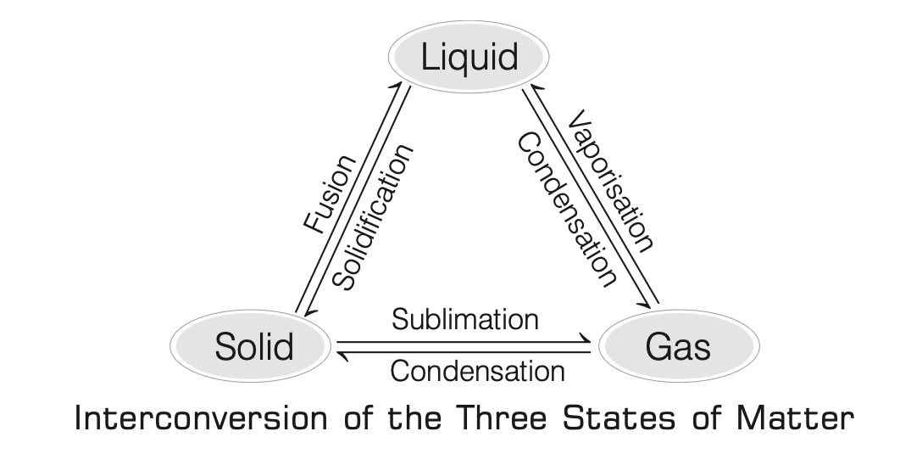
- Overview:
- States are interconvertible by changing temperature or pressure.
- Processes:
- Fusion:
- Solid to liquid (melting).
- Solidification:
- Liquid to solid.
- Vaporisation:
- Liquid to gas.
- Condensation:
- Gas to liquid or liquid to solid.
- Sublimation:
- Solid to gas without liquid phase.
- Key Terms:
- Fusion:
- Conversion of solid to liquid.
- Melting Point:
- Temperature at which a solid melts at atmospheric pressure.
- Indicates strength of intermolecular forces; higher melting point implies stronger forces.
- Example:
- Ice melts at \( 0^\circ C \).
- Sublimation:
- Direct conversion of solid to gas on heating, and back to solid on cooling.
- Examples:
- Naphthalene, camphor, dry ice.
- Vaporisation:
- Liquid to gas on heating; called evaporation if below boiling point.
- Boiling Point:
- Temperature at which a liquid boils at atmospheric pressure; a bulk phenomenon.
- Example:
- Water boils at \( 100^\circ C \) at standard pressure.
- Condensation:
- Gas to liquid or liquid to solid.
- Latent Heat:
- Heat absorbed or released during a state change at constant temperature.
- Latent Heat of Fusion:
- Heat required to convert 1 kg of solid to liquid at its melting point.
- Example:
- Water at \( 0^\circ C \) has more energy than ice at \( 0^\circ C \) due to latent heat.
- Latent Heat of Vaporisation:
- Heat required to convert 1 kg of liquid to gas at its boiling point.
- Temperature remains constant during boiling due to latent heat.
- Effect of Temperature:
- Heating increases kinetic energy, causing particles to vibrate faster, overcome intermolecular forces, and transition from solid to liquid.
- Effect of Pressure:
- Increasing pressure and reducing temperature converts gas to liquid or liquid to solid; decreasing pressure and increasing temperature reverses this.
- Examples:
- Steam at \( 373 \, K (100^\circ C) \) has more energy than water at the same temperature due to latent heat of vaporisation, causing worse burns.
- At high altitudes, low atmospheric pressure lowers water’s boiling point (\( T_b < 100^\circ C \)), increasing cooking time.
- In pressure cookers, high pressure raises the boiling point (\( T_b > 100^\circ C \)), reducing cooking time.
- Impurities increase boiling point and decrease freezing point.
- Dry ice (solid \( CO_2 \)) sublimes to gas at 1 atm without liquifying.
- Chemical Classification of Matter
-
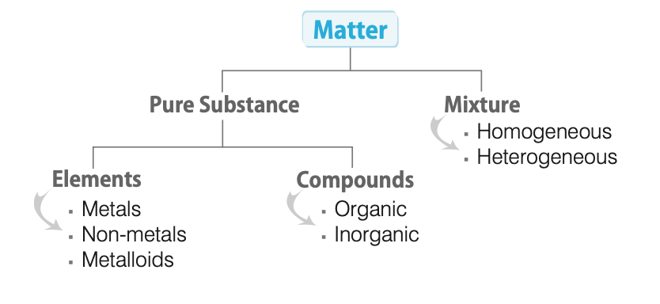
- Overview:
- Matter is classified based on chemical composition into pure substances and mixtures.
- Pure Substances:
- Elements:
- Definition:
- Basic form of matter that cannot be broken down by physical or chemical processes, composed of one type of atom.
- First defined by Robert Boyle (1661) and Antoine Lavoisier (1743–94).
- Types:
- Solids:
- Aluminium (\( Al \)), Iron (\( Fe \)), Gold (\( Au \)), Silver (\( Ag \)).
- Liquids:
- Mercury (\( Hg \)), Bromine (\( Br \)).
- Gases:
- Argon (\( Ar \)), Helium (\( He \)), Oxygen (\( O_2 \)), Hydrogen (\( H_2 \)).
- Total:
- 118 elements, 98 naturally occurring, rest synthetic.
- Symbols:
-
| Element | Symbol | Element | Symbol | Element | Symbol |
|---|
| Aluminium | Al | Copper | Cu | Nitrogen | N |
| Argon | Ar | Fluorine | F | Oxygen | O |
| Barium | Ba | Gold | Au | Potassium | K |
| Boron | B | Hydrogen | H | Silicon | Si |
| Bromine | Br | Iodine | I | Silver | Ag |
| Calcium | Ca | Iron | Fe | Sodium | Na |
| Carbon | C | Lead | Pb | Sulphur | S |
| Chlorine | Cl | Magnesium | Mg | Uranium | U |
| Cobalt | Co | Neon | Ne | Zinc | Zn |
- Naming:
- Symbols derived from Latin, German, or Greek names; first letter capitalized, second lowercase.
- Subcategories:
- Metals, non-metals, metalloids (properties discussed later).
- Compounds:
- Definition:
- Pure substances composed of two or more elements chemically combined in fixed proportions.
- Examples:
- Water (\( H_2O \)), Methane (\( CH_4 \)), Sugar (\( C_{12}H_{22}O_{11} \)), Salt (\( NaCl \)), Baking Soda (\( NaHCO_3 \)).
- Properties:
- Fixed composition, distinct from constituent elements.
- Can be broken down chemically or electrochemically, not physically.
- Categorized as organic (carbon-based) or inorganic (non-carbon-based).
- Mixtures:
- Definition:
- Impure substances with variable proportions of components (e.g., air, seawater, minerals, soil).
- Separable by physical or mechanical processes.
- Types:
- Homogeneous Mixtures:
- Uniform composition throughout.
- Examples:
- Salt in water, sugar in water, methanol in water, vinegar, toothpaste, soap, soft drinks.
- Also called true solutions; solute particle diameter < 1 nm.
- Heterogeneous Mixtures:
- Non-uniform composition with distinct parts.
- Examples:
- Sodium chloride and iron filings, dust in air, salt and sulphur, oil and water, milk (colloid), suspensions.
- Everyday Science:
- Earthen pots cool water in summer due to evaporation through pores, reducing water temperature as energy is absorbed.
- Cotton clothes aid evaporation in summer, cooling the body.
- Water droplets form on cold glass surfaces as water vapor condenses upon losing energy.
- Nail polish remover or spirit cools the skin via evaporation, absorbing heat.
- Sprinkling water on hot roofs cools them due to water’s high latent heat.
- Separating Components of a Mixture
- Heterogeneous Mixtures:
- Separated by physical methods like hand-picking, sieving, filtration.
- Homogeneous Mixtures:
- Require special techniques:
- Evaporation:
- Separates volatile solvents from non-volatile solutes (e.g., salt from seawater).
- Rate increases with temperature, surface area, wind speed, and decreases with humidity.
- Centrifugation:
- Uses centrifugal force to separate denser particles (bottom) from lighter ones (top).
- Applications:
- Blood/urine tests, butter separation from cream, water removal in washing machines.
- Separating Funnel:
- Separates immiscible liquids based on density (e.g., oil and water, slag from molten iron in furnaces).
- Sublimation:
- Separates sublimates (e.g., naphthalene, camphor, dry ice, \( NH_4Cl \), \( HgCl_2 \)) from non-sublimates by heating and cooling vapors.
- Chromatography:
- Separates components with different adsorption capacities (e.g., dyes, pigments, drugs, ink components).
- Invented by Tswett; based on Greek ‘Kroma’ (color).
- Distillation:
- Separates liquids based on boiling point differences (e.g., chloroform and aniline, acetone and water).
- Involves vaporisation and condensation.
- Fractional Distillation:
- Used for miscible liquids with boiling point differences < 25 K (e.g., air gases, petroleum fractions).
- Distillation Under Reduced Pressure:
- For high-boiling-point liquids or those decomposing at boiling points (e.g., glycerol in soap industry).
- Steam Distillation:
- Separates steam-volatile, water-immiscible substances (e.g., aniline, sandalwood oil, turpentine oil).
- Crystallisation:
- Purifies solids by forming crystals from a saturated solution (e.g., salt, alum purification).
- Mass Terms Related to Matter
- Atomic Mass:
- Relative mass compared to carbon-12, expressed in atomic mass units (amu or u).
- \( 1 \, \text{u} = 1.66056 \times 10^{-24} \, \text{g} \), one-twelfth the mass of a carbon-12 atom.
- Average Atomic Mass:
- Weighted average of isotopic masses based on natural abundance.
- Molecular Mass:
- Sum of atomic masses of all atoms in a molecule, in u.
- Example:
- Methane (\( CH_4 \)):
- \( 1 \times 12.011 \, (\text{C}) + 4 \times 1.008 \, (\text{H}) = 16.043 \, \text{u} \).
- Formula Unit Mass:
- Sum of atomic masses in a compound’s formula unit.
- Example:
- Sodium Chloride (\( NaCl \)): \( 1 \times 23 \, (\text{Na}) + 1 \times 35.5 \, (\text{Cl}) = 58.5 \, \text{u} \).
- Equivalent Mass:
- Molecular or formula unit mass divided by valency:
- \( \text{Equivalent Weight} = \frac{\text{Molecular Mass}}{\text{Valency}} \).
- Physical and Chemical Changes
- Physical Change:
- Alters physical properties (shape, size, color, state) without forming new substances; usually reversible.
- Examples:
- Evaporation, melting/freezing of water, cloud formation, stretching a spring.
- Chemical Change:
- Forms new substances by altering molecular composition; irreversible.
- Examples:
- Burning magnesium, coal, wood; photosynthesis (\( CO_2 + H_2O \to C_6H_{12}O_6 \)); rusting; curdling milk.
- Burning a candle involves both physical (wax melting) and chemical (wax burning) changes.
- Bioluminescence:
- Light emission by fireflies via a chemical process in specific organs.
- Laws of Chemical Combinations
- Law of Conservation of Mass:
- Proposed by Antoine Lavoisier (1789).
- Matter is neither created nor destroyed in a chemical reaction:
- \( \text{Total Mass of Reactants} = \text{Total Mass of Products} \).
- Law of Definite Proportions:
- Proposed by Joseph Proust.
- A compound contains elements in a fixed mass ratio.
- Example:
- \( CO_2 \) has carbon and oxygen in a 3:8 mass ratio.
- Law of Multiple Proportions:
- Proposed by Dalton (1803).
- When two elements form multiple compounds, the masses of one element combining with a fixed mass of the other are in a simple ratio.
- Example:
- Water and hydrogen peroxide:
- Water:
- \( 2 \, \text{g H} + 16 \, \text{g O} \to 18 \, \text{g} \, H_2O \).
- Hydrogen Peroxide:
- \( 2 \, \text{g H} + 32 \, \text{g O} \to 34 \, \text{g} \, H_2O_2 \).
- Oxygen masses (16 g, 32 g) with 2 g hydrogen are in a 1:2 ratio.
- Gay-Lussac’s Law of Combining Volumes:
- Proposed by Gay-Lussac (1808).
- Gases combine or are produced in simple volume ratios at constant temperature and pressure.
- Example:
- Hydrogen and oxygen forming water:
- \( 100 \, \text{mL H}_2 + 50 \, \text{mL O}_2 \to 100 \, \text{mL H}_2O \), ratio 2:1.
- Mole Concept
- Definition:
- The mole (mol) is the SI unit for the amount of a chemical species, introduced by Wilhelm Ostwald (1896).
- 1 mole is:
- The amount weighing equal to its formula weight in grams.
- The amount containing \( 6.022 \times 10^{23} \) entities (Avogadro’s number, \( N_A \)).
- For gases, the amount occupying 22.4 L at STP.
- Calculations:
- Number of moles:
- \( n = \frac{\text{Mass of substance (g)}}{\text{Molecular/Atomic weight (g)}} \).
- Number of particles:
- \( N = \frac{\text{Volume of gas at STP (L)}}{22.4} \times N_A \).
- Example:
- 1 mole of \( CH_4 \) = 16.043 g, contains \( 6.022 \times 10^{23} \) molecules, occupies 22.4 L at STP.
- Atomic Structure
- Introduction to Atomic Structure
- Historical Context:
- Until the 19th century, atoms were considered the smallest indivisible particles.
- Experiments revealed atoms are divisible into sub-atomic particles with a definite internal structure.
- Dalton’s Atomic Theory
- Proposed by John Dalton in 1808 in ‘A New System of Chemical Philosophy’:
- Matter consists of minute, indivisible, indestructible particles called atoms.
- All atoms of a given element have identical properties, including mass; atoms of different elements differ in mass and properties.
- Compounds form when atoms of different elements combine in a fixed ratio.
- Chemical reactions involve reorganization of atoms; atoms are neither created nor destroyed.
- Explains laws of chemical combination (e.g., conservation of mass, definite proportions).
- Drawbacks:
- Fails to explain why atoms combine to form molecules.
- Does not account for differences in mass, size, or valency of atoms.
- Lacks explanation for the binding forces responsible for the existence of solids, liquids, and gases.
- Cannot explain the law of gaseous volumes.
- Sub-atomic Particles and Their Properties
- Overview:
- Dalton’s theory was disproved by experiments showing atoms consist of smaller particles called sub-atomic particles (e.g., electron, proton, neutron, positron, neutrino, meson).
- Fundamental particles: Electrons, protons, neutrons.
- Non-fundamental particles appear briefly during particle exchange mechanisms.
- Fundamental Particles:
- Electrons (\( e^- \)):
- Discovery:
- Discovered by J.J. Thomson (1897) in cathode ray experiments.
- At \( 10^{-6} \, \text{atm} \), a high-potential discharge tube produces negatively charged particles (electrons) from the cathode, called cathode rays.
- Characteristics:
- Cathode rays are invisible but detectable with fluorescent or phosphorescent materials (e.g., used in television picture tubes).
- Behave like negatively charged particles in electric or magnetic fields.
- Charge:
- \( -1.602 \times 10^{-19} \, \text{C} \) (determined by Millikan’s oil drop experiment).
- Mass:
- \( 9.11 \times 10^{-31} \, \text{kg} \) (lightest fundamental particle).
- Specific charge (\( e/m \)): \( 1.76 \times 10^8 \, \text{C/g} \) (independent of gas or electrode used).
- Considered to have negligible mass and a charge of \(-1\).
- Protons (\( ^1_1H \)):
- Discovery:
- Discovered by E. Goldstein (1886) as canal rays (positively charged radiations) in gas discharge experiments.
- Named “proton” by Rutherford (1919).
- Characteristics:
- Charge:
- \( +1.6 \times 10^{-19} \, \text{C} \) (equal in magnitude, opposite in sign to electron).
- Mass:
- \( 1.67 \times 10^{-27} \, \text{kg} \).
- Mass taken as 1 unit, charge as \( +1 \).
- Hydrogen (protium) is the only atom without neutrons.
- Neutrons (\( ^0_1n \)):
- Discovery:
- Discovered by Chadwick (1932) by bombarding beryllium with alpha particles.
- Characteristics:
- Electrically neutral (no charge).
- Mass:
- \( 1.67 \times 10^{-27} \, \text{kg} \) (slightly greater than proton).
- Non-Fundamental Particles:
- Positron (\( e^+ \)):
- Discovered by Anderson (1932).
- Antiparticle of electron with positive charge and equal mass.
- Antiproton (\( \bar{p} \)):
- Discovered in 1955.
- Antiparticle of proton with negative charge and equal mass.
- Neutrino and Antineutrino (\( \nu, \bar{\nu} \)):
- Predicted by Pauli (1930), observed in 1956.
- Zero rest mass and charge, possess energy and momentum.
- Mutually antiparticles.
- Pi-mesons (\( \pi^+, \pi^-, \pi^0 \)):
- Predicted by Yukawa (1935), discovered in cosmic rays (1947).
- Types:
- Positive (\( \pi^+ \)), negative (\( \pi^- \)), neutral (\( \pi^0 \)).
- Masses:
- \( \pi^+ \): 274 times electron mass; \( \pi^0 \): 264 times electron mass.
- Explain nuclear forces via exchange between nucleons.
- Quarks and Bosons:
- Quarks:
- Elementary particles forming protons and neutrons, with fractional charges; each proton/neutron contains 3 quarks.
- Bosons:
- Particles with whole-number spin (e.g., mesons, photons).
- Example:
- \( \text{Boson} \to \text{Meson} + \text{Photon} \).
- Notes:
- Every fundamental particle has an antiparticle with opposite properties (e.g., electron and positron differ in charge).
- Non-fundamental particles are categorized by mass, not as antiparticles of fundamental particles.
- Atoms observable only via scanning tunneling microscope.
- All atoms are reactive except noble gases.
- Atom sizes:
- Helium (\( 32 \times 10^{-12} \, \text{m} \)), Cesium (\( 225 \times 10^{-12} \, \text{m} \)).
- Atom existence proposed by Indian and Greek philosophers (400 BC).
- Earlier Atomic Models
- Thomson Model:
- Proposed by J.J. Thomson:
- Atom as a positively charged sphere with embedded electrons, like a Christmas pudding.
- Equal positive and negative charges ensure electrical neutrality.
- Drawback:
- Cannot explain results of alpha-particle scattering experiments.
- Rutherford Model:
- Proposed by Rutherford (1911) based on alpha-particle scattering experiments with gold foil:
- Atom has a positively charged nucleus containing most mass (protons and neutrons, collectively nucleons).
- Electrons revolve in orbits around the nucleus, leaving most of the atom as empty space.
- Nucleus size is very small compared to the atom.
- Drawbacks:
- Electrons in circular orbits should radiate energy due to centripetal acceleration, spiral inward, and collapse into the nucleus, per classical electrodynamics.
- Contradicts observed atomic stability.
- Bohr’s Model:
-
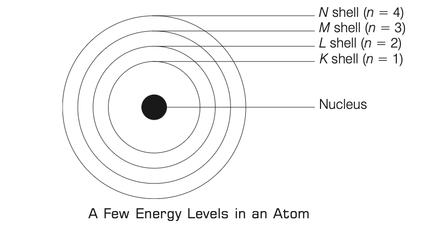
- Proposed by Niels Bohr (1913) using Planck’s quantum theory to address Rutherford’s model flaws:
- Electrons revolve in orbits without energy loss, each associated with a definite energy level (shells: K, L, M, N or \( n = 1, 2, 3, 4, \ldots \)).
- Electrostatic Coulomb force balances centripetal force for electron orbits.
- Angular momentum is quantized: \( mvr = \frac{nh}{2\pi} \), where \( n = 1, 2, 3, \ldots \), \( h \) is Planck’s constant.
- Energy emission/absorption occurs only when electrons transition between levels: \( \Delta E = E_2 - E_1 = \frac{hc}{\lambda} \).
- Higher orbital radius corresponds to higher energy.
- Drawbacks:
- Fails to explain spectra of atoms with multiple electrons (e.g., helium).
- Cannot account for spectral line splitting in magnetic (Zeeman effect) or electric (Stark effect) fields.
- Does not explain chemical bond formation.
- Characteristics of an Atom
- Atomic Number (\( Z \)):
- Number of protons in the nucleus, equal to the number of electrons in a neutral atom.
- Example:
- Oxygen has 8 protons and 8 electrons, so \( Z = 8 \).
- \( Z = \text{Number of protons} = \text{Number of electrons} \).
- Moseley’s Law:
- Properties of elements depend more on atomic number than mass, shown by comparing elemental properties with atomic number and mass.
- Mass Number (\( A \)):
- Total number of nucleons (protons + neutrons) in the nucleus.
- Example:
- Oxygen with 8 protons and 8 neutrons has \( A = 16 \).
- \( A = \text{Number of protons} + \text{Number of neutrons} \).
- Number of neutrons:
- \( N = A - Z \).
- Atomic notation: \( ^A_ZX \).
- Ions:
- Anion:
- Atom with more electrons than protons (negative charge).
- Cation:
- Atom with more protons than electrons (positive charge).
- Different Atomic Species
- Isotopes:
- Atoms of the same element with the same atomic number (\( Z \)) but different mass numbers (\( A \)) due to varying neutron counts.
- Examples:
- Hydrogen isotopes: \( ^1_1H \) (protium), \( ^2_1H \) (deuterium), \( ^3_1H \) (tritium, radioactive); Carbon isotopes: \( ^12_6C, ^13_6C, ^14_6C \).
- Same chemical properties, different physical properties.
- Occupy the same periodic table position.
- Hydrogen isotopes uniquely named; polonium has the most isotopes.
- Isobars:
- Atoms of different elements with the same mass number (\( A \)) but different atomic numbers (\( Z \)).
- Examples:
- \( ^40_{14}S, ^40_{17}Cl, ^40_{18}Ar, ^40_{19}K, ^40_{20}Ca \).
- Similar physical properties due to same mass number; placed separately in the periodic table.
- Artificial isobars formed by beta-particle emission from radioactive elements.
- Isotones:
- Atoms of different elements with the same number of neutrons but different \( A \) and \( Z \).
- Examples:
- \( ^23_{11}Na \) and \( ^24_{12}Mg \) (both have 12 neutrons: \( 23-11 = 12 \), \( 24-12 = 12 \)); \( ^31_{15}P \) and \( ^30_{14}Si \) (both have 16 neutrons).
- Isodiaphers:
- Atoms of different elements with the same difference between proton and neutron numbers.
- Example:
- \( ^239_{94}Pu \) and \( ^235_{92}U \).
- Structural Features of an Atom
- Shells and Subshells:
- Shells:
- Orbits of definite energies where electrons revolve; energy increases from innermost (K, \( n=1 \)) to outermost.
- Subshells:
- Within each shell, denoted by \( s, p, d, f \), with specific electron capacities.
- Table of Shells and Subshells:
-
| Shell | Principal Quantum Number (\( n \)) | Subshells | Orbitals | Total Electrons |
|---|
| K | 1 | s | 1 | 2 |
| L | 2 | s, p | 1 + 3 = 4 | 8 |
| M | 3 | s, p, d | 1 + 3 + 5 = 9 | 18 |
| N | 4 | s, p, d, f | 1 + 3 + 5 + 7 = 16 | 32 |
| O | 5 | s, p, d, f, g | 1 + 3 + 5 + 7 + 9 = 25 | 50 |
| P | 6 | s, p, d, f, g, h | 1 + 3 + 5 + 7 + 9 + 11 = 36 | 72 |
| Q | 7 | s, p, d, f, g, h, i | 1 + 3 + 5 + 7 + 9 + 11 + 13 = 49 | 98 |
- Orbitals:
- Three-dimensional regions around the nucleus with maximum electron probability.
- Electron capacities:
- \( s \): 2, \( p \): 6, \( d \): 10, \( f \): 14.
- Shapes:
- \( s \)-orbitals:
- Spherical, with \( n-1 \) spherical nodes (zero electron probability).
- \( p \)-orbitals:
- Three, dumbbell-shaped with two lobes separated by a nodal plane.
- \( d \)-orbitals:
- Five, four double dumbbell-shaped, one dumbbell with a high-density collar.
- Electronic Configuration
- Definition:
- Arrangement of electrons in shells, subshells, and orbitals.
- Bohr-Burry Scheme:
- Proposed by Bohr and Burry (1921):
- Maximum electrons in a shell: \( 2n^2 \) (\( n = 1, 2, 3, \ldots \)).
- Outermost shell:
- Maximum 8 electrons.
- Penultimate shell:
- Maximum 8 electrons unless outermost has 2 electrons.
- To exceed 2 electrons in the outermost shell, penultimate must have 18, outermost 2.
- For 18 electrons in a shell, inner shells must be complete, with outermost and penultimate having 2 and 8 electrons, respectively.
- Electrons fill from inner to outer shells.
- Electron Distribution Example:
-
| Element | Symbol | Atomic Number | Distribution of Electrons |
|---|
| Hydrogen | H | 1 | 1 |
| Helium | He | 2 | 2 |
| Beryllium | Be | 4 | 2, 2 |
| Neon | Ne | 10 | 2, 8 |
| Sodium | Na | 11 | 2, 8, 1 |
| Argon | Ar | 18 | 2, 8, 8 |
| Potassium | K | 19 | 2, 8, 8, 1 |
- nlx Notation:
- Written as \( nl^x \), where \( n \) is the principal quantum number, \( l \) is the subshell (\( s, p, d, f \)), and \( x \) is the number of electrons.
- Examples:
- \( ^11Na: 1s^2 2s^2 2p^6 3s^1 \); \( ^7N: 1s^2 2s^2 2p^3 \); \( ^8O: 1s^2 2s^2 2p^4 \).
- Rules for Filling Electrons:
- Aufbau Principle:
-
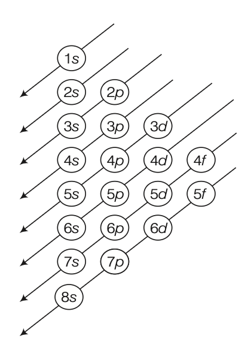
- Electrons fill orbitals in order of increasing energy:
- \( 1s < 2s < 2p < 3s < 3p < 4s < 3d < 4p < 5s < 4d < 5p < 6s < 4f < 5d < 6p < 7s < 5f < 6d < 7p < 8s \).
- Higher-energy orbitals (e.g., \( 5g, 6g, 6h \)) possible but not filled under normal conditions.
- Hund’s Rule of Maximum Multiplicity:
- Electrons singly occupy orbitals in a subshell before pairing to maximize spin multiplicity and stability.
- Pauli Exclusion Principle:
- Proposed by Wolfgang Pauli (1926).
- No two electrons in an atom can have the same set of four quantum numbers.
- If \( n, l, m \) are identical, spin quantum number (\( s \)) must differ (\( +\frac{1}{2} \) or \( -\frac{1}{2} \)).
- Maximum electrons in a shell:
- \( 2n^2 \).
- Valence and Core Electrons:
- Valence Electrons:
- In the outermost shell, determine chemical properties.
- Core Electrons:
- In inner shells.
- Example:
- Magnesium (\( Z=12 \)): \( 2, 8, 2 \) (core: 2, 8; valence: 2).
- Valency Calculation:
- If valence electrons = 1, 2, 3: Valency = Number of valence electrons.
- If valence electrons ≥ 4: Valency = \( 8 - \text{Number of valence electrons} \).
- Valence electrons have higher energy than core electrons.
- Quantum Numbers
- Overview:
- Four quantum numbers describe an electron’s position, energy, subshell, orientation, and spin.
- Principal Quantum Number (\( n \)):
- Positive integer (\( n = 1, 2, 3, \ldots \)).
- Identifies the shell, size, and energy of the orbital.
- Higher \( n \): Higher energy; \( n=1 \) is the ground state.
- Azimuthal Quantum Number (\( l \)):
- Defines subshell and orbital shape: \( l = 0 (s), 1 (p), 2 (d), 3 (f), \ldots \).
- Values:
- \( 0 \) to \( n-1 \).
- Example:
- For \( n=3 \), \( l = 0, 1, 2 \) (\( s, p, d \)).
- Magnetic Quantum Number (\( m \)):
- Determines orbital orientation in a magnetic field.
- Values:
- \( -l \) to \( +l \), including 0.
- Total values:
- \( 2l + 1 \), equal to the number of orbitals in a subshell.
- Examples:
- For \( l=0 \), \( m=0 \) (1 \( s \)-orbital); for \( l=1 \), \( m=-1, 0, +1 \) (3 \( p \)-orbitals); for \( l=2 \), \( m=-2, -1, 0, +1, +2 \) (5 \( d \)-orbitals).
- Spin Quantum Number (\( s \)):
- Represents electron spin (clockwise or anticlockwise): \( s = +\frac{1}{2} \) or \( -\frac{1}{2} \).
- Spin angular momentum is quantized; each orbital holds up to two electrons with opposite spins.
- Bonding and Chemical Reactions
- Chemical Bond
- Definition:
- The attractive force holding atoms, ions, or other constituents together in chemical species, maintaining a specific geometrical shape and mutual atomic order.
- Formation is exothermic, releasing energy and decreasing the system’s free energy.
- Valency
- Definition:
- The combining capacity of an element, determined by the number of valence electrons.
- Noble Gases:
- Include Helium (\( He \)), Neon (\( Ne \)), Argon (\( Ar \)), Krypton (\( Kr \)), Xenon (\( Xe \)), Radon (\( Rn \)).
- Valency is zero due to stable outermost shells (octet: 8 electrons, except \( He \): 2 electrons).
- Exist as monoatomic gases, not participating in bonding due to no tendency to lose, gain, or share electrons.
- Valency Rules:
- For 1, 2, 3, or 4 valence electrons: Valency = Number of valence electrons.
- For 5, 6, 7, or 8 valence electrons: Valency = \( 8 - \text{Number of valence electrons} \).
- Example:
- Sodium (\( Na \): 2, 8, 1) has 1 valence electron, loses it to form \( Na^+ \) (2, 8), valency = 1.
- Notes:
- Term ‘valence’ from Latin ‘valentia’ (strength, capacity).
- Valence electrons:
- Electrons in the outermost shell (valence shell).
- Electronic Theory of Chemical Bonding (Octet Rule)
- Proposed by Kossel and Lewis (1916):
- Atoms combine by transferring or sharing valence electrons to achieve a stable octet (8 electrons) or duplet (\( He \)) in their valence shells, mimicking noble gases.
- Example:
- Sodium chloride (\( NaCl \)): \( Na \) (2, 8, 1) loses an electron to form \( Na^+ \) (2, 8); \( Cl \) (2, 8, 7) gains an electron to form \( Cl^- \) (2, 8, 8).
- Ions
- Definition:
- Electrically charged atoms or groups of atoms.
- Cations:
- Positively charged, formed by electron loss (e.g., \( Na^+, Mg^{2+}, Ca^{2+}, Al^{3+} \)).
- Anions:
- Negatively charged, formed by electron gain (e.g., \( F^-, Cl^-, O^{2-}, CO_3^{2-} \)).
- Characteristics:
- Metallic elements (electropositive) form cations.
- Non-metallic elements (electronegative) form anions.
- Exceptions:
- Non-metal-based cations like \( H^+ \), \( NH_4^+ \).
- Types of Bonding
- Overview:
- Divided into chemical bonding (ionic, covalent, coordinate) and physical bonding (hydrogen, van der Waals’).
- Ionic or Electrovalent Bond:
- Definition:
- Formed by electrostatic attraction between positive and negative ions after electron transfer from a metal to a non-metal, achieving octet or duplet.
- Example: Sodium Chloride (\( NaCl \)):
- \( Na (2, 8, 1) \to Na^+ (2, 8) + e^- \).
- \( Cl (2, 8, 7) + e^- \to Cl^- (2, 8, 8) \).
- \( Na^+ + Cl^- \to NaCl \), held by electrostatic forces.
- Other Examples:
- \( MgCl_2, CaO, NH_4Cl, NaOH \).
- Electrovalency:
- Number of unit charges on the ion (e.g., \( Na \), \( Cl \): 1).
- Characteristics:
- Crystalline solids, hard and brittle due to long-range order.
- High melting and boiling points due to strong electrostatic forces.
- Non-volatile, high density.
- Soluble in polar solvents (e.g., water) due to high dielectric constant; insoluble in non-polar solvents (e.g., benzene, acetone).
- Conduct electricity in aqueous or molten states due to mobile ions; non-conductive in solid state.
- Undergo fast reactions in solution.
- Covalent Bond:
- Definition:
- Formed by sharing electrons between atoms with similar electronegativity to achieve noble gas configuration.
- Example:
- Chlorine (\( Cl_2 \)):
- Each \( Cl \) (2, 8, 7) shares one electron to form a shared pair, achieving octet (2, 8, 8).
- Types:
- Single Covalent Bond:
- One shared electron pair (e.g., \( H-H \) in \( H_2 \)).
- Double Covalent Bond:
- Two shared electron pairs (e.g., \( O=C=O \) in \( CO_2 \)).
- Triple Covalent Bond:
- Three shared electron pairs (e.g., \( N\equiv N \) in \( N_2 \)).
- Covalency:
- Number of electrons an atom contributes for sharing.
- Examples:
- \( H_2 \): H covalency = 1; \( N_2 \): N covalency = 3; \( CH_4 \): C covalency = 4, H covalency = 1.
- Characteristics:
- Exist as gases, liquids, or soft solids (exceptions: diamond, \( SiO_2 \), \( SiC \)).
- Low melting and boiling points due to weak intermolecular forces.
- Insoluble in water, soluble in non-polar solvents (e.g., benzene, \( CCl_4 \)); exceptions like sugar, alcohol due to hydrogen bonding.
- Poor electrical conductors (exception: graphite due to free electrons).
- Rigid, directional bonds, leading to specific molecular shapes.
- Slow, complex reactions.
- Types Based on Polarity:
- Non-polar Covalent Bond:
- Formed between identical atoms; shared electrons equally attracted (e.g., \( H_2, O_2, Cl_2, N_2, F_2 \)).
- Polar Covalent Bond:
- Formed between atoms with different electronegativities; electrons displaced toward more electronegative atom (e.g., \( H^{\delta+}-F^{\delta-}, H^{\delta+}-Cl^{\delta-}, F^{\delta-}-Be^{\delta+}-F^{\delta-} \)).
- Note:
- \( HCl \) is covalent but conducts electricity in aqueous solution due to ion separation.
- Shapes and Bond Angles:
-
| Molecule Shape | Bond Angle | Examples |
|---|
| Linear | 180° | \( BeCl_2, C_2H_2, CO_2, ZnCl_2, H_2 \) |
| Trigonal Planar | 120° | \( BF_3, BCl_3, BH_3, AlCl_3, C_2H_4 \) |
| Tetrahedral | 109.5° | \( CH_4, NH_4^+, CCl_4, SiCl_4 \) |
| Trigonal Bipyramidal | 90°, 120° | \( PCl_5, PF_5 \) |
| Octahedral | 90° | \( SF_6 \) |
| Bent | < 120° | \( SO_2, O_3 \) |
| Pyramidal | < 109°28' | \( NH_3, PH_3, PCl_3 \) |
| V-shape/Angular | < 109°28' | \( H_2O, H_2S \) |
| See-saw | < 109°28' | \( SF_4, SCl_4 \) |
| T-shape | 90° | \( ClF_3 \) |
| Square Pyramidal | < 90° | \( ICl_5 \) |
| Square Planar | 90° | \( XeF_4, [Cu(NH_3)_4]^{2+} \) |
- Coordinate (Dative) Bond:
- Definition:
- A covalent bond where both shared electrons are donated by one atom (donor) to another (acceptor).
- Represented by an arrow (\( \to \)) pointing to the acceptor.
- Example: Hydronium Ion (\( H_3O^+ \)):
- \( H_2O + H^+ \to H_3O^+ \), where oxygen in \( H_2O \) donates a lone pair to \( H^+ \).
- Characteristics:
- Exist in solid, liquid, or gas states.
- Melting/boiling points higher than covalent but lower than ionic compounds.
- Poor electrical conductors.
- Sparingly soluble in water, readily soluble in organic solvents.
- Slow reactions, like covalent compounds.
- Hydrogen Bond:
- Definition:
- Attractive force between a hydrogen atom (covalently bonded to \( N, O, F \)) and an electronegative atom (\( N, O, F \)) in another molecule.
- Example:
- \( H^{\delta+}-F^{\delta-} \cdots H^{\delta+}-F^{\delta-} \), where hydrogen bonds form between \( HF \) molecules.
- Present in water, DNA, and other inorganic/organic molecules.
- Note:
- Lone pair electrons are non-bonding electrons (e.g., in \( NH_3 \), nitrogen has a lone pair).
- Van der Waals’ Forces:
- Definition:
- Weak attractive or repulsive interactions between molecules, excluding covalent or ionic bonds.
- Types:
- Keesom Forces:
- Between permanent dipoles.
- Debye Forces:
- Between a permanent dipole and an induced dipole.
- London (Dispersion) Forces:
- Between instantaneously induced dipoles, dominant in non-polar molecules.
- Example:
- Gecko adhesion to surfaces due to van der Waals’ forces between footpad setae and surfaces.
- Mixed Bonding:
- Some compounds have both ionic and covalent bonds (e.g., \( NaOH, KOH, H_2SO_4, Na_2CO_3 \)).
- Chemical Formula
- Definition:
- Symbolic representation of a compound’s composition, using element symbols and valencies.
- Writing Rules:
- Write constituent elements and their valencies.
- Examples:
- Hydrogen Chloride:
- \( H (1^+), Cl (1^-) \to HCl \).
- Ammonium Sulphate:
- \( NH_4 (1^+), SO_4 (2^-) \to (NH_4)_2SO_4 \).
- Polyatomic ions are enclosed in brackets if more than one (e.g., \( (NH_4)_2SO_4 \)); no brackets if single (e.g., \( NaOH \)).
- Types:
- Empirical Formula:
- Simplest whole-number ratio of atoms (e.g., ethane \( C_2H_6 \): \( CH_3 \)).
- Molecular Formula:
- Exact number of atoms in a molecule.
- Calculated from mass percent: \( \text{Mass \%} = \frac{\text{Mass of element}}{\text{Molar mass of compound}} \times 100 \).
- \( \text{Molecular formula} = (\text{Empirical formula})_n \), where \( n = \frac{\text{Molar mass}}{\text{Empirical formula mass}} \).
- Structural Formula:
- Shows atomic arrangement (e.g., ethane \( C_2H_6 \): \( H_3C-CH_3 \)).
-
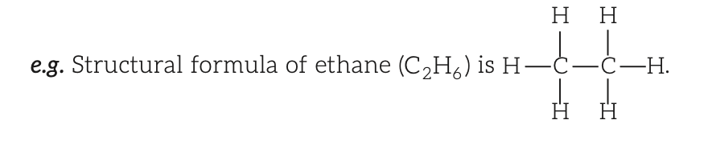
- Chemical Reaction
- Definition:
- Process where reactants form products by breaking old bonds and forming new ones.
- Exothermic if bond energies of reactants > products; endothermic if vice versa.
- Characteristics:
- Observed via:
- Change in state.
- Change in color.
- Gas evolution.
- Temperature change.
- Precipitate formation.
- Chemical Equation
- Definition:
- Symbolic representation of a chemical reaction.
- Reactants (LHS, separated by \( + \)) yield products (RHS, separated by \( + \)) via an arrow (\( \to \)).
- Example:
- \( Zn(s) + H_2SO_4(aq) \to ZnSO_4(aq) + H_2(g) \).
- Rules for Balanced Equations:
- Number of atoms of reactants equals products (law of conservation of mass).
- Example:
- Unbalanced: \( Fe + H_2O \to Fe_3O_4 + H_2 \).
- Balanced: \( 3Fe(s) + 4H_2O(g) \to Fe_3O_4(s) + 4H_2(g) \).
- Include physical states (e.g., \( s, l, g, aq \)).
- Types:
- Thermochemical Equation:
- Includes enthalpy change (e.g., \( N_2(g) + 3H_2(g) \to 2NH_3(g) + 22.5 \, \text{kcal} \)).
- Ionic Equation:
- Uses ions to represent reactants/products (e.g., \( Zn(s) + Cu^{2+}(aq) \to Zn^{2+}(aq) + Cu(s) \)).
- Types of Chemical Reactions
- Combination Reaction:
- Single product from multiple reactants.
- Example:
- \( CaO(s) + H_2O(l) \to Ca(OH)_2(aq) \) (quick lime to slaked lime).
- Others:
- \( C(s) + O_2(g) \to CO_2(g) \); \( 2H_2(g) + O_2(g) \to 2H_2O(l) \).
- Everyday Science:
- Slaked lime (\( Ca(OH)_2 \)) reacts with \( CO_2 \) in air to form \( CaCO_3 \), giving walls a shiny finish.
- Magnesium ignited in dry ice produces bright light.
- Decomposition Reaction:
- Single reactant breaks into simpler products, requiring energy (heat, light, electricity).
- Types:
- Thermal Decomposition:
- By heating (e.g., \( CaCO_3(s) \xrightarrow{\text{Heat}} CaO(s) + CO_2(g) \)).
- Another example:
- \( 2Pb(NO_3)_2(s) \xrightarrow{\text{Heat}} 2PbO(s) + 4NO_2(g) + O_2(g) \).
- Photolysis:
- By sunlight (e.g., \( 2AgCl(s) \xrightarrow{\text{Sunlight}} 2Ag(s) + Cl_2(g) \)), used in black-and-white photography.
- Electrolysis:
- By electricity (e.g., \( 2H_2O(l) \xrightarrow{\text{Electric current}} 2H_2(g) + O_2(g) \)).
- Notes:
- Decomposition is the reverse of combination.
- \( CaCO_3 \) decomposition used in cement manufacturing.
- Metal salts emit colored light when heated.
- Displacement Reaction:
- More reactive element displaces less reactive one from a compound in solution.
- Example:
- \( Fe(s) + CuSO_4(aq) \to FeSO_4(aq) + Cu(s) \).
- Observation:
- Iron nail in \( CuSO_4 \) turns brownish, solution fades as iron displaces copper.
- Other reactive elements:
- Zinc, lead displace copper.
- Double Displacement Reaction:
- Ion exchange between reactants forms new substances.
- Example:
- \( Na_2SO_4(aq) + BaCl_2(aq) \to BaSO_4(s) \downarrow + 2NaCl(aq) \).
- Often forms precipitates (precipitation reaction).
- Neutralisation Reaction:
- Acid and base react to form salt and water, releasing 57.1 kJ if both are strong.
- Example:
- \( HCl(aq) + NaOH(aq) \to NaCl(aq) + H_2O(l) \).
- Isomerisation (Rearrangement) Reaction:
- Atoms in a molecule rearrange, common in organic compounds.
- Example:
- \( NH_4CNO \xrightarrow{\Delta} NH_2CONH_2 \) (ammonium cyanate to urea).
- Reversible and Irreversible Reactions:
- Reversible:
- Proceeds in both directions (e.g., \( N_2(g) + 3H_2(g) \xrightarrow{\text{Fe, Mo}} 2NH_3(g) \)).
- Irreversible:
- Proceeds in one direction (e.g., \( 2NaOH(aq) + H_2SO_4(aq) \to Na_2SO_4(aq) + 2H_2O(l) \)).
- Hydrolysis Reaction:
- Reaction of salts of weak acids/bases with water due to water’s high dielectric constant.
- Example:
- \( CH_3COONa(aq) + H_2O(l) \to CH_3COOH(aq) + NaOH(aq) \).
- Photochemical Reaction:
- Occurs in sunlight; rate depends on light intensity.
- Example:
- Photosynthesis:
- \( 6CO_2(g) + 12H_2O(l) \xrightarrow{\text{Sunlight}} C_6H_{12}O_6(aq) + 6H_2O(l) + 6O_2(g) \).
- Note:
- Chlorophyll acts as a photosensitizer, unchanged during the reaction.
- Exothermic and Endothermic Reactions:
- Exothermic:
- Energy released (e.g., respiration, decomposition, burning natural gas: \( A + B \to C + \Delta E \)).
- Endothermic:
- Energy absorbed (e.g., digestion: \( A + B \to C - \Delta E \)).
- Oxidation and Reduction:
- Oxidation:
- Gain of oxygen/electronegative element, loss of hydrogen/electrons, or increase in oxidation number.
- Examples:
- \( 2Cu(s) + O_2(g) \xrightarrow{\text{Heat}} 2CuO(s) \); \( CuO(s) + H_2(g) \to Cu(s) + H_2O(l) \) (H oxidized).
- Reduction:
- Gain of hydrogen/electropositive element/electrons, loss of oxygen/electronegative element, or decrease in oxidation number.
- Example:
- \( CuO(s) + H_2(g) \to Cu(s) + H_2O(l) \) (Cu reduced).
- Oxidising and Reducing Agents:
- Oxidising Agent:
- Accepts electrons, gets reduced (e.g., \( O_2, O_3, H_2O_2, KMnO_4, K_2Cr_2O_7 \)).
- Reducing Agent:
- Donates electrons, gets oxidized (e.g., \( H_2, SO_2, CO, H_2S, C \)).
- Example:
- \( Zn(s) + 2HCl(aq) \to ZnCl_2(aq) + H_2(g) \).
- \( Zn \): Oxidation number 0 to +2 (oxidized, reducing agent).
- \( H \): Oxidation number +1 to 0 (reduced, oxidizing agent).
- Note:
- \( HNO_2, SO_2, H_2SO_3 \) act as both oxidizing and reducing agents due to intermediate oxidation states (\( N: +3 \), \( S: +4 \)).
- In \( CO_2 \), \( C \) at +4 (maximum), cannot be oxidized further.
- Oxidation State (Oxidation Number)
- Definition:
- Real or imaginary charge on an atom in its combined state, often equivalent to valency.
- Rules:
- Elemental state:
- 0 (e.g., \( H_2, S_8, P_4 \)).
- Fluorine:
- -1 in all compounds.
- Oxygen:
- -2 (except peroxides: -1, superoxides: \( -\frac{1}{2} \), oxygen fluorides: +2 or +1).
- Hydrogen:
- -1 in metallic hydrides, +1 in others.
- Ion:
- Equals its charge.
- Complex ion:
- Sum of oxidation numbers equals net charge.
- Molecule:
- Sum of oxidation numbers is zero.
- Example:
- \( OF_2 \): \( x + 2(-1) = 0 \to x = +2 \) (O); \( H_2O \): \( 2(+1) + x = 0 \to x = -2 \) (O).
- Range:
- From \( \text{group number} - 8 \) to \( +\text{group number} \) (e.g., \( N \): -3 to +5).
- Effects of Chemical Reactions in Daily Life
- Examples:
- Fermentation, digestion, respiration, burning fuel, corrosion, rancidity.
- Corrosion:
- Oxidative deterioration of metal surfaces by environmental substances, forming oxides or salts.
- Example:
- Rusting: \( 2Fe(s) + \frac{3}{2}O_2(g) + xH_2O(l) \to Fe_2O_3 \cdot xH_2O(s) \).
- Other Examples:
- Silver tarnishing (\( 2Ag(s) + H_2S(g) \to Ag_2S(s) + H_2(g) \)); copper green coating (\( 2Cu(s) + CO_2(g) + O_2(g) + H_2O(l) \to CuCO_3 \cdot Cu(OH)_2(s) \)).
- Electrochemical process, accelerated by impurities, \( H^+ \), electrolytes (\( NaCl \)), gases (\( CO_2, SO_2, NO, NO_2 \)).
- Prevention:
- Electroplating.
- Surface coating (oil, grease, paint, varnish).
- Alloying.
- Galvanisation (zinc coating on iron).
- Anodising (aluminum oxide layer formation).
- Notes:
- Food cans use tin, not zinc, as zinc forms toxic substances.
- Aluminum oxide layer prevents further corrosion.
- Noble metals (\( Pt, Au, Ag \)) resist corrosion.
- Everyday Science:
- Corrosion damages car bodies, bridges, railings, ships.
- Significant costs to replace corroded iron.
- Fermentation:
- Discovered by Louis Pasteur (1857).
- Decomposition of complex organic compounds into simpler ones by microorganisms (yeast, bacteria), exothermic, producing \( CO_2, H_2, CH_4 \).
- Examples:
- Milk to curd via lactobacilli.
- Sugarcane juice to wine, vinegar, or ethanol via yeast.
- Baking industry for bread, pastries, cakes.
- Rancidity:
- Oxidation of oils/fats in food exposed to air, causing staleness, color/smell changes.
- Prevention:
- Add antioxidants (e.g., BHT, \( N_2 \)).
- Store in airtight containers or refrigerators.
- Everyday Science:
- Sliced apples brown due to iron oxidation.
- Chips bags flushed with \( N_2 \) to prevent oxidation.
- Acids, Bases, and Salts
- Introduction
- Compounds are classified as acids, bases, or salts based on chemical properties.
- Acids contribute sour taste, bases contribute bitter taste in foods.
- Acids
- Definition:
- From Latin ‘acidus’ (sour); substances with sour taste, replaceable hydrogen atoms, turn blue litmus and methyl orange red (e.g., \( HCl, HNO_3, H_2SO_4 \)).
- Types:
- Inorganic/Mineral Acids:
- From earth’s crust minerals (e.g., \( HCl, H_2SO_4, HNO_3 \)).
- Organic/Edible Acids:
- From plants/animals (e.g., lactic acid).
- Hydra Acids:
- Contain hydrogen, no oxygen (e.g., \( HCl, HBr, HCN \)).
- Oxy Acids:
- Contain hydrogen and oxygen (e.g., \( H_2SO_4, H_3PO_4, HNO_3 \)).
- Strong Acids:
- Completely dissociate in water (e.g., \( H_2SO_4, HCl, HNO_3, H_3PO_4 \)).
- Weak Acids:
- Partially dissociate in water (e.g., \( CH_3COOH, \) oxalic acid, \( H_2CO_3 \)).
- Dilute Acids:
- Low acid concentration in aqueous solution.
- Concentrated Acids:
- High acid concentration in aqueous solution.
- Properties:
- React with metals to liberate \( H_2 \) gas:
- \( \text{Acid} + \text{Metal} \to \text{Salt} + H_2 \).
- React with metal carbonates/hydrogen carbonates to form salt, water, \( CO_2 \):
- \( \text{Metal carbonate/hydrogen carbonate} + \text{Acid} \to \text{Salt} + CO_2 + H_2O \).
- Neutralisation with bases to form salt and water:
- \( \text{Acid} + \text{Base} \to \text{Salt} + H_2O \).
- Example:
- \( HCl(aq) + NaOH(aq) \to NaCl(aq) + H_2O(l) \).
- React with metallic oxides to form salt and water:
- \( \text{Metal oxide} + \text{Acid} \to \text{Salt} + H_2O \).
- Indicates metallic oxides are basic.
- Release \( NO_2 \) from nitrites, \( H_2S \) from sulphides, \( SO_2 \) from sulphites.
- Produce \( H^+ \) or \( H_3O^+ \) in water:
- \( HCl + H_2O \to H_3O^+ + Cl^- \); \( H^+ \) exists as \( H_3O^+ \).
- Example:
- \( H^+ + H_2O \to H_3O^+ \).
- Strong acids (\( HCl, HNO_3, H_2SO_4 \)) conduct electricity in aqueous solutions.
- Esterification:
- Carboxylic acids react with alcohols to form esters (sweet-smelling) and water: \( \text{Carboxylic acid} + \text{Alcohol} \xrightarrow{\Delta} \text{Ester} + H_2O \).
- Naturally Occurring Acids:
-
| Natural Source | Acid |
|---|
| Vinegar | Acetic acid |
| Amla, citrus fruits (orange, lemon) | Citric acid, Vitamin C (ascorbic acid) |
| Tamarind, grapes, unripe mangoes | Tartaric acid |
| Tomato, sarel tree, spinach | Oxalic acid |
| Sour milk (curd) | Lactic acid |
| Ant sting, nettle sting | Methanoic acid (formic acid) |
| Grass, leaves, urine | Benzoic acid |
| Wheat | Glutamic acid |
| Tea | Maleic acid |
- Uses of Acids:
- \( HNO_3 \):
- Fertilizers, dyes, plastics, medicines, explosives (TNT), aqua-regia, photography, lab reagent.
- \( H_2SO_4 \):
- Fertilizers, plastics, paints, explosives, dyes, detergents, batteries, petroleum exploration.
- \( HCl \):
- Plastics (PVC), medicines, cosmetics, dyes, textiles, aqua-regia, leather industry, lab reagent.
- Benzoic acid, formic acid:
- Food preservatives, insecticides, rubber/leather processing.
- Citric acid:
- Food processing/preserving, metal washing, cloth industries.
- Oxalic acid:
- Photography, cloth coloration/printing, leather bleaching, ink/rust removal.
- Acetic acid:
- Vinegar, acetone production, food processing.
- Everyday Science:
- Phosphoric acid (\( H_3PO_4 \)) in soft drinks (e.g., Coca-Cola) gives sour flavor, inhibits mold/bacteria.
- Lemon juice + baking soda causes \( CO_2 \) effervescence.
- Nettle stings (methanoic acid) neutralized by dock plant leaves (basic).
- Aqua-regia (3:1 \( HCl:HNO_3 \)):
- Dissolves gold/silver.
- Venus atmosphere:
- Thick sulfuric acid clouds.
- \( H_2SO_4 \):
- “Oil of vitriol,” used in car batteries; does not react with dilute silver.
- Lactic acid:
- From milk fermentation to curd.
- Soft drink “fizz”:
- \( H_2CO_3 \to CO_2 \).
- Pickles in glass jars to avoid acid-metal reactions.
- Bases
- Definition:
- Turn red litmus blue, methyl orange yellow, have bitter taste, soapy feel (e.g., \( KOH, Mg(OH)_2, NaOH \)).
- Metallic compounds/radicals that neutralize acids, typically metal oxides/hydroxides.
- Types:
- Strong Bases:
- Completely dissociate in water (e.g., \( Ca(OH)_2, NaOH, KOH \)); oxides/hydroxides of alkali/alkaline earth metals.
- Weak Bases:
- Partially dissociate (e.g., \( Fe(OH)_2, NH_4OH, Mg(OH)_2 \)).
- Properties:
- React with metals (selectively) to form salt and \( H_2 \):
- Example:
- \( 2NaOH + Zn \to Na_2ZnO_2 + H_2 \).
- Neutralisation with acids:
- \( \text{Base} + \text{Acid} \to \text{Salt} + H_2O \).
- React with non-metallic oxides to form salt and water: \( \text{Base} + \text{Non-metal oxide} \to \text{Salt} + H_2O \).
- Indicates non-metallic oxides are acidic.
- Produce \( OH^- \) in water:
- Examples:
- \( KOH(s) \to K^+(aq) + OH^-(aq) \); \( Mg(OH)_2(s) \to Mg^{2+}(aq) + 2OH^-(aq) \).
- Alkalies:
- Water-soluble bases (e.g., \( NaOH, KOH, Ca(OH)_2, NH_4OH \)); all alkalies are bases, not vice versa.
- Amphoteric substances:
- Oxides/hydroxides of \( Zn, Al, Sn \) dissolve in acids and hot concentrated \( NaOH/KOH \) (e.g., \( ZnO, Al_2O_3 \)).
- Strong bases (\( NaOH, KOH \)) conduct electricity in aqueous/molten states due to mobile ions.
- Uses:
- \( Ca(OH)_2 \):
- Bleaching powder, concrete, plaster, whitewashing, water softening, acidic soil treatment, leather hair removal.
- \( Mg(OH)_2 \):
- Antacid, sugar industries.
- \( NaOH \):
- Drugs, hard soaps, paper/textile industries, petroleum refining, metal degreasing, cleaning.
- \( KOH \):
- Lab reagent, soft soaps, shampoos, shaving creams, absorbs \( CO_2, SO_2 \).
- \( CaO \):
- Drying agent, bleaching powder, mortar constituent.
- \( MgO \):
- Refractory material, drugs, rubber supplement.
- Modern Concepts of Acids and Bases
- Arrhenius Concept:
- Acids:
- Produce \( H^+ \) in water (e.g., \( HCl(aq) \to H^+(aq) + Cl^-(aq) \)).
- Bases:
- Produce \( OH^- \) in water (e.g., \( NaOH(aq) \to Na^+(aq) + OH^-(aq) \)).
- Bronsted-Lowry Concept:
- Acids:
- Proton (\( H^+ \)) donors.
- Bases:
- Proton acceptors.
- Example:
- \( NH_3(aq) + H_2O(l) \to NH_4^+(aq) + OH^-(aq) \) (\( NH_3 \): base, \( H_2O \): acid).
- Lewis Concept:
- Acids:
- Electron pair acceptors (e.g., \( BF_3 \), cations).
- Bases:
- Electron pair donors (e.g., \( NH_3 \), anions).
- Example:
- \( BF_3 + NH_3 \to F_3B:NH_3 \).
- Dissolution of Acids/Bases in Water
- Highly exothermic; acid must be added slowly to water with stirring to avoid splashing/burns.
- Dilution reduces \( H_3O^+/OH^- \) concentration per unit volume.
- Salts
- Definition:
- Formed by neutralisation of acids and bases; cation from base, anion from acid.
- Example:
- \( NaOH + HCl \to NaCl + H_2O \).
- Types:
- Simple/Normal Salts:
- Complete hydrogen replacement (e.g., \( KCl, NaCl, FeSO_4, K_2SO_4, Ca_3(PO_4)_2, Na_3BO_3 \)).
- Alkaline salts (from weak acid, strong base):
- Basic in solution, pH > 7 (e.g., \( Na_2CO_3, CH_3COONa, Na_2B_4O_7 \cdot 10H_2O \)).
- Neutral salts (from strong acid, strong base):
- pH = 7 (e.g., \( NaCl, KCl, K_2SO_4, NaNO_3, KClO_3 \)).
- Acidic salts (from strong acid, weak base):
- Acidic in solution, pH < 7 (e.g., \( FeCl_3, ZnCl_2, HgSO_4 \)).
- Acidic Salts:
- Partial hydrogen replacement, retain replaceable hydrogen (e.g., \( NaHSO_4, NaHCO_3, NaH_2PO_4 \)).
- Basic Salts:
- Incomplete base neutralisation, retain \( OH^- \) groups (e.g., \( Mg(OH)Cl, Zn(OH)Cl \)).
- Double Salts:
- Mixture of two salts, exist only in solid state (e.g., potash alum \( K_2SO_4 \cdot Al_2(SO_4)_3 \cdot 24H_2O \), Mohr’s salt \( FeSO_4 \cdot (NH_4)_2SO_4 \cdot 6H_2O \)).
- Show tests for all constituent ions.
- Complex Salts:
- Contain complex ions, exist in solution (e.g., \( K_4[Fe(CN)_6] \) with \( [Fe(CN)_6]^{4-} \), \( [Cu(NH_3)_4]SO_4 \) with \( [Cu(NH_3)_4]^{2+} \)).
- Mixed Salts:
- Yield multiple cations/anions in water (e.g., bleaching powder, sodium potassium sulphate, Rochelle’s salt).
- Uses of Common Salts:
- \( NaCl \):
- Common/rock salt, brown due to impurities; used in \( NaOH \), baking soda, washing soda, bleaching powder, food preservation; symbol in Gandhi’s Dandi March.
- \( NaHCO_3 \):
- Baking powder, antacid, soda-acid fire extinguishers.
- \( MgSO_4 \cdot 7H_2O \):
- Epsom salts, medicinal uses.
- \( Hg_2Cl_2 \):
- Calomel, medicinal uses.
- \( CaSO_4 \cdot 2H_2O \):
- Gypsum, forms Plaster of Paris (\( CaSO_4 \cdot \frac{1}{2}H_2O \)) for fractures, toys, decorations, smooth surfaces.
- \( Na_2CO_3 \cdot 10H_2O \):
- Washing soda, removes water hardness, used in glass, soap, paper, dry cleaning, borax production.
- \( KNO_3 \):
- Gunpowder, firecrackers, glass industry, fertilizers.
- \( CuSO_4 \cdot 5H_2O \):
- Insecticide, electroplating, coloration/printing, copper purification.
- Potash alum:
- Water purification, drugs, color bonding.
- pH Scale
- Definition:
- Measures acidity/basicity via hydrogen ion concentration: \( \text{pH} = -\log[H^+] = \log \frac{1}{[H^+]} = \log \frac{1}{[H_3O^+]} \).
- Ranges from 0 (very acidic) to 14 (very alkaline); neutral at pH 7.
- Higher \( [H_3O^+] \), lower pH.
- Measurement:
- Universal indicator paper changes color with pH; pH meter also used.
- pH of Common Substances:
-
| pH Range | Nature | Substances |
|---|
| 0-1 | Acidic | Battery acid |
| 1.2-2 | Acidic | Stomach acid |
| 2.2-3.4 | Acidic | Lemon juice, vinegar |
| 3.2-3.9 | Acidic | Orange juice, soda, some dental rinses, wine |
| 4.0-4.4 | Acidic | Tomato juice, beer |
| 4.5-5.5 | Acidic | Black coffee |
| 6.4-6.6 | Acidic | Saliva, cow’s milk |
| 7 | Neutral | Pure water |
| 7.3-7.5 | Basic | Human urine, human blood |
| 8 | Basic | Sea water, pH-neutralizing dental rinses |
| 9.2 | Basic | Baking soda, drinking soda |
| 10 | Basic | Antacids |
| 11 | Basic | Antacids, dental treatment rinses |
| 12.5 | Basic | Soapy water |
| 14 | Basic | Sodium hydroxide |
- Notes:
- Acidic:
- pH < 7; Basic: pH > 7; Neutral: pH = 7.
- Strong acids produce more \( H^+ \), weak acids produce less; strong bases produce more \( OH^- \), weak bases produce less.
- Groundwater pH decreases in air due to \( CO_2 \) forming \( H_2CO_3 \), increasing \( H^+ \).
- Adding base to acidic solution increases pH; adding acid to basic solution decreases pH.
- Strong acid + strong base (equal equivalents) yields neutral solution (pH = 7).
- Diluting acid with water decreases pH (remains acidic) due to increased ionisation.
- Importance of pH in Everyday Life
- Biological Sensitivity:
- Organisms function in narrow pH range (e.g., human body: 7.0-7.8); aquatic life struggles below pH 5.6 (acid rain).
- Agriculture:
- Excess fertilizers acidify soil; neutralized with \( CaO \) or \( Ca(OH)_2 \); basic soil treated with organic matter.
- Water Pollution:
- Factory acidic runoff neutralized with bases.
- Digestion:
- Stomach \( HCl \) aids digestion; excess causes pain, neutralized by antacids (\( Mg(OH)_2 \)).
- Tooth Decay:
- pH < 5.5 from bacterial acid (sugar/food degradation); basic toothpaste neutralizes.
- Stings/Bites:
- Bee/ant stings (formic acid) neutralized by baking soda (\( NaHCO_3 \)) or calamine (\( ZnCO_3 \)).
- Milk Storage:
- Banana leaves (basic) prevent yeast in milk jars.
- Indicators
- Definition:
- Substances showing color changes with pH, identifying acidic, basic, or neutral solutions.
- Examples:
- Litmus, turmeric, China rose petals, Hydrangea/Petunia/Geranium petals, pH paper, universal indicator, pH meter.
- Acid-Base Indicators:
- Weak organic acids (e.g., phenolphthalein) or bases (e.g., methyl orange).
- Phenolphthalein unsuitable for weak bases; methyl orange unsuitable for weak acids.
- Color Changes:
-
| Indicator | pH Range | Acidic Medium | Basic Medium |
|---|
| Methyl orange | 3.1-4.5 | Red | Yellow |
| Methyl red | 4.2-6.3 | Red | Yellow |
| Phenolphthalein | 8.0-9.8 | Colourless | Pink |
| Litmus | 5.5-7.5 | Red | Blue |
- Buffer Solutions
- Definition:
- Resist pH changes upon dilution or addition of small amounts of acid/alkali.
- Types:
- Acidic Buffer:
- Weak acid + its salt with strong base (e.g., \( CH_3COOH + CH_3COONa \), pH ~4.75; boric acid + borax).
- Basic Buffer:
- Weak base + its salt with strong acid (e.g., \( NH_4OH + NH_4Cl \), pH ~9.25).
- Example:
- Blood pH maintained by \( H_2CO_3/HCO_3^- \) buffer despite acidic foods.
- Hydrolysis of Salts
- Definition:
- Salts from strong acid + strong base ionize completely in water, no hydrolysis.
- Salts from strong base + weak acid or weak base + strong acid react with water to regenerate original acid/base (hydrolysis).
- Example:
- \( Na_2CO_3 + 2H_2O \to 2NaOH + H_2CO_3 \) or \( 2Na^+ + CO_3^{2-} + 2H_2O \to 2Na^+ + 2OH^- + H_2CO_3 \).
- Solution is basic due to strong base (\( NaOH \)).
- Types Based on Hydrolysis:
- Salts of Weak Acids and Strong Bases:
- Basic solution, pH > 7 (e.g., \( CH_3COONa + H_2O \to CH_3COOH + NaOH \)).
- Salts of Strong Acids and Weak Bases:
- Acidic solution, pH < 7 (e.g., \( NH_4Cl \)).
- Salts of Weak Acids and Weak Bases:
- Neutral, acidic, or basic solution (e.g., ammonium acetate).
- Salts of Strong Acids and Strong Bases:
- No hydrolysis, neutral solution, pH = 7 (e.g., \( NaCl, K_2SO_4, NaNO_3 \)).
- Solutions and Colloids
- Introduction
- Most substances in daily life are mixtures, not pure substances, often called solutions.
- Mixtures classified based on particle size: true solutions, suspensions, colloids.
- Properties are uniform throughout, and utility depends on composition.
- Solution (True Solution)
- Definition:
- Homogeneous mixture of two or more substances with variable composition up to a limit at constant temperature.
- Examples:
- Lemonade, soda water.
- Components of a Binary Solution:
- Solvent:
- Component in largest quantity, determines solution’s phase.
- High dielectric constant enhances solvent ability (e.g., water: high dielectric constant, universal solvent).
- Uses:
- Perfumes, drugs, food processing, beverages, dry cleaning.
- Solute:
- Component(s) other than solvent, usually in smaller amounts, also called dissolved substance.
- Examples:
- Iodine (solute) in alcohol (solvent) forms tincture of iodine; \( CO_2 \) (solute) in water (solvent) in soda water.
- Properties:
- Homogeneous mixture with uniform composition.
- Particle size < 1 nm (\( 10^{-9} \, \text{m} \)), invisible to the naked eye.
- Do not scatter light (no Tyndall effect).
- Solute and solvent diffuse indistinguishably.
- Solute particles cannot be filtered due to small size, stable, permanent, transparent.
- Types of Solutions:
- Based on Solute Amount:
- Unsaturated Solution:
- Can dissolve more solute at given temperature.
- Saturated Solution:
- Cannot dissolve more solute at given temperature.
- Supersaturated Solution:
- Contains excess solute beyond capacity at given temperature, achieved by heating saturated solution; excess crystallizes if a solute crystal is added.
- Based on States of Solute and Solvent:
-
| Type | Solute | Solvent | Examples |
|---|
| Gaseous Solutions | Gas | Gas | Air, mixture of gases |
| Liquid | Gas | Chloroform in nitrogen gas, fog, humidity |
| Solid | Gas | Camphor in nitrogen gas, smog |
| Liquid Solutions | Gas | Liquid | \( O_2 \) or \( CO_2 \) in water, aerated drinks |
| Liquid | Liquid | Ethanol in water, bromine in \( CS_2 \), \( H_2SO_4 \) in water |
| Solid | Liquid | Glucose in water, \( I_2 \) in \( CCl_4 \), lead in mercury |
| Solid Solutions | Gas | Solid | Hydrogen in palladium |
| Liquid | Solid | Mercury in sodium (amalgam) |
| Solid | Solid | Alloys (e.g., bronze) |
- Aqueous vs. Non-aqueous Solutions:
- Aqueous:
- Solute dissolved in water (e.g., ethanol in water, \( NaCl \) in water).
- Non-aqueous:
- Solute dissolved in non-water solvent (e.g., iodine in alcohol).
- Acidic, Basic, Neutral Solutions:
- Acidic:
- More \( H^+ \) than \( OH^- \) ions.
- Basic:
- More \( OH^- \) than \( H^+ \) ions.
- Neutral:
- Equal \( H^+ \) and \( OH^- \) concentrations.
- Concentration of a Solution:
- Definition:
- Amount of solute in a given amount of solution or solvent (mass/volume).
- Dilute:
- Low concentration; Concentrated: High concentration.
- Expressions:
- Mass Percentage:
- \( \frac{\text{Mass of component}}{\text{Total mass of solution}} \times 100 \).
- Volume Percentage:
- \( \frac{\text{Volume of component}}{\text{Total volume of solution}} \times 100 \).
- Mole Fraction:
- \( \frac{\text{Number of moles of component}}{\text{Total moles of all components}} \).
- Parts per Million (ppm):
- \( \frac{\text{Number of parts of component}}{\text{Total parts of all components}} \times 10^6 \).
- Molarity (M):
- \( \frac{\text{Moles of solute}}{\text{Volume of solution (L)}} \).
- Molality (m):
- \( \frac{\text{Moles of solute}}{\text{Mass of solvent (kg)}} \).
- Normality (N):
- \( \frac{\text{Number of gram equivalents of solute}}{\text{Volume of solution (L)}} \).
- Solubility:
- Definition:
- Maximum solute dissolvable in a given solvent amount (typically 100 g) at specific temperature and pressure.
- Formula:
- \( \text{Solubility} = \frac{w (\text{solute mass})}{W (\text{solvent mass})} \times 100 \).
- Factors Affecting Solubility:
- Nature of Solute and Solvent:
- “Like dissolves like” (polar solutes like \( NaCl \) in polar solvents like water; non-polar solutes like cholesterol in non-polar solvents like benzene, \( CCl_4 \)).
- Temperature:
- Endothermic dissolution:
- Solubility increases with temperature (most solutes).
- Exothermic dissolution:
- Solubility decreases with temperature (e.g., \( Ca(NO_3)_2, CaO, Na_2SO_4, Ca(OH)_2, \) calcium citrate).
- Gas solubility in liquids decreases with increasing temperature.
- Pressure:
- No effect on solid solubility in liquids; gas solubility in liquids increases with pressure.
- Size of Substance:
- Solubility decreases with increasing molecular mass.
- Everyday Science:
- High-pressure sealing increases \( CO_2 \) solubility in soft drinks/soda water.
- Deep-sea divers use oxygen diluted with helium (less soluble) to minimize decompression pain (bends).
- Colloidal Solution
- Definition:
- Heterogeneous system with dispersed phase (solute) and dispersion medium (solvent).
- Particle size:
- 1–100 nm (\( 10^{-9} \, \text{m} \) to \( 10^{-7} \, \text{m} \) or 1000 Å).
- Examples:
- Milk, face creams, sponge, rubber, pumice, blood, gems.
- Components:
- Dispersed Phase:
- Colloidal particles (solute).
- Dispersion Medium:
- Medium in which particles are scattered (solvent).
- Classification:
- Based on Physical State:
-
| Dispersed Phase | Dispersion Medium | Type | Examples |
|---|
| Solid | Solid | Solid Sol | Gemstones, colored glasses |
| Solid | Liquid | Sol | Milk of magnesia, mud, paints, cell fluids |
| Solid | Gas | Aerosol | Smoke, automobile exhaust |
| Liquid | Solid | Gel | Jelly, cheese, butter |
| Liquid | Liquid | Emulsion | Milk, face cream, hair cream |
| Liquid | Gas | Aerosol | Fog, clouds, mist, insecticide sprays |
| Gas | Solid | Solid Sol | Foam, rubber, sponge, pumice |
| Gas | Liquid | Foam | Shaving cream, froth, whipped cream |
- Based on Interaction:
- Lyophilic Colloids:
- Liquid-loving, formed by mixing substances like gum, gelatin, starch, rubber with liquid.
- Stable, not easily coagulated, reversible (e.g., starch sol).
- Lyophobic Colloids:
- Liquid-hating, require special preparation methods.
- Unstable, easily coagulated by heating, irreversible (e.g., gold sol).
- Note:
- When water is the dispersion medium, called hydrophilic (lyophilic) or hydrophobic (lyophobic).
- Gold Number:
- Minimum lyophilic colloid (mg) preventing coagulation of 10 mL gold sol with 1 mL 10% \( NaCl \).
- Based on Particle Type:
- Multimolecular Colloids:
- Aggregates of many atoms/molecules (e.g., gold sol, sulphur sol).
- Macromolecular Colloids:
- Large molecules in colloidal size range, stable, resemble true solutions (e.g., starch, cellulose, proteins, enzymes, polythene, nylon, polystyrene, synthetic rubber).
- Associated Colloids (Micelles):
- Form above Kraft temperature (\( T_k \)) and Critical Micelle Concentration (CMC); behave as electrolytes at low concentrations (e.g., soap solution).
- Note:
- Soap/detergent cleansing via emulsification and micelle formation.
- Properties:
- Heterogeneous, permanent, cannot be filtered by ordinary paper.
- Particles invisible to naked eye but visible under ultramicroscope.
- Tyndall Effect:
- Scatter light, making beam path visible (e.g., sunlight through forest canopy, blue sky/sea, comet tails, twinkling stars, red sunset, blue smoke tinge).
- Brownian Movement:
- Continuous zig-zag motion of particles, independent of colloid nature, depends on particle size and solution viscosity; smaller particles, lower viscosity increase motion; stabilizes sols.
- Electric Charge:
- Colloidal particles carry charge (e.g., haemoglobin: positive; starch, gum, gelatin, clay, charcoal: negative).
- Color:
- Due to light scattering, depends on wavelength scattered.
- Coagulation:
- Precipitation by adding electrolyte, neutralizing particle charge (e.g., alum/ferric chloride coagulates blood to stop bleeding).
- Emulsions
- Definition:
- Liquid-liquid colloidal systems from immiscible/partially miscible liquids, stabilized by emulsifiers (e.g., protein, gum, soap, alcohol).
- Types:
- Oil-in-Water (O/W):
- Oil dispersed in water (e.g., milk, vanishing cream).
- Water-in-Oil (W/O):
- Water dispersed in oil (e.g., butter, cream).
- Properties:
- Finely divided droplets dispersed in another liquid.
- Exhibit Brownian movement and Tyndall effect.
- Can be broken into constituent liquids by heating, freezing, centrifuging.
- Everyday Science:
- Electrical Precipitation of Smoke:
- Smoke (colloidal solid particles in air) passed through Cottrell precipitator; charged particles lose charge, precipitate.
- Water Purification:
- Alum coagulates suspended impurities in water.
- Colloidal Medicines:
- Effective due to large surface area, easy assimilation (e.g., silver sol: eye lotion; colloidal antimony: Kala-azar; colloidal gold: injections; milk of magnesia: stomach disorders).
- Industries:
- Rubber from latex coagulation; leather tanning (positively charged hide + negatively charged tannin); paints, inks, plastics, rubber, graphite lubricants, cement are colloidal.
- Photography:
- Emulsion of light-sensitive \( AgBr \) in gelatin on plates/films.
- Artificial Rain:
- Silver iodide seeds clouds.
- Ice-cream:
- Gelatin stabilizes colloid, prevents crystallization.
- Suspension
- Definition:
- Heterogeneous mixture where solute particles remain suspended, do not dissolve.
- Examples:
- Chalk water, polluted river water, smoke in air, muddy water, soil.
- Properties:
- Heterogeneous mixture.
- Particle size > \( 10^{-5} \, \text{cm} \), visible to naked eye.
- Scatter light, making beam path visible.
- Unstable; particles settle when undisturbed, separable by filtration.
- Settled suspension stops scattering light.
- Gaseous State
- Introduction
- Matter exists in three states: solid, liquid, gas; Bose-Einstein condensate is a recently discovered state.
- Gases have unique properties compared to solids and liquids:
- Easily compressible.
- No definite volume or shape, occupy entire container volume.
- Gas Laws
- Measurable properties (mass \( m \), volume \( V \), pressure \( p \), temperature \( T \)) are interdependent.
- Gas laws describe relationships between these properties.
- Boyle’s Law (Pressure-Volume Relationship):
- At constant temperature (\( T \)) and moles (\( n \)), pressure (\( p \)) is inversely proportional to volume (\( V \)): \( p \propto \frac{1}{V} \), or \( pV = k \) (constant), or \( p_1V_1 = p_2V_2 \).
- Pressure is directly proportional to density (\( d \)) for fixed mass: \( p \propto d \), where \( d = \frac{\text{mass}}{V} \).
- Note:
- Molar mass = \( 2 \times \text{vapour density} \).
- Charles’ Law (Temperature-Volume Relationship):
- At constant pressure (\( p \)) and mass, volume (\( V \)) is directly proportional to absolute temperature (\( T \)): \( V \propto T \), or \( \frac{V}{T} = \text{constant} \), or \( \frac{V_1}{T_1} = \frac{V_2}{T_2} \).
- Volume decreases with decreasing temperature.
- Absolute zero:
- Hypothetical temperature where gas volume theoretically becomes zero.
- Gay Lussac’s Law (Pressure-Temperature Relationship):
- At constant volume (\( V \)), pressure (\( p \)) is directly proportional to temperature (\( T \)): \( p \propto T \), or \( \frac{p}{T} = \text{constant} \), or \( \frac{p_1}{T_1} = \frac{p_2}{T_2} \).
- Avogadro’s Law (Volume-Amount Relationship):
- At constant temperature and pressure, volume (\( V \)) is directly proportional to moles (\( n \)): \( V \propto n \), or \( \frac{V}{n} = \text{constant} \).
- Equal volumes of gases at same \( T \) and \( p \) contain equal numbers of molecules.
- At STP (Standard Temperature and Pressure), 1 mole of gas occupies 22.4 L.
- Avogadro’s constant: \( 6.022 \times 10^{23} \) molecules per mole.
- Combined Gas Law:
- Combines Boyle’s, Charles’, and Avogadro’s laws: \( \frac{pV}{nT} = \text{constant} \), or \( \frac{p_1V_1}{T_1} = \frac{p_2V_2}{T_2} \).
- Dalton’s Law of Partial Pressures:
- Total pressure of a non-reacting gas mixture equals the sum of partial pressures: \( p_{\text{total}} = p_1 + p_2 + p_3 + \dots + p_n \) (at constant \( T, V \)).
- Graham’s Law of Diffusion:
- At constant \( T \) and \( p \), rate of diffusion (\( r \)) is inversely proportional to the square root of density (\( d \)): \( r \propto \frac{1}{\sqrt{d}} \), or \( \frac{r_1}{r_2} = \sqrt{\frac{d_2}{d_1}} \).
- Since molar mass (\( M \)) = \( 2 \times d \), then \( \frac{r_1}{r_2} = \sqrt{\frac{M_2}{M_1}} \).
- Diffusion:
- Spontaneous mixing of gases; rate of diffusion is volume diffused per unit time.
- Applications:
- Production of marsh gas (\( CH_4 \)).
- Separation of gaseous mixtures.
- Determination of vapour density.
- Separation of isotopes.
- Everyday Science:
- Gases compressed at high pressure for transportation.
- \( CO_2 \) and \( O_2 \) in air diffuse into water for aquatic respiration.
- Lighter gases diffuse faster than heavier ones.
- Charles’ Law applications: Hydrogen balloon bursting, chapati making.
- Diffusion examples: Smell of cooking food, LPG leak detection via ethyl mercaptan.
- Perfect (Ideal) Gas
- Definition:
- Hypothetical gas with point-mass molecules (no volume) and no intermolecular attractions.
- Examples:
- Permanent gases (\( H_2, O_2, He \)) that resist liquefaction.
- Properties:
- Strictly obeys Boyle’s, Charles’, and Gay Lussac’s laws under all conditions.
- Pressure and volume coefficients are equal.
- Cannot be liquefied or solidified due to lack of intermolecular attractions.
- Ideal Gas Equation
- Combines Boyle’s, Charles’, and Avogadro’s laws: \( V \propto \frac{nT}{p} \), or \( pV = nRT \).
- \( R \):
- Universal gas constant, \( 8.314 \, \text{J mol}^{-1} \text{K}^{-1} \) or \( 0.0821 \, \text{L atm mol}^{-1} \text{K}^{-1} \).
- Also called equation of state, describes gas state with four variables (\( p, V, n, T \)).
- Real Gases
- Follow gas laws only at high temperature and low pressure.
- Have definite volume and intermolecular forces.
- No real gas is truly ideal.
- Kinetic Theory of Gases
- Developed by J. Bernoulli (1738), R. Clausius, and J. C. Maxwell to explain gas laws and behavior via molecular motion.
- Assumptions:
- Gas consists of small, identical molecules dispersed in the container.
- Molecular volume is negligible compared to total gas volume.
- Molecules in constant random motion, moving in straight lines, changing direction on collision with other molecules or container walls.
- Intermolecular forces are negligible, allowing free movement.
- Collisions are perfectly elastic, conserving kinetic energy but redistributing it.
- Gravity’s effect on molecular motion is negligible compared to collisions.
- Pressure results from molecular collisions with container walls, proportional to rate of momentum change (Newton’s second law).
- Average kinetic energy proportional to absolute temperature: \( \text{Kinetic energy} \propto T \).
- Pressure of an Ideal Gas:
- Derived from kinetic theory: \( pV = \frac{1}{3} mN v^2 \). Where: \( m \):
- mass of one molecule, \( N \): number of molecules, \( v \): root mean square velocity, \( V \): volume.
- Different Speeds of Gaseous Molecules
- Average Speed (\( v \)):
- Mean speed of all molecules.
- Most Probable Speed (\( \alpha \)):
- Speed possessed by the maximum fraction of molecules at a given temperature.
- Root Mean Square (RMS) Speed (\( u \)):
- Square root of the mean of squared speeds: \( u \propto \sqrt{T} \), \( u \propto \frac{1}{\sqrt{M}} \).
- Speed Relationship:
- \( \alpha : v : u = 1.414 : 1.595 : 1.732 \).
- Degree of Freedom
- Definition:
- Number of independent directions or coordinates a system can move freely, denoted \( N \).
- Formula:
- \( N = 3A - R \). Where:
- \( A \): number of particles, \( R \): number of independent relations.
- Gas Molecule Energies:
- Translational kinetic energy.
- Rotational kinetic energy.
- Vibrational energy (potential + kinetic).
- Degrees of Freedom for Gas Molecules:
- Monoatomic (\( He \)):
- 3 (translational only).
- Diatomic (\( O_2, CO_2, H_2 \)):
- 5 (3 translational, 2 rotational).
- Triatomic (\( NH_3 \)):
- 6 (3 translational, 3 rotational/vibrational).
- Examples:
- Block in straight line:
- 1 degree (translational).
- Projectile in plane:
- 2 degrees (translational).
- Sphere:
- 2 degrees (1 rotational, 1 translational).
- Chemical Kinetics and Equilibrium
- Chemical Kinetics
- Definition:
- From Greek ‘kinesis’ (movement); studies reaction rates, factors affecting rates, and reaction mechanisms.
- Focuses on reaction rates, variable effects, atom rearrangement, and intermediate formation.
- Slow and Fast Reactions:
- Fast Reactions:
- Occur instantaneously (e.g., ionic reactions like precipitation of \( AgCl \)): \( AgNO_3 + NaCl \to AgCl \downarrow + NaNO_3 \).
- Slow Reactions:
- Take days, months, or years (e.g., rusting of iron in air and moisture).
- Moderate Speed Reactions:
- Studied in chemical kinetics (e.g., inversion of cane sugar, hydrolysis of starch).
- Important Terms:
- Bond Energy:
- Energy to break one mole of a specific bond in gaseous state, expressed in \( \text{kJ mol}^{-1} \).
- Higher bond dissociation energy indicates stronger bonds.
- Bond breaking:
- Endothermic; bond formation: Exothermic.
- Heat of Reaction:
- Heat evolved or absorbed in a reaction.
- Example:
- \( H_2(g) + Br_2(l) \to 2HBr(g) + 72.8 \, \text{kJ mol}^{-1} \).
- Heat of Formation:
- Energy change for forming one mole of a compound from elements.
- Example:
- \( C(s) + 2H_2(g) \to CH_4(g) + 74.81 \, \text{kJ mol}^{-1} \).
- Heat of Combustion:
- Heat evolved from combusting one mole in excess oxygen.
- Example:
- \( C_6H_{12}O_6(s) + 6O_2(g) \to 6CO_2(g) + 6H_2O(l) + 2802.0 \, \text{kJ mol}^{-1} \).
- Rate of a Reaction:
- Definition:
- Change in concentration of reactant or product per unit time.
- Rate = \( \frac{\text{Decrease in reactant concentration}}{\text{Time}} \) or \( \frac{\text{Increase in product concentration}}{\text{Time}} \).
- Unit:
- \( \text{mol L}^{-1} \text{s}^{-1} \) (concentration in \( \text{mol L}^{-1} \), time in seconds); for gases, \( \text{atm s}^{-1} \) if using partial pressures.
- Factors Influencing Rate:
- Concentration:
- Rate increases with higher reactant concentration due to increased molecular collisions.
- Temperature:
- Rate generally increases with temperature due to higher kinetic energy and molecular velocity.
- Nature of Reactants:
- Varies by reactant (e.g., \( Na, K \) react vigorously with water; \( Fe \) reacts only with steam).
- Surface Area:
- Larger surface area increases rate (e.g., zinc dust reacts faster with \( H_2SO_4 \) than zinc pieces).
- Light:
- Increases rate in photochemical reactions (e.g., chloroform oxidation: \( 2CHCl_3 + O_2 \xrightarrow{\text{light}} 2COCl_2 + 2HCl \)).
- Note:
- Chloroform stored in dark bottles to prevent oxidation.
- Catalyst:
- Increases rate by providing a lower activation energy path; specific to reaction.
- Activation Energy:
- Additional energy reactant molecules need to form an unstable activated complex, which decomposes to products.
- Lower activation energy results in faster reaction.
- Catalysis:
-
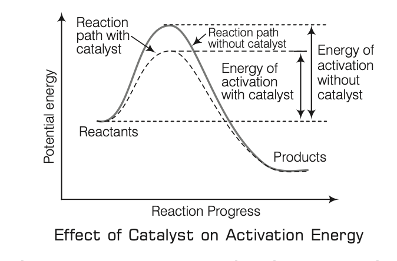
- Definition:
- Substances (catalysts) alter reaction rate without being consumed chemically or quantitatively (Berzelius, 1835).
- Mechanism:
- Provides alternative path with lower activation energy.
- Properties:
- Catalyzes spontaneous reactions, not non-spontaneous ones.
- Does not change equilibrium constant, but accelerates equilibrium attainment by catalyzing forward and backward reactions equally.
- Promoters and Poisons:
- Promoters:
- Enhance catalyst activity (e.g., molybdenum for iron in Haber’s process).
- Poisons:
- Decrease catalyst activity (e.g., carbon for silica-alumina in petroleum cracking).
- Types of Catalysis:
- Homogeneous:
- Reactants and catalyst in same phase (e.g., \( 2SO_2(g) + O_2(g) \xrightarrow{\text{NO}(g)} 2SO_3(g) \)).
- Heterogeneous:
- Reactants and catalyst in different phases (e.g., \( 2SO_2(g) + O_2(g) \xrightarrow{\text{Pt}(s)} 2SO_3(g) \)).
- Types of Catalysts:
- Positive:
- Lowers activation energy, increases rate.
- Negative:
- Increases activation energy, decreases rate.
- Induced:
- Product of one reaction catalyzes another.
- Auto:
- Product catalyzes its own reaction.
- Uses of Catalysts:
-
| Catalyst | Uses |
|---|
| Platinised asbestos | Nitric acid production (Ostwald’s process) |
| Raney nickel | Hydrogenation of functional groups |
| Vanadium pentoxide (\( V_2O_5 \)) | Sulphuric acid production (Contact process) |
| Finely divided iron | Ammonia production (Haber’s process) |
| Iron | Hydrocarbon production (Fischer-Tropsch process) |
| Pt-Rh gauze | \( HNO_3 \) production from ammonia oxidation |
| Oxides of nitrogen | Sulphuric acid production (Lead Chamber process) |
| Hot alumina | Ether production from alcohol |
| Cupric chloride | Chlorine production (Deacon’s process) |
- Order of a Reaction:
- Sum of powers of concentration terms of reactants determining the rate experimentally.
- Can be 0, 1, 2, 3, or fractional; zero order means rate is independent of reactant concentration.
- Molecularity of a Reaction:
- Number of reacting species (atoms, ions, molecules) colliding simultaneously in an elementary reaction.
- Examples:
- Unimolecular:
- \( NH_4NO_2 \to N_2 + 2H_2O \) (1 species).
- Bimolecular:
- \( 2HI \to H_2 + I_2 \) (2 species).
- Trimolecular:
- \( 2NO + O_2 \to 2NO_2 \) (3 species, \( 2+1=3 \)).
- Notes:
- Overall rate controlled by slowest step (rate-determining step).
- Order can be zero or fractional; molecularity cannot.
- Molecularity of slowest step equals overall reaction order.
- Pseudo first-order reactions (e.g., inversion of cane sugar, ester hydrolysis) have multiple reactants but rate depends on one reactant’s concentration.
- Chemical Equilibrium
-
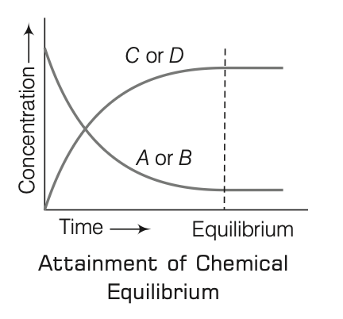
- Definition:
- For a reversible reaction \( A + B \leftrightarrow C + D \), equilibrium occurs when forward and reverse reaction rates are equal, and concentrations of reactants and products are constant.
- Dynamic equilibrium:
- Reactions continue at equal rates.
- Attainment:
- Forward reaction rate decreases, reverse rate increases until equal.
- Law of Chemical Equilibrium and Equilibrium Constant:
- Proposed by CM Guldberg and Peter Waage (1864, law of mass action).
- Rate of reaction proportional to active mass (concentration) of reactants.
- For reaction \( aA + bB \leftrightarrow cC + dD \):
- Forward rate:
- \( r_f = k_f [A]^a [B]^b \).
- Backward rate:
- \( r_b = k_b [C]^c [D]^d \).
- At equilibrium:
- \( r_f = r_b \), so \( k_f [A]^a [B]^b = k_b [C]^c [D]^d \).
- Equilibrium constant:
- \( K_c = \frac{k_f}{k_b} = \frac{[C]^c [D]^d}{[A]^a [B]^b} \).
- \( K_c \):
- Constant at fixed temperature, changes with temperature.
- Types of Equilibria:
- Homogeneous:
- All reactants and products in same phase.
- Examples:
- \( CH_3COOC_2H_5(aq) + H_2O(l) \leftrightarrow CH_3COOH(aq) + C_2H_5OH(aq) \).
- \( N_2(g) + 3H_2(g) \leftrightarrow 2NH_3(g) \).
- Heterogeneous:
- Reactants and products in different phases.
- Examples:
- \( H_2O(l) \leftrightarrow H_2O(g) \).
- \( CaCO_3(s) \xrightarrow{\Delta} CaO(s) + CO_2(g) \).
- Le-Chatelier’s Principle:
- System adjusts to counteract changes in equilibrium conditions.
- Effects:
- Increasing reactant concentration or removing product shifts equilibrium forward.
- Adding product or removing reactant shifts equilibrium backward.
- Temperature increase favors endothermic direction (forward for heat-absorbing, backward for heat-releasing).
- Pressure increase favors direction with lower pressure (fewer gas moles).
- Electrochemistry
- Definition
- Study of electricity production from spontaneous chemical reactions and use of electrical energy for non-spontaneous chemical transformations.
- Used to produce metals, sodium hydroxide, chlorine, fluorine, and other chemicals.
- Electrolysis
- Definition
- From ‘electro’ (electrical energy) and ‘lysis’ (dissociation); decomposition of a molten or aqueous substance by electric current.
- Non-spontaneous chemical reaction driven by electrical energy.
- Example:
- William Nicholson demonstrated electrolysis of water.
- Components Required
- Electrolyte
- Compound conducting electricity in molten or aqueous state (e.g., acids, bases, salts).
- Types:
- Strong Electrolytes:
- Completely dissociate (e.g., \( NaCl, KCl, CaCl_2, MgSO_4 \)).
- Weak Electrolytes:
- Partially dissociate (e.g., \( CH_3COOH \)).
- Non-electrolytes:
- Poor conductors, do not dissociate (e.g., urea, glucose, sugar).
- Electric Current
- Flow of electrons in a conductor, facilitating ion transfer to respective terminals.
- Electrode
- Solid conductor for electric current entry/exit in electrolyte, part of the circuit.
- Arrhenius Theory of Electrolytic Dissociation (1894)
- Postulates:
- Electrolytes dissociate into cations (positive) and anions (negative) in water (ionisation).
- Weak electrolytes partially dissociate, forming an ionic equilibrium with unionised molecules (e.g., \( CH_3COOH \leftrightarrow CH_3COO^- + H^+ \)).
- Degree of Dissociation: \( \frac{\text{Number of ionised molecules}}{\text{Total number of molecules}} \).
- Electrolysis occurs only at electrodes.
- Conductivity depends on the number of ions in solution.
- Faraday’s Laws of Electrolysis (1833-34)
- First Law
- Amount of chemical reaction at an electrode is proportional to the quantity of electricity passed: \( m = ZQ = Zit \). Where:
- \( m \): mass deposited (g), \( Z \): electrochemical equivalent, \( Q \): charge (Coulombs), \( i \): current (A), \( t \): time (s).
- Electrochemical Equivalent (\( Z \)): Mass deposited when 1 A is passed for 1 s (1 Coulomb).
- Second Law
- Masses of substances liberated by the same electricity quantity are proportional to their chemical equivalent weights (\( \text{Atomic mass} \div \text{Number of electrons to reduce cation} \)): \( \frac{W_1}{E_1} = \frac{W_2}{E_2} = \frac{W_3}{E_3} \), or \( Z \propto E \). Where:
- \( W \): mass deposited, \( E \): chemical equivalent weight.
- Faraday’s Constant
- 1 Faraday = charge to deposit one equivalent weight, approximately \( 96487 \, \text{C mol}^{-1} \) (often rounded to \( 96500 \, \text{C mol}^{-1} \)).
- Charge on 1 mole of electrons.
- Products of Electrolysis
- Depend on:
- Material electrolysed.
- Electrode type.
- Oxidising/reducing species and their standard electrode potentials.
- Examples:
- Molten \( NaCl \):
- Sodium metal and \( Cl_2 \) gas.
- Aqueous \( NaCl \):
- \( NaOH, Cl_2, H_2 \).
- Aqueous \( CuSO_4 \) with copper electrodes:
- Copper at cathode.
- Electrode Potential
- Potential difference between electrode and electrolyte.
- Standard Electrode Potential:
- At unit concentration of all species in a half-cell.
- Applications of Electrolysis
- Electrorefining of Metals
- Produces pure metals (e.g., 99.9% pure copper) using impure metal as anode, pure metal strip as cathode, and metal salt solution as electrolyte.
- Electroplating
- Deposits desired metal on another material for appearance, corrosion resistance, or scratch protection (e.g., chromium on car parts, gold on silver/copper/nickel jewellery, tin on iron for cans).
- Electrotyping
- Used in printing for blocks/graphics; copper coated on printing paper for high-quality prints.
- Electrometallurgy
- Extracts metals like calcium, aluminium, magnesium from their compounds.
- Manufacturing of Compounds
- Produces chloroform, ethane, acetylene, drugs via electrolysis.
- Evaluation of Equivalent Weight
- Calculated using \( w \propto E \).
- Electrolytic Capacitor
- Aluminium electrodes with boric acid, glycerine, and aqueous ammonia electrolyte; aluminium hydroxide layer on anode acts as dielectric.
- Electrolytic Cell
-
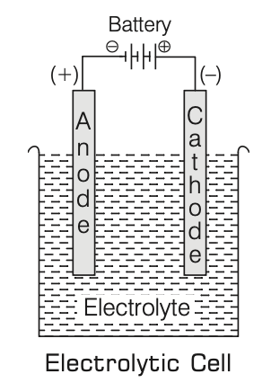
- Container for electrolysis with two electrodes:
- Anode:
- Connected to positive terminal, where oxidation (electron loss) occurs.
- Cathode:
- Connected to negative terminal, where reduction (electron gain) occurs.
- Electrodes dipped in electrolytic solution.
- Galvanic (Voltaic) Cell
- Definition
- Converts chemical energy from spontaneous redox reactions into electrical energy.
- Example:
- Daniell cell.
- Daniell Cell
- Anode:
- Zinc rod in \( ZnSO_4 \) solution.
- Cathode:
- Copper rod in \( CuSO_4 \) solution.
- Operation:
- Zinc loses mass (oxidises), copper gains mass (reduces) when connected by wire, producing current.
- Electrochemical Series
- Definition
- Arrangement of elements by increasing or decreasing electrode potentials, with hydrogen at zero.
- Series:
- \( Li, K, Ba, Ca, Na, Mg, Al, Zn, Cr, Fe, Co, Cd, Ni, Sn, H_2, Cu, I_2, Hg, Ag, Pd, Br_2, Cl_2, Au, F_2 \).
- Characteristics
- Lower reduction potential indicates greater reducing power.
- Metals above hydrogen displace metals below from salt solutions (higher metals more active).
- Metals above hydrogen displace \( H_2 \) from \( H^+ \)-containing solutions.
- Higher negative electrode potential increases tendency to form ions.
- Allows comparison of oxidising/reducing behaviour.
- Batteries
- Definition
- Galvanic cells (single or multiple in series) converting chemical energy to electrical energy via redox reactions.
- Stored chemical energy transforms slowly into electrical energy in a circuit.
- Types
- Primary Batteries
- Non-rechargeable, reaction occurs once, battery becomes dead.
- Examples:
- Dry Cell (Leclanche Cell)
- Used in transistors, clocks.
- Anode:
- Zinc container.
- Cathode:
- Carbon (graphite) rod with \( MnO_2 \) and carbon powder.
- Electrolyte:
- Moist paste of \( NH_4Cl \) and \( ZnCl_2 \).
- Reactions:
- Anode:
- \( Zn(s) \to Zn^{2+} + 2e^- \).
- Cathode:
- \( MnO_2 + NH_4^+ + e^- \to MnO(OH) + NH_3 \).
- \( NH_3 \) forms complex with \( Zn^{2+} \); \( MnO_2 \) acts as depolariser.
- Potential:
- ~1.5 V.
- Mercury Cell
- Used in low-current devices (e.g., hearing aids, watches).
- Anode:
- Zinc-mercury amalgam.
- Cathode:
- \( HgO \) and carbon paste.
- Electrolyte:
- \( KOH \) and \( ZnO \) paste.
- Reactions:
- Anode:
- \( Zn(Hg) + 2OH^- \to ZnO(s) + H_2O + 2e^- \).
- Cathode:
- \( HgO + H_2O + 2e^- \to Hg(l) + 2OH^- \).
- Overall:
- \( Zn(Hg) + HgO(s) \to ZnO(s) + Hg(l) \).
- Potential:
- 1.35 V, constant during life.
- Secondary Batteries
- Rechargeable by passing current in opposite direction.
- Examples:
- Lead Storage Battery
- Used in automobiles, inverters.
- Anode:
- Lead.
- Cathode:
- Lead grid with \( PbO_2 \).
- Electrolyte:
- 38% \( H_2SO_4 \).
- Reactions:
- Anode:
- \( Pb(s) + SO_4^{2-}(aq) \to PbSO_4(s) + 2e^- \).
- Cathode:
- \( PbO_2(s) + SO_4^{2-}(aq) + 4H^+(aq) + 2e^- \to PbSO_4(s) + 2H_2O(l) \).
- Overall (discharge):
- \( Pb(s) + PbO_2(s) + 2H_2SO_4(aq) \to 2PbSO_4(s) + 2H_2O(l) \).
- Recharge:
- Reverses reaction, regenerating \( Pb \) and \( PbO_2 \).
- Six cells, ~2 V each, total ~12 V.
- Capacity in ampere-hours; emf: 2.2 V (charged), 1.8 V (discharged).
- Sulphating:
- Discharged state with \( PbSO_4 \) accumulation.
- Ni-Cd Cell
- Anode:
- Cadmium.
- Cathode:
- Metal grid with \( NiO_2 \).
- Electrolyte:
- \( KOH \).
- Longer life than lead storage, but more expensive.
- Used in torchlights, electric shavers.
- Ni-MH Battery
- 25% longer rechargeable life, less hazardous than Ni-Cd.
- Notes:
- Batteries self-discharge faster at higher temperatures, requiring frequent charging in summer.
- Lithium-Ion Battery (LIB)
- Operation:
- Lithium ions move from negative to positive electrode during discharge, reverse during charging.
- Electrodes:
- Intercalated lithium compounds (e.g., Lithium Manganese Oxide, Lithium Cobalt Oxide).
- Applications:
- Portable Devices:
- Mobile phones, laptops, tablets, cameras, e-cigarettes, game consoles, torches.
- Power Tools:
- Cordless drills, sanders, saws, garden equipment.
- Electric Vehicles:
- Cars, pedelecs, hybrids, wheelchairs, radio-controlled models, Mars Curiosity rover.
- Telecommunications:
- Backup power for network equipment.
- Hydrogen-Oxygen Fuel Cell
- Runs continuously with fuel supply, ~70% efficiency (vs. 40% for thermal plants).
- Pollution-free, used in Apollo space programme.
- Cell Efficiency
- Definition:
- Ratio of beneficial work to total work done.
- Formula:
- \( \eta = \frac{V}{E} \). Where:
- \( E \): emf of cell, \( V \): potential difference at terminals in a closed circuit.
- Classification of Elements
- Introduction
- Elements classified based on similar properties.
- 118 known elements:
- 98 naturally occurring, others artificially synthesized.
- Classification aims to make study of elements convenient, systematic, organized.
- Periodic Classification
- Definition
- Arrangement where elements with similar properties reappear at regular intervals.
- Historical Contributions
- Dobereiner’s Triads:
- Grouped elements in threes; middle element’s atomic weight and properties are averages of the other two.
- Newlands’ Law of Octaves:
- Elements arranged by increasing atomic weight; every eighth element resembles the first, like musical notes.
- Limitations:
- Unable to arrange all known elements effectively.
- Mendeleev’s Periodic Table
- Basis
- Mendeleev studied hydrides and oxides, leading to Mendeleev’s Periodic Law: Properties of elements are a periodic function of their atomic masses.
- Elements arranged by increasing atomic weight, with similar properties recurring at intervals.
- Structure
- 8 groups (vertical columns), 7 periods (horizontal rows).
- Elements with similar properties grouped by atomic weight.
- Characteristics
- Reversed order of some pairs (e.g., cobalt (58.9) before nickel (58.7)) for chemical property alignment.
- Left gaps for undiscovered elements (e.g., Eka-boron, Eka-aluminium, Eka-silicon), later matched to scandium, gallium, germanium.
- Advantages
- Simplified element study.
- Predicted properties of new elements.
- Predicted valency.
- Calculated actual atomic weights.
- Limitations
- No fixed position for hydrogen.
- Isotopes challenged periodic law.
- Irregular atomic mass increase made predicting new elements difficult.
- Misplaced elements: Similar properties in different groups (e.g., \( Cu, Hg \); \( Ag, Tl \); \( Au, Pt \)), dissimilar properties in same group (e.g., group 8 triads, group 1 alkali metals with \( Cu, Ag, Au \)).
- Note: Only 63 elements known during Mendeleev’s time; inert gases undiscovered.
- No separate placement for metals and non-metals.
- Modern Periodic Table
- Basis
- Proposed by Moseley (1913) based on atomic number as the fundamental property.
- Modern Periodic Law: Physical and chemical properties are periodic functions of atomic numbers.
- Removed most drawbacks of Mendeleev’s table.
- Long Form of Periodic Table
- Based on electronic configuration, widely used.
- Characteristics
- 7 periods (horizontal rows), 18 groups (vertical columns).
- Elements with similar outer electronic configurations in groups, sharing similar chemical properties.
- Period number corresponds to highest principal quantum number (\( n \)) of valence shell.
- Period element counts: 1st (2), 2nd-3rd (8 each), 4th-5th (18 each), 6th (32), 7th (incomplete).
- Lanthanoids and actinoids (14 elements each) placed in separate panels at bottom.
- Modern Periodic Table Structure
-
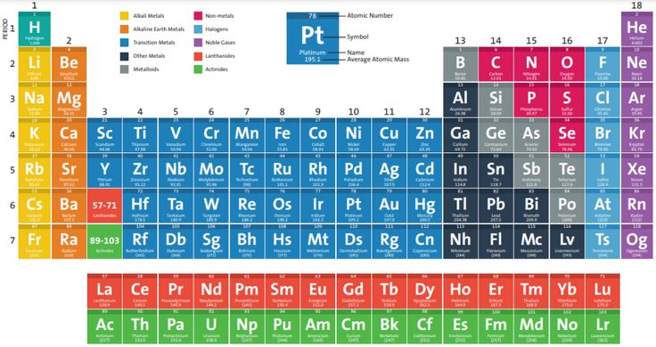
- Characteristics of Periods
- Valence electrons increase from 1 to 8 across a period (left to right).
- Elements have consecutive atomic numbers.
- Valency (w.r.t. hydrogen) increases from 1 to 4, then decreases to 0.
- Properties decreasing left to right:
- Atomic size, electropositive nature, metallic nature, reducing nature, basic nature of oxides.
- Properties increasing left to right:
- Electronegative nature, non-metallic nature, acidic nature of oxides, ionisation potential, electron affinity.
- Characteristics of Groups
- Same number of valence electrons, leading to similar chemical properties.
- Properties increasing top to bottom:
- Atomic size, electropositive nature, metallic nature, reducing nature, basic nature of oxides.
- Properties decreasing top to bottom:
- Electronegative nature, ionisation potential, electron affinity, non-metallic nature, acidic nature of oxides.
- Reactivity:
- Metals increase, non-metals decrease down a group.
- Prediction of Group and Period
- Period:
- Determined by number of electron shells.
- Group:
- s-block:
- Group number = valence shell electrons.
- p-block:
- Group number = valence shell electrons + 10.
- d-block:
- Group number = electrons in \( ns \)-shell + \( (n-1)d \)-shell.
- Types of Elements
- s-Block Elements
- Valence electron(s) in s-orbital.
- Groups 1 (IA, alkali metals) and 2 (IIA, alkaline earth metals).
- Electronic configuration:
- \( [\text{noble gas}] ns^1 \) (alkali metals), \( [\text{noble gas}] ns^2 \) (alkaline earth metals).
- Soft metals, electropositive, form basic oxides.
- p-Block Elements
- Valence electron(s) in p-orbital.
- Electronic configuration:
- \( ns^2 np^{1-6} \).
- Groups 13–18 (IIIA–VIIIA).
- Includes metals, non-metals, metalloids.
- Inert pair effect:
- Heavier elements (e.g., \( Pb \): +2 more stable than +4; \( Tl \): +1 more stable than +3).
- Ununseptium (element 117, group 17, below halogens):
- Synthesized in Dubna (Russia, 2010) and GSI (Germany, 2014); temporary name.
- d-Block Elements
- Valence electron(s) in d-orbital.
- Electronic configuration:
- \( (n-1)d^{1-10} ns^{1-2} \).
- Groups 3–12; transition elements (except \( Zn, Cd, Hg \)).
- Series:
- 3d (\( Sc \) to \( Zn \)), 4d (\( Y \) to \( Cd \)), 5d (\( La \) to \( Hg \), excluding \( Ce \) to \( Lu \)).
- f-Block Elements
- Lanthanoids (14 elements after \( La \)) and actinoids (14 elements after \( Ac \)).
- Lanthanoid configuration:
- \( 6s^2 5d^{0-2} 4f^{1-14} \).
- Actinoid configurations irregular.
- Inner-transition elements.
- Transuranic elements (beyond \( U \), atomic number 92):
- Synthetic, radioactive (e.g., \( Np, Pu, Am, Cm, Bk, Cf, Es, Md \)).
- Notes
- s- and p-block:
- Representative elements.
- \( Hg, Zn, Cd \):
- d-block, not transition elements.
- All s-, d-, f-block elements are metals except hydrogen.
- Highest and Lowest Properties of Elements
-
| Property | Element |
|---|
| Lightest element | Hydrogen |
| Lightest non-metal | Helium |
| Heaviest element | Osmium |
| Lightest metal | Lithium |
| Liquid metal | Mercury |
| Liquid non-metal | Bromine |
| Best conductor (metal) | Silver |
| Second best conductor | Copper |
| Best non-metallic conductor | Graphite |
| Highest ionisation potential | Helium |
| Least ionisation potential | Caesium |
| Highest melting point (metal) | Tungsten |
| Highest electron affinity | Chlorine |
| Most electronegative | Fluorine |
| Strongest oxidant | Fluorine |
| Strongest reductant | Lithium |
| Monoatomic gases | Inert/noble gases (group 0) |
| Most ductile/malleable metal | Gold |
| Group of gaseous elements | Inert/noble gases |
| Element stored in kerosene | Sodium |
| Element in bones/teeth | Calcium |
| Most reactive metal | Caesium |
| Most reactive non-metal | Fluorine |
| Most poisonous metal | Plutonium |
- Trends in Modern Periodic Table (Periodic Properties)
- Definition
- Properties repeating at regular intervals.
- Valency
- Increases from 1 to 7 w.r.t. hydrogen across a period, but w.r.t. oxygen, increases from 1 to 4, then decreases to 0.
- Examples:
- Alkali metals (\( Na, K \)): 1; alkaline earth metals (\( Mg, Ca \)): 2; aluminium: 3; nitrogen: -3 to +5.
- Atomic Size
- Increases down a group (new shells added).
- Decreases across a period (increased nuclear charge pulls electrons closer).
- Alkali metals largest, halogens smallest in a period; noble gases larger than halogens.
- Ionisation Energy
- Energy to remove an electron from a gaseous atom.
- Increases across a period due to higher nuclear charge.
- Exceptions:
- Group 2 (\( Be, Mg, Ca, Sr \), \( ns^2 \)) > Group 3 (\( B, Al, Ga, In \), \( ns^2 np^1 \)); Group 15 (\( N, P, As \), \( ns^2 np^3 \)) > Group 16 (\( O, S, Se \), \( ns^2 np^4 \)) due to stable configurations.
- Decreases down a group (larger atomic size).
- Electron Gain Enthalpy (\( \Delta_e H_g \))
- Enthalpy change when an electron is added to form an anion; energy released is electron affinity (EA).
- EA increases across a period; zero or positive for groups 2, 15, 0.
- Decreases down a group; highest for chlorine.
- Electronegativity
- Tendency to attract shared electrons in a molecule.
- Increases across a period, decreases down a group; highest for fluorine.
- Metallic Character
- Tendency to lose electrons, forming cations.
- Decreases across a period, increases down a group; metals on left side of table.
- Non-Metallic Character
- Tendency to gain electrons, forming anions.
- Increases across a period, decreases down a group.
- Density
- Mass per unit volume.
- Increases down a group and across a period; exception: gold > mercury > steel.
- Hydrogen and Its Compounds
- Hydrogen
- Introduction
- Symbol:
- \( H \), atomic number: 1, mass number: 1.
- Discovered by Henry Cavendish (1766), named by Antoine Lavoisier.
- Simplest atomic structure:
- 1 proton, 1 electron, no neutron in atomic form.
- Exists as diatomic \( H_2 \) (dihydrogen) in elemental form.
- Forms more compounds than any other element.
- Position in Periodic Table
- First element, electronic configuration: \( 1s^1 \).
- Resembles alkali metals and halogens in some properties, placed separately.
- Occurrence
- Most abundant element in universe (70% of total mass).
- Principal element in solar atmosphere, Jupiter, Saturn, and stars.
- Less abundant in Earth’s atmosphere due to light nature.
- Ninth most abundant element in Earth’s crust.
- Isotopes
- Protium (\( ^1_1H \)):
- No neutrons, predominant form.
- Deuterium (\( ^2_1H \) or \( D \)):
- 1 neutron, prepared by Urey, Brickwedde, Murphy (1931), used in organic reaction mechanisms and nuclear reactions.
- Tritium (\( ^3_1H \) or \( T \)):
- 2 neutrons, radioactive (half-life: 12.4 years), beta emitter.
- Special Forms
- Nascent Hydrogen:
- Generated in-situ, highly reactive, strong reducing agent.
- Atomic Hydrogen:
- Produced at high temperature by decomposing molecular hydrogen, stronger reducing agent than nascent hydrogen.
- Ordinary Hydrogen:
- Mixture of ortho (same nuclear spin direction) and para (opposite nuclear spin direction) forms.
- Adsorbed Hydrogen:
- \( H_2 \) adsorbed on \( Pt, Pd, Ni \), released at higher temperatures, process called occlusion.
- Preparation
- Laboratory:
- Granulated zinc with dilute \( HCl \).
- Commercial:
- Electrolysis of acidified water using platinum electrodes.
- Steam on hydrocarbons or coke at high temperature with catalyst.
- Other Methods:
- Water vapours over red-hot iron, treating hydrolith or sodium with water.
- Pure \( H_2 \):
- From \( Mg \) with dilute \( H_2SO_4 \) or \( NaH \) with water.
- Production Sources:
- Petrochemicals (77%), coal (18%), electrolysis (4%), other (1%).
- Properties
- Physical
- Colourless, odourless, tasteless, combustible gas.
- Lighter than air, insoluble in water.
- Melting point:
- 13.96 K, boiling point: 20.39 K.
- Density:
- \( 0.09 \, \text{g L}^{-1} \).
- Chemical
- Inert at room temperature due to high \( H-H \) bond energy.
- With halogens:
- \( H_2(g) + X_2(g) \xrightarrow{\text{high temp}} 2HX(g) \) (\( X = F, Cl, Br, I \)).
- With oxygen:
- \( 2H_2(g) + O_2(g) \xrightarrow{\text{catalyst/heating}} 2H_2O(l) + \text{Heat} \) (exothermic).
- With nitrogen (Haber’s process):
- \( 3H_2(g) + N_2(g) \xrightarrow{\text{Fe, Mo, 673 K, 200 atm}} 2NH_3(g) + \text{Heat} \).
- With metals:
- \( H_2(g) + 2M(g) \to 2MH(s) \) (\( M = \text{alkali metal} \)).
- With organic compounds:
- Hydrogenation with catalysts yields useful products.
- Hydration:
- Water chemically combines with elements/minerals.
- Commercial Importance of Hydrogenation
- Vegetable oils (unsaturated fats) with nickel catalyst form edible fats (vanaspati ghee, saturated fats).
- Hydroformylation of olefins yields aldehydes, reduced to alcohols.
- Uses
- Ammonia synthesis (Haber’s process) for nitric acid and nitrogenous fertilizers.
- Hydrogenation of vegetable oils (e.g., soybean, cottonseed) for vanaspati fat.
- Manufacturing methanol and bulk organic chemicals.
- Producing metal hydrides, hydrogen chloride.
- Reducing heavy metal oxides to metals in metallurgy.
- Atomic and oxyhydrogen torches for cutting/welding.
- Rocket fuel in space research.
- Fuel cells for electricity generation (fuel of the future).
- Balloon filling (85% \( He \), 15% \( H_2 \)), now prohibited due to flammability.
- Notes
- \( H_2, He, Li \):
- Formed in Big Bang.
- Solar energy from \( H_2 \) to \( He \) conversion.
- Anti-hydrogen:
- Anti-matter, reacts explosively with \( O, Cl, F \).
- \( H_2 \):
- Too light for Earth’s gravity, no free hydrogen on Earth.
- Only element without neutrons (protium).
- Water (\( H_2O \))
- Introduction
- Major component of living organisms (human body: ~65%, some plants: ~95%).
- 97% of Earth’s water in oceans, rest in pure form; rainwater purest.
- Properties
- Colourless, tasteless liquid; neutral (\( pH = 7 \)).
- Poor conductor, conductivity increased by adding strong electrolytes.
- Maximum density, minimum volume at 4°C.
- Solidifies to ice at 0°C.
- High freezing point, boiling point, heat of vaporization, heat of fusion due to H-bonding, compared to \( H_2S, H_2Se \).
- High specific heat, thermal conductivity, surface tension, dipole moment, dielectric constant; used as coolant in engines.
- Excellent solvent due to high dielectric constant, transports ions/molecules for metabolism.
- Dissolves covalent compounds (e.g., alcohols, carbohydrates) via H-bonding.
- Structure
- Gas phase:
- Bent molecule, bond angle 104.5°, \( O-H \) bond length 95.7 pm.
- Ice:
- Oxygen tetrahedrally surrounded by four oxygen atoms via H-bonding, open structure with holes, lower density than liquid water.
- Hard Water
- Contains calcium, magnesium, iron salts (hydrogen carbonates, chlorides, sulphates).
- Does not lather with soap, forms scum/precipitate.
- Unsuitable for laundry, harmful for boilers due to scale deposition.
- Notes:
- Boiled water containers develop white carbonate layer (\( Ca, Mg \)).
- Detergents unaffected by hard/soft water.
- Degree of hardness:
- Parts of \( CaCO_3 \) or equivalent per \( 10^6 \) parts water by mass.
- Softening:
- Removal of \( Ca, Mg, Fe \) salts.
- Gamma-emitting isotopes in drinking water detected by scintillation counter.
- Soft Water
- Free from soluble \( Ca, Mg \) salts, lathers with soap.
- Example:
- Rainwater (nearly pure).
- Temporary Hardness
- Caused by magnesium and calcium hydrogen carbonates.
- Removal:
- Boiling:
- Converts soluble \( Mg(HCO_3)_2 \) to insoluble \( Mg(OH)_2 \), \( Ca(HCO_3)_2 \) to \( CaCO_3 \), filtered out.
- Clark’s Method:
- Lime addition precipitates \( CaCO_3, Mg(OH)_2 \), filtered off.
- Permanent Hardness
- Caused by soluble \( Ca, Mg \) chlorides and sulphates.
- Removal:
- Washing Soda (\( Na_2CO_3 \)):
- Forms insoluble carbonates with \( Ca, Mg \) salts.
- Calgon’s Method:
- Sodium hexametaphosphate (\( Na_6P_6O_{18} \)) forms complex anions, keeping \( Ca^{2+}, Mg^{2+} \) in solution.
- Ion Exchange (Zeolite/Permutit):
- Hydrated sodium aluminium silicate exchanges ions to soften water.
- Synthetic Resins:
- More efficient cation exchangers than zeolite.
- Blue Ice
- Purest, virus-free ice, ~2500 years old, found in Greenland, used in whisky production.
- Poly Water
- Prepared in hair-shaped capillaries, chemically similar to ordinary water.
- Freezing point: -40°C, boiling point: 150°C.
- Considered highly dangerous.
- Water Purification
- Potassium permanganate, bleaching powder (\( Cl_2 \)), potash alum used for sterilization.
- Heavy Water (\( D_2O \))
- Discovered by Urey and Washburn (1932), oxide of deuterium.
- Prepared by exhaustive electrolysis of water or as fertilizer industry by-product.
- Occurs 1 part per 5000 parts ordinary water.
- Uses:
- Moderator in nuclear reactors, exchange reactions for reaction mechanisms, preparation of deuterium compounds (e.g., \( CD_4, D_2SO_4 \)).
- Higher density than ordinary water.
- Hydrogen Peroxide (\( H_2O_2 \))
- Discovered by Thenard (1818).
- Properties:
- Nearly colourless (pale blue), odourless liquid, miscible with water, exists as liquid due to extensive H-bonding.
- Preparation:
- Acidifying barium peroxide with \( H_2SO_4 \), or UV exposure on oxygen with water vapour.
- Acts as oxidizing and reducing agent.
- Uses
- Hair bleach, mild disinfectant (oxidizing property).
- Antiseptic (sold as perhydrol).
- Manufacture of sodium perborate, percarbonate for high-quality detergents.
- Bleaching agent for textiles, paper pulp, leather, oils, fats.
- Examination of milk, wine.
- Restoring original colour in old oil paintings.
- Synthesis of hydroquinone, tartaric acid, pharmaceuticals (e.g., cephalosporin).
- Environmental chemistry: Pollution control, cyanide oxidation, restoring aerobic conditions in sewage.
- Fuel in rockets, submarines due to oxygen release.
- Metals and Their Compounds
- Introduction
- Metals:
- Elements that lose electrons to form cations, occupying most of the periodic table (s-, d-, f-blocks, except right corner).
- Known metals:
- Initially \( Cu, Ag, Au \); now 90 metals.
- Physical Properties of Metals
- Solid at room temperature (except \( Hg \)).
- Metallic lustre due to free electrons, polishable.
- Generally hard (except \( Na, K, Ca \), which are soft).
- Malleable:
- Can be hammered into thin sheets (\( Au, Ag \) most malleable).
- Ductile:
- Can be drawn into wires (\( Au \): 1 mg forms 200 m wire).
- Good conductors of heat (\( Ag, Cu \) best; \( Pb, Hg \) poor).
- Good conductors of electricity.
- Sonorous.
- High density (except \( Na, K \)).
- High melting points (except \( Ga, Cs \)).
- Chemical Properties of Metals
- Electropositive, form cations by losing electrons, react with non-metals (\( O_2, H_2, Cl_2, SO_4^{2-} \)).
- Reaction with Oxygen
- Form metal oxides:
- \( \text{Metal} + O_2 \to \text{Metal oxide} \).
- Example:
- \( 2Cu + O_2 \to 2CuO \) (black); \( 4Al + 3O_2 \to 2Al_2O_3 \).
- Most oxides basic; \( Al_2O_3, ZnO \) amphoteric (acidic and basic).
- Soluble oxides form alkalis.
- Reaction with Water
- Highly reactive (\( Na, K, Ca, Mg \)):
- Form hydroxides, release \( H_2 \).
- Moderately reactive (\( Al, Fe, Zn \)):
- React with steam to form oxides, \( H_2 \).
- Least reactive (\( Pb, Cu, Ag, Au \)):
- No reaction.
- Reaction with Acids
- Form salts, \( H_2 \) with dilute acids.
- Dilute \( HNO_3 \):
- No \( H_2 \) (oxidized to \( H_2O \), \( HNO_3 \) reduced to \( N_2O, NO, NO_2 \)).
- Exception:
- \( Mg, Mn \) with dilute \( HNO_3 \) produce \( H_2 \).
- Reaction with Metal Salts
- More reactive metals displace less reactive ones:
- \( Fe + CuSO_4(aq) \to FeSO_4(aq) + Cu \).
- Notes
- \( Li \):
- Lightest metal, strong reducing agent.
- \( Na, K \):
- React vigorously with \( O_2 \), stored in kerosene.
- \( Mg, Al, Zn, Pb \):
- Oxide layer prevents further oxidation.
- \( Fe \):
- Filings burn in flame, not bulk.
- \( Ag, Au \):
- No reaction with \( O_2 \).
- \( Be, Mg \):
- High ionisation energy, no flame colour.
- Reactivity Series
- \( K > Na > Ca > Mg > Al > Zn > Fe > Pb > H > Cu > Hg > Ag > Au \).
- Flame Colouration
- Alkali and alkaline earth metals (except \( Be, Mg \)) impart colours to flames, used in fireworks.
-
| Metal | Colour |
|---|
| Sodium | Golden yellow |
| Potassium | Violet |
| Rubidium | Violet |
| Lithium | Crimson red |
| Calcium | Red or brick red |
| Strontium | Crimson red |
| Barium | Apple green or green |
- Sodium and Its Compounds
- Sodium (\( Na \))
- Atomic number:
- 11, mass: 23, group 1, 3rd period, s-block.
- Electronic configuration:
- \( 1s^2 2s^2 2p^6 3s^1 \).
- Earth’s crust:
- 2.27% by weight, always in combined form.
- Ores:
- Chile saltpetre (\( NaNO_3 \)), Glauber’s salt (\( Na_2SO_4 \cdot 10H_2O \)), borax (\( Na_2B_4O_7 \cdot 10H_2O \)), brine (\( NaCl \)).
- Extraction:
- Electrolysis of molten \( NaOH \) (Castner’s process) or \( NaCl \) (Down’s process).
- Properties
- Light, soft, silvery white, cuttable with knife.
- Highly reactive:
- Forms \( Na_2O \) with air, \( NaOH + H_2 \) with water, stored in kerosene.
- Soluble in benzene.
- Forms sodamide with \( NH_3 \), sodium alkoxide with alcohol, salts with acids, releases \( H_2 \).
- Uses
- Reducing agent, alloying metal, anti-scaling agent.
- Coolant in nuclear reactors (liquid form).
- Making tetraethyl lead (\( TEL \)) from \( Na-Pb \) alloy.
- Compounds
- Sodium Chloride (\( NaCl \))
- Common/table salt, used in food, anti-icing, preserving pickles, meat, fish.
- Raw material for \( NaOH \), washing soda, bleaching powder.
- Notes:
- Not hygroscopic unless impure (\( MgCl_2, CaCl_2 \)); 500 mg/day needed for blood pressure, pH regulation; depletion during dehydration.
- Sodium Hydroxide (\( NaOH \))
- Caustic soda, used in soaps, detergents, salts, pH regulation, petroleum purification, sodium extraction.
- Note:
- Absorbs \( CO_2 \) to form \( Na_2CO_3 \), becomes liquid, then white powder.
- Sodium Carbonate (\( Na_2CO_3 \))
- Washing soda (\( Na_2CO_3 \cdot 10H_2O \)), soda ash (anhydrous), alkaline solution.
- Uses:
- Detergent, removes permanent water hardness, cleans grease/oil/wine stains, used in borax, soap, caustic soda, paper, paints, water glass, petroleum, textiles.
- Note:
- Effloresces to white powder.
- Sodium Bicarbonate (\( NaHCO_3 \))
- Baking soda, used in soda-acid fire extinguishers, baking (with tartaric acid as baking powder, releases \( CO_2 \)).
- Glauber’s Salt (\( Na_2SO_4 \cdot 10H_2O \))
- Used in pulp-paper, detergents, drugs, water glass, drying agent, purgative, sodium sulphide production.
- Sodium Thiosulphate (\( Na_2S_2O_3 \cdot 5H_2O \))
- Hypo, prepared from \( Na_2SO_4 + S + NaOH \).
- Uses:
- Photography (fixes AgBr), cyanide antidote, removes chlorine from tap water.
- Microcosmic Salt (\( Na(NH_4)HPO_4 \cdot 4H_2O \))
- Sodium ammonium hydrogen phosphate, found in urine.
- Forms sodium metaphosphate, \( NH_3 \) on heating.
- Used in salt analysis (microcosmic bead test).
- Magnesium and Its Compounds
- Magnesium (\( Mg \))
- Atomic number:
- 12, mass: 24, group 2, 3rd period, s-block.
- Electronic configuration:
- \( 1s^2 2s^2 2p^6 3s^2 \).
- High reactivity, occurs as chlorides, carbonates, sulphates (e.g., magnesite \( MgCO_3 \), dolomite \( MgCO_3 \cdot CaCO_3 \), epsomite \( MgSO_4 \cdot 7H_2O \), carnallite \( MgCl_2 \cdot KCl \cdot 6H_2O \)).
- Extraction:
- Electrolytic reduction of magnesia or anhydrous \( MgCl_2 \).
- Found in chlorophyll (green colour in plants).
- Properties
- White, glazed, malleable, ductile.
- Melting point:
- 650°C, boiling point: 110°C (likely a typo in source, should be ~1100°C).
- Evolves \( H_2 \) with dilute acids, not bases.
- Forms Grignard’s reagent (\( RMgX \)) with alkyl halides in dry ether.
- Stored in nitrogen atmosphere.
- Uses
- Flashlight ribbons, firecrackers, photography.
- Alloys (e.g., electron: 95% \( Mg \), 4.5% \( Zn \), 0.5% \( Cu \)) for aircraft, vehicle frames.
- Compounds
- Magnesium Hydroxide (\( Mg(OH)_2 \))
- Slightly soluble, alkaline, milk of magnesia (suspension).
- Uses:
- Antacid, laxative, neutralizes acidic wastewater, scalp dandruff treatment.
- Magnesium Sulphate (\( MgSO_4 \))
- Epsomite (\( MgSO_4 \cdot 7H_2O \)), deliquescent, efflorescent.
- Uses:
- Fireproof fabrics, ceramics, cement, matchboxes, mordant in dyeing/tanning, purgative.
- Magnesium Carbonate (\( MgCO_3 \))
- Occurs as magnesite, dolomite, soluble in water.
- Uses:
- Antacid, magnesium alva (drug).
- Magnesium Alba (\( 2MgCO_3 \cdot Mg(OH)_2 \cdot 3H_2O \))
- Uses:
- Antacid, dental abrasive (toothpaste), cosmetics.
- Sorel Cement (\( MgCl_2 \cdot 5MgO \cdot nH_2O \))
- Uses:
- Dental fillings, cementing glass/porcelain.
- Calcium and Its Compounds
- Calcium (\( Ca \))
- Atomic number:
- 20, mass: 40, group 2, 4th period, s-block.
- Discovered by Humphry Davy (1808), third most abundant in Earth’s crust.
- Electronic configuration:
- \( 1s^2 2s^2 2p^6 3s^2 3p^6 4s^2 \).
- Ores:
- Marble, chalk, lime (\( CaCO_3 \)), gypsum (\( CaSO_4 \cdot 2H_2O \)), dolomite (\( CaCO_3 \cdot MgCO_3 \)), fluorspar (\( CaF_2 \)), phosphorite (\( Ca_3(PO_4)_2 \)).
- Extraction:
- Electrolysis of fused 85% \( CaCl_2 \), 15% \( CaF_2 \) (lowers melting point).
- Properties
- Soft (harder than \( Pb \)), silvery white.
- Melting point:
- 1115 K, boiling point: 1757 K, density: 1.55.
- Releases \( H_2 \) with acids, water; no reaction with bases.
- Uses
- Dehydrating agent for absolute alcohol.
- Removes air for high vacuum.
- Oxidizer for cast iron, steel, copper.
- Reducing agent for \( Cr, Th \).
- Compounds
- Calcium Oxide (\( CaO \))
- Quick lime, white porous solid, forms \( Ca(OH)_2 \) with water (hissing sound).
- Uses:
- Cement, mortar, bleaching powder, glass, sugar purification, dyes, chemicals.
- Calcium Hydroxide (\( Ca(OH)_2 \))
- Slaked lime, slightly soluble, lime water (solution), milk of lime (suspension).
- Uses:
- Mortar, glass, bleaching powder, whitewash.
- Note:
- Slaking of lime forms \( Ca(OH)_2 \); with soda, forms soda lime.
- Calcium Carbonate (\( CaCO_3 \))
- Limestone, chalk, marble, pearl, insoluble, decomposes at 1200 K to \( CO_2 \).
- Uses:
- Building material (marble), cosmetic filler, high-quality paper.
- Calcium Chloride (\( CaCl_2 \))
- Hygroscopic, deliquescent, soluble in water, alcohol.
- Uses:
- Dehydrating agent (not for alcohol, ammonia due to addition products).
- Bleaching Powder (\( Ca(OCl)Cl \))
- Calcium chlorooxychlorite, chlorine smell.
- Uses:
- Disinfectant, water purifier, germicide, insecticide, bleaching in textiles, paper, jute.
- Gypsum (\( CaSO_4 \cdot 2H_2O \))
- Uses:
- Plaster of Paris, ammonium sulphate fertilizer.
- Plaster of Paris (\( CaSO_4 \cdot \frac{1}{2}H_2O \))
- Calcium sulphate hemihydrate, forms gypsum on hydration (exothermic, sets hard).
- Reaction:
- \( CaSO_4 \cdot \frac{1}{2}H_2O + 1\frac{1}{2}H_2O \to CaSO_4 \cdot 2H_2O \).
- Uses:
- Plastering bones, dentistry, statues, toys, ornamental work.
- Super Phosphate of Lime (\( CaH_4(PO_4)_2 + CaSO_4 \cdot 2H_2O \))
- From phosphorite, bone ash, water-soluble, plant-assimilable.
- Uses:
- Fertilizer to increase crop production.
- Notes
- Nitrolim (\( CaCN_2 \)):
- From \( CaC_2 + N_2 \) at 2000°C.
- Hydrolith (\( CaH_2 \)):
- Supplies \( H_2 \) with water.
- Calcium phosphate (\( Ca_3(PO_4)_2 \)):
- Toothpaste.
- Aluminium and Its Compounds
- Aluminium (\( Al \))
- Atomic number:
- 13, mass: 27, group 13, 3rd period, p-block.
- Electronic configuration:
- \( 1s^2 2s^2 2p^6 3s^2 3p^1 \).
- Third most abundant in Earth’s crust, occurs as bauxite (\( Al_2O_3 \cdot 2H_2O \)), corundum (\( Al_2O_3 \)), feldspar (\( K_2O \cdot Al_2O_3 \cdot 6SiO_2 \)), cryolite (\( Na_3AlF_6 \)).
- Extraction:
- Bauxite concentrated by Baeyer’s/Hall’s process (\( Fe_2O_3 \) impurity) or Serpek’s process (\( SiO_2 \)), electrolysed with cryolite, fluorspar; purified by Hoope’s process.
- Properties
- Silvery white, soft, ductile, melting point: 659.8°C, boiling point: 2200°C.
- Good conductor of heat, electricity, specific gravity: 2.7.
- Releases \( H_2 \) with conc. \( HCl \), dilute \( H_2SO_4 \); \( SO_2 \) with conc. \( H_2SO_4 \).
- Forms aluminate, \( H_2 \) with \( NaOH, KOH \); aluminium nitride with \( N_2 \).
- Uses
- Reducing agent in metallurgy.
- Thin foil for sweets, cigarette packing.
- Silvery paints (\( Al \) powder + linseed oil).
- Alloys for aeroplanes.
- Alloys
-
| Alloy | Composition | Uses |
|---|
| Aluminium bronze | Al (10%), Cu (90%) | Coins, utensils |
| Duralumin | Al (95%), Mg (0.5%), Cu (4%), Mn (0.5%) | Pressure cookers, aircraft |
| Nickel alloy | Al (90%), Ni (6%), Cu (4%) | Aerospace |
| Magnalium | Al (95-96%), CuFe (2-3%), Mg (2%) | Aerospace |
- Compounds
- Aluminium Chloride (\( AlCl_3 \))
- Anhydrous, white, deliquescent, fumes in air.
- Uses:
- Petroleum refining, synthetic polymers/rubbers, catalyst in gasoline production, Friedel-Crafts reaction, hardening agent, antiperspirant.
- Notes
- Aluminium carbide (\( Al_4C_3 \)): Methanide, forms \( CH_4 \) with water.
- Aluminium acetate:
- Red liquor, mordant in dyeing, calico printing.
- Manganese and Its Compounds
- Manganese (\( Mn \))
- Atomic number: 25, mass:
- 55, group 7, 4th period, d-block.
- Electronic configuration:
- \( [Ar] 3d^5 4s^2 \).
- Ultra-pure:
- Silvery white; commercial: Pink tinge.
- Extraction:
- Pyrolusite (\( MnO_2 \)) by carbon or alumino thermic process; pure via electrolysis of \( MnSO_4 \).
- Alloys
- Spiegeleisen (\( Mn, Fe, C \)):
- Steel manufacture.
- Ferromanganese (70-80% \( Mn \)):
- Steel production.
- Compound:
- Potassium Permanganate (\( KMnO_4 \))
- From \( MnO_2 + KOH \), electrolytic oxidation.
- Dark violet, rhombic prismatic crystals, moderately soluble in water (solubility increases with temperature), reddish aqueous solution.
- Isomorphous with \( KClO_4 \), releases \( O_2 \) at 200°C.
- Uses:
- Oxidizing agent, disinfectant (red medicine), \( Fe^{2+}, C_2O_4^{2-} \) estimation, redox titrations, \( Cl_2 \) preparation, oil decolouration, bleaching wool/silk/cotton.
- Iron and Its Compounds
- Iron (\( Fe \))
- Atomic number:
- 26, mass: 56, group 8, 4th period, d-block.
- Electronic configuration:
- \( 1s^2 2s^2 2p^6 3s^2 3p^6 3d^6 4s^2 \).
- Discovered before 5000 BC, fourth most abundant in Earth’s crust, in vegetables, haemoglobin.
- Ores:
- Red haematite (\( Fe_2O_3 \)), brown haematite (\( 2Fe_2O_3 \cdot 3H_2O \)), magnetite (\( Fe_3O_4 \)).
- Extraction:
- Haematite via carbon reduction in blast furnace.
- Properties
- Ferromagnetic, lustrous, greyish tinge.
- Melting point:
- 1533°C, boiling point: 2450°C.
- No reaction with dry air, water; forms \( H_2 \) with steam.
- With cold dilute \( HNO_3 \):
- Ferrous nitrate, ammonium nitrate.
- With hot conc. \( H_2SO_4 \):
- Ferrous/ferric sulphate, \( SO_2 \).
- With cold conc. \( HNO_3 \):
- Ferric nitrate, \( NO_2 \).
- Forms halides, sulphides with halogens, sulphur.
- Passivity
- Conc. \( HNO_3 \) forms \( Fe_3O_4 \) layer, making iron unreactive; activated by heating in \( H_2 \).
- Notes
- Deficiency causes anaemia; excess causes siderosis (common in African tribes due to iron utensil use).
- Varieties
- Pig Iron:
- 4% \( C \), impurities (\( S, P, Si, Mn \)).
- Cast Iron:
- 3% \( C \), hard, brittle, used for railings, pipes, utensils.
- Wrought Iron:
- 0.12-0.25% \( C \), purest, tough, malleable, ductile, high magnetic permeability, used for chains, hooks, nails.
- Steel:
- 0.25-1.5% \( C \), from cast iron via Bessemer, LD, or Open Hearth processes.
- Steel Alloys
-
| Alloy | Component | Properties | Uses |
|---|
| Nickel steel | Ni (3.5%) | Hard, flexible, rust-resistant | Cables, armour plates, auto parts |
| Stainless steel | Cr (12-18%) | Hard, strong, rust-resistant | Utensils, surgical instruments, blades |
| Chrome vanadium steel | Cr (1-10%), V (0.15-0.51%) | High tensile strength | Axles, springs, wheels, bearings |
| Manganese steel | Mn (12-15%) | Extremely hard, high melting point, rust-free | Rock cutters, safes, railway tracks |
| Invar | Ni (36%) | No expansion | Clock pendulums, scales |
| Tungsten steel | W (14-20%) | Very hard, strong | Springs, cutting tools |
| Chrome steel | Cr (5%) | High tensile strength, heat-resistant | Cutting tools, cutlery |
- Heat Treatment
- Annealing:
- Heat to bright red, cool slowly (soft, ductile).
- Quenching:
- Heat to bright red, cool suddenly in water/oil (hard, brittle).
- Tempering:
- Heat quenched steel below red, cool slowly (balanced hardness).
- Surface Treatment
- Case Hardening:
- Heat with charcoal, plunge in oil (wear-resistant).
- Nitriding:
- Heat in dry ammonia at 500-600°C for 3-4 days (iron nitride coating).
- Compounds
- Ferrous Sulphate (\( FeSO_4 \))
- Green vitriol (\( FeSO_4 \cdot 7H_2O \)), green crystals, water-soluble.
- Uses:
- Iron drugs, blue/black inks, Mohr’s salt, mordant, insecticide.
- Iron Oxides
- Ferrous oxide (\( FeO \)), ferric oxide (\( Fe_2O_3 \), jeweller’s rouge).
- Mohr’s Salt (\( FeSO_4 \cdot (NH_4)_2SO_4 \cdot 6H_2O \))
- Ferrous ammonium sulphate, green crystals, water-soluble, insoluble in alcohol.
- Uses:
- Reducing agent, textile colouration, blue ink, insecticides, leather colouration.
- Copper and Its Compounds
- Copper (\( Cu \))
- Atomic number: 29, mass: 64, group 11, 4th period, d-block.
- Electronic configuration:
- \( [Ar] 3d^{10} 4s^1 \).
- Coinage metal, discovered ~9000 BC (Cyprus).
- Ores:
- Copper pyrite (\( CuFeS_2 \)), copper glance (\( Cu_2S \)), extracted by auto-reduction.
- Properties
- Reddish orange, malleable, ductile, good conductor.
- Melting point:
- 1083°C, boiling point: 2310°C, specific gravity: 8.95.
- Forms basic copper carbonate (green) in moist air.
- No reaction with dilute/cold \( HCl, H_2SO_4 \).
- With hot conc. \( H_2SO_4 \): \( SO_2 \); dilute \( HNO_3 \): \( N_2O \); 50% \( HNO_3 \): \( NO \); conc. \( HNO_3 \): \( NO_2 \); \( HNO_3 \) vapours: \( N_2 \).
- Uses
- Electroplating, electrotyping, wires, appliances, calorimeters, utensils, coins, alloys.
- In cytochrome C oxidase (respiratory enzyme).
- Alloys
-
| Alloy | Composition | Uses |
|---|
| Brass | Cu (70%), Zn (30%) | Utensils, idols |
| Bronze | Cu (90%), Sn (10%) | Utensils, bells, coins |
| Gun metal | Cu (88%), Sn (10%), Zn (2%) | Machine equipment, guns |
| Constantan | Cu (60%), Ni (40%) | Electrical tools |
| Bell metal | Cu (80%), Sn (20%) | Bells, idols |
| German silver | Cu (50%), Zn (35%), Ni (15%) | Utensils, idols |
| Rolled gold | Cu (90%), Al (10%) | Cheap ornaments |
| Delta metal | Cu (60%), Zn (38%), Fe (2%) | Ship propellers |
| Muntz metal | Cu (60%), Zn (40%) | Coins, tubes, castings |
| Monel metal | Cu (70%), Ni (30%) | Alkali-resistant containers |
| Dutch metal | Cu (80%), Zn (20%) | Cheap ornaments |
- Compounds
- Copper (II) Sulphate (\( CuSO_4 \))
- Pale green/grey-white powder; blue vitriol (\( CuSO_4 \cdot 5H_2O \)), poisonous.
- Uses:
- Aquarium fish treatment, fungicide (Bordeaux mixture), seedling protection, chestnut compound, electroplating, copper refining, green dyes.
- Fehling’s Solution
- Mixture of \( CuSO_4 \) (A) and sodium potassium tartrate (B).
- Forms red \( Cu_2O \) precipitate with aldehydes/monosaccharides, tests their presence.
- Silver and Its Compounds
- Silver (\( Ag \))
- Atomic number: 47, mass: 108, group 11, 5th period, d-block.
- Electronic configuration:
- \( [Kr] 4d^{10} 5s^1 \).
- Soft, white, lustrous, occurs as argentite (\( Ag_2S \)), horn silver (\( AgCl \)), ruby silver (\( 3Ag_2S \cdot Sb_2S_3 \)).
- Extraction:
- Mac Arthur cyanide process (argentite); by-product of gold extraction.
- Properties
- Shining white, highly ductile, malleable.
- Melting point:
- 960°C, boiling point: 1955°C, density: 10.47.
- Best conductor of heat, electricity.
- Inert in dry air, forms \( Ag_2S \) (black) with \( H_2S \).
- Inert to acids/bases, dissolves in \( NaCN + O_2 \) (sodium argento cyanide).
- With dilute \( H_2SO_4 \): Inert; conc. \( H_2SO_4 \): \( SO_2 \); dilute \( HNO_3 \): \( NO \); conc. \( HNO_3 \): \( NO_2 \).
- Uses
- Coins, utensils, ornaments, tooth fillings (alloyed), silver plating.
- Note:
- Eggs form \( Ag_2S \) with silver spoons, damaging them.
- Compounds
- Silver Halides (\( AgCl, AgBr, AgI \))
- \( AgBr \): Photography; \( AgCl \): Photochromatic glasses; \( AgI \): Artificial rain.
- Silver Nitrate (\( AgNO_3 \))
- Lunar caustic, white crystalline, melting point: 214°C, water-soluble.
- Stored in coloured bottles (decomposes in sunlight).
- Uses:
- Voter marker, washerman ink, electroplating, hair dyes, lab reagent.
- Gold and Its Compounds
- Gold (\( Au \))
- Atomic number: 79, mass: 197, group 11, 6th period, d-block.
- Electronic configuration:
- \( [Xe] 4f^{14} 5d^{10} 6s^1 \).
- Soft, bright yellow, lustrous, occurs as native, calaverite (\( AuTe_2 \)), sylvanite (\( AgAuTe_2 \)), auriferous sand.
- Extraction:
- Amalgamation (with \( Hg \)) or from auriferous sand.
- Properties
- Heavy, melting point: 1064°C, boiling point: 2610°C, specific gravity: 19.7.
- Inert to most reagents, dissolves in aqua regia (\( 3HCl:1HNO_3 \)).
- Forms aurocyanide ion with \( KCN/NaCN \) in air.
- Soft, alloyed with \( Cu \) for ornaments.
- Note:
- Purity in carats (24 = pure, 23/22 = 1/2 parts \( Cu \)).
- Uses
- Ornaments, coins, electroplating, sugar/pharmaceutical industries.
- Compound: Purple of Cassius (\( Au^+ \cdot Sn(OH)_4 \))
- Colloidal gold, purple, immiscible with water.
- Uses:
- Ruby glass, purple colouration in expensive potteries.
- Zinc and Its Compounds
- Zinc (\( Zn \))
- Atomic number: 30, mass: 65, group 12, 4th period, d-block.
- Electronic configuration:
- \( 1s^2 2s^2 2p^6 3s^2 3p^6 3d^{10} 4s^2 \).
- Discovered before 1000 BC, occurs as zinc blende (\( ZnS \)), zincite (\( ZnO \)), calamine (\( ZnCO_3 \)).
- Extraction:
- Carbon reduction of zinc blende.
- Properties
- Bluish white, hard, brittle, non-malleable, non-ductile.
- Melting point: 419°C, boiling point: 920°C, specific gravity: 7.1.
- Good conductor.
- Forms \( H_2, SO_2, NO_2 \) with dilute \( HCl, H_2SO_4, HNO_3 \); \( H_2 \), sodium zincate with \( NaOH/KOH \).
- Displaces \( Cu \) from \( CuSO_4 \).
- Uses
- Galvanizing iron, alloy production, household items, smoke screens, \( H_2 \) production, gold extraction.
- Compounds
- Zinc Sulphate (\( ZnSO_4 \))
- White vitriol (\( ZnSO_4 \cdot 7H_2O \)), colourless, water-soluble.
- Forms double sulphates (e.g., \( K_2SO_4 \cdot ZnSO_4 \cdot 6H_2O \)).
- Uses:
- Dyes, printing, zinc plating, mordant in dyeing/calico printing.
- Lithopone (\( BaSO_4 + ZnS \))
- From \( ZnSO_4 + BaS \), white pigment, \( H_2S \)-resistant, grey in sunlight, white in dark.
- Uses:
- White paint, enamels.
- Mercury and Its Compounds
- Mercury (\( Hg \))
- Atomic number: 80, mass: 200, group 12, 6th period, d-block.
- Electronic configuration: \( [Xe] 4f^{14} 5d^{10} 6s^2 \).
- Quick silver, liquid at room temperature, from cinnabar (\( HgS \)) via carbon reduction.
- Properties
- Silvery white, superconductor at 4.12 K.
- Forms brown powder with fats/sugar (deadening).
- Loses meniscus with ozone due to oxidation.
- Forms amalgams with most metals except \( Fe, Pt \), transported in iron containers.
- No reaction with water, steam, alkalis, dilute \( HCl, H_2SO_4 \).
- With cold dilute \( HNO_3 \): Mercurous nitrate, \( NO \); conc. \( HNO_3 \): Mercuric nitrate, \( NO, NO_2 \); aqua regia: \( HgCl_2 \).
- Uses
- Thermometers, barometers, amalgams, mascara, mercury-vapour lamps, fluorescent lamps, tube lights (\( Hg \) vapour + \( Ar \)), electrical contacts, silver/gold extraction, vermillion.
- Note:
- Barometer changes indicate weather (rise: clear; fall: cyclone).
- Compounds
- Mercuric Sulphide (\( HgS \))
- Red, crystalline, vermillion, insoluble in water/acid, dissolves in aqua regia to \( HgCl_2 \).
- Uses:
- Medicines, watercolours.
- Mercurous Chloride (\( Hg_2Cl_2 \))
- Calomel, white, water-insoluble.
- Uses:
- Drugs, medicines.
- Mercuric Chloride (\( HgCl_2 \))
- Corrosive sublimate, colourless, poisonous, soluble in hot water.
- Uses:
- Nessler’s reagent (\( K_2HgI_4 + NaOH \)) for \( NH_4^+/NH_3 \), surgical equipment washing, herbicide, dry cells, wood preservative.
- Lead and Its Compounds
- Lead (\( Pb \))
- Atomic number: 82, mass: 207, group 14, 6th period, p-block.
- Electronic configuration:
- \( [Xe] 4f^{14} 5d^{10} 6s^2 6p^2 \).
- Soft, bluish-white, dull grey in air, most stable element.
- Extraction:
- Self-reduction or carbon/CO reduction, purified by Betts electrolytic process.
- Properties
- Amphoteric, melting point: 327°C, boiling point: 1620°C, density: 11.34.
- Malleable, not ductile.
- Inert in dry air, reacts in moist air; forms oxides with \( O_2 \), \( PbCl_2 \) with \( Cl_2 \), \( PbS \) with \( S \), \( PbSO_4 \) with \( H_2SO_4 \), plumbate (\( Na_2PbO_2 \)), \( H_2 \) with \( NaOH \).
- With dilute \( HNO_3 \): \( NO \); conc. \( HNO_3 \): \( NO_2 \) (brown smoke).
- Uses
- Lead chambers, batteries, cable covering, bullets, pipes, alloys, soldering, radiation protection.
- Note:
- Lead pipes banned for drinking water due to toxicity.
- Alloys
-
| Alloy | Composition |
|---|
| Pewter | Sn (75%), Pb (25%) |
| Solder | Sn (50-70%), Pb (30-50%) |
| Type metal | Pb (75%), Sb (20%), Sn (6%) |
- Compounds
- Lead Oxide (\( PbO \))
- Litharge, yellow, amphoteric, volatile.
- Uses:
- Batteries, flint glasses.
- Red Lead (\( Pb_3O_4 \))
- Minium/sindhoor, red, insoluble, from litharge at 470°C.
- Uses:
- Red pigment, glass, matches, protective paint for iron/steel.
- Tetraethyl Lead (\( Pb(C_2H_5)_4 \))
- Colourless liquid, anti-knocking agent in leaded/ethyl petrol (red).
- Lead Carbonate (\( PbCO_3 \))
- Water-insoluble, dissolves in \( HCl, HNO_3 \).
- Uses:
- White pigments.
- Lead Acetate (\( Pb(CH_3COO)_2 \))
- Sugar of lead, white, sweet, water-soluble.
- Uses:
- \( H_2S \) detection, mordant.
- Uranium and Its Compounds
- Uranium (\( U \))
- Atomic number: 92, mass: 238, group 3, 7th period, f-block.
- Electronic configuration:
- \( [Rn] 5f^3 6d^1 7s^2 \).
- Silvery white, from pitchblende, discovered by M.H. Klaproth.
- Six radioactive isotopes: \( ^{232}U, ^{233}U, ^{234}U, ^{235}U, ^{236}U, ^{238}U \) (\( ^{238}U \): 99.28%, \( ^{235}U \): 0.71%, \( ^{234}U \): 0.006%).
- \( ^{235}U \): Fissionable, used in reactors.
- Properties
- Paramagnetic, specific gravity: 19.05, melting point: 1850°C, boiling point: 3500°C.
- Brittle when impure, called metal of hope.
- Uses
- Nuclear fuel, electricity, army, \( NH_3 \) catalyst (Haber’s process), alloys, drugs, nitrates, acetates, photography (uranium acetate/nitrate), gas discharge tube electrodes.
- Note:
- Uranium oxide (yellow cake) used in illegal nuclear explosives.
- Thorium and Platinum
- Thorium (\( Th \))
- Atomic number: 90, mass: 232, group 3, 7th period, f-block.
- Electronic configuration:
- \( [Rn] 6d^2 7s^2 \).
- Radioactive, from monazite, occurs near seashores, octahedral crystals.
- Brown, melting point: 145°C (likely typo, ~1750°C), boiling point: 2800°C, density: 11.23.
- Uses:
- Mag-Thor alloy (aircraft, rockets), nuclear energy, gas mantles, tungsten filament/arc lamps.
- Platinum (\( Pt \))
- Atomic number: 78, mass: 195, group 10, 6th period, d-block.
- Electronic configuration: \( [Xe] 4f^{14} 5d^9 6s^1 \).
- White gold, Adam’s catalyst, inert to air/acids.
- Uses:
- Alloys, pen nozzles, lab devices, ornaments, catalyst in Ostwald’s process.
- Plutonium
- Plutonium (\( Pu \))
- Atomic number: 94, mass: 244, f-block.
- Electronic configuration: \( [Rn] 5f^6 6d^0 7s^2 \).
- Synthetic, radioactive, used in nuclear fission bombs (\( Pu-239 \): Nagasaki), research reactors.
- Other Important Metals
- Tungsten (\( W \)):
- Melting point 3500°C, from Degana mines (Rajasthan), used in bulb filaments (evacuated to prevent burning).
- Titanium (\( Ti \)):
- Strategic metal, strong, light, corrosion-resistant, used in boats, defence.
- Zirconium:
- Burns in \( O_2, N_2 \), neutron-absorbing, used in reactors.
- Chromium:
- Used in magnetic recording (audio cassettes, VHS tapes).
- Beryllium:
- Ore beryl, used in circuit boards, hard disks, motherboards.
- Francium:
- Radioactive liquid metal.
- Tin (\( SnS_2 \)):
- Mosaic gold, used in paints.
- Fuse wire:
- \( Pb, Sn \) alloy.
- Palladium:
- Aircraft manufacturing.
- Gallium:
- Liquid at room temperature.
- Cesium:
- Photoelectric cells.
- Iron:
- In cytochrome.
- Barium Sulphate:
- Barium meal for stomach X-rays.
- Potassium Bromide (\( KBr \)):
- Photography.
- Potassium Nitrate:
- Gunpowder.
- Monopotassium Tartrate:
- Bakery.
- Potassium Carbonate (\( K_2CO_3 \)):
- Pearl ash.
- Nichrome (\( Ni, Cr, Fe \)):
- Electric heater coils.
- Radioactive elements:
- Transform to stable lead.
- Cadmium:
- Banned in EU electronics (2004), used in soldering semiconductors, chip resistors.
- Osmium (\( Os \)):
- Heaviest metal.
- Britannia:
- \( Sb, Cu, Sn \).
- Babbitt:
- \( Sn (89%), Sb (9%), Cu (2%) \).
- Extraction of Metals
- Definition
- Attainment of pure metal from its compound.
- Some metals found free in Earth’s crust, others in compounds.
- Involves chemical principles for extraction and isolation from ores.
- Metallurgy
- Definition
- Scientific and technological process for extracting and isolating metals from ores.
- Types
- Hydrometallurgy
- Extraction by dissolving in aqueous solution.
- Pyrometallurgy
- Extraction by heating with reducing agent.
- Electrometallurgy
- Extraction using electricity.
- Terms Used in Metallurgy
- Minerals
- Naturally occurring chemical substances in Earth’s crust, obtainable by mining (e.g., bauxite, kaolinite).
- Note:
- Oxygen most abundant non-metal, aluminium most abundant metal in Earth’s crust.
- Ore
- Minerals from which metals can be extracted conveniently and profitably.
- All ores are minerals, but not vice versa.
- Example:
- Iron pyrite (\( FeS_2 \)) is a mineral but not ore due to costly extraction.
- Gangue
- Earthen impurities (soil, sand) in ores, also called matrix.
- Ores of Some Important Metals
-
| Element | Composition |
|---|
| Sodium (\( Na \)) | Chile saltpetre (\( NaNO_3 \)), brine (\( NaCl \)), sodium carbonate (\( Na_2CO_3 \cdot 10H_2O \)) |
| Aluminium (\( Al \)) | Bauxite (\( Al_2O_3 \cdot 2H_2O \)), cryolite (\( Na_3AlF_6 \)), feldspar (\( KAlSi_3O_8 \)), corundum (\( Al_2O_3 \)), diaspore (\( Al_2O_3 \cdot 2H_2O \)) |
| Potassium (\( K \)) | Nitre (\( KNO_3 \)), potassium chloride (\( KCl \)), carnallite (\( KCl \cdot MgCl_2 \cdot 6H_2O \)), potassium carbonate (\( K_2CO_3 \)) |
| Magnesium (\( Mg \)) | Magnesite (\( MgCO_3 \)), dolomite (\( MgCO_3 \cdot CaCO_3 \)), epsomite (\( MgSO_4 \cdot 7H_2O \)) |
| Calcium (\( Ca \)) | Calcite (\( CaCO_3 \)), fluorspar (\( CaF_2 \)) |
| Copper (\( Cu \)) | Cuprite (\( Cu_2O \)), copper glance (\( Cu_2S \)), copper pyrite (\( CuFeS_2 \)), malachite (\( Cu(OH)_2 \cdot CuCO_3 \)), azurite (\( 2Cu(OH)_2 \cdot CuCO_3 \)) |
| Silver (\( Ag \)) | Ruby silver (\( 3Ag_2S \cdot Sb_2S_3 \)), horn silver (\( AgCl \)), argentite (\( Ag_2S \)) |
| Zinc (\( Zn \)) | Zinc blende (\( ZnS \)), calamine (\( ZnCO_3 \)), zincite (\( ZnO \)), willemite (\( Zn_2SiO_4 \)) |
| Mercury (\( Hg \)) | Cinnabar (\( HgS \)) |
| Gold (\( Au \)) | Calaverite (\( AuTe_2 \)), auric chloride (\( AuCl_3 \)) |
| Lead (\( Pb \)) | Galena (\( PbS \)), cerussite (\( PbCO_3 \)) |
| Iron (\( Fe \)) | Haematite (\( Fe_2O_3 \)), magnetite (\( Fe_3O_4 \)), siderite (\( FeCO_3 \)), limonite (\( 2Fe_2O_3 \cdot 3H_2O \)), iron pyrite (\( FeS_2 \)) |
| Uranium (\( U \)) | Pitchblende (\( U_3O_8 \)) |
| Thorium (\( Th \)) | Monazite |
- Steps Involved in Metallurgy
-
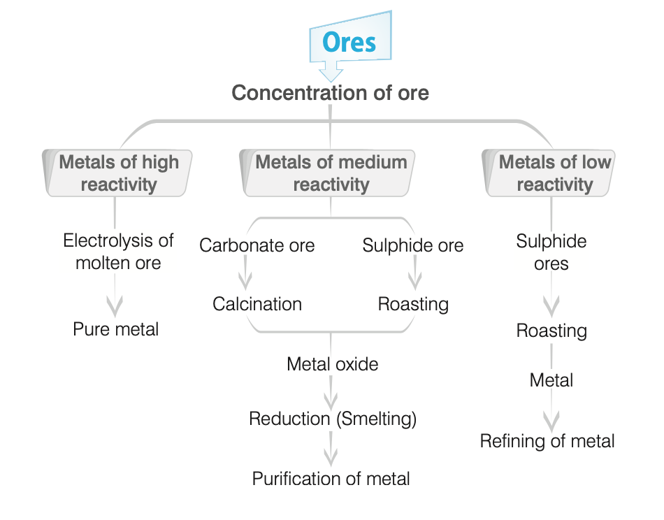
- Sequence:
- Ores → Concentration → Conversion to oxide → Reduction to metal → Purification/refining.
-
| Step | Process |
|---|
| Concentration of Ore | Removal of gangue/impurities. |
| Conversion to Oxide | Calcination/Roasting. |
| Reduction | Smelting/Aluminothermic/Auto-reduction/Electrolysis. |
| Purification | Refining. |
- Concentration of Ores
- Definition
- Removal of unwanted materials (gangue/impurities), also called dressing or benefaction.
- Methods
- Hand Picking:
- Manual separation.
- Hydraulic Washing
- Based on gravity difference.
- Upward water stream washes powdered ore; lighter gangue removed, heavier ore remains.
- Example:
- Iron ores (\( Fe_2O_3, Fe_3O_4 \)).
- Magnetic Separation
- Based on magnetic properties.
- Example:
- Tungsten ores from cassiterite (\( SnO_2 \)), \( Fe_2O_3, Cr_2O_3 \).
- Froth Flotation
- For sulphide ores.
- Powdered ore suspended in water with collectors (pine oils), froth stabilizers (cresols); ore wetted by oils, floats with froth, skimmed off.
- Leaching
- Ore soluble in solvent, impurities insoluble.
- Examples:
- Bauxite with conc. \( NaOH \), silver/gold with dilute \( NaCN/KCN \).
- Extraction of Crude Metals from Concentrated Ores
- Steps
- Conversion to Oxide
- Calcination
- Heating ore with/without air; volatile matter escapes, leaving metal oxide.
- For carbonate, hydroxide, oxide ores; decomposes to oxides, small molecules evolve.
- Roasting
- For sulphide ores; heated below melting point in air, forms oxide.
- Oxidizes impurities (\( S, As \)) to volatiles.
- Example:
- \( 2CuFeS_2 + 3O_2 \to CuO + FeO + 2SO_2 \).
- Reduction of Oxide to Metal
- Smelting
- Reduction with carbon/CO, for medium reactivity metals.
- Ore heated above melting point with coke, flux added.
- Flux converts infusible impurities to fusible slag.
- Example:
- \( PbO + CO \to Pb + CO_2 \) (high temperature).
- Flux:
- Acidic (\( SiO_2 \)) for basic impurities, basic (\( CaO, FeO \)) for acidic.
- Slag:
- Lighter, floats on molten metal.
- Example:
- \( SiO_2 + CaO \to CaSiO_3 \).
- Aluminothermic Process
- For \( Cr, Mn \) oxides, using aluminium.
- Example:
- \( Cr_2O_3 + 2Al \to Al_2O_3 + 2Cr \).
- Auto-Reduction
- For low reactivity metals (\( Cu, Hg, Pb \)); oxides reduced by heating.
- Electrolytic Method
- For high reactivity metals (\( Na, Al, Ca \)).
- Example:
- Sodium from \( NaCl \) electrolysis.
- Note:
- Alkali/alkaline earth metals from chlorides, oxides, hydroxides.
- Refining
- Definition
- Purification of crude metal from impurities, depends on metal and impurities.
- Methods
- Distillation
- For low boiling metals (\( Zn, Cd, Hg \)).
- Liquation
- For low melting metals (\( Sn, Hg, Pb \)).
- Electrolytic Refining
- Impure metal as anode, pure metal as cathode, metal salt as electrolyte (e.g., \( Cu, Ag, Au, Al, Pb \)).
- Zone Refining
- For high purity semiconductors (\( Ge, Si, B, Ga, In \)); impurities more soluble in molten metal.
- Vapour Phase Refining
- Metal to volatile compound, then decomposition to pure metal.
- Mond’s Process (Ni)
- \( Ni + 4CO \to Ni(CO)_4 \xrightarrow{\Delta} Ni + 4CO \).
- Van Arkel Process (\( Zr, Ti \))
- \( Ti + 2I_2 \to TiI_4 \xrightarrow{1600^\circ C} Ti + 2I_2 \).
- Chromatographic Method
- Based on differential adsorption.
- Notes
- Borax or \( KNO_3 \):
- Flux for silver refining.
- Hall-Heroult:
- \( Al_2O_3 \) mixed with \( Na_3AlF_6 \) or \( CaF_2 \) for lower melting point, higher conductivity.
- Wrought iron:
- Purest commercial iron.
- Cast iron:
- Used for wrought iron, steel.
- Thermite (\( Fe_2O_3 + Al \), 3:1):
- Welds railway lines.
- Non-metals and Their Compounds
- Definition
- Elements that accept electrons to form anions.
- 22 non-metals, located on the right side of the periodic table.
- Physical Properties of Non-metals
- States:
- Solids or gases (except \( Br \), liquid); 10 solid, 11 gaseous.
- Variety of colours.
- Poor conductors of heat/electricity (except graphite).
- Not lustrous (except \( I \)), non-sonorous, non-malleable.
- Low melting/boiling points and density (except diamond, graphite).
- Chemical Properties of Non-metals
- Electronegative, form anions by gaining electrons.
- Form oxides with \( O_2 \): e.g., \( S + O_2 \to SO_2 \).
- \( SO_2 + H_2O \to H_2SO_3 \) (sulphurous acid, turns blue litmus red).
- Oxides:
- Acidic (\( CO_2, SO_2, SO_3, NO_2, P_2O_5 \)); neutral (\( CO, NO, N_2O, H_2O \)).
- Generally no reaction with water, but reactive in air (e.g., \( P \), stored in water, catches fire in air).
- Complex reactions with bases.
- Carbon (\( C \))
- Atomic number: 6, mass: 12, group 14, 2nd period, p-block.
- Electronic configuration:
- \( 1s^2 2s^2 2p^2 \).
- 17th most abundant element in Earth’s crust.
- Occurrence
- Free:
- Coal, graphite, diamond.
- Combined:
- Metal carbonates, proteins, carbohydrates, hydrocarbons, \( CO_2 \) (0.03% in air).
- Isotopes:
- \( ^{12}C, ^{13}C, ^{14}C \) (\( ^{14}C \): radioactive, half-life 5770 years, emits β-rays).
- Note:
- \( ^{12}C \) is the international standard for atomic mass (amu); \( ^{15}C, ^{16}C \) also radioactive.
- Forms >5 lakh compounds due to tetravalency and catenation (vs. 50,000 for other elements).
- Properties
- Tetravalent, unaffected by water.
- Forms multiple bonds: \( C=C, C≡C, C=O, C=S, C≡N \).
- Catenation:
- Forms chains/rings via covalent bonds.
- Exhibits allotropy.
- Allotropes of Carbon
- Crystalline:
- Diamond, graphite, fullerene.
- Amorphous:
- Carbon black, coke, wood charcoal, coal.
- Allotropy:
- Same element/compound in multiple forms with similar chemical but different physical properties.
- Diamond
- Occurs in kimberlite stone; purity in carats (1 carat = 200 mg).
- Examples:
- Cullinan (3032 carat), Hope (445 carat), Kohinoor (186 carat), Pitt (136.2 carat).
- Structure:
- Each \( C \) bonded to 4 others in tetrahedral, rigid 3D lattice with covalent bonds.
- Hardest substance due to extended covalent bonding.
- Properties
- Colourless, transparent (impurities add colours, e.g., carbonado/black diamond).
- Density: 3.67, refractive index: 2.44.
- Inert, highly poisonous.
- Bad conductor of electricity (no free electrons), conducts heat.
- Pure:
- Transparent to X-rays; impure: Not (used to distinguish artificial diamonds).
- With \( K_2Cr_2O_7 + \text{conc.} H_2SO_4 \) at 200°C or heated in air (700-900°C): Forms \( CO_2 \).
- Uses
- Coloured:
- Abrasive for sharpening (rock drilling, glass cutting, gem cutters).
- Making dyes, tungsten filaments for bulbs, jewellery (sparkles due to total internal reflection).
- Note:
- First artificial diamond by Moissan (1893).
- Graphite
- Structure:
- Each \( C \) bonded to 3 others in planar hexagonal arrays; 4th electron free, moves in lattice.
- Good conductor of electricity due to free electrons.
- Properties
- Soft, smooth, slippery (layered structure); marks paper (lead pencil, aka black lead).
- Inert to acids, alkalis, dilute \( HNO_3 \); forms \( CO_2 \) when heated alone or with \( K_2Cr_2O_7 + \text{conc.} H_2SO_4 \).
- Converts to diamond at high pressure with catalyst; reverse not possible.
- Thermodynamically most stable allotrope.
- Uses
- Electrodes (conducts electricity).
- Dry lubricant (prevents rusting, viscous friction at high temperatures).
- Refractory crucibles, lead pencils, nuclear reactor moderator.
- Graphite fibres in composites: Tennis rackets, fishing rods, aircraft.
- Note:
- Lead pencils contain 0% lead.
-

- Graphene
- One-atom-thick planar sheets of \( C \) in honeycomb lattice.
- Discovered by Hanns-Peter Boehm (1962); named from graphite + -ene.
- Strong, conductive, used in touchscreens, LCDs, LEDs.
- Fullerene
- Purest carbon form, cage-like molecules (e.g., \( C_{60} \), Buckminsterfullerene, soccer ball shape).
- Made by heating graphite in electric arc with inert gases (\( He, Ar \)).
- Discovered by HW Kroto, E Smalley, RF Curl.
- Uses:
- Microscopic ball bearings, lightweight batteries, new lubricants, plastics, drugs.
- Lamp Black
- 95% carbon, from burning hydrocarbons in limited air.
- Uses:
- Black pigment (ink, shoe polish), filler in tyres, eye soot.
- Charcoal
- Impure, porous, high surface area, absorbs gases.
- Types
- Wood Charcoal:
- From wood heated without air; used in gas masks, water filters, air conditioning (odour control), explosives; has germicidal properties.
- Bone Charcoal:
- From destructive distillation of bone; used to bleach organic substances.
- Sugar/Blood Charcoal:
- From destructive distillation of sugar/blood.
- Coke
- 80-85% carbon, from coal heated without air (removes volatiles).
- Uses:
- Fuel, reducing agent in metallurgy.
- Coal
- 90% found in northern hemisphere, from carbonation of vegetable matter.
- Unlimited energy source.
- Uses:
- Fuel, coal gas, synthetic petrol.
- Types
-
| Type | Carbon Content | Notes |
|---|
| Peat | 50-60% | Low quality |
| Lignite | 60-70% | Brown coal |
| Bituminous | 78-86% | Soft, domestic use |
| Anthracite | 94-98% | High quality |
- Note:
- Coconut charcoal used to separate inert gases; artificial graphite via Acheson process.
- Oxides of Carbon
- Carbon Monoxide (\( CO \))
- Preparation:
- \( 2C(s) + O_2(g) \to 2CO(g) \) (limited \( O_2 \)).
- Found in vehicle smoke (city pollutant).
- Properties
- In water gas (\( CO + H_2 \)), producer gas (\( CO + N_2 \)); industrial fuels.
- Colourless, odourless, tasteless, nearly insoluble in water.
- Burns with blue flame, forms phosgene (\( COCl_2 \)) with \( Cl_2 \) in sunlight.
- Weight equal to air, highly poisonous.
- Binds haemoglobin 200x stronger than \( O_2 \), reduces oxygen transport, can cause death.
- Uses
- Reducing agent in metallurgy, Mond process (\( Ni \)), preparation of phosgene, methyl alcohol, sodium formate.
- Carbon Dioxide (\( CO_2 \))
- Preparation:
- Complete combustion of carbon/fuels, heating limestone, respiration, fermentation.
- Properties
- 0.03% in atmosphere, removed by photosynthesis.
- Colourless, odourless, acidic, non-poisonous, greenhouse gas (excess causes global warming).
- Forms carbonic acid (\( H_2CO_3 \)) in water.
- Turns lime water milky (\( CaCO_3 \)), milkiness disappears with excess (\( Ca(HCO_3)_2 \)).
- Uses
- Solid (\( CO_2 \), dry ice/drikold):
- Refrigerant for ice cream.
- Gas:
- Carbonated drinks (high pressure), fire extinguisher (via \( NaHCO_3 + \text{acid} \)).
- Urea, hard steel production.
- Note:
- Heavier than air, non-flammable, effective fire extinguisher; avoid sleeping under trees at night due to \( CO_2 \) release.
- Carbonic Acid (\( H_2CO_3 \))
- Formed from \( CO_2 + H_2O \), dibasic acid.
- \( H_2CO_3 / HCO_3^- \) buffer maintains blood pH (7.26-7.42).
- Silicon (\( Si \))
- Atomic number: 14, mass: 28, group 14, 3rd period, p-block.
- Electronic configuration:
- \( 1s^2 2s^2 2p^6 3s^2 3p^2 \).
- Properties
- Occurs as silica (sand) and silicates; 26% of Earth’s crust (2nd most abundant after \( O \)).
- Non-metal, exhibits allotropy.
- Uses
- Component of ceramics, glass, cement.
- Ultra-pure:
- Semiconductors, transistors, computer chips.
- Silicones (polymers):
- Sealants, greases, insulators, waterproofing, surgical/cosmetic implants.
- Silica gel:
- Drying agent.
- Silica garden, acid-resistant steel.
- Compounds
- Silicon Carbide (\( SiC \)):
- Carborundum, artificial diamond.
- Silica (\( SiO_2 \)):
- Crystalline quartz, used in glass, cement.
- Silicones:
- Polymers for sealants, insulators, waterproofing.
- Silanes:
- Silicon hydrides.
- Nitrogen (\( N_2 \))
- Atomic number: 7, mass: 14, group 15, 2nd period, p-block.
- Electronic configuration:
- \( 1s^2 2s^2 2p^3 \).
- Discovered by D Rutherford (1772).
- Occurrence
- 78% of atmosphere by volume.
- In crust:
- Chile saltpetre (\( NaNO_3 \)), Indian saltpetre (\( KNO_3 \)).
- In plants/animals:
- Proteins, urea (46% \( N \)).
- Plants absorb as nitrates from soil.
- Isotopes:
- \( ^{14}N, ^{15}N, ^{13}N \).
- Preparation
- Industrial:
- Liquefaction, fractional distillation of air.
- Lab:
- \( NH_4Cl + NaNO_2 \).
- Properties
- Colourless, odourless, tasteless, diatomic, non-polar, non-toxic.
- Inert at room temperature; at high temperature, forms oxides (\( O_2 \)), hydrides (\( H_2 \)), nitrides (\( Mg_3N_2, Li_3N \)).
- Uses
- Ammonia, calcium cyanamide production.
- Inert atmosphere in iron/steel industry.
- Liquid \( N_2 \):
- Refrigerant for biological materials, food, sperm, cryosurgery.
- Electric bulbs, high-temperature thermometers.
- Nitrogen Fixation
- Conversion of \( N_2 \) to nitrates/nitrites (natural: lightning, rhizobium; artificial: fertilizers).
- Denitrification
- Conversion of nitrogenous compounds to \( N_2 \) by denitrifying bacteria.
- Ammonia (\( NH_3 \))
- Discovered by J Priestley (1774), named by Berthelot (1785).
- Preparation:
- Haber’s process (\( N_2 + H_2 \), \( Fe \) catalyst, \( Mo \) promoter; or \( Fe_2O_3 \), \( Al_2O_3 + K_2O \)).
- Lab:
- Heat \( NH_4Cl + CaCO_3 \).
- Properties
- Colourless, pungent, highly water-soluble gas.
- Tetrahedral, pyramidal due to lone pair.
- Note:
- Liquor ammonia (conc. aqueous solution); ammonium carbonate (\( (NH_4)_2CO_3 \)) called smelting salt; \( NH_4Cl + \text{conc. chlorostannic acid} \to \text{pink salt} \).
- Uses
- Nitrogenous fertilizers, nitric acid production.
- Liquid ammonia: Refrigerant.
- Note:
- Bad smell near toilets/horse parking from urea decomposition; cool bottles before opening due to high vapour pressure.
- Oxides of Nitrogen
- Types:
- \( N_2O \), \( NO \), \( N_2O_3 \), \( NO_2 \), \( N_2O_4 \), \( N_2O_5 \).
- Neutral:
- \( N_2O \), \( NO \); others acidic.
- Nitrous oxide (\( N_2O \)):
- Laughing gas, causes laughter, used in anaesthesia (surgery, dental); excess can be fatal.
- Oxoacids of Nitrogen
- Hyponitrous acid, nitrous acid (\( HNO_2 \)), nitric acid (\( HNO_3 \)).
- Nitric Acid (\( HNO_3 \))
- Preparation:
- Ostwald’s process (catalytic oxidation of \( NH_3 \)), Birkeland Eyde, Retort process.
- Properties:
- Colourless liquid, strong acid, strong oxidizer.
- Attacks most metals (except \( Au, Pt \)); \( Fe, Al, Cr \) passive due to oxide film.
- Called aqua fortis (strong water).
- Uses:
- Explosives (\( \text{nitroglycerin, TNT, TNP} \)), organic compounds.
- Nitrous Acid (\( HNO_2 \))
- Unstable, forms nitrites.
- Acts as oxidizing/reducing agent.
- With \( CS_2 + NO \):
- Used in flash photography.
- Ammonium Chloride (\( NH_4Cl \))
- Aka sal ammoniac, nausadar.
- White crystalline powder.
- Uses:
- Dry cells, pre-welding cleaner, lab reagent, drugs, electroplating.
- Phosphorus (\( P \))
- Atomic number: 15, mass: 31, group 15, 3rd period, p-block.
- Electronic configuration:
- \( 1s^2 2s^2 2p^6 3s^2 3p^3 \).
- Very reactive non-metal.
- Occurrence
- As stable phosphates; in bones (58% calcium phosphate), cells, blood, urine, milk, eggs (phospho-proteins).
- Adult human:
- 0.7 kg \( P \).
- Minerals:
- Phosphorite (\( Ca_3(PO_4)_2 \)), chlorophite (\( Ca_3(PO_4)_2 \cdot CaCl_2 \)), Redonda phosphate (\( AlPO_4 \)).
- Extraction:
- Electrothermal process from phosphorite; small amounts from bone ash.
- Isotopes:
- \( ^{31}P, ^{32}P, ^{33}P \).
- Uses
- DNA/RNA synthesis, photosynthesis, leaf colour.
- Aluminium phosphide: Food grain preserver.
- Phosphor bronze (alloy): Special containers.
- Allotropic Forms
- White/Yellow Phosphorus
- Tetrahedral (\( P_4 \)), each \( P \) bonded to 3 others.
- Highly reactive, ignites at 30°C (stored in water, self-ignition).
- Soluble in \( CS_2 \), insoluble in water; translucent, waxy, poisonous, garlic smell.
- Glows in dark (chemiluminescence).
- With boiling \( NaOH \) (inert atmosphere): Forms phosphine (\( PH_3 \)).
- Uses:
- Firecrackers, fire/smoke bombs.
- Note:
- Causes phossy jaw (jaw bone decay).
- Red Phosphorus
- Polymeric, linear \( P_2 \), red crystalline solid.
- Preparation:
- Heat white \( P \) at 573 K (inert atmosphere).
- Vapours at 523 K (\( N_2, CO_2 \)) condense to white \( P \).
- Odourless, non-poisonous, insoluble in water/\( CS_2 \).
- Less reactive, high ignition temperature (260°C), no glow.
- Uses:
- Safety matchsticks (with antimony trisulphide, \( KClO_3 \)).
- Black Phosphorus
- Preparation:
- Heat white \( P \) at 200°C, high pressure.
- Forms:
- α-black (sublimes in air), β-black (no burning up to 673 K, conductive).
- Black, insoluble in \( CS_2 \), inert.
- Scarlet Phosphorus
- From 10% white \( P \) in \( PBr_3 \), heated 10 hours.
- Red crystalline, non-poisonous, insoluble in \( CS_2 \), more reactive than red \( P \).
- Violet Phosphorus (Hittorf’s)
- From white \( P \) at 803 K in closed tube.
- Violet, non-flammable, bad conductor.
- Phosphorescence/Chemiluminescence
- White \( P \) glows (yellowish-green) due to slow combustion in air, emitting light, not heat.
- Phosphine (\( PH_3 \))
- Preparation:
- Hydrolysis of calcium phosphide (\( Ca_3P_2 \)) with water/dilute \( HCl \); or white \( P + \text{conc.} NaOH \) in \( CO_2 \).
- Colourless, volatile, rotten fish smell, highly poisonous.
- Burns with dazzling light, explodes with oxidizers (\( Cl_2 \)).
- Weakly basic.
- Oxides of Phosphorus
- Phosphorus Trioxide (\( P_2O_3 \), dimer \( P_4O_6 \)):
- From white \( P \) in limited air.
- Phosphorus Pentoxide (\( P_2O_5 \), \( P_4O_{10} \))
- Acid anhydride of phosphoric acid, waxy white, sublimes.
- Reacts vigorously with water to form orthophosphoric acid.
- Tetrahedral structure.
- Uses:
- Dehydrating agent (\( H_2SO_4 \to SO_3 \), \( HNO_3 \to N_2O_5 \), cellulose to carbon).
- Oxoacids of Phosphorus
-
| Name | Formula | Oxidation State |
|---|
| Hypophosphorus acid | \( H_3PO_2 \) | +1 |
| Orthophosphorus acid | \( H_3PO_3 \) | +3 |
| Orthophosphoric acid | \( H_3PO_4 \) | +5 |
| Hypophosphoric acid | \( H_4P_2O_6 \) | +4 |
| Pyrophosphoric acid | \( H_4P_2O_7 \) | +5 |
| Polymetaphosphoric acid | \( (HPO_3)_n \) | +5 |
- Notes
- Bone:
- Hydroxyapatite, amorphous calcium phosphate.
- Basicity:
- \( H_3PO_4 \): 3; \( H_3PO_3 \): 2; \( H_3PO_2 \): 1.
- Hypophosphite compounds:
- Strength-promoting drugs.
- Oxygen (\( O_2 \))
- Atomic number: 8, mass: 16, group 16, 2nd period, p-block.
- Discovered by Scheele (1772), named by Lavoisier (1777).
- Electronic configuration:
- \( 1s^2 2s^2 2p^4 \).
- Occurrence
- Most abundant element (46.6% Earth’s crust, 20.946% dry air).
- From photosynthesis.
- Lab:
- Heat \( KClO_3 \) at 375°C with \( MnO_2 \).
- Industrial:
- Fractional distillation of air.
- Isotopes:
- \( ^{16}O, ^{17}O, ^{18}O \).
- Properties
- Colourless, odourless gas; deep blue liquid when cooled.
- Slightly heavier than air, supports combustion, does not burn.
- Slightly soluble in water (supports aquatic life).
- Paramagnetic.
- Reacts with most metals (except \( Au, Pt \)), non-metals, some noble metals.
- Uses
- Oxyacetylene welding, steel production.
- Oxygen cylinders (\( O_2 + He \)):
- Hospitals, high-altitude flying, mountaineering.
- Liquid \( O_2 \):
- Rocket fuel oxidizer.
- Note:
- Vegetation loss would eliminate \( O_2 \), ending life.
- Ozone (\( O_3 \))
- Triatomic allotrope, formed at 20 km altitude via sunlight.
- Protects Earth from UV radiation.
- Destroyed by \( NO \) (jet exhausts), CFCs.
- Properties:
- Oxidizing/reducing agent; forms ozonides with ethene/ethane; brightens silver to silver black.
- Uses:
- Germicide, disinfectant, water sterilization, bleaching oils, ivory, flour, starch, artificial silk.
- Sulphur (\( S \))
- Atomic number: 16, mass: 32, group 16, 3rd period, p-block.
- Electronic configuration:
- \( 1s^2 2s^2 2p^6 3s^2 3p^4 \).
- Isotopes:
- \( ^{32}S, ^{33}S, ^{34}S, ^{35}S, ^{36}S \) (\( ^{35}S \): radioactive).
- Occurrence
- 0.03-0.1% in crust; in eggs, proteins, garlic, onion, mustard, hair, wool.
- Elemental near hot springs, volcanoes (Italy, Sicily, Japan).
- Compounds:
- \( FeS, HgS, PbS, ZnS \).
- Extraction:
- Frasch, Sicilian processes.
- Allotropic Forms
- Crystalline
- Rhombic Sulphur (α-sulphur):
- Most stable at room temperature, yellow, brittle, \( S_8 \) puckered ring, insoluble in water, soluble in \( CS_2 \), bad conductor; forms \( FeS \) with iron filings.
- Monoclinic Sulphur (β-sulphur):
- Stable >369 K, converts to α-sulphur <369 K; 369 K = transition temperature.
- Non-crystalline:
- Plastic, white, milky sulphur.
- Notes
- \( S_2 \):
- Dominant, paramagnetic at high temperature.
- Sublimation:
- Flower of sulphur.
- Boiled, cooled in cold water:
- Plastic sulphur.
- Pungent odour from sulphurous compounds.
- Uses
- Produces \( SO_2, H_2SO_4, CS_2 \), medicines, ointments, bleaching agents.
- Colour/dye industry, germicide, fungicide, rubber vulcanization.
- Organic:
- In biotin, thiamine vitamins.
- Milky sulphur: Medicines.
- Gunpowder:
- \( S + \text{charcoal} + KNO_3 \).
- Oxides of Sulphur
- Sulphur Dioxide (\( SO_2 \))
- From volcanic eruptions, colourless, pungent, toxic, heavier than air.
- Angular structure, forms sulphurous acid (\( H_2SO_3 \)) in water.
- Turns lime water milky (\( CaSO_3 \)), milkiness disappears with excess (\( Ca(HSO_3)_2 \)).
- Uses:
- Refrigerant, antichlor, disinfectant, preservative, bleaching wool/silk (temporary), petroleum/sugar refining, solvent.
- Sulphur Trioxide (\( SO_3 \))
- Acidic, anhydride of \( H_2SO_4 \), forms \( H_2SO_4 \) with water (exothermic).
- Uses:
- \( H_2SO_4 \), oleum production, drying agent.
- Oxoacids of Sulphur
- Sulphurous acid (\( H_2SO_3 \)), sulphuric acid (\( H_2SO_4 \)), peroxodisulphuric acid (\( H_2S_2O_8 \)), pyrosulphuric acid (\( H_2S_2O_7 \)).
- Sulphurous Acid (\( H_2SO_3 \))
- Strong dibasic acid, forms sulphites, bisulphites.
- Oxidizing/reducing agent, temporary bleaching (like \( SO_2 \)).
- Sulphuric Acid (\( H_2SO_4 \))
- Oil of vitriol, king of chemicals.
- Preparation:
- Lead chamber, contact process (\( SO_2 \to SO_3 \), catalysts: \( Pt, V_2O_5, \text{etc.} \)).
- Colourless, dense, oily, exothermic with water.
- Forms normal/acid sulphates; decomposes to Marshall’s acid (\( H_2S_2O_8 \)).
- Uses:
- Oil refining, wastewater processing, mineral extraction, explosives, drugs, disinfectants, paints, fertilizers, detergents, alums, ethers, metal sulphates, storage batteries.
- Note:
- Chars sugar (dehydration, turns black).
- Pyrosulphuric Acid (\( H_2S_2O_7 \))
- Fuming sulphuric acid/oleum, from \( SO_3 + \text{conc.} H_2SO_4 \).
- Hydrolysis forms \( H_2SO_4 \).
- Hydrogen Sulphide (\( H_2S \))
- From volcanic eruptions, colourless, toxic, rotten egg smell.
- Fatal in large doses; antidote: Dilute \( Cl_2 \).
- Halogens
- Group 17 (VII A): \( F, Cl, Br, I, At \).
- Salt producers (Greek: halo = salt, genes = born).
- Highly reactive, exist in combined form, coloured (absorb visible light).
- Electronic configuration:
- \( ns^2 np^5 \).
- Astatine:
- Radioactive.
- Fluorine (\( F \))
- Atomic number: 9, mass: 19, electronic configuration: \( 1s^2 2s^2 2p^5 \).
- Isolated by Moissan (1886).
- Pale yellow gas, most reactive halogen, most electronegative element.
- Oxidizes water to \( O_2 \), forms \( O_2F_2, OF_2 \).
- Reacts with most metals/non-metals (except \( N \)).
- Uses:
- \( O_2F_2, OF_2 \) as fluorinating agents; \( O_2F_2 \) removes \( Pu \) as \( PuF_6 \) from nuclear fuel.
- Chlorine (\( Cl \))
- Atomic number: 17, mass: 35.45, electronic configuration: \( 1s^2 2s^2 2p^6 3s^2 3p^5 \).
- Discovered by Scheele (1774), aka oxymuriatic acid.
- Preparation: Deacon’s process, electrolysis of brine (Nelson cell).
- Greenish-yellow, pungent, suffocating, 2.5x heavier than air, water-soluble.
- Forms chlorides with metals/non-metals; permanent bleaching via nascent oxygen.
- Forms bleaching powder (\( Ca(OCl)Cl \)) with lime.
- Uses:
- Bleaching wood pulp, cotton, textiles; extracting \( Au, Pt \); dyes, drugs, \( CCl_4, CHCl_3, DDT \), refrigerants; water sterilization; poisonous gases (phosgene, tear gas, mustard gas).
- Notes:
- \( ClO_2 \):
- Bleaching paper/textiles, water treatment; \( ClO_2 + Cl_2 \): Euchlorine; \( HClO_4 \): Strongest oxoacid; \( HCl \): For \( Cl_2, NH_4Cl \), glucose, glue, bone black purification, medicines.
- Bromine (\( Br \))
- Atomic number: 35, mass: 79.9, electronic configuration: \( [Ar] 3d^{10} 4s^2 4p^5 \).
- Discovered by Ballard (1826).
- Reddish-brown liquid, 0.068% in seawater.
- Extraction:
- Carnallite ore, brine (Rann of Kutch, India).
- Colours starch paper yellow, oxidizing/bleaching agent (nascent oxygen).
- Uses:
- Bromide, bromate, hypobromide salts; \( AgBr \): Photography; \( KBr \): Sleeping drugs, pain relief; toxic/tear gases.
- Iodine (\( I \))
- Atomic number: 53, mass: 126.9, electronic configuration: \( [Kr] 4d^{10} 5s^2 5p^5 \).
- Discovered by Courtois (1811) from seaweed ash.
- Shining, dark solid, violet vapours.
- In seawater, seaweeds as iodides; in body as thyroxin (thyroid).
- Deficiency causes goitre.
- Uses:
- Lab reagent, disinfectant, antiseptic, analgesic, goitre treatment, egg production, photographic films/plates.
- Notes:
- \( I_2O_5 \):
- Oxidizing agent, \( CO \) estimation; Iodex: Pain relief ointment (contains dichlorophenol, no \( I \)).
- Inert/Noble Gases
- Group 18:
- \( He, Ne, Ar, Kr, Xe, Rn \).
- Chemically inert (some, e.g., \( Xe \), form compounds with \( O, F \)).
- Obtained from air liquefaction/fractional distillation (except \( Rn \), from \( Ra-226 \) decay).
- Monoatomic, form clathrate/cage compounds (gases trapped in crystal lattices).
- Helium (\( He \))
- Atomic number: 2, mass: 4, discovered by Lockyer, Janssen.
- 2nd most abundant in universe, from natural gas, radioactive minerals (\( \text{pitchblende, monazite, cleveite} \)).
- Diffuses through rubber, glass, plastic.
- Uses:
- Balloons (non-flammable, light), aircraft tyres, gas-cooled reactors, cryogenics, deep-sea diving (\( He + O_2 \), less soluble in blood), asthma breathing, NMR/MRI magnets.
- Neon (\( Ne \))
- Atomic number: 10, mass: 20, discovered by Ramsay, Travers.
- From volatile part of liquid argon.
- Uses:
- Discharge tubes, fluorescent bulbs (advertising), greenhouse bulbs, aerodrome indicator lamps (shine in fog).
- Argon (\( Ar \))
- Atomic number: 18, mass: 40, discovered by Rayleigh, Ramsay (1892).
- Uses:
- Inert atmosphere in metallurgy, arc welding, filling electric bulbs.
- Krypton (\( Kr \))
- Atomic number: 36, mass: 84, discovered by Ramsay, Travers (1898).
- Yellow/green spectral lines.
- Uses:
- Airport runway, approach lights.
- Xenon (\( Xe \))
- Atomic number: 54, mass: 131, discovered by Ramsay, Travers.
- First compound (\( XePtF_6 \)) by Neil Bartlett (1962); forms \( F, O \) compounds.
- Uses:
- High-intensity photographic flash tubes (\( Xe-Kr \)).
- Radon (\( Rn \))
- Discovered by Dorn.
- Uses:
- Cancer treatment (radiotherapy).
- Metalloids
- 7 elements:
- \( B, Si, Ge, As, Sb, Te, Po \); between metals and non-metals.
- Boron (\( B \))
- From cosmic ray spallation.
- Uses:
- Nuclear reactor control rods, bulletproof jackets, semiconductors.
- Compounds
- Borax:
- Flux, borax bead test, water softening, antiseptic, glass/pottery.
- Orthoboric acid:
- Antiseptic, eye lotion, food preservative, carrom board powder.
- Boron carbide:
- Norbide, very hard.
- Borazine (\( B_3N_3H_6 \)):
- Inorganic benzene.
- Others
- Silicon:
- In iron/aluminium alloys.
- Germanium, Gallium Arsenide:
- Semiconductors, solar cells, photodiodes, transistors, computer chips.
- Fuels, Combustion, and Flames
- Fuels
- Definition
- Materials used as heat energy sources for domestic/industrial purposes (e.g., wood, charcoal, petrol, kerosene, LPG, coal gas).
- Contain carbon, generates heat on burning in air.
- Characteristics of a Good Fuel
- Readily available, cheap.
- Burns easily at moderate rate.
- High heat output.
- No undesirable residues.
- Low volatile substances.
- Easily storable, transportable.
- High, specific calorific value.
- Types of Fuels
- Solid:
- Coal, coke, wood, cow dung cakes.
- Liquid:
- Petrol, kerosene, diesel, fuel oil.
- Gaseous:
- LPG, CNG, biogas, coal gas, producer gas, hydrogen, oil gas, water gas.
- Notes
- No ideal fuel exists.
- Gaseous fuels preferred over solid/liquid.
- Calorific Value
- Heat from burning 1 g of fuel in excess \( O_2 \), expressed in kJ/g.
-
| Fuel | Calorific Value (kJ/g) |
|---|
| Coke/Coal/Charcoal | 25-32 |
| Kerosene/Gasoline | 48 |
| Petrol | 50 |
| Diesel | 45 |
| Biogas | 35-40 |
| LPG | 50 |
| Wood | 17 |
| Cow Dung | 6-8 |
| Ethanol | 30 |
| Methane | 55 |
| Hydrogen | 150 |
| Natural Gas | 35-50 |
- Notes
- Water gas > producer gas (lowest calorific value).
- Hydrogen:
- Highest calorific value (150 kJ/g), not used due to inflammability, storage issues; used in some advanced vehicles.
- Fats > proteins, carbohydrates in calorific value.
- Fossil Fuels
- From residues of organisms buried for millions of years (non-renewable).
- Examples:
- Coal, petroleum, natural gas.
- Coal
- Formed from vegetation via carbonisation (no air, high temperature/pressure over millions of years).
- Composition:
- 60-90% carbon, small amounts of \( N, S \).
- Types
-
| Type | Carbon Content | Notes |
|---|
| Peat | 50-60% | First phase |
| Lignite | 60-70% | Brown coal |
| Bituminous | 78-86% | Soft, domestic use |
| Anthracite | 94-98% | Best, high heat, no smoke |
- Uses
- Destructive distillation yields coke, coal gas, coaltar.
- Fuel for boilers, engines, furnaces.
- Coaltar
- Black, thick liquid from destructive distillation of coal.
- Mixture of ~200 substances.
- Uses:
- Synthetic dyes, drugs, explosives, paints, naphthalene balls.
- Petroleum
- Dark, oily liquid (black gold, crude oil, rock oil), unpleasant odour.
- Mixture of hydrocarbons, sulphur; high calorific value.
- Formed from sea organisms, transformed over millions of years (no air, high temperature/pressure).
- Fractional Distillation Products
-
| Fraction | Boiling Range (°C) | Uses |
|---|
| Uncondensed gases | Room temp | Fuel gases, refrigerants, carbon black |
| Crude naphtha | 30-150 | |
| Petroleum ether | 30-70 | Motor fuel, dry cleaning, solvent |
| Petrol/Gasoline | 70-120 | Motor fuel, solvent, dry cleaning |
| Benzene derivatives | 120-150 | Solvent |
| Kerosene | 150-250 | Fuel, illuminant, oil gas |
| Gas oil | 250-350 | Fuel, converted to gasoline by cracking |
| Fuel oil | 250-350 | Fuel |
| Diesel oil | 250-350 | Diesel engines |
| Lubricating oil | 350-450 | Lubrication |
| Paraffin wax | >500 | Candles, boot polish, wax paper |
| Vaseline | >500 | Ointments, lubrication |
| Pitches | >500 | Paints, road surfacing |
- Composition and Uses of Fuels
- Coke
- From destructive distillation of coal, 80-85% carbon.
- Uses:
- Metal extraction (reducing agent), fuel in electrodes.
- Coal Gas
- Composition:
- 55% \( H_2 \), 30% \( CH_4 \), 4% \( CO \), 3% unsaturated hydrocarbons, 8% non-volatile impurities.
- Uses:
- Fuel near coal plants, metallurgical reduction, Bunsen burner.
- Notes:
- \( H_2, CO, CH_4 \) provide heat; unsaturated hydrocarbons emit light; used for street lighting (London 1810, New York 1820), now for heat.
- Water Gas
- Composition:
- \( CO + H_2 \), with \( N_2 \), water vapour impurities.
- Preparation:
- Steam over superheated coke.
- Uses:
- Industrial production of \( H_2 \), ammonia, methyl alcohol.
- Producer Gas
- Composition:
- \( N_2 + CO \) (2:1).
- Uses:
- Glass manufacturing, metallurgy.
- Oil Gas
- Composition:
- Saturated/unsaturated hydrocarbons (\( CH_4 \), ethylene, acetylene).
- From fractional distillation of kerosene/petroleum.
- Uses:
- Lab burners.
- Natural Gas
- Composition:
- 83% \( CH_4 \), 16% ethane.
- Found at petroleum exploration sites, highly flammable.
- Uses:
- Artificial chemical fertilizers.
- Liquefied Petroleum Gas (LPG)
- Composition:
- Butane (\( C_4H_{10} \)), iso-butane, some propane (\( C_3H_8 \)).
- Sources:
- Oil wells.
- Added:
- Ethyl mercaptan (\( C_2H_5SH \)) for leak detection (LPG colourless, odourless).
- Uses:
- Domestic cooking (e.g., Bharat Gas, Indane), compressed in cylinders.
- Biogas (Gobar Gas)
- Composition:
- 75% \( CH_4 \), \( H_2 \), \( H_2S \), \( CO_2 \).
- From anaerobic decomposition of biomass (cow dung, sewage, vegetable waste).
- Burns smoothly, no smoke.
- Uses:
- Domestic cooking.
- Note:
- Spent slurry used as manure (rich in \( N, P \)).
- Compressed Natural Gas (CNG)
- Mainly \( CH_4 \), some ethane.
- Uses:
- Vehicle fuel, produces fewer pollutants (\( CO, NO_x \)) than petrol/diesel.
- Petrol
- Uses:
- Fuel for light vehicles (scooters, cars).
- Quality:
- Measured by octane number (percentage of iso-octane in iso-octane + n-heptane mixture with same anti-knock properties).
- Knocking:
- Preignition causes metallic rattle, damages engine.
- Anti-knock additives:
- Tetraethyl lead (TEL, 0.15 mL/L with ethyl bromide), benzene, toluene, xylene (BTX).
- Note:
- High octane = high lead content.
- Diesel
- Uses:
- Heavy vehicles (trucks, tractors, submarines), high power, low cost.
- Quality:
- Measured by cetane number.
- Biodiesel
- From vegetable oils, animal fats, recycled greases via transesterification.
- Safe, biodegradable, less polluting than petroleum diesel, but more expensive.
- Uses:
- Pure (B100) or additive to reduce particulates, \( CO \), hydrocarbons.
- Liquefied Natural Gas (LNG)
- Liquefied natural gas (\( CH_4 \)) at 25 kPa, -162°C.
- Odourless, colourless, non-toxic, non-corrosive.
- Energy density:
- 2.4x CNG, 60% diesel; cost-efficient for transport.
- Uses:
- Transported via cryogenic vessels/tankers, regasified for pipelines, natural gas vehicles (less common than CNG).
- Note:
- High production/storage costs; Dahej (India) first regasification project (BPCL, GAIL, IOCL, ONGC).
- Brent Crude Oil
- Light crude, 0.37% sulphur, specific gravity 0.835.
- Sourced from North-West Europe.
- Uses:
- Petrol, middle distillates.
- Cracking
- Converts high-boiling hydrocarbons to low-boiling ones.
- Example:
- \( C_{12}H_{26} \xrightarrow{\text{Pt/Pd/Ni}, 973K} C_5H_{10} + C_7H_{16} + \text{other products} \).
- Used to meet petrol demand, improve quality.
- Advancements in Fuels
- Microbial ethanol from glycerol, cleans wastewater.
- Solid material (lithium, boron, hydrogen) stores \( H_2 \), releases with minimal byproducts.
- E-20 fuel (20% ethanol + gasoline):
- Reduces hydrocarbons, \( CO \); no drivability/maintenance issues.
- US:
- 90% gasoline + 10% ethanol; Indy 500 uses ~85% ethanol (E-85), reduces pollutants (\( SO_x \) 80%, \( CO \) 40%, particulates 20%, VOCs 15%, \( NO_x \) 10%).
- Combustion
- Definition
- Chemical process where a substance reacts with \( O_2 \), releasing energy (heat/light).
- Example:
- \( Mg \) burning to form \( MgO \).
- Oxidation process.
- Combustible Substances
- Burn in air/\( O_2 \): Wood, paper, kerosene, charcoal, sulphur, magnesium.
- Non-Combustible Substances
- Do not burn in air: Stone, sand, bricks.
- Conditions for Combustion
- Oxygen:
- Supporter of combustion.
- Ignition Temperature:
- Lowest temperature for a substance to catch fire (inflammable substances like LPG, petrol, alcohol have low ignition temperatures).
- Fuel:
- Essential for combustion.
- Note:
- Dry grass catches fire easier than green grass in summer due to lower ignition temperature.
- Types of Combustion
- Rapid Combustion
- Fuels (e.g., hydrocarbons) burn rapidly, produce heat/light (e.g., matchstick, firecracker explosion).
- Slow Combustion
- Slow rate, no light, heat insufficient to raise reaction temperature (e.g., inhalation).
- Spontaneous Combustion
- Occurs at room temperature without heat supply (auto-combustion).
- Examples:
- White phosphorus, coal dust in mines, forest fires (ignition temperature < room temperature).
- Incomplete Combustion
- Occurs with insufficient \( O_2 \), forms monoxides.
- Example:
- \( CH_4 + O_2 \to CO + H_2O \).
- Note:
- Coal fire produces \( CO \), hinders \( O_2 \) supply, can cause death; gasohol (10% petrol + 90% alcohol) reduces \( CO_2, SO_2 \).
- Propellants (Rocket Fuels)
- High calorific value, rapid combustion, release large energy/gases.
- High internal pressure/temperature; gases (\( CO, \text{steam} \)) exit as jet, propelling rocket forward.
- Types
- Solid Propellants
- Fuel + oxidizer together.
- Composite:
- Polyurethane/polybutadiene + ammonium perchlorate.
- Double Base:
- Nitrocellulose + nitroglycerine (gunpowder).
- Liquid Propellants
- Fuel, oxidizer in separate chambers.
- Monoliquid:
- Single compound (e.g., nitromethane, methyl nitrite).
- Biliquid:
- Oxidizer (\( \text{liquid } O_2 \)) + fuel (\( \text{kerosene, liquid } H_2, \text{paraffin, ammonia, alcohol} \)).
- Hybrid Propellants
- Solid fuel + liquid oxidizer (e.g., acrylic rubber + \( N_2O_4 \)).
- Flame
- Produced by substances that vaporize during burning (e.g., kerosene, molten wax).
- Parts
- Innermost:
- Black, unburnt carbon particles, lowest temperature.
- Middle:
- Yellow, luminous, partial combustion.
- Outermost:
- Blue, non-luminous, complete combustion, hottest (used by goldsmiths for melting \( Au, Ag \)).
- Notes
- Water:
- Common fire extinguisher, not for electric/oil fires (conductor, oil floats).
- Electric/oil fires:
- Use \( CO_2 \), foam for petroleum fires.
- Smothering with blanket cuts air supply.
- Fire control:
- Remove fuel/air, lower temperature.
- Charcoal:
- No vapour, no flame.
- Solar Jet
- Solar reactor converts \( CO_2 + H_2O \) to synthesis gas (\( H_2 + CO \)) using concentrated sunlight, then to kerosene via Fischer-Tropsch.
- Launched June 2011, EU-funded (7th Framework Programme, 4 years).
- Advances sustainable fuel production with unlimited feedstocks.
- Organic Compounds
- Definition
- Hydrocarbons and derivatives, excluding \( CO, CO_2 \), carbonates, bicarbonates.
- Term "organic" from 1780 belief:
- Only living organisms could synthesize them (vital force theory, Berzelius).
- Wöhler (1828):
- Synthesized urea from ammonium sulphate + potassium cyanate, disproving vital force theory.
- Kolbe (1844):
- Synthesized acetic acid from elements.
- Berthelot (1856):
- Synthesized methane, confirming lab synthesis of organic compounds.
- Petroleum as a Source
- Mixture of aliphatic (major) and aromatic hydrocarbons, small amounts of \( S, N \) organic compounds.
- Called rock oil (\( \text{petra} = \text{rock}, \text{oleum} = \text{oil} \)), black gold, liquid gold.
- First oil well:
- Pennsylvania, USA, 1859.
- Constituents and Uses
-
| Constituent | Uses |
|---|
| LPG (Petroleum gas) | Fuel for home/industry |
| Petrol | Motor/aviation fuel, dry cleaning solvent |
| Kerosene | Fuel for stoves, lamps, jet aircraft |
| Diesel | Fuel for heavy vehicles, generators |
| Lubricating oil | Lubrication |
| Greases, vaseline, petroleum jelly | Pharmaceutical preparations |
| Paraffin wax | Ointments, candles, waxed paper |
| Asphalt/tar (bitumen) | Paints, road surfacing |
- Notes
- Bitumen replaces coaltar for road metalling.
- Stagnant water damages tar roads.
- Biodiesel:
- From transesterification of oils/fats.
- Petrochemicals
- From petroleum/natural gas:
- Saturated (\( CH_4, C_2H_6, C_3H_8 \)), unsaturated (\( C_2H_4, C_3H_6, C_4H_8 \)), aromatic (\( C_6H_6, C_6H_5CH_3 \)), alcohols, formaldehyde, acetone, acetic acid, vaseline.
- Uses:
- Detergents, fibres, polythene, plastics, fertilizers (urea from \( H_2 \)).
- Classification of Organic Compounds
-
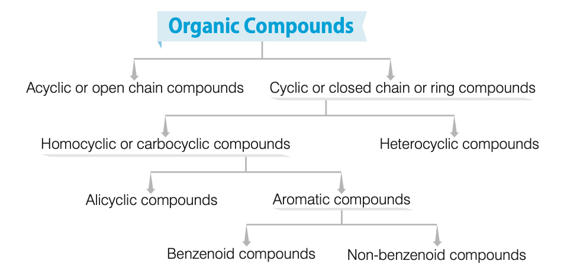
- Acyclic (Open Chain, Aliphatic)
-
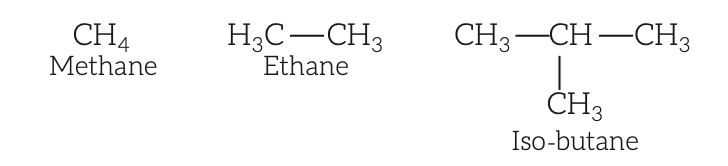
- Straight/branched chains (e.g., \( CH_4 \) (methane), \( C_2H_6 \) (ethane), \( CH_3CH(CH_3)CH_3 \) (isobutane)).
- \( CH_4 \):
- Simplest aliphatic compound.
- Cyclic (Closed Chain)
- Homocyclic (Carbocyclic)
- Alicyclic:
-
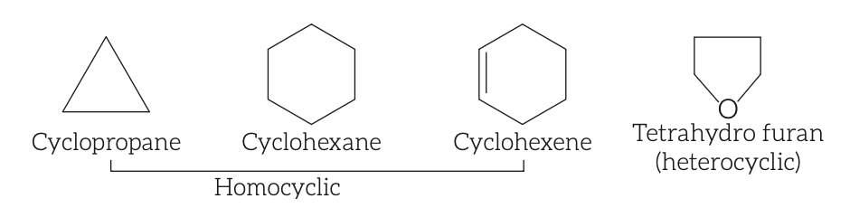
- Carbon ring, resemble acyclic (e.g., cyclopropane (\( C_3H_6 \)), cyclohexane, cyclohexene).
- Aromatic
-
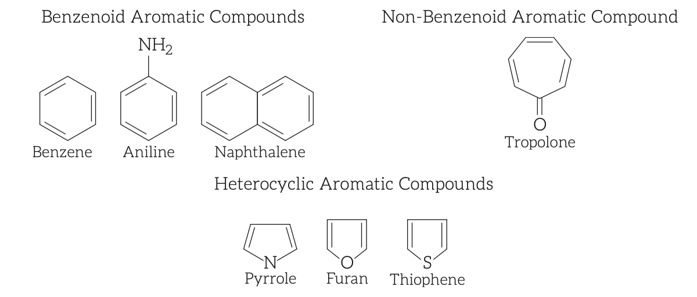
- Benzenoid:
- Contain benzene ring (e.g., benzene (\( C_6H_6 \)), aniline (\( C_6H_5NH_2 \)), naphthalene).
- Non-benzenoid:
- Aromatic without benzene (e.g., tropolone).
- Heterocyclic:
- Non-carbon atoms in ring (e.g., tetrahydrofuran, pyrrole, furan, thiophene).
- Note:
- Benzene (\( C_6H_6 \)) simplest aromatic compound.
- Functional Group
- Atom/group responsible for characteristic chemical properties.
-
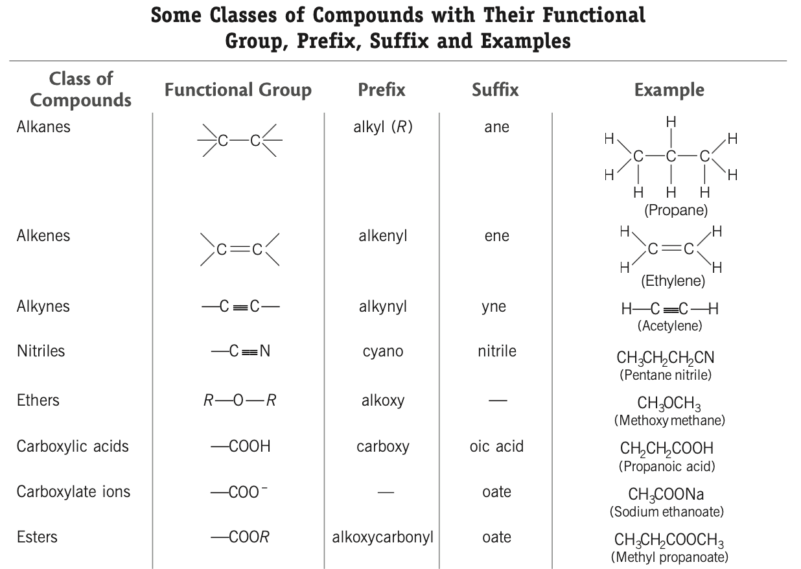
-
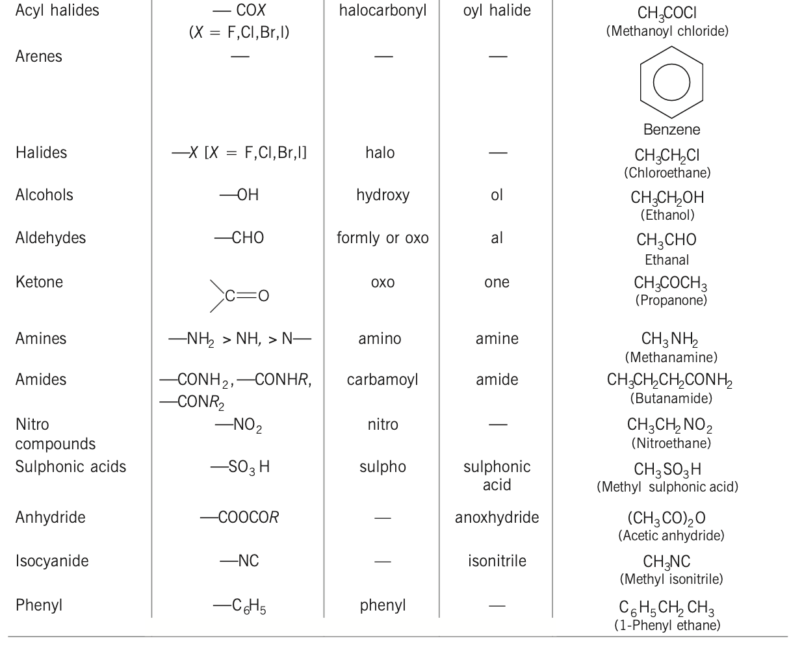
- Homologous Series
- Series with same functional group substituting hydrogen in carbon chain.
- Examples:
- Alkanes (\( CH_4, C_2H_6, C_3H_8, C_4H_{10} \)), alcohols (\( CH_3OH, C_2H_5OH, C_3H_7OH, C_4H_9OH, C_5H_{11}OH \)).
- Characteristics
- Same general formula (e.g., alcohols: \( C_nH_{2n+1}OH \)).
- Successive members differ by \( -CH_2 \) (14 u molecular weight).
- Prepared by same methods.
- Gradation in physical properties (e.g., melting/boiling point, density) with increasing molecular mass.
- Similar chemical properties due to same functional group.
- Isomerism
- Compounds with same molecular formula, different structures/properties.
- Types
- Structural Isomerism:
-
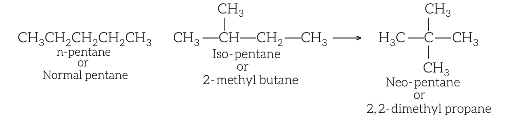
- Different structures (e.g., n-pentane, iso-pentane, neo-pentane (\( C_5H_{12} \))).
- Subtypes:
- Chain, position, functional group, metamerism.
- Stereoisomerism:
- Different spatial arrangement.
- Subtypes:
-Geometrical, optical.
- Hydrocarbons
- Compounds of \( C \) and \( H \), sourced from petroleum.
- Types
- Saturated Hydrocarbons
- Single \( C-C \) and \( C-H \) bonds.
- Alkanes (Paraffins)
- General formula:
- \( C_nH_{2n+2} \).
- Chemically inert (Latin: parum = little, affinis = affinity).
- Examples:
- \( CH_4 \) (methane), \( C_2H_6 \) (ethane), \( C_3H_8 \) (propane), \( C_4H_{10} \) (butane), \( C_5H_{12} \) (pentane), \( C_6H_{14} \) (hexane), \( C_7H_{16} \) (heptane).
- Methane (\( CH_4 \), Marsh Gas)
- From septic tanks, marshy lands, vegetable decomposition.
- Lab:
- Sodium acetate + sodalime.
- Commercial:
- Aluminium carbide + water.
- Properties:
- Tetrahedral (109°28'), black, explosive with air (coal mine explosions).
- Uses:
- Fuel, methyl alcohol, chloroform, carbon black, \( H_2 \), motor tyres.
- Cycloalkanes
- Carbon ring, general formula: \( C_nH_{2n} \).
- Example:
- Cyclopropane (\( C_3H_6 \)).
- Note:
- Single \( C-C \) bond length > double/triple bonds.
- Unsaturated Hydrocarbons
- Contain \( C=C \) or \( C≡C \).
- Alkenes (Olefins)
- At least one \( C=C \), general formula: \( C_nH_{2n} \).
- Ethylene (\( C_2H_4 \))
- Preparation: Ethanol + conc. \( H_2SO_4 \) at 170°C.
- Uses:
- Mustard gas, fruit ripening, oxyethylene flame, fruit preservation, anaesthesia, dry cleaning (trichloroethylene).
- Butene (\( CH_3CH_2CH=CH_2 \)):
- LPG constituent, fuel.
- Alkynes (Acetylenic)
- At least one \( C≡C \), general formula:
- \( C_nH_{2n-2} \).
- Acetylene (\( C_2H_2 \))
- Discovered by Wilson.
- Preparation:
- Calcium carbide + water.
- Properties:
- Acidic (reacts with \( AgNO_3 \)).
- Uses:
- Benzene synthesis, oxy-acetylene welding/cutting (3200°C), plastics, camphor, neoprene, anaesthesia.
- Aromatic Hydrocarbons (Arenes)
- Contain benzene ring, pleasant odour, general formula: \( C_nH_{2n-6} \).
- Examples:
- Benzene (\( C_6H_6 \)), toluene (\( C_6H_5CH_3 \)), naphthalene, anthracene.
- Benzene
- Isolated by Faraday (1825) from whale oil pyrolysis gas.
- Hofmann:
- From coaltar distillation.
- Berthelot:
- Synthesized from acetylene in red-hot tube.
- Uses:
- Organic compounds, explosives, dry cleaning, solvent, fuel (with petrol).
- Toluene
- From tolu balsam.
- Uses:
- TNT, antifreeze, solvent, chloramine-T, saccharin, dye leaving.
- Organic Compounds with \( C, H, O \)
- Alcohols
- \( -OH \) replaces \( H \) in aliphatic hydrocarbon, general formula: \( C_nH_{2n+1}OH \).
- Types:
- Monohydric (methanol, ethanol), dihydric (glycol), trihydric (glycerol), polyhydric.
- Test:
- Esterification (pleasant smell with carboxylic acid).
- Methyl Alcohol (Methanol, \( CH_3OH \))
- From wood distillation (wood spirit), formaldehyde + \( NaOH/KOH \).
- Properties:
- Colourless, poisonous, wine-like odour; causes blindness (affects optic nerve), death in large amounts.
- Uses:
- Solvent (paints, varnishes), artificial colours, formaldehyde, denatured alcohol, fuel (with petrol).
- Ethyl Alcohol (Ethanol, \( C_2H_5OH \))
- Preparation:
- Fermentation of molasses/starch, ethene + steam + \( H_3PO_4 \).
- Properties:
- Colourless, volatile; large intake slows metabolism, impairs judgement, coordination.
- Uses:
- Solvent (varnishes, paints), transparent soaps, perfumes, iodine tincture, polish, wine, fuel (spirit lamps), wound cleaning.
- Notes:
- Apple flavour from ethanol; alcohol test uses \( Na_2Cr_2O_7 \) (orange to green).
- Ethylene Glycol (\( (CH_2OH)_2 \))
- Dihydric, sweet taste.
- Uses:
- Antifreeze in car radiators.
- Glycerol (Glycerine, \( CH_2OHCHOHCH_2OH \))
- Hygroscopic, trihydric.
- Uses:
- Explosives (trinitroglycerine, dynamite), stamp ink, boot polish, medicines, cosmetics, lubricants, antifreeze, wine, soaps, watch cleaning, fruit preservation.
- Found in fats, vegetable oils (esters), fermented sugar, human blood.
- Phenols (\( C_6H_5OH \))
- \( -OH \) on aromatic hydrocarbon.
- Simplest:
- Phenol (carbolic acid, Runge 1834).
- Test:
- Ferric chloride.
- Uses:
- Salol, bakelite, phenolphthalein, aspirin, salicylic acid, phenyl (germicide), explosives (picric acid).
- Ethers
- Alkoxy/aryloxy (\( R-O-R, Ar-O \)) replaces \( H \), general formula: \( C_nH_{2n+2}O \).
- Diethyl Ether (\( C_2H_5OC_2H_5 \))
- Preparation:
- Ethanol + conc. \( H_2SO_4 \) at 140°C, Williamson synthesis.
- Uses:
- Anaesthesia (safer than chloroform).
- Aldehydes
- Contain \( -CHO \), general formula:
- \( C_nH_{2n}O \).
- Tests:
- Tollen’s reagent, Fehling’s solution, Schiff’s reagent.
- Formaldehyde (\( HCHO \))
- Uses:
- Tissue fixative, embalming, disinfectant; 40% solution (formalin) preserves biological specimens.
- Ketones
- Contain \( C=O \), general formula: \( C_nH_{2n}O \).
- Acetone (\( CH_3COCH_3 \))
- Uses:
- Industrial solvent, cosmetics, artificial silk, synthetic rubber, nail polish remover, medicines.
- Note:
- Acetone-free nail polish removers use ethyl/butyl acetate.
- Carboxylic Acids
- Contain \( -COOH \), general formula: \( C_nH_{2n}O_2 \).
- Formic Acid (\( HCOOH \))
- From red ants distillation (Latin: formicus).
- Uses:
- Rubber, leather, textile, dyeing, electroplating, arthritis medicines, insecticide, fruit juice preservative.
- Acetic Acid (\( CH_3COOH \))
- From pyroligneous acid.
- Uses:
- Lab reagent, solvent, vinegar (4-6% solution), photographic film, rayon (cellulose acetate), sauces, jelly.
- Oxalic Acid (\( C_2H_2O_4 \))
- In plants (oxalis, rumex) as potassium-hydrogen salt, human urine (calcium oxalate, kidney stones).
- Uses:
- Metallurgy, cloth colouration/printing, ink spot cleaning (10% solution), leather bleaching, photography (ferrous oxalate).
- Lactic Acid (\( CH_3CH(OH)COOH \))
- Monohydroxy, in milk (sour taste), muscles (causes fatigue).
- Uses:
- Yogurt, detergents, pharmaceuticals, cosmetics.
- Salicylic Acid (\( C_6H_5(OH)COOH \))
- White crystalline, aromatic.
- Uses:
- Painkillers, skin ointments.
- Citric Acid
- Monohydroxy tricarboxylic, in citrus fruits (lemon, orange).
- Esters
- Contain \( -COOR \), fruity smell, general formula: \( C_nH_{2n}O_2 \).
- Examples:
- Methyl formate (\( HCOOCH_3 \)), methyl acetate (\( CH_3COOCH_3 \)), ethyl acetate (\( C_2H_5COOCH_3 \)).
- Uses:
- Artificial perfumes, scented colours, dyes.
- Alcoholic Beverages
- Contain ethanol, from fermentation of grapes, maize, sugarcane.
- Enzyme:
- Zymase (yeast) converts glucose to ethanol.
- Types
- Distilled (40-55% alcohol)
-
| Beverage | Alcohol % | Source |
|---|
| Brandy | 40-50 | Grapes |
| Gin | 35-40 | Maize |
| Rum | 45-55 | Sugarcane |
| Vodka | 30-40 | Corn, wheat |
| Whisky | 40-50 | Molasses |
- Undistilled (3-15% alcohol)
-
| Beverage | Alcohol % | Source |
|---|
| Beer | 4-6 | Barley |
| Cider | 2-6 | Apples |
| Champagne | 10-15 | Grapes |
| Port/Sherry | 15-25 | Grapes |
- Terms
- Denatured Alcohol:
- Ethanol + pyridine, acetone, methanol (poisonous, unfit for drinking).
- Grain Alcohol:
- Ethanol from starch fermentation.
- Absolute Alcohol:
- Pure ethanol, volatile, colourless.
- Power Alcohol:
- Ethanol + benzene + petrol for engines.
- Rectified Spirit:
- 95.6% ethanol, 4.4% \( H_2O \), from repeated distillation.
- Wood Spirit:
- Methanol from wood distillation.
- Other Organic Compounds
- Chloroform (\( CHCl_3 \))
- Discovered by Liebig (1831).
- Properties:
- Oxidizes in air to phosgene (\( COCl_2 \)), stored in dark, filled bottles.
- Uses:
- Anaesthesia (first by Simpson), solvent (fats, alkaloids, iodine, rubber), insecticide, freon R-22 production.
- Iodoform (\( CHI_3 \))
- Yellow, crystalline, specific odour.
- Preparation:
- Iodine + \( NaOH \) + ethanol (haloform reaction).
- Properties:
- Insoluble in water, soluble in alcohol/ether, bactericidal (due to free iodine).
- Uses:
- Antiseptic (historical).
- Chlorofluorocarbons (CFCs, Freons)
- Stable, non-toxic, non-corrosive, easily liquefied.
- Uses:
- Refrigeration, air conditioning, aerosol propellants.
- Note:
- Cause ozone layer depletion.
- Carbon Tetrachloride (\( CCl_4 \))
- Uses:
- Refrigerants, aerosol propellants, dry cleaning, spot remover, fire extinguisher (pyrin, electric fires).
- Aniline (\( C_6H_5NH_2 \))
- From indigo (1826, Unverdorben; coaltar, Runge; alkali + indigo, Fritsche).
- Uses:
- Sulphonilic acid, nitroaniline, explosives, drugs, coloured dyes, zwitter ion, rubber industry.
- Methyl Isocyanate (\( CH_3NC \))
- Uses:
- Rubbers, adhesives, pesticides.
- Note:
- Bhopal gas tragedy (1984, Union Carbide).
- Gammexane (Benzene Hexachloride, BHC, Lindane)
- Uses:
- Insecticide (mosquitoes, lice), pharmaceuticals.
- Formamint
- Uses:
- Throat medicines (chewing tablets).
- Nitrobenzene (\( C_6H_5NO_2 \))
- From Mitscherlich (1834).
- Uses:
- TNB (explosive), soaps, polishes, cheap perfumes.
- Naphthalene (\( C_{10}H_8 \))
- From coaltar.
- Uses:
- Germicide, moth repellent.
- Tear Gas
- Examples:
- Alpha-chloroacetophenone, acrolein, carbonyl chloride, chloropicrin (\( CHCl_3 + HNO_3 \)).
- Uses:
- Crowd control (causes eye burning, tears).
- Lewisite
- Poisonous gas, from acetylene + \( AsCl_3 \) + anhydrous \( AlCl_3 \).
- Used in WW2.
- Paraldehyde
- From anhydrous acetaldehyde + conc. \( H_2SO_4 \).
- Uses:
- Sleeping drug.
- Urotropine (Hexamethylene tetramine)
- From \( HCHO + NH_3 \).
- Uses:
- Urological medicines.
- Mustard Gas
- From sulphur monochloride + ethylene, mustard oil smell.
- Effects:
- Blisters skin, damages lungs, penetrates rubber.
- Used in WW1.
- Chloretone
- From acetone + \( CHCl_3 \) + \( KOH \).
- Uses:
- Drugs for vomiting, headache (mountain/sea expeditions).
- Acetamide (\( CH_3CONH_2 \))
- Uses:
- Moistening pulp/paper, softening leather.
- Chlorobenzene (\( C_6H_5Cl \))
- From benzene + chlorine + Fe catalyst.
- Uses:
- Phenol, aniline production.
- Dichloromethane (\( CH_2Cl_2 \))
- Uses:
- Paint remover, aerosol propellant, metal cleaning.
- DDT (Dichloro Diphenyl Trichloroethane)
- Uses:
- Insecticide (mosquitoes, lice), industrial applications.
- Benzene Sulphonic Acid (\( C_6H_5SO_3H \))
- Uses:
- Sulpha drugs, saccharin.
- Urea (\( NH_2CONH_2 \))
- First lab-synthesized organic compound (1773, from urine).
- Properties:
- Colourless, odourless, water-soluble, 46% \( N \).
- Uses:
- Fertilizer, baronial medicines, formaldehyde-urea, plastics.
- Chloral (\( CCl_3CHO \))
- From chlorine + acetaldehyde.
- Uses:
- DDT production.
- Miscellaneous
- Nicotine:
- Alkaloid in tobacco, causes cancer.
- Tea:
- Stimulates nervous/muscular system, causes indigestion, stomach burns.
- Coffee:
- Aids digestion post-meal.
- Bagasse:
- Residue from sugarcane/sugarbeet juice extraction.
- Henna (Lawsonia inermis):
- Dyes skin, hair, nails, leather, wood due to lawsone (binds proteins/amino acids).
- Food Chemistry
- Overview
- Living systems:
- Composed of complex biomolecules (carbohydrates, proteins, nucleic acids, lipids).
- Carbohydrates, proteins:
- Essential food constituents, interact to form molecular logic of life processes.
- Carbohydrates
- Definition
- Old:
- \( C, H, O \) in 1:2:1 ratio (not always true).
- Modern:
- Optically active polyhydroxy aldehydes/ketones or compounds yielding these on hydrolysis.
- General formula:
- \( C_x(H_2O)_y \) (e.g., glucose (\( C_6H_{12}O_6 \)), fructose, sucrose).
- Produced by plants, major group of organic compounds.
- Sources:
- Cereals (wheat, maize, rice, corn, rye, oat, barley), potato, turnip, beetroot, banana.
- Classification
- Based on Hydrolysis
- Monosaccharides:
- Simplest, non-hydrolysable (e.g., triose (glyceraldehyde), tetrose (erythrose), pentose (ribose), hexose (glucose, fructose)).
- Oligosaccharides:
- Yield 2–10 monosaccharides (e.g., disaccharides: sucrose (glucose + fructose), maltose (2 glucose), lactose (galactose + glucose)).
- Polysaccharides:
- Yield many monosaccharides via glycosidic linkages (e.g., starch, cellulose, gums, glycogen), usually water-insoluble.
- Based on Physical Properties
- Sugars:
- Sweet (e.g., sucrose, lactose (milk sugar)).
- Non-sugars:
- Not sweet (e.g., polysaccharides like starch, cellulose).
- Based on Reducing Properties
- Reducing:
- Reduce Tollen’s reagent (silver mirror), Fehling’s solution (red precipitate); includes all monosaccharides, most disaccharides (except sucrose).
- Non-reducing:
- Do not reduce Tollen’s/Fehling’s (e.g., sucrose, higher saccharides).
- Common Carbohydrates
- Glucose (\( C_6H_{12}O_6 \), Dextrose)
- Sources:
- Sweet fruits, ripe grapes, honey.
- Preparation:
- Starch hydrolysis.
- Properties:
- Main energy sugar, blood concentration 70–115 mg/100 mL, used for silvering mirrors.
- Uses:
- Instant energy source.
- Fructose (\( C_6H_{12}O_6 \), Fruit Sugar, Laevulose)
- Sources:
- Honey, fruits, high fructose corn syrup.
- Properties:
- Sweeter than sucrose.
- Uses:
- Medicinal syrups, toffees.
- Sucrose (\( C_{12}H_{22}O_{11} \), Cane Sugar)
- Source:
- Sugarcane.
- Properties:
- Hydrolysis yields glucose + fructose (invert sugar).
- Uses:
- Preservative in jams, jarred foods.
- Maltose (\( C_{12}H_{22}O_{11} \), Malt Sugar)
- Composition:
- 2 glucose units.
- Uses:
- Alcohol production.
- Lactose (\( C_{12}H_{22}O_{11} \), Milk Sugar)
- Sources:
- Cow’s milk (4–6%), human milk (5–8%).
- Composition:
- Galactose + glucose.
- Starch (\( (C_6H_{10}O_5)_n \))
- Sources:
- Cereals, roots, tubers, vegetables.
- Composition:
- Amylose (water-soluble), amylopectin (water-insoluble), polymer of glucose.
- Properties:
- Gives blue-violet color with \( I_2 \), digested to maltose then glucose.
- Uses:
- Plant food reserve.
- Cellulose (\( (C_6H_{10}O_5)_n \))
- Source:
- Plant cell walls.
- Properties:
- Straight-chain glucose polysaccharide, indigestible by humans (lacks cellulase, present in ruminants/termites).
- Uses:
- Shatterproof glass, cotton wool (from cotton plant).
- Glycogen (Animal Starch)
- Storage:
- Liver, muscles, brain.
- Properties:
- Broken into glucose for energy.
- Notes
- Galactose:
- Rare in nature, forms lactose with glucose.
- Gums:
- Acidic polysaccharides, multiple monosaccharides.
- Importance
- Energy source via oxidation, form nucleic acids.
- Storage:
- Starch (plants), glycogen (animals).
- Structural:
- Cellulose in wood (furniture), cotton fibres (clothes).
- Industrial:
- Raw materials for textiles, lacquers, beverages.
- Proteins
- Definition
- Nitrogenous (\( C, H, O, N \)), polymers of α-amino acids linked by peptide bonds.
- Term:
- From "proteios" (prime importance, Muller 1838).
- Composition:
- ~15% body mass, essential for nourishment.
- Sources:
- Meat, egg (richest).
- 20 amino acids code for protein synthesis in animals.
- Classification
- Based on Composition
- Fibrous:
- Structural, parallel polypeptide chains, hydrogen/disulfide bonds (e.g., keratin, fibroin, collagen, myosin (muscles)).
- Globular:
- Regulate life cycle, coiled spherical molecules (e.g., enzymes, insulin, albumins).
- Based on Components
- Simple:
- Only amino acids (e.g., collagen, albumins, globules).
- Conjugated:
- Protein + non-protein (prosthetic group) (e.g., haemoglobin, casein, nucleoprotein, glycoprotein, phosphoprotein).
- Derived:
- From partial protein breakdown (e.g., peptones, insulin, fibrin).
- Functions
- Enzymes in plants/animals.
- Components of hair, muscle, skin.
- Hormones (e.g., insulin, vasopressin).
- Transport \( O_2 \), fats, metabolic substances.
- Cell/protoplasm synthesis, tissue culturing.
- Emergency energy (when carbohydrates/fats unavailable).
- Genetic/hereditary control.
- Denaturation
- Loss of biological activity due to temperature/pH changes.
- Example:
- Egg coagulation on boiling.
- Notes
- Insulin:
- 51 amino acids, regulates blood sugar.
- Haemoglobin:
- 574 amino acids, carries \( O_2 \).
- Types:
- Transportable (micronutrients), contractile (muscle movement), structural (cells/tissues), defensive (antibodies).
- Fats and Oils
- Definition
- Triglycerides: Esters of glycerol with fatty acids (e.g., palmitic (\( C_{15}H_{31}COOH \)), stearic (\( C_{17}H_{35}COOH \)), oleic (\( C_{17}H_{33}COOH \))).
- Fats:
- Saturated esters, solid at room temp, melting point >20°C.
- Oils:
- Unsaturated esters, liquid, melting point <20°C.
- Composition:
- \( C, H, O \) (less \( O \) than carbohydrates).
- Properties:
- Insoluble in water, soluble in organic solvents (benzene, \( CCl_4 \), petroleum).
- Energy:
- 9 kcal/g (vs. 4.2 kcal/g for carbohydrates).
- Types
- Animal Fats:
- Saturated, solid (e.g., milk, butter, meat, cheese, egg, fish).
- Vegetative Fats:
- Unsaturated (trans), liquid (e.g., nut, coconut, almond, mustard, sunflower).
- Functions
- Stored energy source.
- Resistive layer under skin.
- Shock-resistant layer protecting organs.
- Notes
- Phospholipids:
- Phosphorus-containing fats.
- Iodine value:
- Measures unsaturation.
- Castor oil:
- From castor bean, high protein, pale yellow.
- Waxes
- Definition
- Natural:
- Esters of fatty acids + long-chain alcohols.
- Synthetic:
- Long-chain hydrocarbons from petroleum.
- Properties:
- Insoluble in water, soluble in organic solvents.
- Types
- Animal:
- Beeswax (myricyl palmitate), carnauba wax (myricyl cerotate, palm leaf), spermaceti wax (cetyl palmitate, whale sperm).
- Plant, petroleum-derived, montan waxes.
- Uses:
- Candles, coatings, cosmetics.
- Vitamins
- Definition
- Organic compounds, small amounts needed, regulate metabolism, not energy sources.
- Deficiency:
- Causes specific diseases; excess harmful (consult doctor for pills).
- Types
- Fat-Soluble:
- A, D, E, K (stored in liver, fat tissues).
- Water-Soluble:
- B group, C (excreted in urine, except \( B_{12} \)).
- Fat-Soluble Vitamins
-
| Name | Sources | Functions | Deficiency | Other Info |
|---|
| Vitamin A (Retinol) | Carrot, tomato, papaya, mango, milk, eggs, cod-liver oil | Vision, growth, epithelial tissue differentiation | Night blindness, xerophthalmia, abnormal epithelial growth | Discovered by McCollum (1913), Karrer Nobel Prize (1937) |
| Vitamin D (Calciferol) | Cod liver oil, skin (sunlight) | Calcium absorption, bone deposition | Rickets (children), osteomalacia (adults) | Only vitamin synthesized in body, hormone-like |
| Vitamin E (Tocopherol) | Wheat germ, green leafy vegetables, vegetable fats | Antioxidant, reproduction, muscle/RBC maintenance | Reproductive failure, muscular dystrophy, macrocytic anaemia | Vitamin of reproduction, discovered by Evans/Bishop (1922) |
| Vitamin K (K1, K2, K3) | Leafy vegetables, wheat germ, gut bacteria | Blood clotting, prevents excessive bleeding | Faulty clotting | K1 (Dam), K2 (Doisy) Nobel Prize (1943) |
- Water-Soluble Vitamins
-
| Name | Sources | Functions | Deficiency | Other Info |
|---|
| Vitamin B1 (Thiamine) | Whole grain, wheat germ, legumes, nuts, fish, pulses | Tissue repair/growth, tryptophan to niacin, TPP in TCA cycle | Beri-beri, Wernicke’s/Korsakoff’s syndromes | Alcohol interferes, discovered by Eijkman (1897) |
| Vitamin B2 (Riboflavin) | Milk, cheese, meats, eggs, legumes, mushrooms, greens | RBC production, FMN/FAD in ETC/TCA | Cheilosis, skin cracks, red eyes, tongue cracks | Yellow enzyme |
| Vitamin B3 (Niacin) | Nuts, legumes, yeast, liver, fish, meat, poultry | NAD/NADP in TCA cycle | Pellagra, Hartnup disease | Isolated by Elvehjem (1937) |
| Vitamin B5 (Pantothenic acid) | Yeast, milk, groundnut, tomatoes, liver, meat, honey, egg yolk | Co-enzyme A in TCA, skin/hair health | Dermatitis, hair loss, greying | Identified by Williams (1933) |
| Vitamin B6 (Pyridoxine) | Cereals, peanuts, banana, soyabean, meat, vegetables | Protein metabolism | Dermatitis, anaemia, convulsions, nausea | Discovered by Szent-Györgyi (1934) |
| Vitamin B7 (Biotin) | Egg yolk, milk, nuts, honey, liver, meat, fish | Carbohydrate/protein/fat metabolism | Poor growth, muscle control loss, hair fall | Discovered by Kogl/Tonnis (1936), avidin in egg white blocks absorption |
| Vitamin B9 (Folic acid) | Green leafy vegetables | RBC formation, appetite | Megaloblastic anaemia | Discovered by Lucy Wills (1934) |
| Vitamin B12 (Cyanocobalamin) | Spirulina, liver, meat, fish, eggs, milk | RBC/DNA synthesis, neurological function | Pernicious anaemia | Contains cobalt, Hodgkin Nobel Prize (1964) |
| Vitamin B17 (Laetrile) | Wheat, grass, juice | Anti-cancer | - | - |
| Vitamin C (Ascorbic acid) | Citrus fruits, amla, guava, tomato | RBC/antibody formation, bones/teeth/gums, antioxidant | Scurvy | Discovered by James Lind (1753) |
| Vitamin P (Hesperidin, Citrin) | Citrus fruits, green vegetables | Blood vessel wall maintenance | - | - |
- Notes
- \( B_1, B_5, B_6, B_{12}, C \): Destroyed by heat.
- Vitamin C:
- Absent in animal-derived foods.
- Enzymes
- Definition
- Complex nitrogenous proteins, high molecular mass, produced by plants/animals.
- Biochemical catalysts for life processes.
- Examples and Uses
-
| Enzyme | Uses |
|---|
| Zymase | Ethanol from glucose |
| Diastase | Maltose from starch |
| Mycodrumi aciti | Vinegar from sugar beet |
| Invertase | Glucose + fructose from sugarcane |
| Lacto bacillus | Lactic acid from milk |
| Pepsin | Protein to amino acids (stomach) |
| Erepsin | Protein to amino acids (intestines) |
| Trypsin | Protein to amino acids (pancreas) |
| Ptylin | Starch to glucose (saliva) |
| Carbonic anhydrase | \( H_2CO_3 \) to \( H_2O + CO_2 \) |
| Nucleases | RNA/DNA to nucleotides |
| Amylase | Starch to α-glucose |
| Urease | Urea to \( CO_2 + H_2O \) |
| α-amylase | Sweet syrup from corn starch |
| Rennin | Digestion of mother’s milk in young mammals |
- Characteristics
- Highly efficient, specific (e.g., urease hydrolyzes only urea).
- Optimal temperature:
- 298–310 K; activity decreases outside range.
- Optimal pH:
- 5–7.
- Enhanced by co-enzymes, metal ions (e.g., \( Na^+ \) with amylase).
- Inhibited by poisons/inhibitors.
- Notes
- Most enzymes are proteins (except few).
- Faster than metal-catalyzed reactions.
- Deficiencies:
- Phenyl ketone urea disease (phenylalanine hydroxylase), albinism (tyrosinase).
- Streptokinase:
- Dissolves blood clots, treats heart diseases.
- Food Preservatives
- Prevent microbial spoilage.
- Examples:
- Table salt, sugar, vegetable oils, sodium metabisulphite, sodium benzoate, sorbic acid salts, propanoic acid salts.
- Note:
- Refrigeration slows biochemical reactions, reduces microbial activity.
- Artificial Sweetening Agents
- Used by diabetics to avoid calorie-heavy sucrose.
- Examples
- Saccharin:
- Ortho-sulphobenzimide, 550x sweeter than sugar, inert, excreted unchanged.
- Aspartame:
- 100x sweeter, unstable at cooking temperature, used in cold foods/drinks.
- Alitame:
- 2000x sweeter than sugar.
- Sucrolose:
- Trichloro-sucrose, sugar-like, stable at cooking temperature.
- Food Poisoning
- Caused by microbial toxins in food, leading to illness/death.
- Note:
- Deep-fried foods (hydrocarbon-rich) are carcinogenic.
- Antioxidants
- Prevent oxidation of unsaturated fats/oils, extend shelf life.
- Examples:
- BHA, BHT, gallic acid esters, lecithin.
- Natural Sources
-
| Antioxidant | Sources |
|---|
| Vitamin C | Fruits, vegetables |
| Vitamin E | Vegetable oils |
| Carotenoids | Fruits, vegetables |
| Polyphenolic antioxidants | Tea, coffee, soybean, chocolate |
- Notes
- \( SO_2 \), sulphites:
- Antioxidants for beverages, sugar syrups, peeled fruits.
- Fresh fruits/vegetables:
- Neutralize free radicals, promote health/longevity.
- Chemistry in Everyday Life
- Overview
- Chemistry impacts daily life through materials like clothes, toothpaste, oil, soaps, combs, paints, varnishes, drugs, dyes, glass, cement.
- Soaps and Detergents
- Role:
- Cleansing agents, remove fats binding materials to fabric/skin.
- Soaps
- Definition:
- Sodium/potassium salts of higher fatty acids (e.g., stearic (\( C_{17}H_{35}COOH \)), oleic (\( C_{17}H_{33}COOH \)), palmitic (\( C_{15}H_{31}COOH \))).
- Source:
- Petroleum products, biodegradable.
- Manufacture:
- Saponification (fats + \( NaOH \), heat → soap + glycerol).
- \( NaCl \) added to precipitate soap.
- Only sodium/potassium soaps water-soluble, used for cleansing.
- Types
- Toilet:
- High-grade fats/oils, no excess alkali, added color/perfumes.
- Floating:
- Air bubbles beaten in before hardening.
- Transparent:
- Dissolved in ethanol, excess solvent evaporated.
- Medicated:
- Contains medicinal substances (e.g., Dettol).
- Shaving:
- Glycerol (prevents drying), sodium rosinate (lathering).
- Laundry:
- Fillers (sodium rosinate, silicate, borax, carbonate).
- Soap Powders/Scouring:
- Soap + scouring agent (pumice/sand) + builders (sodium carbonate, trisodium phosphate).
- Soap Granules:
- Dried miniature soap bubbles.
- Characteristics of Good Soap
- No free alkali, ≤10% moisture, soluble in alcohol, no cracking.
- Limitations:
- Ineffective in hard water (forms insoluble Ca/Mg soap scum), hydrolyzed in acidic medium to fatty acids, losing cleansing effect.
- Detergents
- Definition:
- Alkyl sulphate/sulphonate or ammonium salts of long-chain fatty acids (12–18 carbons, e.g., sodium lauryl sulphate, sodium p-dodecylbenzenesulphonate).
- Advantages:
- Work in soft/hard water (soluble Ca/Mg salts), effective in acidic medium, stronger cleansing than soaps.
- Classification
- Anionic:
- Sodium salts of sulphonated alcohols/hydrocarbons (e.g., sodium lauryl sulphate), used in household/toothpastes.
- Cationic:
- Quaternary ammonium salts (e.g., cetyltrimethylammonium bromide), germicidal, used in hair conditioners.
- Non-ionic:
- No ions (e.g., pentaerythritol monostearate), used in liquid dishwashing detergents.
- Additives:
- Sodium sulphate/silicate keep washing powder dry, maintain alkalinity.
- Disadvantage:
- Highly branched detergents non-biodegradable, cause water pollution; biodegradable straight-chain detergents preferred.
- Dyes
- Definition:
- Colored substances for permanent color on fabrics/foodstuffs, chromophores (e.g., nitro, azo) absorb/reflect light.
- Classification
- By Constitution
- Azo:
- Methyl orange, congo red.
- Phthalein:
- Phenolphthalein, mercurochrome.
- Indigoid:
- Indigo, tyrian purple.
- Anthraquinone:
- Alizarin (natural).
- Triphenyl
- Methane: Malachite green.
- By Application
- Acid:
- Sodium salts, dye wool/silk/nylon (e.g., methyl orange, congo red).
- Basic:
- Dye modified nylons/polyesters (e.g., aniline yellow, malachite green).
- Direct:
- Applied from aqueous solutions (e.g., martius yellow, congo red).
- Disperse:
- Applied as dispersion (e.g., celliton fast pink B).
- Fibre
- Reactive: Chemically bond to fibre (e.g., procion cibacron).
- Vat:
- For cotton (e.g., indigo).
- Mordant:
- Require binding agent, color varies (e.g., alizarin: red with Al, blue with Ba).
- Polymers
- Definition:
- Many repeating units (monomers), from Greek "poly" (many), "mer" (part).
- Polymerisation
- Process:
- Monomers form polymers under specific conditions.
- Example:
- \( 3C_2H_2 \rightarrow C_6H_6 \) (acetylene to benzene in hot copper pipe).
- Types
- Addition:
- No loss of small molecules, polymer molecular weight = monomer multiple (e.g., PVC, polythene, polystyrene, rubber), reversible.
- Condensation:
- Eliminates small molecules (e.g., \( H_2O, NH_3 \)), non-multiple molecular weight (e.g., terylene, nylon).
- Plastics
- Definition:
- High molecular mass organic polymers, moldable during preparation.
- Types
- Natural:
- From plant materials (e.g., starch, cellulose, eucalyptus).
- Synthetic
- Thermoplastics:
- Soften on heating, harden on cooling (e.g., polythene, polystyrene, teflon, PVC).
-
| Thermoplastic | Monomer | Uses |
|---|
| Polythene | Ethene (\( CH_2=CH_2 \)) | Toys, bottles, polybags, pipes, dustbins |
| Teflon | Tetrafluoroethene (\( CF_2=CF_2 \)) | Oil seals, gaskets, non-stick utensils |
| Polystyrene | Styrene (\( C_6H_5-CH=CH_2 \)) | Insulator, toys, radio/TV cabinets, combs |
| PVC | Vinyl chloride (\( CH_2=CHCl \)) | Raincoats, dish antennas, handbags, pipes |
| Polypropene | Propene (\( CH_3-CH=CH_2 \)) | Toys, pipes, ropes, fibres |
| Lucite | Methyl methacrylate (\( H_2C=C(CH_3)COOCH_3 \)) | Contact lenses |
- Thermosetting:
- Rigid, cannot soften after molding (e.g., bakelite (phenol + formaldehyde), melamine (fire-resistant, for tiles, kitchenware)).
- Properties:
- Non-reactive, light, strong, durable, poor conductors of heat/electricity.
- Notes
- Linear (PVC, polythene) or cross-linked (bakelite, melamine) arrangements.
- Plasticizers (high boiling esters/haloalkanes) soften plastics.
- Polycarbonates (e.g., polyurethane, kevlar): Bulletproof glass, fridge containers, mixi jars, baby bottles.
- Special plastic cookware for microwaves unaffected by heat.
- Rubber
- Definition:
- Elastic polymer from rubber latex (colloidal rubber in water, from equatorial trees).
- Origin:
- Amazon, Zaire forests (wild rubber), later Malaya, South-East Asia.
- Types
- Natural:
- From rubber tree latex, monomer is isoprene (\( CH_2=C(CH_3)-CH=CH_2 \)).
- Synthetic
- Neoprene:
- From chloroprene, resistant to oils, used in belts, gaskets, hoses, cables.
- Buna-N:
- From 1,3-butadiene + acrylonitrile, for oil seals, tank linings.
- Thiokol:
- From dichloroethane + polysulphide, used in rocket propellants, solvent tanks, oil pipes.
- Vulcanisation:
- Heating rubber with sulphur (5% for tyres, 30% for battery cases) at 373–415 K, improves resistance/elasticity.
- Notes:
- Buna-S (butadiene styrene) used in bubble gums.
- Fibres
- Definition:
- Long, thread-like structures for fabrics.
- Types
- Natural
- Plant:
- Cellulose-based (e.g., cotton, hemp, jute, flax), used in paper/textiles.
- Animal:
- Protein-based (e.g., silkworm silk, spider silk, wool).
- Semisynthetic:
- Chemically treated natural fibres (e.g., rayon from wood pulp cellulose, treated with \( NaOH \), \( CS_2 \), \( H_2SO_4 \)).
- Synthetic:
- From chemicals (e.g., nylon, polyester, carbon fibre, orlon).
-
| Fibre | Monomers | Uses |
|---|
| Nylon | Hexamethylene diamine (\( NH_2(CH_2)_6NH_2 \)) + adipic acid (\( HOOC(CH_2)_4COOH \)) | Toothbrushes, ropes, parachutes, nets, garments |
| Polyester (Dacron/Terylene) | Ethylene glycol (\( HOCH_2CH_2OH \)) + terephthalic acid | Clothes, fire hoses |
| Carbon Fibres | Carbon | Space vehicle parts, sports items |
| Orlon | Acrylonitrile (\( CH_2=CHCN \)) | Wool substitute, blankets |
- Advantages:
- Synthetic fibres dry quickly, durable, cheap, readily available, easy to maintain.
- Disadvantages:
- Melt on heating, catch fire easily, stick to skin (avoid in kitchens/labs).
- Notes
- Cotton:
- Fire-resistant.
- Silk:
- Protein fibre from mulberry silkworm (Bombyx mori).
- Rexin:
- Artificial leather from cellulose or pyroxylene-coated canvas.
- Polycot (polyester + cotton), polywool (polyester + wool), PET (polyester) for jars, bottles, films, wires.
- Kevlar:
- For bulletproof vests.
- Ceramics
- Raw Material:
- Clay (aluminium silicate), china clay (decomposed feldspar + quartz + mica).
- Uses
- Pottery, tableware, tiles, bricks.
- Refractive bricks for furnace linings.
- Abrasive ceramics (silicon/tungsten carbides) for cutting/grinding tools.
- Superconductors for low temperatures.
- Drugs
- Definition:
- Low molecular mass chemicals, medicines cure diseases with minimal toxicity/addiction, drugs may be habit-forming with side effects.
- Classification
- Antipyretics:
- Reduce fever (e.g., aspirin, crocin, ibuprofen, paracetamol, phenacetin, analgin, novalgin).
- Analgesics:
- Reduce pain without impairing consciousness (e.g., aspirin, paracetamol, morphine (narcotic, from opium poppy)).
- Antibiotics:
- Inhibit/destroy microorganisms.
- Bactericidal:
- Penicillin (from fungus, discovered by Fleming 1928), aminoglycosides, ofloxacin.
- Bacteriostatic:
- Erythromycin, tetracycline (from bacterium), chloramphenicol.
- Broad-spectrum:
- Ampicillin, amoxicillin, chloramphenicol, vancomycin, ofloxacin.
- Narrow-spectrum:
- Penicillin-G.
- Antiseptics:
- Prevent/kill microorganisms, safe for human tissues (e.g., furacine, soframycine, dettol, bithionol, tincture iodine, boric acid, 0.2% phenol).
- Disinfectants:
- For inanimate objects (e.g., phenyl, 1% phenol).
- Sulpha Drugs:
- Contain sulphur/nitrogen (e.g., sulphapyridine, sulphadiazine, sulphaguanidine, sulphathiazole, sulphanilamide (1908)).
- Anaesthetics:
- Cease sensation (e.g., diethyl ether (first used 1846 by Morten), chloroform (by Sampson, replaced by safer ethers), cocaine, diazepam, halothane, nitrous oxide, pentothal sodium).
- Antacids:
- Neutralize stomach acidity (e.g., \( Al(OH)_3, Mg(OH)_2 \)); better than \( NaHCO_3 \).
- Others:
- Cimetidine, ranitidine, omeprazole, lansoprazole (acidity relief); tranquillizers (e.g., barbituric acid derivatives, equanil, valium, serotonin); quinine (anti-malarial from cinchona bark); salvarsan (syphilis treatment, Ehrlich Nobel Prize 1908).
- Cosmetics
- Examples:
- Creams, perfumes, talcum powder, deodorants.
- Chemicals
-
| Cosmetic | Chemicals |
|---|
| Moisturising Cream | Cetyl alcohol, hydroquinone |
| Perfumes | Benzaldehyde, benzyl acetate, camphor, ethanol, linalool, terpineol |
| Nail Enamel Remover | Ethyl/butyl acetate (replacing acetone) |
| Shaving Cream | Benzaldehyde, camphor, ethanol |
| Shampoo | Methylene chloride, ethanol |
| Nail Polish | Toluene |
| Cologne | Methylene chloride, acetone, benzaldehyde |
| Aftershave Lotions | Benzyl acetate |
| Vaseline | Petroleum |
- Glass
- Definition:
- Homogeneous silicate mixture of alkaline metals, non-crystalline, transparent/non-transparent.
- Soda Glass Composition:
- \( Na_2O \cdot CaO \cdot 6SiO_2 \), made from sand (silica), sodium carbonate, calcium carbonate + cullet (scrap glass, flux).
- Types
-
| Type | Properties | Uses |
|---|
| Soda Glass | Brittle, cheapest, contains \( Na_2CO_3, CaCO_3, SiO_2 \) | Windows, bottles, dishes, tubelights |
| Potash Glass | High temperature resistant, contains K/Ca carbonates, silica | Test tubes, beakers |
| Photochromatic | Darkens in UV light (silver chloride) | Eye lenses, goggles |
| Pyrex | Borax + silica, withstands temperature changes | Lab equipment |
| Flint | High refractive index, Na/K/Pb silicates | Camera lenses, prisms, microscopes, bulbs |
| Crown | High refractive index, K/Ba/Si oxides | Optical instruments |
| Jena | Soft, strong, acid/alkali-resistant, Zn/Ba borosilicate | Acid/alkali bottles |
| Crook’s | Absorbs UV (cerium oxide + silica) | Eye lenses |
| Lead Crystal | High refractive index, shows total internal reflection | Ornamental items, costly containers |
| Quartz | Allows UV transmission | UV lamp bulbs, lab equipment |
- Annealing:
- Slow, steady cooling; rapid cooling makes glass brittle, very slow cooling makes it opaque.
- Coloured Glass
-
| Substance | Colour |
|---|
| Carbon | Brownish black |
| Cadmium sulphide | Yellow (lemon) |
| Cobalt oxide | Deep blue |
| Cuprous oxide | Glitter red |
| Cupric oxide | Peacock blue |
| Selenium oxide | Orange red |
| Ferric oxide | Brown |
| Nickel/manganese monoxide | Black |
| Manganese dioxide | Pink |
| Ferric salt/sodium uranate | Fluorescent yellow |
| Potassium dichromate | Green/yellow-green |
| Gold chloride/purple of cassius | Ruby red |
| Sodium chromate/ferrous oxide | Green |
- Notes
- Water glass:
- Soluble sodium silicate (\( Na_2SiO_3 \)), from sodium carbonate + silica.
- Safety glass:
- Vinyl acetate resin between glass layers.
- Optical fibre:
- For telecommunication, endoscopy.
- Ground glass:
- Soda glass ground with emery/turpentine.
- Glass wool:
- Fireproof, insulating, stronger than steel, used in fibre glass, glass-reinforced plastic.
- Cement
- Definition:
- Calcium aluminium silicate, grey powder, hardens with water (exothermic).
- Origin:
- Introduced by Joseph Aspdin (1824, England), resembles Portland limestone.
- Raw Materials:
- Limestone (\( CaO \)), clay (silica, alumina, ferric oxide), gypsum (2–3%).
- Composition:
- \( CaO (50–60%), SiO_2 (20–25%), Al_2O_3 (5–10%), MgO (2–3%), Fe_2O_3 (1–2%), SO_3 (1–2%) \).
- Manufacture:
- Limestone + clay heated to form clinker, mixed with gypsum.
- Notes
- Gypsum slows setting, ensures hardening.
- Water sprinkled to cool exothermic setting.
- Excess lime causes cracks; excess alumina speeds solidification.
- Fertilizers
- Definition:
- Supply nutrients (N, P, K) to enhance soil fertility, plant growth.
- Types
- Nitrogenous:
- From ammonia (e.g., ammonium sulphate (\( (NH_4)_2SO_4 \), 25% N), calcium ammonium nitrate (\( Ca(NO_3)_2 \cdot NH_4NO_3 \), 20% N), urea (\( NH_2CONH_2 \), 46% N, pH-neutral)).
- Phosphatic:
- Superphosphate of lime (\( Ca(H_2PO_4)_2 + \) gypsum, 16–20% \( P_2O_5 \)), triple superphosphate, Thomas slag (14–18% \( P_2O_5 \)), potassium chloride/nitrate/sulphate.
- NP:
- Dihydrogen ammoniated phosphate (supplies N, P).
- NPK:
- Mixed fertilizers (supply N, P, K).
- Notes
- Ammonium sulphate:
- Produced at Sindri, Jharkhand; nitrates absorbed by plants.
- Calcium ammonium nitrate:
- Nagal, Punjab; highly soluble, no soil impact.
- Urea:
- From \( CO_2 + NH_3 \) at 125–150°C, 8.5 atm, applied 3–4 days before watering.
- Nitrolim:
- \( Ca(CN)_2 + C \), used before seeding.
- Calcium nitrate:
- Norwegian saltpeter.
- Explosives
- Definition:
- Produce heat, energy, and sound on combustion, consist of fuel + oxidizer or pure compounds.
- Types
- Trinitroglycerine (TNG, Noble’s oil):
- Ester from glycerine + \( H_2SO_4 + HNO_3 \), colorless, oily, used in dynamite (invented 1846).
- Trinitrotoluene (TNT):
- From toluene + nitrating mixture (\( H_2SO_4 + HNO_3 \)), invented 1863, used by UK.
- RDX (Cyclotrimethylene trinitramine):
- Cyclonite/hexogen/T4, invented by Henning (1899), 1510 kcal explosion energy, used in plastic explosives (C-4 with Al powder).
- Trinitrophenol (TNP, Picric acid):
- From phenol + \( H_2SO_4 + HNO_3 \), ultra-explosive.
- Dynamite:
- Invented by Alfred Nobel (1863), 3 parts nitroglycerin + 1 part diatomaceous earth + sodium carbonate, used in mining.
- Notes
- Gunpowder:
- Nitrate + sulphur + charcoal.
- Gelatin dynamite:
- Contains nitrocellulose.
- Modern dynamite:
- Uses sodium/ammonium nitrate + wood pulp.
- To be added later
- Formula for acceleration in SHM
- Acceleration can be maximum or even exists when velocity is zero
- What is phase in periodic motion?
- Triple point?
- Radiation wavelength based on temperature
- Because the Earth's surface is much cooler than the sun, it emits this radiation at a longer wavelength, mainly in the form of far-infrared radiation.
- For the sun, this peak is in the visible light range (around 500 nm), which is why our eyes evolved to see in this spectrum.
- Joule-Thomson process
- Enthalpy
- Why optical fibre uses total internal reflection instead of normal reflection?
- Optical fibers use total internal reflection (TIR) instead of normal reflection for one crucial reason: TIR is nearly 100% efficient, allowing for signal transmission over long distances with virtually no loss of light or data. In contrast, normal reflection from a mirror involves some light absorption and scattering, which would cause significant signal degradation in a fiber optic cable.
- Why sky is blue when sun is higher and red/orange when sun is lower?
- Light emitted by the sun is a broad spectrum, it interacts with the atmosphere (gas molecules, water, dust, etc), and based on the size of the particle scattering takes place.
- For smaller wavelengths like blue, it gets scattered more due to molecules, while longer wavelengths don't get affected much, this makes sky appear blue, but as the sun is rising or setting, then spectrum has to travel a long distance through the atmosphere, and due to this almost all the blue light is scattered, leaving only longer wavelengths like red, orange, etc to reach the observer. Clouds scatter almost all the wavelengths equally, leading to their white appearance.
- Real image is real, while virtual image is not real, then how can we see it?
- When you look at a virtual image (like your reflection in a plane mirror), the light rays reflecting off the mirror are diverging; they do not physically meet at the location of the virtual image. The lens inside your eye is a converging lens. It takes these diverging rays from the mirror and bends them so that they converge and focus at a single point on your retina. The result of this focusing is a real, inverted image being formed on the light-sensitive layer at the back of your eye—the retina. The retina converts this real image into electrical signals that are sent to your brain. Your brain then processes these signals and interprets them as an upright image appearing to be at the location of the virtual image.
- In essence, while the virtual image itself cannot be captured on a screen outside the eye, your eye's lens functions as the optical instrument needed to convert the diverging light into a real image on your personal "screen"—your retina.
- \(v=f\lambda \)
- Static charge is on surface and not throughout the volume of the conductor in , while current flows through the entire volume of the conductor.
- Why resistance is inversely proportional to cross-section area?
- The inverse relationship between a conductor's resistance and its cross-sectional area is best understood through two main lines of logic:
- The "multiple pathways" analogy
- You can think of increasing the cross-sectional area as being equivalent to wiring multiple identical conductors in parallel.
- The "collision" model of electron flow
- Resistance is caused by collisions between the moving electrons and the atoms within the conductor material. The cross-sectional area affects how frequently these collisions occur.
- EMF (Electromotive Force)
- Elemental mercury (the silvery liquid metal) vaporizes or evaporates at room temperature, releasing an invisible, odorless, and highly toxic vapor into the air. This property of mercury is used in CFL and tube lights.
- Power loss during DC transmission compared to AC
- Energy can be transferred over DC just as, if not more, efficiently than AC, especially over very long distances or via underwater cables. The old idea that AC is inherently more efficient for transmission stems from the fact that it is much easier to convert AC voltage using transformers, which is essential for minimizing power loss.
- Why high voltage transmission leads to less energy loss as compared to low voltage transmission?
- This is mainly done due to the relationship between power, current and voltage as explained via below formulas.
- Power loss formula:
- Power is lost in a transmission line as heat because of the wire's resistance. The power loss (\(P_{loss}\)) is proportional to the square of the current (\(I\)) and the resistance (\(R\)) of the wire:\(P_{loss}=I^{2}\times R\)
- Power transmitted formula:
- The power you actually transmit is the product of voltage (\(V\)) and current (\(I\)):\(P_{transmitted}=V\times I\)
- The benefit of high voltage: To transmit a set amount of power (\(P_{transmitted}\)), you can use either high voltage with low current, or low voltage with high current.By stepping up the voltage to extremely high levels (e.g., hundreds of thousands of volts), the current required to deliver the same power is drastically reduced.
- Since power loss is dependent on the square of the current, reducing the current by a factor of 10 reduces power loss by a factor of 100.
- This is why power is transmitted at extremely high voltages and then stepped down to safer, usable voltages near consumer areas.
- Why AC shock is attractive and DC shock is repulsive?
- The idea that AC is "attractive" and DC is "repulsive" is described as how our body respond to these shocks.
- Muscle response:
- The physical "sticking" to a live wire in an AC shock is due to muscle contraction or "tetanus," not an attractive force. The 50-60 Hz frequency of AC can interfere with the body's nervous signals that control muscle movement, making it impossible to let go of the wire.
- DC shock response:
- A DC shock can sometimes cause a single, violent muscle contraction that throws the person away from the source. This is what leads to the idea that it is "repulsive," but this reaction is not guaranteed, and sustained DC contact can also be fatal.
- AC vs. DC danger:
- While a DC shock can cause more severe internal burns, the involuntary muscle-gripping effect of an AC shock, combined with AC's higher peak voltage for a given RMS value, is often considered more dangerous in common scenarios.
- When a current flows through a conductor, it is due to the movement of free electrons within the material.
- However, the wire itself remains electrically neutral because, at any given moment, the number of electrons entering one end of the wire is balanced by an equal number of electrons leaving the other end.
- Kirchhoff law
- KVL states that the algebraic sum of the potential differences (voltages) and electromotive forces (EMFs) around any closed loop in a circuit must be zero (\(\sum V=0\)).This law is a direct consequence of the principle of conservation of energy. It means that any energy gained per unit charge from voltage sources (like batteries) must be equal to the energy lost per unit charge as current flows through components like resistors.
- Kirchhoff's First Law (or Current Law):
- This law states that the algebraic sum of currents entering a junction (or node) in an electrical circuit is equal to the sum of the currents leaving that junction.
- This formula is known as Joule's Law of Heating and is a fundamental principle in electricity.
- \(H=I^{2}Rt\).
- Fleming's left hand vs right hand rule
- Left hand
- Electric motors, where electricity creates motion.
- To find the direction of the force (or motion) acting on a current-carrying conductor in a magnetic field.
- Right hand
- Electric generators, where motion creates electricity.
- To find the direction of the induced current generated by a conductor moving in a magnetic field.
- Medical use of magnetic field– MRI
- MRI (Magnetic Resonance Imaging) uses the fact that hydrogen atoms (present in water inside our body) behave like tiny magnets.
- A strong external magnetic field is applied.
- The body’s magnetic properties (enhanced by those tiny ionic fields) are used to create detailed images of tissues and organs.
- Lorentz force
- Maxwell's equation and its link to electromagnetic propagation
- Why different sized coils in transformers?
- Tt's because of this formula, VpVs=NpNs
- To step up voltage, lower turns are required in secondary coil, and vice versa
- Critical mass
- In electronic devices, the current is due to flow of charge carriers. It may be electrons or holes.
- A hole is just the absence of an electron in the crystal lattice of a semiconductor.
- How does a hole move?
- When a neighboring electron “jumps” into the hole, the electron has moved, but it looks as if the hole has moved in the opposite direction.
- If this happens repeatedly, the hole seems to travel through the lattice.
- Mathematically, we can treat the hole as a positive charge carrier with a certain effective mass.
- In modern communication, RADAR uses micro waves instead of radio waves as implied from its name
- Why full moon when Earth is between the sun and the moon, and not caste shadow?
- Because it's orbit is little tilted, it is little above in the plane and is clearly visible for most of the time, until the plane aligns and the Earth castes a shadow, known as lunar eclipse.
- Why measure atomic mass in terms of carbon-12 instead of proton, neutron, etc?
- Convenience: Avoiding tiny numbers and errors
- A proton's mass is approximately \(1.67\times 10^{-27}\) kg.Calculations with such small numbers require constant use of scientific notation and can easily lead to transcription errors.
- The amu scale, where a proton and neutron are both roughly 1 amu, allows for simpler arithmetic and easier conceptual understanding of how the masses of different atoms relate to each other.
- Accuracy: Accounting for binding energy and isotopes
- Defining the atomic mass unit based on the mass of a single proton is inaccurate for a few scientific reasons:
- Protons and neutrons have slightly different masses: The mass of a neutron is slightly greater than a proton, and neither is exactly 1 amu.
- Mass defect and binding energy: When protons and neutrons bind together to form a nucleus, some of their mass is converted into energy (binding energy). This phenomenon, known as "mass defect," means the mass of an atom is always slightly less than the sum of the masses of its individual components. The amount of mass lost varies between elements and isotopes.
- Weighted average of isotopes: The atomic mass on the periodic table is the weighted average of the masses of an element's naturally occurring isotopes. Defining a unit based on a single particle's mass would not account for this natural variation.
- Mole
- Definition:
- A fundamental unit in chemistry representing 6.022 × 10²³ particles (atoms, molecules, or ions). It is used to connect the invisible microscopic world of atoms with measurable amounts in grams.
- Analogy:
- Just like a "dozen" means 12 chocolates, a "mole" means 6.022 × 10²³ particles. This lets chemists count atoms by weighing them.
- Key Rule:
- Moles = (Mass in grams) ÷ (Molar mass in g/mol)
- Examples:
- 1 mole of Carbon (C) = 12 g = 6.022 × 10²³ atoms
- 1 mole of Oxygen gas (O₂) = 32 g = 6.022 × 10²³ molecules
- 1 mole of Water (H₂O) = 18 g = 6.022 × 10²³ molecules
- Artificial rain (cloud seeding) often uses Silver Iodide (AgI) because:
- Its crystal structure is very similar to ice.
- When sprinkled into suitable cold clouds, tiny AgI particles act as nuclei for water vapor to condense and freeze.
- These ice crystals grow larger, combine with supercooled droplets, and eventually become heavy enough to fall as rain (or sometimes snow).
- Octane in Fuel
- What is Octane Number?
- Measures petrol’s ability to resist **knocking** in an engine.
- Not the actual amount of octane (C₈H₁₈) in fuel.
- Compared to a mix of iso-octane (rated 100, resists knocking) and n-heptane (rated 0, causes knocking).
- Example: 87 octane fuel behaves like a mix of 87% iso-octane and 13% n-heptane.
- What is Knocking?
- In a petrol engine, fuel-air mix should burn smoothly when ignited by the spark plug.
- Knocking is when fuel ignites too early or explosively, causing a metallic sound.
- Effect: Reduces engine efficiency, may cause damage.
- Why Octane Matters?
- Higher octane number = better resistance to knocking.
- High-performance cars (high-compression engines) need high-octane fuel (e.g., 91+).
- Regular cars work fine with 87–91 octane fuel.
- How Octane is Increased?
- Additives like ethanol or MTBE boost octane number.
- Tetraethyl lead (TEL) was used but is now banned due to environmental concerns.
- Analogy
- Think of octane number like a “strength score”, not a recipe:
- A boxer may have “87/100 strength” → doesn’t mean his body is 87% made of muscle and 13% bone 😅.
- Similarly, petrol with octane 87 → performs like 87% iso-octane mixture, but the actual content is very different.
- Why carbon is called the backbone of all biomolecules?
- Valency of 4 (tetravalency):
- Carbon has 4 electrons in its outer shell. It can form 4 strong covalent bonds with other atoms.
- Catenation (self-linking ability):
- Carbon can bond with other carbon atoms strongly, creating long chains, rings, and branched structures. No other element does this so extensively.
- Versatility in bonding:
- It can bond with hydrogen, oxygen, nitrogen, sulfur, phosphorus → making proteins, lipids, carbohydrates, DNA, etc.
- Stable but reactive:
- Carbon-carbon bonds are stable enough to last, but not so strong that they can’t react → perfect balance for life chemistry.
- That’s why life chemistry = Organic chemistry = Carbon chemistry.
- Why oxygen is most abundant in human body despite having 75% mass in water and hydrogen having double the atoms in comparison to oxygen?
- By number of atoms, hydrogen does outnumber oxygen.
- But abundance is usually measured by mass (weight), not atom count
- Oxygen atomic mass ≈ 16
- Hydrogen atomic mass ≈ 1
- In H₂O:
- Total mass = 16 (O) + 1 + 1 (H₂) = 18
- Oxygen contributes 16/18 ≈ 89% of the mass
- Hydrogen contributes only 2/18 ≈ 11% of the mass
- Bones are not made of pure calcium but of calcium phosphate Ca10(PO4)6(OH)2, which in turn contains more oxygen apart from water in the body
- Same is the logic for Earth elements
- Why nitrogen is so critical for plants, when they are made up of other elements?
- Bulk vs. Function
- Carbon, hydrogen, oxygen = bulk material.
- They make cellulose, sugars, starch, fats — the “bricks and cement” of the plant.
- Nitrogen = functional material.
- Even though it’s only ~1–2% of plant mass, it goes into molecules that actually run the plant.
- Where nitrogen is essential
- Amino acids & proteins
- All enzymes are proteins, and enzymes control every chemical reaction in the plant.
- No nitrogen → no enzymes → metabolism halts.
- Nucleic acids (DNA, RNA)
- Nitrogen bases (adenine, guanine, cytosine, thymine, uracil) contain nitrogen.
- Without nitrogen → no genetic material, no cell division, no growth.
- Chlorophyll
- The green pigment that captures sunlight.
- Nitrogen is at the core of the chlorophyll molecule.
- No nitrogen → yellow leaves (chlorosis) → plant can’t photosynthesize.
- Why plants can’t just grab nitrogen from air?
- Air = ~78% nitrogen gas (N₂).
- But N₂ is triple-bonded → very stable, plants can’t break it.
- Plants rely on:
- Soil nitrates (NO₃⁻) / ammonium (NH₄⁺)
- Symbiotic bacteria (Rhizobium, etc.) for nitrogen fixation
- Fertilizers
- Lightning makes approx. 5%-8%, while microbs like rhizobium convert around 90%
- Why O2 being a two atom molecule of oxygen stays close to the Earth's surface while O3 having higher mass, stays in stratosphere?
- Why O2 close to surface?
- Oxygen (O₂) is produced mostly by photosynthesis on the surface of Earth (plants, algae, cyanobacteria). Naturally, it accumulates near the biosphere where it is being made.
- O₂ is a very stable molecule. Once formed, it does not easily break apart under normal surface conditions, so it lingers and stays concentrated in the lower atmosphere (troposphere).
- The molecular weight of O₂ (32) is not very different from average air (~29), so it mixes well and does not “float away.”
- Why O3 in stratosphere?
- Ozone is not made by plants directly. It is created when UV radiation from the Sun splits O₂ into free oxygen atoms (O), which then combine with O₂ → O₃. This process requires high-energy UV light, which mostly exists in the stratosphere (above ~10–15 km). That’s why ozone is concentrated there.
- Closer to Earth, ozone is unstable and quickly destroyed by reactions with water vapor, nitrogen oxides, dust, and organic molecules. That’s why it doesn’t survive well in the troposphere (except small amounts as pollution = “bad ozone”).
- Why allotrophes exist? What decides what allotrphic form will be taken instead of random structure formation?
- What decides which allotrope forms?
- Pressure, temperature, and energy input
- Thermodynamic vs kinetic stability
- Example of oxygen
- Oxygen naturally prefers to exist as O₂ because the double bond (O=O) is very stable and strong (bond energy ~498 kJ/mol).
- This form is the lowest-energy state for oxygen atoms under Earth’s surface conditions → so oxygen “chooses” O₂ most of the time.
- That’s why ~21% of our air is O₂.
- Then why ozone?
- Ozone is not the “default” form — it’s formed under special conditions. Ozone is really a product of high-energy radiation, not the natural ground state
- Example of carbon
- Similar to oxygen, graphite is the stable form of carbon, while diamond may look stable, it's metastable, it turns to graphite over millions of years
- Basics of electron shell configuration:
- Shells (K, L, M, N …)
- These are main energy levels around the nucleus, denoted by principal quantum number (n).
- K = n=1, L = n=2, M = n=3, N = n=4 … and so on.
- Maximum electrons in a shell = 2n².
- K (n=1) → 2 electrons
- L (n=2) → 8 electrons
- M (n=3) → 18 electrons
- N (n=4) → 32 electrons
- Subshells (s, p, d, f, g, h …)
- Each shell is divided into subshells.
- Subshell type depends on azimuthal quantum number (l).
- s → l = 0
- p → l = 1
- d → l = 2
- f → l = 3
- g → l = 4
- h → l = 5 (theoretical, very high energy, not needed in normal atoms).
- Orbitals
- Each subshell contains orbitals (specific regions where electrons are found).
- Each orbital holds max 2 electrons (with opposite spins).
- Distribution:
- s → 1 orbital → 2 e⁻
- p → 3 orbitals → 6 e⁻
- d → 5 orbitals → 10 e⁻
- f → 7 orbitals → 14 e⁻
- g → 9 orbitals → 18 e⁻
- h → 11 orbitals → 22 e⁻
- Shell + Subshell Relation
- K (n=1) → 1s → 2 e⁻
- L (n=2) → 2s, 2p → 8 e⁻
- M (n=3) → 3s, 3p, 3d → 18 e⁻
- N (n=4) → 4s, 4p, 4d, 4f → 32 e⁻
- Filling Order (Aufbau Principle)
- Electrons do not always fill strictly by shell, but by increasing energy of orbitals.
- General filling sequence:
1s → 2s → 2p → 3s → 3p → 4s → 3d → 4p → 5s → 4d → 5p → 6s → 4f → 5d → 6p → 7s → 5f → 6d → …
- Key Points
- Shell = major energy level.
- Subshell = division inside a shell.
- Orbital = specific region in a subshell that can hold 2 e⁻.
- Aufbau = filling by lowest energy first.
- Pauli’s Principle = no two electrons in an atom can have all 4 quantum numbers same.
- Hund’s Rule = orbitals of same energy fill singly first, then pairing starts.
- If hydrogen has so much calorific value, then why not use it as renewable fuel?
- Storage and Transport Problems
- Hydrogen is the lightest gas, so even though its energy per gram is very high, its energy per litre (volumetric energy density) is very low.
- At room conditions, 1 litre of hydrogen has very little energy compared to petrol or CNG.
- To make it usable, it must be compressed to very high pressures (350–700 bar) or liquefied at –253 °C, both of which need advanced and costly infrastructure.
- Safety Concerns
- Hydrogen is highly flammable and leaks easily because its molecules are extremely small.
- It forms explosive mixtures with air in a wide concentration range (4–75%), making handling and storage riskier than conventional fuels.
- Production Issues
- Most hydrogen today is produced from natural gas (steam reforming), which itself emits CO₂ — defeating the clean-energy purpose.
- Truly green hydrogen (from electrolysis using renewable electricity) is still very expensive.
- Infrastructure Gap
- Petrol, diesel, and even natural gas have a ready-made distribution system (pipelines, pumps, vehicles).
- Hydrogen fueling stations, pipelines, and tanks require completely new infrastructure — costly and slow to set up.
- Fuel Cell Technology Still Evolving
- Hydrogen works best in fuel cells, which are efficient but expensive (need costly catalysts like platinum).
- Direct burning of hydrogen in engines is possible but inefficient and produces NOx pollutants at high temperature.
- Why petrol used in light vehicles but diesel in heavy vehicles?
- Ignition Type
- Definition:
- How the fuel–air mixture is ignited inside the engine cylinder.
- Petrol engine → Spark ignition:
- A spark from the spark plug ignites the fuel.
- Diesel engine → Compression ignition:
- The fuel ignites automatically due to high temperature from compressing air in the cylinder (no spark plug).
- Compression Ratio
- Definition:
- Ratio of the cylinder volume when the piston is at the bottom vs. top.
- Formula:
Compression ratio
=
Volume when piston at bottom
Volume when piston at top
Compression ratio=
Volume when piston at top
Volume when piston at bottom
- Petrol:
- Low (8–12) → avoids knocking with spark ignition.
- Diesel:
- High (14–22) → compresses air enough to ignite fuel without spark.
- Only air is compressed (to very high pressure).
- Diesel fuel is injected directly into hot compressed air.
- Efficiency
- Definition:
- How much of the fuel’s energy is converted into useful work.
- Petrol:
- Moderate (~25–30%) → more fuel energy is lost as heat.
- Diesel:
- High (~35–45%) → more energy converted into work, so fuel-efficient.
- Torque
- Definition:
- Rotational force the engine produces to turn the wheels.
- Petrol:
- Lower torque → less pulling power, better for light vehicles.
- Diesel:
- Higher torque → better for heavy vehicles carrying loads.
- Why Diesel Engines Produce More Torque
- High Compression Ratio
- Diesel engines compress air to a much higher ratio (14–22:1 vs 8–12:1 in petrol).
- This leads to higher cylinder pressure when fuel ignites → stronger downward force on piston → more torque.
- Longer Stroke Design
- Diesel engines often have a longer stroke (distance piston travels).
- Longer lever arm = more twisting force = higher torque.
- Slower RPM, More Force per Stroke
- Diesel engines run at lower speeds (RPM).
- Each combustion stroke is more powerful → delivers greater torque.
- Fuel Properties
- Diesel fuel has higher energy density (more energy per litre).
- When burned under high compression, it releases energy more steadily → stronger push on the piston.
- RPM Range
- Definition:
- Revolutions per minute — how fast the engine can spin.
- Petrol:
- High RPM → can run at high speed, lightweight engines.
- Diesel:
- Low RPM → heavy-duty engines, optimized for strength and efficiency.
- Where is India getting so much ethanol (\(C_{2}H_{5}OH\)) to blend with petrol?
- Main sources
- Molasses-based Ethanol (Traditional, sugar industry by-product)
- When sugarcane is processed → leftover molasses (dark syrup) → fermented → ethanol.
- This has been the main source in India for decades.
- Grain-based Ethanol (Newer, scaling up fast)
- Surplus grains (like maize, damaged rice, wheat, barley) → converted into ethanol in distilleries.
- Helps reduce dependence only on sugarcane.
- Direct Sugarcane Juice / B-Heavy Molasses
- Instead of making only sugar, mills divert some juice directly to ethanol → faster production.
- Especially encouraged when sugar surplus exists.
- Ethanol Blending Programme (EBP)
- Started: 2003, but picked up after 2014.
- Target:
- E20 by 2030 (20% ethanol in petrol) — Govt now trying for E20 by 2025–26.
- Progress:
- ~1–2% blending in 2014 → ~12% blending achieved by 2024.
- Why 2G Ethanol Matters in India
- India burns ~150–170 million tonnes of crop residue each year (causing pollution).
- Instead of burning stubble → convert it into ethanol.
- Helps achieve ethanol blending targets without depending only on sugarcane/water-heavy crops.
- Reduces air pollution (Delhi smog problem).
- Advantages of Blending Ethanol with Petrol
- Economic Benefits
- Reduce oil imports: India imports ~85% of crude oil. Ethanol blending saves billions in foreign exchange.
- Boost to farmers: Extra demand for sugarcane, maize, rice → better income security.
- Rural economy growth: More ethanol plants → jobs in villages.
- Environmental Benefits
- Lower CO₂ emissions: Ethanol is a renewable fuel → reduces lifecycle greenhouse gases by ~30–50%.
- Cleaner burning: Ethanol has oxygen → better combustion, less carbon monoxide, unburnt hydrocarbons, and particulate matter.
- Less stubble burning: 2G ethanol uses crop residue (rice straw, wheat straw) → reduces pollution in North India.
- Energy Security
- Diversifies India’s energy sources → less dependent on crude oil price fluctuations.
- Promotes self-reliance under Atmanirbhar Bharat.
- Engine Performance
- Ethanol has a high octane rating (~108) → improves anti-knock properties of petrol.
- Can make engines more efficient (if designed for high ethanol blends).
- Types of Ethanol
- 1G (First-Generation Ethanol):
- Made from food crops like sugarcane juice, molasses, or grains (rice, maize).
- Easy and cheap, but competes with food supply.
- Example: India’s current sugarcane molasses–based ethanol.
- 2G (Second-Generation Ethanol):
- Made from non-food biomass (crop residues, waste, grasses).
- Uses agricultural waste like rice straw, wheat straw, corn cobs, bagasse, bamboo.
- Advantage: Doesn’t eat into food grains, uses “waste” that would otherwise be burned.
- Needs advanced tech (enzymes, chemical hydrolysis) → more costly right now.
- Types of fats and their impact on human body
- Saturated Fats (all single bonds)
- Chemical structure:
- Straight chains (no double bonds).
- Effect in body:
- Pack tightly into cell membranes → make them less fluid and more rigid.
- The liver processes them into LDL cholesterol (low-density lipoprotein) → this LDL can deposit in artery walls → atherosclerosis (clogging of arteries).
- Excess → inflammation + increased blood pressure.
- Why bad:
- Not reactive (no double bonds), so they’re stable → body tends to store them as fat rather than breaking them down fast.
- Unsaturated Fats (have double bonds)
- Chemical structure:
- Double bonds create “kinks” → prevent tight packing.
- Effect in body:
- Membranes stay fluid & flexible (important for brain & nerve cells).
- Body uses them to make hormones & signaling molecules (like prostaglandins, which regulate inflammation).
- Liver packages them more into HDL cholesterol (good) → HDL carries cholesterol away from arteries back to liver for disposal.
- Why good:
- Double bonds = sites of reactivity → body can use them in metabolism & signaling. Especially omega-3 & omega-6 fatty acids are essential nutrients (body cannot synthesize them).
- Trans Fats (double bonds in trans form)
- Chemical structure:
- Look chemically like unsaturated (has double bonds), but physically behave like saturated (straight chains).
- Effect in body:
- Insert into membranes → make them unnaturally rigid.
- Interfere with enzymes that normally process natural cis-unsaturated fats.
- Lower HDL, raise LDL → worst combo.
- Promote systemic inflammation → higher risk of diabetes, heart attack, stroke.
- Why worst:
- The body’s enzymes evolved to handle cis double bonds, not trans. So trans fats get misprocessed → damaging byproducts + poor lipid handling.
- Methanol Toxicity & Blindness
- Cause of blindness:
- Methanol itself isn’t the main poison — in the body it gets metabolized by the enzyme alcohol dehydrogenase (ADH) into:
- Formaldehyde → quickly converted into
- Formic acid → damages the optic nerve + retina → blindness.
- Toxic Dose
- As little as 4–10 mL of pure methanol can cause permanent blindness.
- 30 mL (about 2 tablespoons) is potentially fatal for an adult.
- Even smaller amounts (a few mL) can still damage vision depending on sensitivity.
- 50–100 mL is usually lethal without treatment.
- Why Methyl Isocyanate so toxic (Bhopal Gas Tragedy)?
- Methyl isocyanate is so toxic because it is a highly reactive electrophile that destroys proteins, DNA, and membranes on contact, especially in the moist tissues of the lungs and eyes, leading to immediate and irreversible cellular damage.
- Why fat gives more energy?
- Energy comes from breaking C–H bonds → electrons go into mitochondrial electron transport chain → ATP.
- Fats have the highest proportion of C–H bonds per gram → release maximum ATP.
- Proteins & carbs are partly oxidized already (contain oxygen atoms), so less energy per gram.
- Alcohol sits in between.
- Why plastics are not bio-degradable?
- Plastics don’t degrade because their long, synthetic, C–C backbone chains are chemically stable, resistant to enzymes, and sometimes shielded by additives, making them virtually indigestible to nature.
- Why blind spot exists in eye?
- The blind spot exists because of the way the human eye is built.
- Inside the eye, the retina is the layer that captures light and sends signals to the brain.
- All those signals travel through the optic nerve (like a cable carrying information).
- The optic nerve has to exit the eye at one point → at that point, there are no photoreceptor cells (rods or cones).
- Since there are no receptors, light falling there cannot be detected → this creates a blind spot.
- Why does the brain not let us notice it?
- Our two eyes have slightly different fields of vision → the blind spot of one eye is covered by the other.
- The optic nerve exits the retina on the nasal side (closer to the nose) of each eye. This means the blind spot of the right eye falls slightly to the right side of its visual field, while the blind spot of the left eye falls slightly to the left side.
- Even with one eye closed, the brain fills in the missing detail using surrounding patterns and past experience, so you usually don’t realize it’s there.
- Hormone vs Steroid
- 1. Hormone
- Definition:
- A hormone is a chemical messenger produced by glands (like thyroid, pituitary, pancreas, ovaries, testes).
- General word → any chemical messenger in the body
- Role:
- Travels through blood to regulate body functions — growth, metabolism, reproduction, mood, etc.
- Types:
- Peptide/protein hormones (e.g., insulin, growth hormone, oxytocin) → made of amino acids.
- Steroid hormones (a subtype of hormones, see below).
- Amine hormones (e.g., adrenaline, melatonin).
2. Steroid
- Definition:
- A steroid is a type of organic molecule with a specific 4-ring carbon structure.
- Specific chemical structure → may or may not be a hormone.
- Not all steroids are hormones (example: cholesterol is a steroid, but not a hormone).
- Some steroids function as hormones → called steroid hormones.
- Why cloning use somatic cell?
- Contain full genetic blueprint
- Almost all somatic cells (skin, muscle, etc.) have a diploid set of chromosomes → complete DNA of the individual.
- This ensures the clone has exact genetic copy.
- Availability & ease
- Somatic cells are easy to obtain (e.g., skin biopsy, blood cell).
- Germ cells (sperm/egg) are harder to harvest and contain only half DNA (haploid), which wouldn’t work for identical cloning.
- Targeted cloning
- If you want to clone a specific organism, you use its somatic cells, because they carry the individual’s unique genome.
- Gram positive and negative bacteria
- The term Gram-positive comes from the Gram stain test (developed by Hans Christian Gram).
- When stained, Gram-positive bacteria appear purple under the microscope.
- This is because of their cell wall structure.
- Gram-positive bacteria
- Thick peptidoglycan layer
- Retains crystal violet stain → appears purple under microscope.
- No outer membrane.
- Features
- More sensitive to antibiotics targeting cell wall (e.g., penicillin, vancomycin).
- Some can form spores (e.g., Bacillus, Clostridium).
- Generally less resistant to harsh chemicals.
- Gram-negative bacteria
- Thin peptidoglycan layer
- Does not retain crystal violet → counterstained pink/red with safranin.
- Has an outer lipid membrane.
- Features
- More resistant to many antibiotics and detergents (due to outer membrane barrier).
- Often more pathogenic and can produce endotoxins (lipopolysaccharides).
- Do not form spores.
- Why classify Gram-positive vs Gram-negative?
- Clinical diagnosis
- Gram stain is a rapid, inexpensive test to quickly identify type of bacteria.
- Guides initial choice of antibiotics before culture results are ready.
- Treatment implications
- Gram-positive and Gram-negative bacteria respond differently to drugs.
- Helps avoid ineffective treatments.
- Biological understanding
- Reflects fundamental structural differences in bacterial cell walls.
- Provides evolutionary and ecological insights into bacterial diversity.